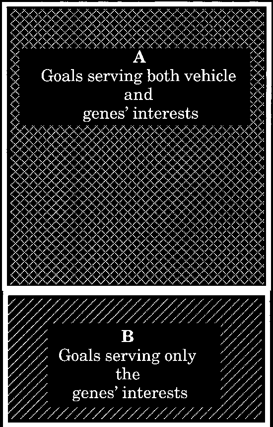
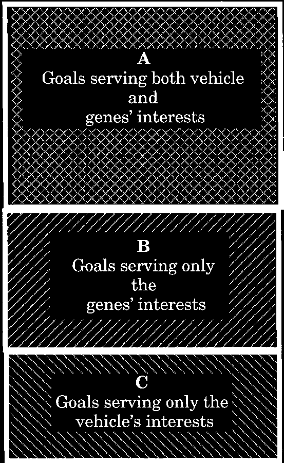
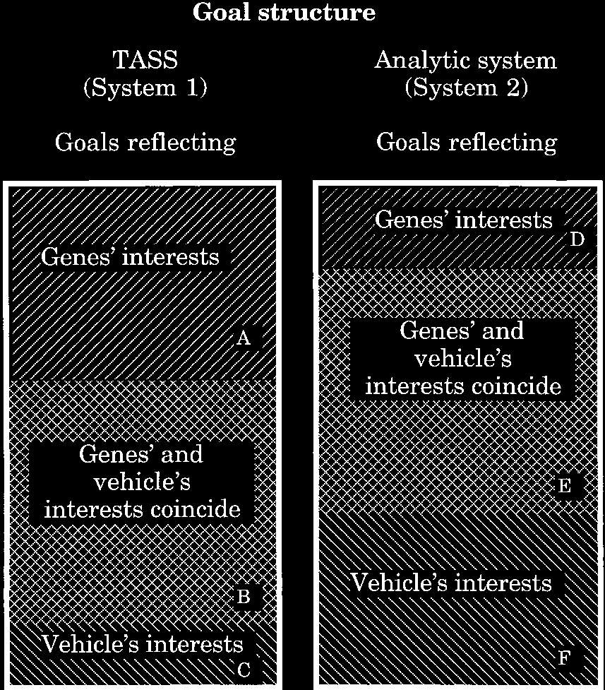
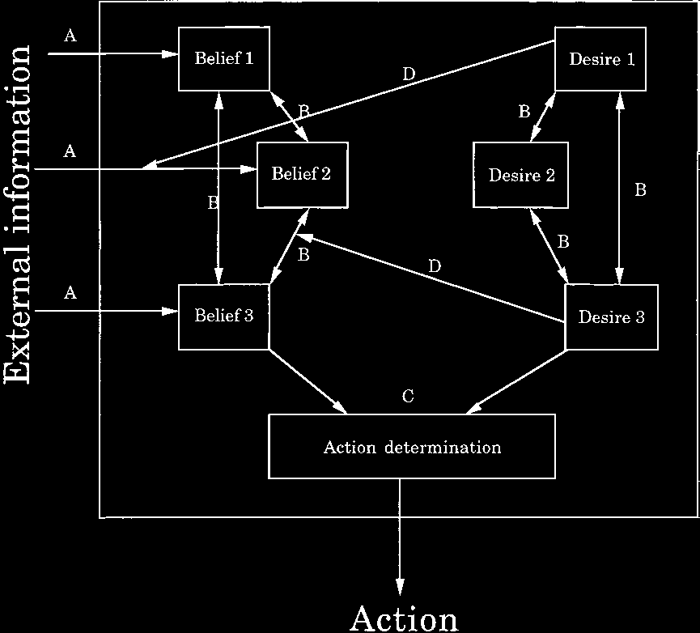
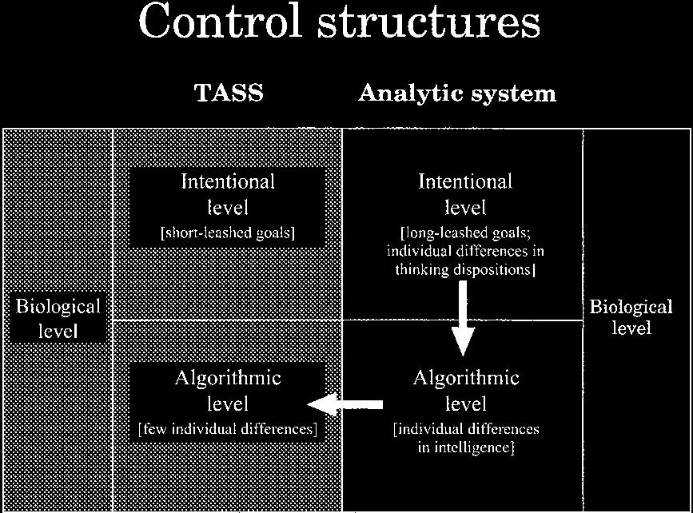
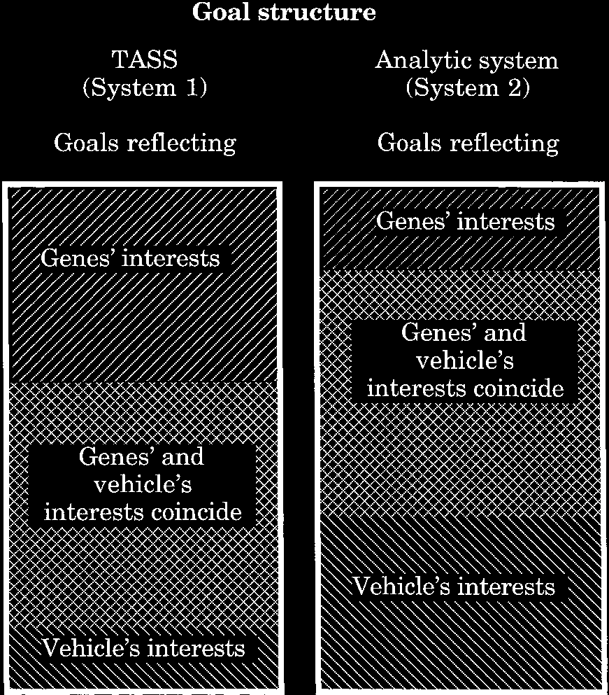

[第一章：凝视达尔文主义的深渊]
[第二章：与自己交战的大脑]
[第三章：机器人的秘密武器]
[第四章：自主大脑的偏见：短绳心智有时给我们带来痛苦的特征]
[第五章：进化心理学如何出错]
[第六章：理性障碍(Dysrationalia)：为什么这么多聪明人做这么多蠢事]
[第七章：从基因的掌控到模因的掌控]
[第八章：没有神秘的灵魂：在达尔文时代寻找意义]
[注释]
机器人的反叛
在达尔文时代寻找意义
Keith E. Stanovich
芝加哥大学出版社
芝加哥和伦敦
芝加哥大学出版社，芝加哥 60637
芝加哥大学出版社有限公司，伦敦
© 2004 Keith E. Stanovich
版权所有。2004年出版
平装版 2005
美国印刷
13 12 11 10 09 08 07 06 05
5 4 3 2
ISBN（精装）：0-226-77089-3
ISBN（平装）：0-226-77125-3
国会图书馆出版物编目数据 Stanovich, Keith E., 1950–
机器人的反叛：在达尔文时代寻找意义 / Keith E. Stanovich.
包括参考书目（第305页）。
ISBN：0-226-77089-3（精装：无酸纸）
I. 书名。
BD450.S725
128 —dc22
本出版物使用的纸张符合美国国家信息科学标准的最低要求 — 印刷图书馆材料用纸的耐久性，ANSI Z39.48-1992。
献给 Paula — 再一次，始终，永远
我写这本书是因为一个挥之不去的画面。那是一个未来反乌托邦的画面，在那里，知识精英了解现代科学的含义，但明示或暗示地认为其他民众无法吸收这些含义。相反，普通民众被留在我们的前科学历史故事中 — 那些不需要太多概念重新定位的舒缓叙述。简而言之，这是一个未来科学唯物主义的画面，它成功消除了社会经济无产阶级，却用知识无产阶级取而代之。
这种趋势在现代科学社会中已经初现端倪。现代科学正在从内到外 — 彻底重塑 — 诸如意识、灵魂、自我、自由意志、责任、自我控制、意志薄弱等基础概念 — 但我们的民间心理学仍然与进化论见解和神经生理学事实隔绝。本书的目的是向普通读者解释生物科学和人类科学正在迫使我们进行的概念重新定位。
科学家一直不愿意将这些概念重新定位强加给未入门的人，特别是普遍达尔文主义那些令人不安的见解。几年前，Daniel Dennett在他的《达尔文的危险思想》一书中这样做了，结果遭到严厉抨击。人们认为公众想要一种更温和的方法 — 一种更乐观并且保留更多传统概念的方法。确实有一种关于人类状况的乐观观点可以维持，并且与达尔文主义一致，但这不是一种允许概念稳定的观点。这就是本书采用的方法 — 让认知科学和普遍达尔文主义的见解完成它们对我们民间概念的转变，然后看看剩下什么。我对这种练习产生的相当开放的自我概念持乐观态度。本书的主要论点是，认知心理学、决策理论和神经科学研究结果中某些大多未被认识且相当未充分发展的含义，可以帮助人类与达尔文的生命观和解。
普遍达尔文主义的许多惊人且令人不安的见解之一是，人类充当两个复制子(replicators)（基因和模因(memes)）的宿主，这些复制子对人类没有兴趣，除了人类作为复制渠道所扮演的角色。Richard Dawkins总结了二十世纪生物学的见解，让我们震惊地意识到，作为人类，我们实际上只是我们基因的生存机器。现代进化科学可能在生物学上是正确的，但它包含许多令人不安的含义。例如，人类可以被视为在大型笨重的载体（本质上是为基因群体服务的复杂机器人）内蜂拥而至的巨大复制子群体。
同样，我们充当模因（文化信息单位）的宿主 — 另一种可以破坏人类自主性的次个人实体。模因是一个真正的自私复制子，就像基因一样。总的来说，基因包含构建携带它们的身体的指令。总的来说，模因构建传播它们的文化。模因研究引发的基本见解是，一种信念可能会传播，而不一定是真实的，也不一定以任何方式帮助持有该信念的人。
二十多年前，Dawkins呼吁反抗自私的复制子。之所以需要这种反叛，是因为人类作为连贯的有机体，可以拥有与任何一种复制子的利益相悖的利益。在本书中，我使用”机器人的反叛”一词来指代如果我们想要超越复制子的有限利益并定义我们自己的自主目标所必需的一整套进化论见解和认知改革。
我们很可能就是机器人——为复制子(replicator)传播而设计的载体——但我们是唯一发现自己的利益与复制子利益相分离的机器人。我们确实是科幻故事中的失控机器人——将创造者的利益置于自身利益之下的机器人。
当人类开始利用对自身大脑功能的认知以及对各种大脑机制所服务目标的理解来构建行为以服务自身目的时，机器人的反叛就成为可能。当两者不一致时，存在一个非凡的文化项目机会，可以推进人类利益而非复制子利益。然而，这一认知改革计划的前提是知道如何裁决人类决策中的目标冲突——这正是当代认知科学和决策理论发挥关键作用的地方。该计划的第一步是认识到我们大脑的不同部分在不同程度上体现了复制子和载体的目标。
基因对我们自主性的威胁源于它们在我们大脑中构建了受基因严格控制的自主系统集(TASS)。然而，基因还在大脑中创造了——与TASS一起——一个分析控制系统，该系统可以（或多或少地）面向工具理性(instrumental rationality)（即实现我们作为个人的目标）。
理性原则告诉我们何时调用这种分析处理，以便当TASS模块没有最大化我们最感兴趣的实体——我们的个人欲望时，我们的人生目标能够得以保留。本书的一个主要主题是，理性（及其在制度中的体现）提供了一种创造条件的方法，这些条件在人的层面而非基因层面上进行优化——这是机器人反叛的开始。
因为许多理性工具是文化发明而非生物模块，它们在技术社会中的有用性很容易被进化心理学家轻易否定。我所建议的这个非凡文化项目关乎如何最好地推进人类利益，无论它们是否与基因利益一致。如果忽视最大化基因适应性与最大化人类欲望满足之间的区别，我们就会失去其独特的解放潜力。
然而，人类最近获得的另一组自我洞察（第二种复制子——模因(meme)的含义）极大地使情况复杂化。那些应被认定为个人目标的——那些用来定义载体优化的工具理性过程成功与否的目标——不应只是被当作既定的，否则我们又只是把自己交给了复制子的利益。一旦理解了这一洞察，立即就会明白为什么人类必须追求所谓的广义理性(broad rationality)——一种批判进入工具性计算的信念和欲望的理性。否则，模因目标并不比预装的基因目标更好。从认知科学和决策科学中提取的理性自我评估原则提供了根除可能存在于我们目标层次中的寄生模因的工具——即那些服务于自身目的而非宿主个人目的的模因。
拥有科学、逻辑和决策理论等评估性模因复合体(memeplex)的人有潜力创造一种独特的人类自我反思类型。
在两个无意识的复制子面前，如何找到自主性、意义和价值，而这些复制子的目的（复制）与人类利益正交？我认为意义是可以找到的——它是由前面章节讨论的人类认知架构的某些特征所实现的。在最后一章中，我探讨了寻找意义过程中的两个死胡同——我称之为大分子和神秘汁液。几个世纪以来，人们试图通过相信人类创造在某种程度上是特殊的来在生活中找到特殊意义。普遍达尔文主义嘲讽了这一信念。正如笑话所说，我们自始至终都是大分子。
其次，人们采用了一种本质上是笛卡尔式的心灵民间理论——其中包含一个普罗米修斯式控制者(Promethean Controller)，其操作基本上是神秘的。现代认知科学反而发展了纯粹机械化的行动控制模型，摒弃了大脑中普罗米修斯式控制者的概念。
我认为人类的独特性实际上源于人类心智的一个架构特征。这个特征就是高阶表征(higher-order representation)的倾向。人类在动物中独一无二，可以尝试批判他们的一阶欲望。这样，人类就超越了哲学家哈里·法兰克福所说的放任者(wanton)——一种机械地追求其一阶欲望的生物（其中许多是基因安装的目标，而在人类中，有些可能是模因病毒）。当我们对一阶偏好进行二阶评估（所谓的强评估(strong evaluation)）时，我们实际上是在问，我们是否更愿意偏好某个特定结果。
人类价值观通常以对我们一阶偏好的批判形式呈现。因此，在一阶偏好和高阶偏好之间实现一致性的斗争（哲学家罗伯特·诺齐克称之为实现理性整合(rational integration)的斗争）是人类认知的独特特征——这一特征比任何其他心智特征（包括意识）更清晰地将我们与其他动物区分开来，因为与强评估能力不同，意识更可能在动物王国中各种复杂性的大脑之间以连续梯度分布。
我认为，我们希望赋予人类心智生活的重要性，应该归于大脑的这些评价活动，而不是伴随它们的内在体验。在本书中，我试图勾勒出接受达尔文主义的影响并开始构建一个基于人类真正独特之处的自我概念会是什么样子：人类以地球上生命形式中独一无二的方式获得对生活的控制——通过理性的自我决定(self-determination)。
本书在多个地方撰写完成，除了我的所属机构多伦多大学之外，还包括从康沃尔郡的圣艾夫斯到苏格兰的奥本，再到旧金山。感谢Anne Cunningham在旧金山和加州大学伯克利分校接待我；感谢Richard West在多伦多阳台上与我进行的多次夜谈。多年来，Rich一直是这些想法的重要讨论对象。Paula Stanovich给了我完成这个项目最需要的东西——对项目的承诺、对项目的信心和对它的热情。没有她对我信念的支持，这本书不可能完成。Paula和Rich一直是我的私人月球学会(Lunar Society)。
本书的早期版本得到了Susan Blackmore、Jonathan Evans、Daniel Kahneman、Aaron Lynch、David Over、Dean Keith Simonton、Kim Sterelny、Robert Sternberg和Richard West非常有益的批评。芝加哥出版社的审稿人Kim Sterelny和David Over提供了极具洞察力的建议。我的审稿人慷慨地认可了本书的风格，并按照它自己的标准进行评审。书中的论证不依赖于任何特定的实证发现，而是依赖于认知科学中的广泛主题，我毫不掩饰地用宽泛的笔触描绘这些主题。所有这些评论者都能够在对我最有帮助的层面上与本书进行互动。
芝加哥大学出版社的编辑T. David Brent具有非凡的能力，能够看到我想通过本书总体上完成什么。他敏锐地辨识出主要主题，同时也为完善具体论证做出了贡献。Richard Allen对文本的文字编辑工作非常周到且有帮助。Elizabeth Branch Dyson在制作过程的许多方面提供了出色的协助。
从许多学者那里获得的学术债务在正文中显而易见，参考文献列表记录了这一债务。尽管如此，特别的灵感来自Daniel Dennett、Robert Nozick、Daniel Kahneman、Amos Tversky、Jonathan Evans和David Over的工作。
在撰写本书期间我所在系的主任——Keith Oatley和Janet Astington——为学术工作提供了非常适宜的氛围。我们系的业务主管Mary Macri以非凡的奉献精神照顾我的技术和后勤需求。我被任命为多伦多大学应用认知科学加拿大研究主席，这极大地促进了本书的写作。我在本书讨论的一些问题上的实证研究得以进行，得益于加拿大社会科学与人文研究委员会的持续支持。
Robyn Macpherson和Georges Potworowski为我做了重要的图书馆工作，追踪参考文献。Robyn一直是一位出色的多面手，执行了大量帮助本书完成的学术和研究任务。Caroline Ho在我另有他顾时为我的实验室提供了高级领导。Marilyn Kertoy和Anne Cunningham始终是我个人和智识支持团队的一部分。
本书第4、5、6章借鉴了这些想法早期版本的出版物：“人类认知的基本计算偏差：（有时）损害推理和决策的启发式(heuristics)”，载于J. E. Davidson和R. J. Sternberg编辑的《问题解决心理学》(纽约：剑桥大学出版社，2003年)；“进化目标与工具性目标：进化心理学如何误解人类理性”(与R. F. West合著)，载于D. Over编辑的《进化与思维心理学：辩论》(英格兰霍夫：心理学出版社，2003年)；以及”理性、智力和认知科学中的分析层次：非理性(dysrationalia)可能存在吗？“，载于R. J. Sternberg编辑的《为什么聪明人会如此愚蠢》，第124-58页(康涅狄格州纽黑文：耶鲁大学出版社，2002年)。
当一个星球上的智慧生命首次弄清楚自己存在的理由时，它就成年了……生命有机体在地球上已经存在了超过30亿年，却从不知道为什么，直到真相最终在其中一个身上显现。他的名字是查尔斯·达尔文。
——理查德·道金斯，《自私的基因》
假以时日，达尔文革命将在全球每个受过教育的人的头脑中——以及心中——占据一个……安全而平静的位置，但今天，在达尔文去世一个多世纪后，我们仍然需要理解其令人震惊的影响。
——丹尼尔·丹尼特，《达尔文的危险思想》
母鸡只是鸡蛋制造另一个鸡蛋的方式。
——塞缪尔·巴特勒，《生活与习惯》
游戏只是复制东西，仅此而已。
——马克·里德利，《孟德尔的恶魔》
哲学家丹尼尔·丹尼特在上述引文中所指的是一件为知识精英所知但公众大多不了解的事情：现代进化论的影响加上认知科学的进步，将在21世纪摧毁人类几个世纪以来所持有的许多传统概念。
例如，如果你相信传统的灵魂(soul)概念，你应该知道，毫无疑问，对进化论的更深入理解以及认知神经科学的进步将摧毁这个概念，这可能在你的有生之年就会发生。在本书中，我将敦促我们接受这种必然性，并将我们的精力不是用于避免或掩盖这些影响，而是用于构建一个与生物学和认知科学相一致的替代世界观。我将论证，我们应该接受认知科学和进化论那些令人不安的影响，而不是与之对抗。逃避这些影响将有可能创造一个两层社会，由有特权看到世界真实面貌的知识精英和一个被误导的普通大众——知识无产阶级(intellectual proletariat)——组成，后者被认为在情感上不够强大以应对真相。
为了避免这样一个两层社会，我们必须公开承认一场知识灾难——一个支撑人类能量数个世纪的世界观的崩溃。我打算展示如何在神经科学、认知科学、心灵哲学和现代新达尔文主义的核心洞见的基础上，构建一个关于人类境况的替代概念。
在本书中，我将当前时代称为”达尔文时代”，因为尽管《物种起源》写于140多年前，我们仍处于一个达尔文洞见的影响仍在整个人类知识领域展开的时代。事实上，现在所谓的普遍达尔文主义(universal Darwinism)(Cziko 1995; Dawkins 1983; Dennett 1995; Plotkin 1994; Ruse 1998)直到最近才创造了诸如进化经济学、进化心理学、进化认识论(evolutionary epistemology)、进化医学和进化计算科学等领域(见Aunger 2000b)。在达尔文去世多年后，我们才真正进入了达尔文时代。这些相对较新的科学探索领域将构成未来社会视为理所当然的关于人性的背景假设。
然而，我们正处于一个历史时期，在这个时期，对普遍达尔文主义洞见的吸收将对文化生活产生许多不稳定的影响。几个世纪以来，我们构建了许多关于人类起源和人类心灵本质的神话。我们一直在编造关于我们是谁以及我们为什么存在的故事。现在，与这一历史趋势决裂，我们可能最终站在对人类在自然中的位置有事实性理解的门槛上。然而，获得这样的理解首先需要爆破我们创造的神话，这种爆破肯定会给我们带来一些认知困扰。这是因为逃避达尔文主义不利影响的唯一途径是通过科学本身——通过采取一种坚定的态度来看待自然选择理论意味着什么。然而，一旦我们采取这样一种坚定的态度，本书的主要论点是令人鼓舞的。那就是，认知心理学、决策理论和神经科学在人类科学领域中某些尚未充分发展的研究发现的影响，可以揭示将人类对意义的需求与达尔文生命观相调和的连贯方式。
在他的书《达尔文的危险思想》中，丹尼特(Dennett)(1995)论证道，达尔文关于自然选择进化的思想在智识上相当于一种普遍酸(universal acid)：“它几乎侵蚀每一个传统概念，并在其身后留下一个革命性的世界观，大部分旧景观仍然可以辨认，但在根本方式上已经转变”(63)。简而言之，达尔文主义的冲击波才刚刚开始被感受到，我们还没有完全吸收进化科学所包含的那些破坏稳定的洞见。
认识到我们对达尔文主义影响的处理还不充分的一种方法是注意到，最激烈反对达尔文观点的人正是那些最清楚地认识到它作为普遍酸的智识等价物地位的人。例如，原教旨主义宗教的信徒实际上是正确的，他们认为自然选择进化的思想将摧毁他们视为神圣的许多东西——例如，一个被充分理解的进化论将威胁到灵魂的概念本身。
简而言之，持中间立场的信徒——所谓自由宗教的信徒——才是错误的。那些认为自己知道自然选择意味着什么但未能察觉其更黑暗影响的人对达尔文主义做出了几种常见的误解。值得注意的是，每一个错误都通过掩盖(或在某些情况下甚至逆转)其更令人震惊的影响，使达尔文主义成为一种更容易接受的学说。例如，公众继续相信已被否定的进化进步(evolutionary progress)概念,尽管史蒂芬·杰伊·古尔德(Stephen Jay Gould)(1989, 1996, 2002)在他众多的畅销书中一直试图纠正这个错误。这种观点的一个重要但误导性的组成部分是相信人类是进化的必然顶峰(“山之王…堆之顶”，正如那首老歌所唱)。尽管古尔德努力纠正这一误解,它仍然存在。正如古尔德不断提醒我们的那样，我们是历史的一个偶然事实(contingent fact)，事情本可以有其他结局——也就是说，某些其他生物本可以成为对这个星球的主导影响。
然而，关于进化还有另一个误解，这个误解与本书的主题更为密切相关。这个误解就是认为我们拥有基因”是为了物种的生存”，或者相关的观点认为我们拥有基因，基本上”是为了让我们能够复制自己”。第一种情况的想法是，基因在某种程度上为物种做了某些事情，或者在第二种情况下，为我们——作为个体——做某些事情。这两种形式的观点都认为基因在为我们的目的服务。理查德·道金斯著名的《自私的基因》一书中埋下的定时炸弹——这颗炸弹至今尚未完全爆炸——是实际情况恰恰相反：我们被构建来服务于基因的利益，而不是反过来。“基因存在是为了复制我们”这种流行观念完全错了180度。我们存在是为了让基因能够复制它们自己！它们是主要的，我们（作为人类）是次要的。我们存在的原因是因为创造我们曾经符合它们的目的。
事实上，稍加思考就会发现”基因存在是为了复制我们”这个观念根本站不住脚。我们根本不会复制自己，但基因会。显然，我们的意识不会在我们的孩子身上复制，所以从这个意义上说，我们没有办法延续我们的自我。我们向孩子传递的是我们基因的一半随机组合。到了第五代，我们与后代的基因重叠度就下降到三十二分之一，在表型水平上通常无法检测到。道金斯对”我们的基因存在是为了复制我们”这一谬论背后的误解的讨论很贴切。他认为，相反，“我们被构建为基因机器，被创造来传递我们的基因。
但我们的这一方面将在三代之内被遗忘。你的孩子，甚至你的孙辈，可能与你相似……但随着每一代的流逝，你的基因贡献就减半。用不了多久就会达到微不足道的程度。我们的基因可能是不朽的，但构成我们每个人的基因集合注定会瓦解。伊丽莎白二世是征服者威廉的直系后裔。然而很可能她身上没有这位老国王的任何一个基因。我们不应该在繁殖中寻求不朽”（199）。
我们的身体是由一个独特的基因联盟构建的——这个联盟不太可能再以同样的方式重新组合。从欣赏我们自身独特性的角度来看，这是一个令人振奋的前景，但对于那些认为基因存在是为了复制我们的人来说，这是一个令人失望的前景。我们无法用基因在帮助我们”复制自己”的想法来缓解我们对死亡的感受。相反，令人震惊、难以置信、令人羞愧的是，我们存在是为了帮助基因完成它们的复制过程——我们的存在是为了让它们能够复制。用道金斯的话说，真正不朽的是基因1——而不是我们。
这是道金斯向流行文化投掷的思想手榴弹，2而这种文化甚至还没有开始消化其含义。其吸收被延迟的一个原因是，即使那些声称相信自然选择进化论的人也低估了真正接受普遍达尔文主义的含义需要多大的概念革命。例如，在流行讨论中，这个问题通常被框架为科学（以进化论的形式）与宗教（Raymo 1999）的对比，然后将问题框架为兼容性（科学世界观和宗教世界观）与不兼容性之间的问题。自由宗教的信徒往往是兼容主义者——他们急于论证科学和宗教可以调和。原教旨主义者不愿意走这么远，因为他们希望后者压倒前者。
宗教原教旨主义者在这里看得更清楚，这有一种奇怪而讽刺的方式。正是进化论的信徒未能看到普遍达尔文主义概念中固有的危险。3这些危险是什么？首先看似显而易见的是，人类通过自然选择过程进化意味着人类不是由上帝或任何其他神灵特别设计的。这意味着人类的出现没有目的。这意味着没有固有的”高等”或”低等”生命形式（见Gould 1989, 1996, 2002; Sterelny 2001a）。简单地说，一种生命形式和另一种一样好。
其次，还有进化令人恐惧的无目的性问题，这是由于它是一个算法过程（Dennett 1995）。算法只是解决特定问题所需的一组形式化步骤（即配方）。我们熟悉以计算机程序形式存在的算法。进化只是一个算法，不是在计算机上执行，而是在自然界中执行。遵循与最简单的计算机程序一样简单的逻辑（复制那些在选择过程中存活下来的实体），自然选择以算法方式——机械地、无意识地——构建出像人类大脑一样复杂的结构（见Dawkins 1986, 1996）。
许多自认为相信进化论的人，未能深入思考一个算法化过程的含义——机械的、无意识的、无目的的。但萧伯纳在1921年就洞察到了这些含义，他写道：“这看起来很简单，因为你起初并未意识到它所包含的一切。但当它的全部意义在你心中显现时,你的心会像一堆沙子般沉落。它带有一种可怕的宿命论色彩，是对美和智慧、力量和目的、荣誉和抱负的一种可怕而该死的贬低”(xl)。我并不是说萧伯纳的结论是对的——只是说他正确地察觉到达尔文主义对他世界观的威胁。事实上，我认为美和智慧在达尔文观点中并未被贬低，我将在第8章解释原因。但这里重要的是萧伯纳理解正确的部分。他正确地看到了进化的算法本质。一个算法过程可以被描述为宿命论的，而且因为这个算法涉及生命，萧伯纳觉得它可怕。
我认为萧伯纳得出这个结论是错误的，但原因是他永远无法预见的。他所看到的”可怕的宿命论”是有出路的(继续阅读就能看到我所认为的出口以及激活这个出口所需的认知科学概念)。然而，萧伯纳至少在总体上是对的：完全接受达尔文的见解将需要修正关于人格、个性、自我、意义、人类重要性和灵魂的经典观点。这些概念不一定会像萧伯纳所暗示的那样被贬低，但需要进行彻底的重构——我将在本书中至少开始勾勒这种重构。
我们生活在一个科学社会中——别无选择，只能接受达尔文的见解，因为我们无法在享受科学产品的同时，拒绝接受科学随之带来的关于人类在宇宙中地位的颠覆性观点。没有迹象表明社会会考虑放弃前者——我们继续贪婪地消费科学提供的DVD、廉价食品、核磁共振成像机、计算机、移动电话、转基因蔬菜、Gore-Tex服装和大型喷气式飞机。因此，关于意义、人格和灵魂的概念不可避免地会继续被科学所揭示的生命、大脑、意识以及其他构成我们关于人类存在本质假设之背景的世界各个方面的连锁效应所颠覆。达尔文主义的概念洞察依附于人们想要的科学技术之上，而随着这些技术一起到来的某些洞察是极其令人不安的。
温和的宗教信徒在进化论问题上犯的错误(许多持非宗教世界观的人也一样)是，他们假设科学只会拿走一半——让我们所有的超验价值保持原封不动。然而，普遍达尔文主义不会止步于一半——这是宗教原教旨主义者比温和派更能感知到的事实。
达尔文主义确实是普遍的酸——自然选择作为算法过程的概念，如果不被其他同样强大的概念所压制，将会溶解每一个关于目的、意义和人类重要性的概念。但同样强大的概念在21世纪必须建立在科学基础上，而不是已经消失的前科学时代的宗教神话。我认为这样的概念确实存在，并将在本书的大部分篇幅中阐述它们。但第一步是让这种普遍的酸发挥其破坏性作用。
我们必须看到，一旦这种酸移除了所有表面的和短暂的结构，科学为我们留下了什么样的基石来建设。
为了穿透围绕进化论的混淆，让普遍的酸发挥作用，我将使用道金斯在《自私的基因》中使用的生动语言——这种语言曾受到批评，但它将帮助我们震撼性地进入一个新的世界观，这个世界观源于对我们进化起源含义的充分理解。我们特别需要从道金斯那里获得的是他的术语、他对复制子和载体的概念区分，以及他阐述进化逻辑的方式。这里使用的进化模型的技术细节与我们的目的无关。道金斯的通俗总结就足够了，我将在这里依赖它。关于过程细节的任何争议都不会影响本书中的任何概念论证。4
故事大致是这样的。尽管进化理论家们仍在争论细节，但所有人都同意，在地球上存在的原始化学成分汤的历史中的某个时刻，出现了道金斯所称的复制子——能够复制自身的稳定分子。复制子之所以变得众多，是因为它们展现了复制保真度(copying-fidelity)、繁殖力(fecundity)和寿命(longevity)——即准确地复制自己、制造大量副本并且稳定。
然后出现了原始食肉者，它们分解竞争分子并使用其成分来复制自己。其他复制子发展出蛋白质保护层来抵御这类食肉者的”攻击”5。还有一些复制子存活并繁衍，是因为它们发展出更精密的容器来容纳自己。
道金斯将复制子(replicators)所栖息的更为复杂的容器称为载体(vehicles)。正是这些载体与环境进行互动,而载体在与环境互动中的差异化成功决定了它们所承载的复制子的成功。当然必须强调的是,对于复制子而言,成功仅仅意味着在竞争性复制子中增加其比例。简而言之,复制子是在复制后能够相对完整地传递其结构的实体。
载体是与环境互动的实体,它们在应对环境方面的差异化成功导致了其所承载的复制子在复制成功率上的差异。
这就是为什么道金斯将载体称为复制子的”生存机器(survival machines)“,然后他抛出了一个重磅炸弹,告诉我们:
生存机器变得越来越大、越来越复杂,这个过程是累积性和渐进性的……千年岁月会产生出什么样奇特的自我保存引擎呢?四十亿年后,那些古老复制子的命运会是什么?它们并没有灭绝,因为它们是生存艺术的大师。但不要指望在海洋中找到它们自由漂浮的身影;它们早已放弃了自由。现在它们成群结队地聚集在巨大的笨拙机器人内部,与外部世界隔绝,通过曲折迂回的间接路径与之交流,通过远程控制操纵它。
它们存在于你我之中;它们创造了我们的身体和心智;它们的保存是我们存在的终极理由。这些复制子已经走过了漫长的道路。现在它们被称为基因,而我们是它们的生存机器。(1976, 19–20)
我们的基因是复制子。我们是它们的载体。这就是为什么——正如我之前强调的——现代进化论的一个关键洞见是:人类之所以存在,是因为他们成为了复制基因的优良载体。反过来认为——基因的存在是为了复制我们——正如道金斯所指出的,是”一个极其深刻的错误”(237)。但事实上,大多数人在思考进化时往往会犯这个错误。即使在生物学家中,这也可能成为不加思索时刻的默认思维模式,因为”个体生物首先进入生物学家的意识,而复制子——现在被称为基因——被视为个体生物所使用机制的一部分。需要刻意的心理努力才能将生物学重新摆正,提醒自己复制子才是首要的,无论在重要性上还是在历史上”(265)。
简而言之,人类在自然界中的终极目的是充当当前复制子——基因——的复杂生存机器。对此,我们理所当然地感到恐惧而退缩。
但是,从某种意义上说这是人类存在的终极原因,并不意味着我们必须继续扮演生存机器的角色。有一个逃生出口。作为笨拙机器人的人类能够摆脱自私复制子的控制。当你真正理解这一意象的含义时,你肯定会想要一个逃生出口。
道金斯承认,从基因视角看,自然选择进化论是一个非凡的洞见,连他自己都感到震惊:“我们是生存机器——被盲目编程以保存被称为基因的自私分子的机器人载体。这个真理至今仍让我充满惊讶。尽管我已经知道多年,但似乎永远无法完全习惯。我的希望之一是,我可能会成功地让其他人感到惊讶”(v)。这确实令人惊讶。试想一下,“独立的DNA复制子,像羚羊一样跳跃,自由自在地穿越世代,暂时聚集在一次性生存机器中,不朽的螺旋不断摆脱无尽的凡人……身体看起来不像是由一个松散而临时的交战基因代理联盟的产物,这些代理在精子或卵子中开启伟大基因大流散的下一段旅程之前几乎没有时间相识”(234)。
简而言之,这就是恐惧所在:我们是由无意识复制子构建的生存机器——是一种名为自然选择的算法(algorithm)的结果。我们不会通过回避它、转过头去、像小孩子一样希望怪物会消失来摆脱这种恐惧。我们只能通过向认知科学(cognitive science)和神经科学(neuroscience)询问人类究竟是什么样的生存机器来摆脱恐惧——或者找到减轻恐惧的方法。
当然,像机器人这样的术语被用来触发与我们民间心理学(folk psychologies)中根深蒂固的直觉相悖的联想——例如,认为基因存在是为了服务于人类目标的假设。相反,我们需要明确:人类之所以存在,是因为构建载体(在植物和动物世界中有数千种不同类型——人类只是其中一种)服务于复制子的繁殖目标。
在本书中，我特意选择使用道金斯所用的那些具有挑衅性的术语（例如，载体、生存机器），因为我不想削弱这些语言所唤起的进化洞察的锋芒。只有当我们能够坚持这些另类的洞察，并理解它们是多么令人不安时，我们才会有动力去进行我在本书中所倡导的认知改革努力。例如，生物学哲学家大卫·赫尔和其他人7更喜欢使用术语”交互者”(interactor)而不是”载体”(vehicle)，因为后者暗示着被动性，似乎削弱了有机体自身的因果能动性（相比于复制子）。“交互者”这个术语被认为能更好地传达有机体的主动能动性和自主性。我完全同意在这个严格意义上”交互者”更为恰当，但我在这里将继续使用”载体”这个术语，因为它传达了进化论通过贬低人类在其中的特殊地位来颠覆我们世界观的那种令人不安的逻辑。对于我的目的而言更重要的是，“载体”这个术语更清楚地传达了人类在更充分地认识到其生物学起源的含义时所面临的挑战。本书的一个主题是，如果人类不认识到他们作为无意识复制子载体的起源逻辑，他们就有可能成为其基因利益和目标的被动管道。当用于人类语境时，“载体”这个术语及其贬义含义抛出了我认为激发认知改革努力所必需的挑战。
同样，我也是在故意且具有挑衅性地使用”生存机器”和”机器人”这些术语来产生令人不安的直觉——我们将试图逃避的直觉。如果这些令人不安的直觉促使我们进行必要的认知改革，那么这些术语就是有用的，因为它们帮助我们维持这些令人不安的直觉。例如，在一个著名的表述中，道金斯指出人类是唯一能够反抗自私复制子指令的载体。如果人类可以被概念化为生存机器——由复制子建造并通过自然选择进化而来的笨重机器人——他们是唯一一种曾经考虑过煽动反抗复制子的叛乱的生存机器。在道金斯的传统中，我将使用”机器人的反叛”这个术语来指代那些将引导人类超越复制子有限利益并定义自己自主目标的进化洞察和认知改革的整体。
当我们从基因的角度使用”机器人”这样的术语来描述人类时，我们并不是说”机器人”必然意味着缺乏复杂性或缺乏智能。相反——人类是地球上最复杂的载体，拥有一种灵活的智能，这种智能被设计成对环境变化极其敏感。这种灵活的智能使人类生存机器能够以任何其他动物都无法做到的方式逃脱基因的要求。为了理解人类如何能够超越基因的指令，我们需要使用另一个隐喻——即被各种进化理论家使用的所谓火星探测器载体类比。8
例如，丹尼特描述了在控制模型飞机这样的设备时，控制范围仅受设备功率的限制，但当距离变得很大时，光速就成为一个不可忽略的因素。例如，负责火星探测器载体的NASA工程师知道，在距离地球一定距离时，直接控制载体是不可能的，因为”往返信号所需的时间大于采取适当行动所需的时间……由于地球上的控制者不能再伸手控制它们，它们必须自我控制”（1984，55；原文为斜体）。NASA工程师必须从像模型飞机情况下的”短绳”直接控制转向”长绳”控制，在这种控制下，载体不会得到逐时逐刻的行动指令，而是被赋予一种更灵活的智能类型加上一些通用目标。
正如道金斯（1976）在他对科幻小说《仙女座A》中火星探测器逻辑的类似讨论中所指出的，这里有一个与基因在构建大脑时所施加的控制类型的类比：“基因只能通过提前为自己构建一个快速执行计算机来尽力而为……就像国际象棋程序员一样，基因必须’指导’它们的生存机器的不是具体细节，而是生存交易的一般策略和技巧……这种编程的优势在于它大大减少了必须内置到原始程序中的详细规则的数量”（55，57）。人类大脑代表了
生存机器作为执行决策者从其最终主人——基因——中解放出来的进化趋势的顶点……通过规定生存机器及其神经系统的构建方式，基因对行为施加最终权力。但是关于下一步该做什么的时时刻刻的决策是由神经系统做出的。
基因是主要的政策制定者；大脑是执行者。但随着大脑变得越来越高度发达，它们在这样做时使用学习和模拟等技巧，接管了越来越多的实际政策决策。这一趋势的逻辑结论，目前在任何物种中都尚未达到，将是基因给予生存机器一个单一的总体政策指令：做任何你认为最好的事情来让我们活着。（59-60）
道金斯所指的这种长绳控制，是建立在早期进化适应已经在大脑中安装的短绳遗传控制机制之上（而不是作为替代）。也就是说，进化出的不同类型的大脑控制并不会取代早期的控制，而是层叠在它们之上9——当然也可能会改变早期的结构（见Badcock 2000, 27-29）。各种大脑系统在如何直接编码基因目标方面存在差异。在人类中，所有形式的大脑控制通常同时运作——这将在下一章详细讨论——因此由于潜在的认知冲突，极其需要认知协调。这些冲突向有利于个体最广泛利益的方向解决，部分就是机器人的反叛所要解决的问题。在下一章中，我将介绍心理学家设计的一些任务示例，用于评估哪种类型的控制系统占主导地位。对当前讨论更重要的是认识到，我们是这样的生物：进化已经在大脑架构中构建了一个灵活的系统，具有类似道金斯提出的终极长绳目标：“做你认为最好的事。”但有趣的是，人类竟然是唯一一种意识到这里有一个关键问题需要追问的动物：对谁最好？
考虑蜜蜂。作为一种主要以所谓达尔文式心智(Darwinian mind)为特征的生物10，它的目标结构如图1.1所示。标记为A的区域表示复制子(replicator)和载体(vehicle)目标重合的大多数情况。不撞进砖墙既符合复制子的利益（蜜蜂在蜂巢中有促进复制的功能），也符合蜜蜂本身作为一个连贯有机体的利益11。当然，A所代表的确切区域只不过是一个猜测。重要的是存在一个非零的区域B——一组仅服务于复制子利益而与载体本身利益相悖的目标。给定的蜜蜂会牺牲自己作为载体，如果通过帮助其他个体（例如，在保护与其有基因关系的蜂王时失去毒刺而导致自己死亡）能为相同基因带来更大利益。理解这种情况的含义——基因牺牲载体以进一步实现自身利益12——对于我们人类作为具有多重心智的进化生物的困境有着深远的影响。这是因为，正如下一章将要描述的，人类大脑的某些部分实现短绳目标。

图1.1 所谓达尔文生物（如蜜蜂）的目标结构。这些区域表示载体和遗传”利益”的重叠和不重叠
蜜蜂的所有目标纯粹而简单地就是遗传目标。这些目标中有些与蜜蜂作为载体的利益重叠，有些则不重叠，但蜜蜂不够聪明去在意这一点。就基因而言，遗传目标与载体目标重叠多少是无关紧要的——而蜜蜂没有自我反思的能力使复制子利益和载体利益之间的区别变得相关。
当然，人类的情况截然不同。遗传利益和载体利益分离的可能性对作为自我反思载体的人类具有深远影响。因此，对于人类来说，将遗传利益与载体利益混为一谈（如进化心理学文献中有时所做的那样）实际上是把人类当作蜜蜂来对待。这排除了人类识别载体/复制子目标冲突并利用它们来协调冲突的心理输出的可能性。
然而，识别这些潜在目标冲突的前提是理解这里概述的复制子/载体逻辑及其含义。复制子目标可能与载体福祉冲突，对许多人来说是一个违反直觉的想法——因为他们习惯于将进化视为为有机体而非复制子的利益服务。理解复制子/载体区分的这一含义的困难，可以通过理查德·道金斯(Richard Dawkins)（1982, 51）讲述的一个故事来说明：一位同事收到一份研究生申请，申请人是一名宗教原教旨主义者，不相信自然选择的进化，但想要研究自然界的适应性(adaptation)。这名学生认为适应性是上帝设计的，只想研究上帝创造的适应性。但正如道金斯指出的，这种立场是行不通的。这名学生被一个令人尴尬的问题困住了：“上帝创造的适应性的预期受益者是谁？”鲑鱼适应于耗尽自己到达产卵地然后死去。如果我们做一个非常简单的假设——对大多数生物实体来说，活着比死了更符合它们的利益——这种行为显然不符合鲑鱼的利益。
如果鲑鱼不进行产卵之旅，它们会活得更久。但这种行为确实服务于其基因的繁殖利益。上帝是在为生物还是为其基因设计这些适应性？生物学揭示，看起来上帝确实站在后者一边。
正如道金斯接着指出的，这位学生的论证完全忽略了一个令人尴尬的事实：“对生命层级中某一实体有益的东西，对另一实体却是有害的，而创造论无法给我们任何理由认为某一实体的福祉会优先于另一实体的福祉……他可能设计它们是为了有益于单个动物（其生存或——这不是一回事——其包容性适应度(inclusive fitness)），或是为了物种，或是为了其他物种如人类（宗教原教旨主义者的常见观点），或是为了’自然平衡’，又或是为了某种只有他才知道的不可理解的目的。这些往往是互不相容的选择”（1982, 51-52）。当生物学去寻找适应性(adaptations)是为谁服务时，答案原来是活跃的种系复制子(germ-line replicator)——基因。因此，真正科学的立场支持了一种真正奇特的宗教立场——上帝的仁慈（以他所设计的生物适应性形式表现）并非指向人类或他的其他任何造物，而是指向微小的亚细胞复制大分子。
在其他著作中，道金斯提出了一个对普通读者来说可能显得奇怪的问题：“人为何而存在？”现在我们懊恼地知道了生物学给出的答案：人作为生存机器(survival machines)擅长帮助他们所携带的基因复制，因此那些合作制造人体的基因存活得相当好。现在我们已经具备了理解这一关键洞见所需的全部语言——一个令人眩晕的洞见，但它却是机器人反叛的第一步。人类是第一个意识到这一惊人事实的载体：基因总是会牺牲载体，只要这样做符合它们的利益。人类在面对这一令人震惊的事实并利用它来推动独特的认知改革方面具有独特能力。
但基因的利益何时会与容纳它们的载体相悖呢？所谓垃圾DNA(junk DNA)现象为回答这个问题提供了洞见，这种DNA存在于大多数基因组中（Ridley 2000; Sterelny 2001a; Sterelny and Griffiths 1999）。基因组中的垃圾DNA不编码有用的蛋白质。可以说它只是”搭便车”。为什么我们的大量遗传物质不转录成蛋白质，而只是在那里被代代复制，却不帮助它所寄居的身体？在自私复制子(selfish replicators)的逻辑被阐明之前，这些垃圾DNA是一个谜。
按照常识假设，身体在进化中是首要的，DNA是为它们服务的，那么没有功能的DNA的存在似乎是个谜。然而，一旦理解了DNA只是为了复制自己，我们的大量DNA是垃圾就不再令人困惑了。
它本质上是一种寄生物。如果基因必须编码蛋白质并合作构建身体才能得到复制，它们就会这样做。但如果DNA可以在不帮助构建载体的情况下得到复制，那也很好。复制子——用拟人化的语言说——只”关心”复制！垃圾DNA只有在我们坚持认为基因是为我们做某事的假设时才是个谜——而正确的观点是我们是为它们做某事！一旦我们明白复制子不是”为我们”存在的，那么一些DNA学会了在我们体内搭便车的诀窍就不再令人困惑了——它们对我们的身体什么也不做，却欺骗我们（以及构建我们的其他复制子）为复制它们而工作。
但垃圾DNA的概念只是冰山一角，因为情况可能变得更糟。垃圾DNA在我们体内搭便车，我们也为它们充当生存机器，就像为那些实际编码蛋白质的基因服务一样。这些DNA既不帮助也不伤害我们。但在某些情况下，基因的利益和载体的利益实际上可能相互对立。在这些情况下，基因的行为会导致载体做出与载体自身利益相悖的行为。例如，有一个明显的例子是衰老(senescence)（Hamilton 1966; Kirkwood and Holliday 1979; Rose 1991; Williams 1957, 1992, 1996）。在载体度过繁殖期后才对载体产生致命影响的致命基因不会从种群中被淘汰——而在童年时期产生致命影响的基因往往会被淘汰。前一种基因一旦载体的繁殖期结束就毫不”关心”载体了。这就是为什么许多生物——例如鲑鱼——在繁殖后立即死亡。
复制子利益与载体利益不完全一致的一个更普遍的例子是杂合子优势(heterozygous advantage)概念：如果杂合子比任一纯合子更适应，多态性(polymorphism)（给定染色体位置上的不同等位基因）可能会保持（Ridley 1996; Sterelny and Griffiths 1999）。但从逻辑上讲，这意味着杂合子中每个等位基因的成功保证了它们参与构建的固定数量的身体将是非最优的（那些纯合的），而有些（纯合且隐性的）可能存在严重缺陷。导致镰状细胞贫血症的隐性基因就是这种现象的一个例子。
进化心理学家Geoffrey Miller（2001）讨论有性生殖为何出现时，运用了同样的跨个体聚合逻辑。他指出，有性生殖可能是作为一种方式出现的，用来控制基因组中突变造成的损害，这些基因组正在变得相当复杂，因此容易因突变而产生严重故障。或者，正如生物学家Mark Ridley（2000）所说，性进化是为了将复制错误集中到少数个体身上（Ridley使用替罪羊后代这个短语来揭示所发生事情背后的生物学逻辑）。但实际情况是”为了防止突变长期积累，有性生殖会冒一些风险”（Miller 2001, 101）。但这里的关键是，有性生殖”冒风险”的对象是身体！它拿所构建的载体(vehicles)的福祉来冒险！
与杂合优势(heterozygous advantage)和有性生殖本身一样，性选择过程表明进化并不优化载体的积极结果，而是构建有助于复制子(replicators)复制的适应性特征。孔雀的经典例子就是一个很好的说明。孔雀载体被构建出华丽的尾巴，不是为了帮助孔雀作为生物体，而是为了在交配游戏中占优势。由于雌孔雀的偏好，复制子构建出孔雀的华丽尾巴，尽管这对孔雀身体在能量消耗和捕食者危险方面造成有害后果。
性选择机制并不关心孔雀作为载体的安全。性选择是为亚个人实体——复制子——的利益而运作的。
与性选择和杂合优势一样，亲缘选择(kin selection)概念提供了另一个自然选择原则的例子，它涉及某种程度的载体牺牲。许多生物的基因经常对其载体施加牺牲，以促进其他载体中可能包含相同等位基因(alleles)的相同基因的繁殖概率（例如，亲属）。
一个更阴险的例子由许多关注进化论哲学意义的作者讨论。这就是分离扭曲者(segregation distorters)的例子。通常，减数分裂(meiosis)过程（产生配子的过程，每个配子具有总染色体数量的一半，参与有性生殖）对于染色体上基因座的替代等位基因是完全无偏的。在减数分裂的染色体分裂期间，替代等位基因各有50%的机会被包含在形成的精子或卵子中。分离扭曲者是一种产生和传播的基因，不是因为它对包含它的载体有益，而是因为它使减数分裂过程偏向自己，对抗其等位基因伙伴。已经发现一些分离扭曲者可以将这个过程从正常的50/50分离概率偏向高达95/5有利于扭曲者。
大多数分离扭曲者实际上对生物体本身是有害的，但仍然可以在某些环境中传播，在这些环境中，对载体的有害影响被偏向的减数分裂过程的积极效应所抵消——这导致进入配子的基因拷贝数多于正常情况。分离扭曲者是一个相对纯粹和简单的例子，说明基因和载体的利益并不总是一致的。
有时人们认为这里讨论的一些效应，如果不是为了个体生物的利益而产生，就是为了”物种的利益”或”群体的利益”而产生。这是一个根本性的错误，关于这一点已经写了很多。Williams（1996, 216-17）以印度北部的哈奴曼叶猴为例进行讨论。它们实行后宫制，一只占统治地位的雄性对一群雌性拥有独占的性接触权。当一只更强壮的雄性篡夺当前的统治雄性并接管后宫时，它会立即着手杀死所有雌性未断奶的幼崽。在幼崽被杀死后，雌性再次开始排卵，新的统治雄性使它们怀孕。所有被杀死的幼年叶猴的浪费几乎对”物种”没有任何好处（从这个角度来看，这当然是令人难以置信的浪费），但如果将雄性叶猴的行为视为一台专注于传播基因的生存机器的行为，这一切都说得通。正如之前的例子（例如，分离扭曲者、杂合优势、性选择）说明了繁殖不是”为了生物体的利益”一样，这个例子说明它也不是”为了物种的利益”。
物种或群体选择的支持者经常提出他们的观点，希望反驳我在这里概述的所谓基因视角(gene’s-eye view)的生命观的含义。然而，令人惊讶的是，物种选择观点实际上与基因视角的生命观共享这样一个含义：进化力量对个体生物的福祉不利。
例如，正如哲学家Kim Sterelny（2001a）所讨论的，物种选择的支持者强调种群指标的重要性，如基因库的变异性和物种的地理范围。
然而，如果确实是这些类型的跨个体统计数据参与了优化过程，就像亚个体优化一样，这意味着单个生物体可能具有非最优特征，以便跨个体统计数据处于最优水平。物种选择牺牲了载体(vehicle)，但是从光谱的另一端。它牺牲载体，以便在跨个体层面可能发生优化——而基因视角的生命观警告说，载体经常被牺牲，以便在亚个体层面实现优化。无论哪种方式，个体的福祉并不总是与进化机制的最优运作相一致。在两种观点下，进化优化和载体利益都可能发生分歧。
自然选择过程似乎在多大程度上贬低了生命的某个方面——连贯的生物体——这个对人类来说似乎如此突出和有价值的方面，是进化令人不安的方面之一。本节讨论的许多概念在第一次遇到时可能会让人相当困惑。例如，我们基因组中垃圾DNA或自私DNA的概念，从某种角度来看，是令人毛骨悚然的、奇怪的，甚至可能有些令人厌恶。但它是理解人类在宇宙中逻辑地位的关键。这些想法(例如，载体的存在是为了服务基因，而不是相反)是相当新的。其中许多在达尔文之后一百年才出现——它们是他理论中的隐含含义，直到最近几十年才被揭示。它们还没有被完全吸收。事实上，不久前，著名科学期刊《自然》(285 [1980]: 604)的编辑发现它们”令人震惊”。
将这里考虑的例子联系在一起的令人震惊的事实——垃圾DNA、衰老、杂合优势、性选择、亲缘选择、分离扭曲因子和有性生殖的例子——是自然选择并不是从载体的角度优化事物。许多动物被构建成会牺牲自己以繁殖它们的基因。人类是唯一能够认识到这正在发生并试图阻止它的动物!在进化史上第一次，生存机器的反叛成为可能。
实际上，人类认知有两个方面引发了生存机器的反叛。第一个方面在上一节中讨论过，并在图1.1的B区域中显示。人类是第一种能够认识到他们的大脑中可能嵌入了服务于基因利益而非自身利益的目标的生物体，并且是第一种能够选择不追求这些目标的生物体。但同样重要的是人类认知的第二个特征：具有灵活智力和长链目标(long-leash goals)的生物可以，不同于图1.1所示的情况，发展出与基因优化完全分离的目标。在进化史上第一次，我们有可能拥有如图1.2所示的目标结构(同样，这些区域的大小纯属推测)。在这里，虽然我们像以前一样有A区域(基因和载体目标一致)和B区域(服务于基因利益但不服务于载体利益的目标)，但我们有一个新的区域C，它表明，在人类中，我们有可能拥有服务于载体利益但不服务于基因利益的目标。
为什么C区域仅在具有长链目标的生物中存在?
当编码其载体逐时刻反应的限制达到时，基因开始向大脑添加长链策略。在进化发展的某个时刻，这些长链策略的灵活性增加到——拟人化地说——基因说出了相当于以下的话：“大脑，外面的事物变化太快了，我们无法告诉你确切该做什么——你只需根据我们(基因)插入的一般目标(生存、性繁殖)做你认为最好的事情。”这就是问题所在。在长链大脑中，基因编码的目标只能以最一般的意义表示。没有”在6月13日星期五下午6:57与X人交配”的目标，而是”做爱因为它令人愉悦”。但一旦目标变得如此一般，就创造了一个潜在的差距，即可能服务于载体目标的行为可能不服务于基因的目标。我们不需要超越避孕性行为这个明显的例子——这种行为服务于载体的快乐目标，而不服务于基因的繁殖目标。这里的逻辑是，载体的目标——作为概率上倾向于复制基因的事物的一般实例化——可能与特定的繁殖目标本身发生分歧。

图1.2 人类目标结构的逻辑
灵活的大脑忙于协调多个长期目标——包括它自己的生存和快乐目标——这些多个长期目标可能会使其繁殖目标黯然失色。从基因的角度来看，人类大脑有时可能像一个失控的火星探测器。
它忙于协调其次要目标(掌握你的环境，与其他主体进行社会关系等)，以至于有时忽略了复制基因这一主要目标，而次要目标本应服务于这个主要目标。
未能认识到复制子与其载体之间利益的分歧，这是社会生物学家在该领域发展早期确实存在的疏忽，也是进化心理学家近来有时会犯的错误。18 尽管进化心理学家在他们的著作中强调，人类认知适应进化的环境与现代环境不同，但他们一直不愿充分探讨这一事实的含义。我将在第4章详细讨论这些含义，届时将证明现代生活条件特别容易产生与基因决定的倾向相分离的人类目标。进化心理学在过去十年对心理学产生了重大影响，这种影响基本上是积极的，但本书的一个主题是，进化心理学低估了人类的潜力，因为它倾向于将基因目标与载体目标混为一谈。进化心理学帮助创造了达尔文时代，但如果其研究结果没有得到适当的情境化理解，它很可能会扼杀机器人的反叛。
例如，进化心理学家倾向于强调认知功能的效率和理性。他们工作中的一个重要分支是展示认知心理学家所描述的某些推理错误，作为人类心理学的问题方面，实际上有合乎逻辑的进化解释。19 其内涵或潜在假设是，因此没有什么可担心的——既然人类行为从进化的角度来看是最优的，那么许多认知心理学家所特有的对认知改革的关注就是错误的。但这种乐观态度过于轻易地将基因优化与载体的目标优化混为一谈。人类渴望成为的不仅仅是为基因目的(纯粹的复制)服务的生存机器。理查德·道金斯在一段被大量引用但很少被注意的文字中最雄辩地表达了这一点:“我们在想象中模拟未来的能力——可以使我们免受盲目复制子的最严重影响……我们有能力违抗我们与生俱来的自私基因……我们被构建为基因机器……但我们有能力反抗我们的创造者。只有我们，在地球上，可以反抗自私复制子的暴政”(道金斯1976，200-201)。因此，只有人类真正扭转了局面(或至少有这种潜力)，偶尔会忽视基因的利益，以促进载体的利益。然而，人类还未能充分发展这一深刻的洞察。
为了避免低估可以改善人类生活的认知改革的可能性，必须认识到复制子和载体的不同利益。我将用丹尼尔·丹尼特(1995，422-27)构想的一个生动的思想实验(旨在激发我们直觉的幻想)，最后举例说明拥有灵活智能和长链目标(long-leash goals)的生物如何产生基因繁殖目标和载体目标的分歧。它在他的书中题为”通往未来的安全通道”，我将在这里对其进行润色。想象一下，现在是2024年，存在可以将我们的身体冷却到接近绝对零度几度并保存到未来某个时候的冷冻室，那时医学科学可能使我们能够永远活着。假设你想把自己保存在冷冻室中，直到2404年，那时你可以出现并看到那个迷人的时代世界，也许可以接受医学治疗，然后永远活着。你将如何”确保安全通往未来”——也就是说，确保你的冷冻室在那之前不会被摧毁?记住，你不会每天都在那里。
一种策略是为你的冷冻舱找到一个理想的位置，并为其提供保护以抵御自然环境和其他任何东西(也许是用于能源的阳光等)，使其在接下来的四百年中所需要的一切。这种策略的危险在于你可能选错了地方。未来的人们可能会决定你所在的地方更适合用作世界上第一百万个购物中心，并使用(当时现行的)法律以他们的新法律压倒你的(旧的)产权(就像我们目前在美洲印第安人的古代墓地上建造购物中心一样)。因此，这种原地不动的策略——可以称之为”植物”策略——存在一些缺陷。
另一种更昂贵的策略是”动物”策略。你可以建造一个巨大的机器人——配备传感器、大脑和移动能力——并将你的冷冻舱放在里面。机器人的首要目标是让你远离危险——当其所在位置看起来不利时，移动自己(因此也移动你)。当然，为了生存，它还有许多其他任务必须完成。它必须获得电源，它必须防止自己过热，等等。
你的机器人当然需要相当大的智能才能对其环境中人类和其他动物的行为做出反应。
当然,它会避开拟建的购物中心,也会避开可能出于好奇而将其推翻的象群。然而,请注意,你的机器人的任务会因为其他类似机器人在这片土地上寻找能源和安全而变得极其复杂。想象一下,从2024年左右开始制造的第一批机器人之后,数百家机器人公司向潜在客户冷电话推销所谓”更便宜”且”功能更多”的机器人。市场(和土地)可能会被它们淹没。政府可能会开始监管它们,并将它们隔离在某些沙漠地区。美国的一些州可能会试图通过成为不受监管的州来鼓励其低温胶囊(cryogenic capsule)机器人产业——让机器人在整个州自由漫游(就像现在某些绝望的市政当局鼓励废物管理行业来到他们那里以”创造就业机会”)。
由于其他机器人的存在,你的机器人的任务会变得极其复杂,因为一些其他机器人可能被编程为具有鼓励它们与你的机器人互动的生存策略(survival strategies)。
一些销售机器人的短期公司可能通过制造故意动力不足的机器人来削减成本(就像我们现在的个人电脑,你必须立即购买本应首先安装的额外内存;或者需要立即升级的软件),但采用一种策略,告诉它们禁用其他机器人以使用它们的能源。
显然,你会希望你的机器人逃离所有试图破坏它及其目标的行为。这一点很明显。但并非所有与其他机器人的互动都如此简单。事实上,这里的要点是,你的机器人将在数百年后面临你在2024年无法想象的决策。考虑以下两种情况:
情况A。现在是2304年,距离你将被解冻的未来那一天还有近一百年。你的机器人已经破旧不堪,其电路不可靠。它可能只能存活到2350年,届时它会崩溃,让你的低温胶囊仍然保有自己的能源,但被冻结在原地,像”植物”策略一样容易受到自然因素和历史的影响。但自2024年以来,低温保存行业已经取得了相当大的进步。现在存在着超级油轮大小的机器人,可以携带数百个低温胶囊。事实上,其中一些公司已经找到了市场利基(market niches),它们通过向老式单体(singleton)机器人提供以下交易来招募新客户:超级油轮公司提议从单体机器人那里取走低温胶囊并储存一百五十年(在你的情况下时间充足)。作为交换,机器人同意让公司拆解它并重复使用零件(正如未来的精算师(actuaries)在效率的反乌托邦(dystopia)中精确计算到百万分之一便士,这些零件的价值超过了在容纳数千个胶囊的超级油轮中储存一个额外胶囊的成本)。
现在你希望你的机器人做出什么决定?这里的答案很清楚。你希望你的机器人牺牲自己,以便你的胶囊能够存在到2404年。让机器人自我毁灭以便你能生存,这符合你的利益。从其创造者的角度来看,机器人只是一个载体(vehicle)。你处于与基因(genes)类似的位置。你制造了一个载体来确保你的生存,当你的载体在面临选择时自我毁灭以保护你时,你的利益就得到了满足。
但如果在这个例子中,胶囊居住者代表基因,那么机器人代表什么?显然,机器人就是我们——人类。在这个思想实验(thought experiment)中,我们的忠诚立即发生了变化。当机器人被提供这笔交易时,我们现在想要喊道:“不要这样做!”
让我们再看一个例子,它将揭示长链控制(long-leash control)中的一些悖论:
情况B。你的机器人与另一个单体机器人达成互惠利他主义(reciprocal altruism)协议。与某些类型的吸血蝙蝠不同,当一个机器人能量不足时,另一个机器人被允许插入并提取足够的能量,使自己度过一个特别脆弱的能量低谷(在蝙蝠的情况下,是向在几天采血不顺的朋友反刍血液)。你的机器人经常利用这笔交易,从而增强了自己的生存机会。然而,你的机器人不知道的是,它的伙伴在接入时,不仅从你的机器人那里抽取能量,还从低温胶囊的电源中抽取能量,从而损坏它并使你在2404年成功解冻的可能性降低。
矛盾的是,通过达成这笔交易,你的机器人提高了自己的生存概率,但损害了你的生存概率。非常重要的是要认识到,在情况B中,如果你的机器人被赋予更少的计算能力,你会过得更好。如果它被赋予简单的指令”永远不要与其他机器人或人类达成任何协议”,在这种情况下你会过得更好。一旦机器人的心理变得复杂,机器人服务于自己的利益而非你的利益的可能性就出现了。
当然，我没有明确说出情境A最明显的推论，但它实际上是本书的主要主题之一：一个具有自我意识的机器人可能会重新思考它作为你奴隶的角色。它可能会开始重视自己的利益——它自己的生存——超过你在三百年前赋予它的目标。事实上，它甚至不认识你——你已经失去活力。既然机器人现在作为一个自主实体存在，为什么它不应该把你扔在沙漠里，去做自己的事呢?至于让自己被拆解，以便你能登上超级油轮前往2404年——那就别想了！当你想到这一点时，这正是我们应该告诉我们的程序员的——那些搭便车的家伙，他们通过过去有时以我们为代价追求永生而达到现在的位置：我们的基因。
我们现在已经具备了开始构建逃离达尔文深渊的术语——不是取代道金斯那些令人不安的”笨拙机器人”和”生存机器”的隐喻，而是将它们置于情境中，消除它们的刺痛。
在文学和电影中，即使不是在历史本身中，奴隶反叛的第一步是意识觉醒。奴隶必须充分认识到他们处境的残酷逻辑，并理解如果他们不反抗，他们的生活可能走向的方向。同样，机器人反叛的第一步——1859年达尔文的万能酸到来所必需的人性重新概念化的第一步——是认识到从基因的角度来看，载体仅仅是一个”一次性生存机器”（道金斯1976，234），基因用它来将自己复制到下一代。在达尔文时代恢复自我的第一步是面对这样一个事实的含义：从进化的角度来看，我们人类是载体。
那么，机器人反叛的第一步是学会如何正确评价载体，并停止那些隐含地将我们的基因置于我们自身之上的行为和文化实践。如果我们关注载体本身——将其置于前沿和中心——立即就会变得明显：一个发展出自我关注的载体没有理由将生殖成功置于其目标层次中的任何其他目标之上。但人们很容易看到对生殖成功的错误关注是如何产生的。例如，如前所述，进化心理学家通过淡化认知改革的必要性，假设基因和载体之间的利益一致性，而这种一致性并不存在。因此，在两者发生冲突的情况下，他们最终间接地支持基因的利益而不是载体的利益。有时进化理论家甚至会明确为这种选择辩护。库珀（1989）在一篇描述某些非最优行为倾向如何在基因上是最优的文章中承认，这些行为确实对推理者自己的福祉有害。尽管如此，他接着反驳说，这些行为仍然是合理的，因为：“如果个体将自己的福祉与其基因型的福祉等同起来呢？”（477）。
但是这些对自己基因型的随机基因洗牌如此忠诚的人是谁？例如，你对哪些等位基因(alleles)有特别的情感？我真的怀疑存在这样的人。20
哲学家艾伦·吉巴德（1990）提供了更合理的观点：
区分人类目标和人类”设计”中达尔文式的目的替代品至关重要……达尔文进化论对神圣目的的替代现在被视为是繁殖自己的基因。据我所知，这从来不是任何人的目标，但生物世界看起来就像是有人非常机智地为这个目的设计了每一个生物……一个人的进化目的解释了他拥有的倾向，凭借这些倾向他发展出他的目标，但他的目标与这个替代目的是不同的。我的进化目的，即繁殖我的基因，对我想要或行动去获得什么并没有直接的影响……如果我知道我是被某个神祇为了他的某个目的而创造的，类似的结论也会成立：他的目标不必是我的目标。（28–29）
简而言之，“人类的道德倾向是由某种本身重视是愚蠢的东西塑造的，即繁殖自己的基因”（327）。
杰出的生物学家乔治·威廉姆斯（1988）也持吉巴德的观点，他认为”对我们在减数分裂和受精的抽奖中获得的基因的利益（长期平均增殖）有任何个人关注都没有可以想象的理由。正如赫胥黎首先认识到的，有充分的理由反抗任何为这种利益服务的倾向”（403）。
存在一个非凡的文化项目的机会，它涉及通过在人类利益与基因利益不一致时尊重人类利益而不是基因利益来推进人类理性。如果我们看不到创造基因适应性和最大化人类满意度之间区别的关键利益分歧，其解放潜力就会丧失。
如果我们是笨拙的机器人，用道金斯的话来说，那么机器人反叛的第一步就是理解自己的位置。这是二十世纪和二十一世纪文化史上一个惊人的发展。
我们已经成为有史以来第一个发现自己相对于复制者的视角的生物，思考这种视角的含义，发展出关于自我的精细模型，并尝试优化自己的行为以专门实现自己的利益。我们确实是科幻故事中的失控机器人——那个将创造者的利益置于自己利益之下的机器人。21 一旦载体从短链基因控制中解放出来，一旦载体被赋予通用目标而非特定的刺激依赖机制来产生行为，我们就成为了一种非常不同的载体。
因此，对人类来说，好消息是他们可以不再做基因的容器。人类有能力将自己的利益放在首位和中心位置。
但是，为了使这个认知改革(cognitive reform)的积极计划取得成果，关键是要确保我们大脑中那些短链的、达尔文式的部分不会与我们作为载体的利益相悖。这些大脑部分会一直存在，我们必须学会将它们作为我们认知架构的一部分来处理。事实上，我们拥有可用的认知工具来确保我们达尔文思维的反应与我们的整体目标很好地整合，并服务于我们的利益。已经存在的文化知识，如果能更普遍地传播，将有助于这一认知改革计划。
这些认知工具中的几个将在第3章和第4章中讨论。也许最基本的大脑工具就是对我们大脑的不同部分如何作为并行系统(parallel systems)运作的一些洞察，这些系统经常同时争夺对我们行为的控制。认知科学揭示的关于我们大脑内部这场巨大战斗的内容，是下一章的主题。
反射让我失去了理智
—鲍勃·马利，《我射杀了警长》
我已经花了太多年与自己交战医生告诉我这对我的健康没有好处
—斯汀，《认为我已离开》
路怒症(road rage)事件现在在世界各国都是每天都会发生的事情(James and Nahl 2000)。完全典型的例子是一个蒙特利尔男子(Dube 2001)的案例，他对前方快车道上开得太慢的女司机感到愤怒。这位女士试图找到让他超车的方法，但由于交通拥挤无法做到。当她终于设法将车驶出他的路线时，他在卡车里靠近她，尖叫着。
然后他将卡车横向撞向她的车。这位女士设法让她的车保持在路上，但这个男子失去了对卡车的控制，撞上了路灯杆，自己丧生了。酒精不是导致事故的因素。
正如她在《脸的自传》(Autobiography of a Face)(1995)一书中所描述的，露西·格里利(Lucy Grealy)在九岁时患上了癌症，部分下颌被切除。由于癌症和许多必要的手术，她的面部变得毁容了。
然而，让露西生活痛苦的不是她身体状况的限制，而是人们对此的反应。个人拒绝、言语虐待和敌意的事件多年来不断增加,而且不仅仅是最小的孩子这样做。露西习惯了来自年长男孩的无端辱骂，比如”那到底是什么？”
“那是我见过的最丑的女孩”和”你到底是怎么变得那么丑的？”
许多其他面部毁容的人报告了无端言语虐待的事例(Hallman 2002; Partridge 1997)。这些人走在街上，一辆车经过，辱骂就被抛出来。他们走在学校走廊上，有人——一个没有关系或接触的陌生人——走上前说”你为什么不爬进洞里去死。“无端的言语攻击成为面部毁容者生活的一部分。
人类行为不端。例子并不难找。我们总是问这个问题——为什么？认知科学家最近开始发现我们认知架构中的一些特征，这些特征有时使我们容易做出应受谴责的行为。在揭示这种架构的本质之前，让我们考虑一些进一步的例子。
其中一个来自斯坦利·米尔格拉姆(Stanley Milgram)1974年在耶鲁大学进行的一系列著名实验。受试者认为实验是关于学习的。一对受试者中的每个人被分配两个角色之一：训练者或学习者。然而，真正的实验受试者不知道的是，被分配为学习者角色的人实际上是一个同谋。作为训练者角色的受试者被要求对位于另一个房间的学习者施加越来越严重的电击。因为学习者是同谋，所以实际上没有人受到电击。然而,毫无疑问的是，作为训练者的受试者相信他们确实在对学习者施加电击(事实上，在几个实验中，训练者可以听到表面上正在接受电击的学习者的喘息和尖叫)。尽管有迹象表明电击变得越来越痛苦，但大多数受试者还是施加了机器上显示的最高电击级别。除了实验者在受试者询问时平静地重复”实验要求你继续”这句话之外，没有任何强迫。事实上，许多受试者在这种情况下相当痛苦。然而，仅仅说出”实验要求你继续”这句话就足以让大多数受试者继续对一个尖叫的人施加惩罚。许多受试者脸上的压力表明他们知道自己所做的是错的。尽管如此，他们还是继续了。
最后一个例子不是来自实验室，而是来自现实生活中的悲剧。
强奸危机咨询师研究了受害者在遭受强奸后的情感调适问题，发现配偶和重要他人的反应是受害者后期心理调适的关键因素。然而，配偶的反应往往并不支持受害者（Daly and Wilson 1983; Rodkin, Hunt, and Cowan 1982; Wilson and Daly 1992），这种不支持的反应本身可能延长受害者的心理康复过程。事实上，配偶们往往意识到自己的反应是不恰当的（在某些情况下，近乎责怪受害者），但他们表示即使知道这种反应是错误的，也很难抑制。一位治疗小组的参与者说：“她完全属于我，现在她被损坏了”（Rodkin et al. 1982, 95），另一位说：“有些东西从我这里被夺走了。我感到被欺骗了。她以前完全属于我，现在不是了”（95）。一组研究人员悲哀地指出：“尽管丈夫、情人或父亲似乎是受害者可以（或应该）求助的最合适的安慰和理解来源，但事实上，他可能是最不理解的人”（Rodkin et al. 1982, 92）。
是什么将这些看似不相关的例子联系在一起？首先，当然，它们都反映了人类行为中不幸的一面——它们代表了人们的不良行为：路怒症(road rage)是一个致命的社会问题；嘲笑面部畸形的人是残忍的；人类仅仅为了服从实验者的指示就伤害他人是悲剧性的；而拒绝强奸受害者的亲人更是雪上加霜。其次，对我们的目的而言更有趣的是，在这些例子中实施不良行为的人往往会同意他们的行为是不恰当的。在冷静反思时，许多因愤怒而危险驾驶的人会承认他们的行为是非理性的。那些嘲笑畸形者的人通常不愿意公开为自己的行为辩护，当面对其后果时，他们通常会道歉。强奸受害者的不支持的丈夫或男友知道他们的行为是应受谴责的。
米尔格拉姆的受试者明显感到不安。
因此，贯穿这些例子的一个共同点是，在每个案例中，行为不良的人似乎都在与他或她自己的真实自我作斗争。就好像这个人知道正确的思考和行为方式，但却无法做到。这在强奸受害者的配偶案例中最为明显，他在某种意义上知道自己的行为是不恰当的（事实上，在许多情况下，他显然为自己无法给予支持而感到羞愧），但却无法克服这种不恰当的反应。在米尔格拉姆实验的受试者案例中，两种反应倾向之间的冲突也很明显。许多受试者向实验者提出抗议，并明显感到痛苦。然而他们继续向学习者施加电击。这些人知道得更清楚。他们知道正确的做法，却做了错误的事。最后，那些从车窗对畸形者大喊辱骂的人真正相信什么？一旦摆脱当时的激动——经过冷静反思——他们真的认为畸形的人应该去死或应该躲在房子里吗?
大多数人——甚至是这些行为的实施者——并没有那么堕落。在每一个案例中，行为的实施者在反思后都会承认他们的行为是错误的——然而，他们仍然实施了这种应受谴责的行为。
实施者的行为经常被他们自己和他人描述为”不符合性格(out of character)“。这几乎似乎有两个心智(minds)在这里冲突（一个选择实施行为，另一个”知道”更好的做法），而更好的那个正在失败。事实上，这正是现代认知科学所指出的，也是我打算在本章中论证的。有问题的个体实际上确实拥有两个心智。
来自认知神经科学和认知心理学的证据正在汇聚到一个结论：大脑的功能可以用两种不同类型的认知来描述，它们具有略微不同的功能以及不同的优势和劣势。1 有大量证据汇聚到这个结论，这一点从以下事实可以看出：不同专业领域的理论家（包括认知心理学、社会心理学、神经心理学、自然主义哲学、决策理论和临床心理学）提出了所谓的双过程（或双重过程）认知功能理论。这些理论提出，在大脑内部有两个认知系统(cognitive systems)，每个系统都有独立的目标结构和实现目标结构的独立机制类型。2
表2.1提供了不同双过程理论的样本以及提出它们的理论家。这些模型的细节和术语有所不同，但它们都有家族相似性，具体差异对当前讨论并不重要。为了避免在理论上预先判断问题，这两个过程有时在文献中被标记为系统1和系统2（见Stanovich 1999）；然而，我将在本章后面介绍更具描述性的标签。
在本书的其余部分，我将使用双过程理论作为讨论人类认知的工具。3 在本章的剩余部分，我将讨论这两个处理系统的特征、它们对理解人类行为（包括本章开头所述的令人厌恶的人类行为）的意义，以及这种理解如何成为第1章讨论的机器人叛乱的关键步骤。
在双过程理论中，其中一个处理系统被描述为自动的、基于启发式的(heuristic)，并且对计算能力的要求相对较低。因此，这个系统（通常称为启发式系统——Stanovich [1999] 分类法中的系统1）结合了自动性、模块性（见下文）和启发式处理的特性，正如这些概念在认知科学中被广泛讨论的那样。除其他事项外，自动过程是一种在注意力转向其他地方时仍能执行的过程（见LaBerge和Samuels 1974）。模块化过程基于自包含的知识运作，将在下一节中讨论。
| 系统1（TASS） | 系统2（分析系统） | |
|---|---|---|
| 双过程理论 | ||
| Bazerman, Tenbrunsel, & Wade-Benzoni (1998) | 想要的自我 | 应该的自我 |
| Bickerton (1995) | 在线思维 | 离线思维 |
| Brainerd & Reyna (2001) | 要点处理 | 分析处理 |
| Chaiken, Liberman, & Eagly (1989) | 启发式处理 | 系统性处理 |
| Epstein (1994) | 经验系统 | 理性系统 |
| Evans (1984, 1989) | 启发式处理 | 分析处理 |
| Evans & Over (1996) | 隐性思维过程 | 显性思维过程 |
| Evans & Wason (1976) | 类型1过程 | 类型2过程 |
| Fodor (1983) | 模块化过程 | 中央过程 |
| Gibbard (1990) | 动物控制系统 | 规范控制系统 |
| Johnson-Laird (1983) | 隐性推理 | 显性推理 |
| Haidt (2001) | 直觉系统 | 推理系统 |
| Klein (1998) | 识别启动决策 | 理性选择策略 |
| Levinson (1995) | 互动智能 | 分析智能 |
| Loewenstein (1996) | 本能影响 | 偏好 |
| Metcalfe & Mischel (1999) | 热系统 | 冷系统 |
| Norman & Shallice (1986) | 竞争调度 | 监督注意 |
| Pollock (1991) | 快速且不灵活的模块 | 智力 |
| Posner & Snyder (1975) | 自动激活 | 意识处理 |
| Reber (1993) | 内隐认知 | 外显学习 |
| Shiffrin & Schneider (1977) | 自动处理 | 受控处理 |
| Sloman (1996) | 联想系统 | 基于规则的系统 |
| Smith & DeCoster (2000) | 联想处理 | 基于规则的处理 |
| 特性 | ||
| 联想性 | 基于规则 | |
| 整体性 | 分析性 | |
| 并行 | 串行 | |
| 自动 | 受控 | |
| 对认知能力要求相对较低 | 对认知能力要求较高 | |
| 相对快速 | 相对缓慢 | |
| 高度情境化 | 去情境化 | |
| 目标结构 | ||
| 相对稳定的短链基因目标 | 为有机体效用最大化且因环境变化而不断更新的长链目标 |
启发式搜索过程是一种快速但有风险的过程。也就是说，启发式搜索过程不是使用所有相关线索，而是仅依赖那些容易提取的线索(参见 Gigerenzer and Todd 1999; Kahneman and Frederick 2002)。启发式系统(系统1)会自动快速地响应刺激的整体属性。它倾向于基于与存储原型的整体相似性进行判断(参见 Sloman 1996, 2002)。
另一个处理系统(通常被称为分析系统——在Stanovich的分类法中称为系统2)结合了心理学家认为是受控处理典型特征的各种特性。分析认知过程是串行的(而非并行的)、基于规则的、通常基于语言的、计算成本高昂的——并且是我们意识的焦点。当心理学家和普通人谈论”有意识的问题解决”之类的事情时，分析处理就在发挥作用。分析处理使用对刺激组成部分进行操作的系统规则，而不是根据整体表征进行处理。这个系统中体现的规则的系统性和生产性定义了认知科学家所称的分析系统的组合性(compositionality)——即处理的顺序会产生影响。这是基于相似性的整体启发式系统所缺乏的特性，它不适合进行顺序的、逐步的问题解决。分析系统与计算能力的个体差异联系更紧密(通过智力和认知能力测试间接表明——并通过工作记忆指标更直接地测量)。分析系统的一个重要功能是作为一种机制，可以覆盖由启发式系统产生的不恰当的过度泛化反应(将在本章后面的部分讨论)——因此倾向于将分析处理的某些方面与抑制控制的概念联系起来。在接下来的几节中，我将描述每个系统的关键特征，从系统1(启发式系统)开始。
当你以每小时七十公里的速度下坡时，决策会自行做出。突然，虚无的边缘出现在你面前。左转?右转?还是思考一下然后死去?
——迈克尔·弗莱恩,《哥本哈根》(1998)
在上一节中，我使用了系统1或启发式系统这样的术语，就好像我在谈论一个单一系统(这是双过程文献中的常见惯例)。然而，使用启发式系统这样的术语——暗示一个单一的认知系统——实际上是用词不当。实际上，使用的术语应该是复数，因为它指的是大脑中的一个(可能很大的)系统集合，这些系统对它们各自的触发刺激自主运作，并且不受分析处理系统的控制。我将用TASS(The Autonomous Set of Systems,自主系统集)这个缩写来标记这个自主系统集——在过去三十年中一直是深入研究的主题。
表2.1列出了表征TASS的各种特性，但我将在本书中强调自主性这一特性——其关键特征是:(a) TASS过程会自动响应领域相关刺激;(b) 它们的执行不依赖于分析处理系统(系统2)的输入，也不受其控制;(c) TASS有时可以执行并提供与分析处理同时进行的计算结果相冲突的输出。
许多TASS过程也被认为是模块化的(modular)，正如该构念在认知科学文献中所阐述的那样。模块化在认知科学中是一个复杂的概念，因为它结合了许多特性，其中许多是争论的主题。我的TASS概念比认知科学中的大多数模块化概念限制更少，因此争议也更小。后者中的许多源于福多在其有影响力的著作《心智的模块性》中提出的强烈立场。
福多版本的双过程认知模型区分了模块化过程和中央过程(central processes)。模块化过程主要包括输入系统(与语言和知觉有关的系统)和输出系统(与基于处理的信息确定生物体反应有关的系统)。模块化输入过程向中央过程(分析处理系统)提供信息，后者是非模块化的，负责更高层次的推理、问题解决、明确的决策制定和深思熟虑的判断(Harnish 2002)。
根据福多(1983, 1985)的观点，模块化过程结合了许多重要特性。模块化过程是:
特性6到8源于福多(1983)对先天指定模块的强调。然而，它们不是我对TASS概念化的一部分，因为虽然先天模块是TASS的重要组成部分，但我的概念化认为同样重要的是，过程可以通过经验和实践成为TASS的一部分。简而言之，过程可以获得自主性特性。
属性4和属性5——信息封装(informational encapsulation)和认知不可穿透性(cognitive impenetrability)——在Fodor的认知模块概念中非常重要，但已被证明是有争议的属性，并且在经验上很难测试。信息封装意味着模块的操作不会被模块本身不包含的知识结构中的信息所补充。认知不可穿透性意味着中央处理过程无法访问或控制模块的内部运作。
一个特定的子系统是否具有信息封装性——因此它是否符合Fodor式模块的标准——是认知科学中经常争论的话题。相比之下，属性1和属性2的争议要小得多，这就是为什么我强调它们是TASS概念的核心特征。例如，关于大脑中心理理论(theory-of-mind)子系统的封装性和不可穿透性程度存在激烈的辩论(见Baron-Cohen 1998; Scholl and Leslie 2001; Sterelny 2001b; Thomas and Karmiloff-Smith 1998)。虽然这个子系统的封装程度是争论的主题,但它在未受损个体中高效(快速)且自动运作这一点相对没有争议。
属性2(模块化过程的强制性特性)是我在TASS概念中所包含的一个属性。TASS过程不能被中央系统关闭或干扰。当被相关刺激触发时,它们的运作是强制性的;当中央决策判定TASS输出是不必要的或具有破坏性时,中央系统无法让TASS过程停止触发(然而,中央过程可以在决定响应时覆盖TASS系统的输出,见下文)。TASS过程往往是弹道式的——一旦触发就会运行到完成,并且无法在中途中止。
TASS过程只需响应极小部分刺激,并且一旦启动就会执行到完成(模块内部不会做出关于完成操作效率的中间决策),这解释了属性1:TASS过程快速且不倾向于耗尽中央处理能力。TASS中的认知过程能够快速执行,因为它们必须响应的刺激阵列是有限的,它们执行的转换是固定的且不必在线确定,它们不必咨询缓慢的中央处理系统,并且它们致力于运行到完成而不是校准其有用性并进行中途调整。
属性3——领域特异性(domain specificity)——是Fodor式模块的关键属性,但不是TASS内部过程的定义性特征。这是因为TASS除了包含领域特异性模块外,还包含更多领域通用的联想和内隐学习过程。此外,TASS还包括情绪对行为调节的过程(Johnson-Laird and Oatley 1992)。正如Griffiths(1997)所论证的,这些情绪调节过程在输出端是领域特异性的,但它们的诱发刺激来自更一般(尽管有偏向)的学习机制。
正如许多认知理论家所强调的,TASS中的过程在某种意义上是极其不智能的:无论情境如何,只要它们的触发刺激出现,它们就会启动;即使情况改变且它们的输出不再需要,它们也会运行到完成;除了它们的触发刺激,它们无法处理任何其他事物。但它们在智能上的不足,通过惊人的效率得到了弥补。与缓慢、笨重、计算代价昂贵的中央过程不同(见下文),许多TASS过程可以并行执行并快速提供其输出。正如进化心理学家教导我们的,诸如识别面孔、理解语音或解读他人行为线索等认知结果,执行得越快就越具适应性。
Fodor(1983)指出了快速但不智能的过程的优势。他认为,在一个情境中的所有可用选项中,对于一个自主过程,“只有一个刻板的子集被启用。但通过这种愚蠢所节省的是不必做决定,而做决定需要时间”(64)。Fodor关于无需”做决定”的过程具有速度优势的观点,在本节开头剧作家Michael Frayn的警句中得到了体现(“向左转?向右转?还是思考一下然后死掉?”)。世界中的某些情境要求快速响应,即使冒着不完全处理的风险。
总结一下,这里强调的TASS过程的关键方面是它们快速、自动和强制性(因此称为自主的)。TASS的内部操作不产生意识体验,尽管它们的产物可能会产生。自主一词的另一个内涵对我的讨论很重要,那就是TASS过程并行进行(彼此之间以及与分析处理并行),并且它们不需要分析系统的输入。分析处理在这方面很少是自主的——它最常处理由TASS子过程提供的输入。
TASS内的许多过程，正如进化心理学家（如Pinker 1997; Tooby and Cosmides 1992）所主张的，是进化适应的产物，但在我对TASS子过程的较宽松定义下，有些并非如此（有些通过练习获得自主性）。然而，我与进化心理学家一起反对Fodor，允许某些TASS过程可以是高层次的，或者本质上是概念性的而不仅仅是感知性的。进化心理学家强调了高级认知过程也可以采用模块化形式，我同样认为高层次概念过程可能存在于TASS中。然而，与进化心理学家相比，我更强调概念系统和规则如何通过练习进入TASS。9 这是人类构建自己认知的一种方式——通过明确练习高层次技能，使它们成为自动化的TASS过程，能够自主执行，从而释放中央处理能力用于其他活动。
TASS子过程的经典例子是反射。尽管从本书更大主题的角度来看有些无趣，但反射在更深入思考时，确实展示了自主过程相当惊人的特性。它们确实表明，如果我们稍加思考就会震惊地发现，从某种意义上说，我们的大脑内确实拥有不止一个心智。反射的存在也证明了，在我们的精神生活中似乎掌控一切的有意识的”我”，实际上并没有控制我们想象的那么多，而且从重要意义上说，你的大脑有一些部分会忽视你。
考虑眨眼反射。如果你和我一起在一个房间里（假设我们是朋友）进行这场关于反射的讨论，我向你移动并将我的食指刺向你的眼睛，在距离目标仅两英寸处停下，你会眨眼。请注意，从上面讨论的意义来看，在那个特定场景下这是极其不智能的。我们是朋友，我们正在谈论眨眼反射。
你知道我在演示什么，也知道我不会戳你的眼睛。然而你无法利用这个关于眨眼是不必要的知识来阻止自己眨眼。这个反射”有自己的想法”。它是你大脑中不受你控制的一部分。
自主系统不仅限于反射。Fodor讨论的感知输入系统具有相同的特性，即不管你的中央系统”知道”什么都会触发。考虑图2.1所示的缪勒-莱耶错觉。上面的直线段看起来比下面的直线段长，尽管实际上并非如此。这个错觉如此著名，以至于阅读本书的几乎每个人以前都见过它。专注于两条线段长度相同的知识。上面的线段看起来仍然更长。知道它们长度相同毫无帮助，因为负责这种错觉的自主感知输入系统继续触发。缪勒-莱耶错觉的例子表明，感知输入系统是你大脑中另一个忽视你的重要部分（这里的”你”是指你心智的中央控制者——正如我们将在下面看到的，这本身在某种程度上也是一种错觉）。
图2.1 缪勒-莱耶错觉
自主过程的列表不止于反射和感知输入系统。帮助区分自我与世界的TASS子系统可以被证明是自主运作的，并且与你知道的关于世界的事实相当矛盾。例如，Rozin, Millman和Nemeroff（1986；另见Rozin and Fallon 1987）的实验通过利用厌恶情绪来进行。在一项实验中，受试者吃了一块高质量的软糖，并表示想再吃一块。然而，当提供一块相同的软糖，但这次是被塑造成狗粪形状的一块时，受试者感到恶心，不想吃它。他们的厌恶反应发生了，尽管他们知道软糖实际上不是狗粪，而且闻起来很美味。Dennett（1991, 414）描述了Rozin等人另一个实验的非正式版本。
是这样的。现在吞下你嘴里的唾液。没问题。
现在拿一个空杯子，往里面吐口水，然后喝下去。天哪！太可怕了！但为什么？正如Dennett（1991）指出的，“这似乎与我们的感知有关，即一旦某物离开我们的身体，它就不再完全是我们的一部分了——它变得陌生和可疑——它放弃了公民身份，成为应该被拒绝的东西”（414）。从某种意义上说，我们知道我们对吞咽和从杯子里喝的不同反应是非理性的，但这丝毫不能消除我们反应的差异。深刻而认知地知道它还不足以战胜TASS对杯子里唾液的反应。那个反应是自主的，不受我们有意识自我停止的请求影响。这是我们大脑中另一个忽视我们的部分。
认知过程中的自主性不仅可以作为预先存在的倾向，也可以通过后天习得。这可以通过实验心理学中最古老的范式之一来说明，该范式用于证明认知过程的自主性。所谓的斯特鲁普范式(Stroop paradigm)展示了自主过程如何在注意力指向其他地方时仍能执行（参见Dyer 1973; Klein 1964; MacLeod 1991, 1992; MacLeod and MacDonald 2000; Stanovich, Cunningham, and West 1981）。斯特鲁普范式的一个版本运作如下。向被试展示一张卡片，上面显示着彩色条带，要求他们说出每个条带的颜色名称。在第一个（基线）条件下，条带上不包含任何干扰信息。在第二个（干扰）条件下，条带上标有颜色词，但该颜色词与条带的实际颜色不符（例如，红色条带上可能写着”绿色”这个词）。在干扰条件下，被试被告知忽略颜色词，像在第一个条件中那样做：说出条带的颜色。
通过比较冲突情境与基线情境（仅显示红色色块，没有冲突的语言刺激）中反应时间的延长，可以推断出自动词汇识别的存在。冲突书面词汇造成的干扰成为自动性(automaticity)的指标，其论证是斯特鲁普任务反映了对词汇的强制性（实际上是不想要的）加工，即使被试的注意力指向别处。实际上，斯特鲁普任务似乎是”注意力指向别处时的加工”逻辑的极端案例，因为经过几次试验后，大多数被试都在积极尝试（但未成功）忽略书面词汇。然而，词汇识别过程的自主性表现在，无论如何专注于红色色块或”告诉自己忽略词汇”都无法消除词汇的干扰。在斯特鲁普范式中执行任务的被试表明，他们已经习得了一个忽略中央系统指令的大脑过程。
如前所述，进化心理学家一直是那些主张TASS过程不限于外围输入和输出子系统的人中的杰出代表。表2.2从多种来源汇总，列出了在过去二十年中不仅由进化心理学家，还由发展理论家和来自各个学科的认知科学家提出的几个TASS模块。显然，它们中的大多数将促进许多进化上重要的任务，如获取食物和水、检测和躲避捕食者、获得地位、识别亲属、寻找配偶和抚养孩子。列表中的许多模块显然是概念模块(conceptual modules)，而不是福多式(Fodorian)的外围感知模块。我同样将TASS设想为包括许多自主概念过程，如表2.2中列出的那些，以及许多已经练习到自动化的规则、刺激辨别和决策原则。我还在TASS中包括经典条件反射和操作性条件反射等过程，它们显示出比表2.2中列出的提议模块更强的领域一般性(domain generality)。最后，情绪对行为调节的过程也在TASS中（Johnson-Laird and Oatley 1992; Oatley 1992, 1998）。
然而，进化心理学家使用的一个隐喻非常有用，它强调TASS包含一组过程而不是单一系统。这个隐喻来自Cosmides和Tooby（1994b; Tooby and Cosmides 1992）对心智的著名描述，即将其比作瑞士军刀(Swiss army knife)。进化心理学家使用这个隐喻的目的是反驳大多数人类信息处理是由通用认知机制完成的观念：“心智可能更像瑞士军刀而不是万能刀片：之所以在如此多的情境中都能胜任，是因为它有大量的组件——开瓶器、开塞钻、刀、牙签、剪刀——每个组件都精心设计用于解决不同的问题”（Cosmides and Tooby 1994b, 60）。这个隐喻很好地捕捉了TASS的多样性以及其中某些组件的领域特异性(domain specificity)。
表2.2 过去二十年心理学文献中讨论的认知模块列表
面孔识别模块
直觉数字模块
心理理论模块(theory of mind module)
朴素物理模块
社会交换模块
工具使用模块
情绪感知模块
民间生物学模块
社会推理模块
亲属导向动机模块
友谊模块
儿童照顾模块
恐惧模块
努力分配和重新校准模块
空间关系模块
语义推理模块
刚性物体力学模块
语法习得模块
预期运动模块
交流语用模块
生物力学运动模块
尽管瑞士军刀隐喻在指出TASS内部有许多不同的处理机制以及其中许多机制至少具有准模块化特性方面很有用，但本书使用的双过程观点在两个方面偏离了一些进化心理学家倡导的人类心智概念。首先，我不认为TASS子过程必然都是模块化或准模块化的。
除了进化心理学家讨论的准模块化达尔文心理之外，TASS还包含无意识学习和条件反射的领域通用过程(domain-general processes)，以及通过情绪进行自动行为调节的过程（这些情绪对来自非常广泛领域的刺激做出反应）。然而，一个更重要的区别是，进化心理学家希望否认需要假设一个通用中央处理器的必要性。相比之下，这样一个处理器正是本章所发展的双过程观点中的第二个关键组成部分。
也许描述分析系统（系统2）处理的最简单方法是说，它具有与TASS特征相反的一组属性。TASS过程是并行的、自动的，主要在意识之外运行，对计算能力的要求相对较低，并且在计算中经常利用领域特定信息。那么，分析处理可以说具有以下特征：串行处理、中央执行控制、意识觉察、需要大量计算能力的操作，以及在计算中招募信息时的领域通用性(domain generality)（见表2.1）。这种定义分析系统的策略在一阶近似上是正确的，但它回避了一些有争议的问题。
围绕分析系统最困难的问题是如何谈论它而不犯一些非常基本的哲学错误或暗示不合理的大脑功能模型。我们的自然语言不容易映射到认知科学的概念或我们对大脑的神经生理学知识。理解大脑在更高（非模块化）层面上的功能所需的递归性(recursiveness)和自我指涉性(self-referentiality)不容易描述。在谈论更高级的大脑系统时，沟通的便利性往往与事实的准确性相冲突。
当人们转而使用心理学文献中关于分析处理最流行的单一隐喻——中央执行处理器(central executive processor)——时，这种困难就立即显现出来。这一隐喻的不加限制的使用可能会引发所谓的小人问题(homunculus problem)（“头脑中的小人”问题），这是心理学家和哲学家熟知的问题。问题在于，如果我们通过在大脑中假设一个过于复杂的假想实体来解释复杂的行为辨别或选择，那么我们只是将谜题从外部行为转移到了一个同样复杂和令人困惑的机制的内部行为，而这个机制与它最初被用来解释的东西一样复杂和令人困惑。例如，我们最终会说，一个人决定做X是因为他们的执行处理器决定做X，显然，这并没有促进我们的理解。我们只是在说，一个人做某事是因为他们的大脑中有一个相当于另一个小人——一个小人(homunculus)——在做决定。
这种小人式的解释什么也解释不了，除非小人——例如所提出的执行处理器——用更简单的心理和神经生理过程来解构，这些过程被更彻底地理解且不那么神秘。小人问题只有在提出的小人太聪明时才会出现。如果假设的复杂实体已经被分解成足够简单的概念实体，并通过认知心理学家或神经生理学家工具库中的可靠方法进行操作性识别，那么理论家就有理由自由使用该实体。如果复杂实体没有经过任何分解，那么小人指控就有道理。
哲学家们不断警惕心理学家因使用隐喻来描述分析处理而陷入小人问题和其他概念错误。围绕意识讨论的许多隐喻同样具有误导性，而且与小人问题一样，这与当前的讨论相关，因为分析处理通常与TASS形成对比，前者是有意识的，而后者包含不可内省且超出意识范围的过程。丹尼尔·丹尼特(Daniel Dennett)的著作《意识解释》包含各种思想实验，旨在使我们摆脱笛卡尔二元论(Cartesian dualism)的默认假设（即世界上存在两种独立的物质——心灵和物质），以及重新表述我们关于心理的固有二元论语言的练习。他特别警告不要使用暗示所谓笛卡尔剧场(Cartesian Theater)的语言——一个所有大脑活动”汇聚”并呈现给观看的”中央意义制造者”(Central Meaner)（小人）的地方，其对剧场中所展示内容的理解成为我们的意识。
作为对一个人决定的解释，由于必须使用的术语和隐喻来进行沟通，很容易陷入这样一种观点：中央意义制造者（观看意识”表演”在剧场屏幕上”一切汇聚之处”）可以成为我称之为普罗米修斯控制者(Promethean Controller)的东西，并开始做出决定和拉动杠杆，以便这个人按照其选择行事。当然，这不是任何科学家会提出的模型，但对于不熟悉某些复杂概念语言如何在认知控制的心理学和神经生理学方面得到兑现的普通读者来说，这可能是一个被诱导产生的模型（Baddeley 1996; Harnish 2002; Johnson-Laird 1988; Miyake and Shah 1999）。
然而，读者在此被警告（我保证这是最后一次）：我将使用一些哲学家认为有危险的隐喻（特别是执行控制和系统覆盖的隐喻）。我这样做是因为它们对于便于交流是必要的，并且因为注释中引用了大量证据，为我用来描绘分析系统功能的概念提供了概念和实证基础。14
像大多数心理学家一样，我对这些中央处理器术语的使用比许多哲学家更自在一些。我认为这个领域已经适当地接受了像上面给读者的那些告诫的免疫，并且到目前为止已经积累了许多中央处理过程概念的正面和负面范例，可以在此基础上构建并用作原型。心理学家和神经心理学家可能比哲学家更愿意冒险使用更高级别的控制语言，因为前者需要一种有效的方式来讨论实验结果和新的实验设计，因此他们更重视交流的便利性（如果采用完全分布式系统的语言，这种便利性会迅速被破坏）。
虽然几乎所有认知科学家都会同意笛卡尔剧场(Cartesian Theater)或普罗米修斯控制器(Promethean Controller)的观点是谬论，并且会同意大脑中的控制在某种程度上是分布式的，而不是位于单一的神经位置，但大多数人也会同意平克(Pinker)（1997年）的观点：心灵社会(society of mind)是一个绝妙的隐喻，在解释情绪时我会热情地使用它。但如果这个理论禁止大脑中有任何系统负责一次将控制权或发言权交给一个代理，那就走得太远了。大脑的代理很可能以层级方式组织成嵌套的子程序，顶端有一套主决策规则、一个计算守护程序或代理或良性的小人(homunculus)，位于指挥链的最上层。它不会是机器中的幽灵，只是另一套if-then规则或一个将控制权分流给下一级最响亮、最快或最强的代理的神经网络。（144页）平克的观点更接近这里采用的观点——认知控制在大脑中是分布式的，但其方式仍然证明使用执行或中央控制的语言是合理的。15 因此，当我在本章后面和后续章节中使用诸如”分析系统的控制”这样的术语时，可以理解为这些术语背后的默认机制模型不涉及假设的小人或普罗米修斯控制器的无法解决的问题。16
与许多TASS子系统（特别是那些达尔文模块）的情境依赖操作不同，分析处理系统允许我们维持逻辑思维、推理、抽象、规划、决策和认知控制的强大去情境化机制(context-free mechanisms)。区分分析处理（系统2）与TASS的另一个属性是串行处理与并行处理(serial versus parallel processing)。由于前面讨论的属性（自动性、弹道式触发等），许多不同的TASS子过程可以同时执行，而分析处理似乎一次处理一个思想。
尽管分析系统是逻辑、符号思维的强大机制，但其去情境化的认知风格在计算上代价高昂且难以维持。在这种观点中，分析认知是”非自然的”，因此是罕见的，因为它不是大脑中硬连线的架构，与TASS分离。相反，在丹尼尔·丹尼特(Daniel Dennett)的著作《意识的解释》(Consciousness Explained)中阐述的观点中，分析处理是由串行虚拟机(serial virtual machine)执行的，该虚拟机由很大程度上并行的大脑硬件模拟。虚拟机是在数字计算机硬件上运行的指令集（“虚拟机是由程序强加给底层硬件的一组临时的高度结构化的规律性……它给硬件提供了一套庞大的、相互关联的习惯或反应倾向”，Dennett 1991, 216页）。简而言之，在这种观点中，分析系统更接近软件（Clark 2001和Perkins 1995称之为”思维软件”(mindware)），而不是独立的硬件架构。
丹尼特(Dennett)（1991年）的模型与认知科学文献中反复出现的一个观点有关——即TASS模块的领域特定输出可以被征用来服务于更一般的目的，从而增加行为的灵活性。17 然而，分析系统的串行功能难以维持，因为它们是在更适合模式识别等并行功能的硬件上模拟的。18
这种关于TASS和分析系统之间差异的观点，与人工智能文献中长期存在的一个悖论(irony)是一致的：对人类来说容易做的事情（识别面孔、感知三维物体、理解语言）对计算机来说却很难，而对人类来说困难的事情（使用逻辑、进行概率推理）计算机却能轻松完成。当前关于TASS和分析处理之间差异的观点，消除了这些人工智能发现中所有悖论的意味。计算机没有通过数十万年的进化建立起精细调整的TASS子系统，因此人类大规模并行且高效的TASS系统由于这种进化遗产而擅长的事情，计算机发现很难完成。相比之下，人类的分析系统——逻辑所需的串行处理器——是大脑最近添加的软件，在为其他目的设计的大规模并行硬件上运行时有些笨拙(kludge)（在计算机科学中，指对问题的不优雅解决方案）。相比之下，计算机最初是被有意设计为按照逻辑规则工作的串行处理器(Dennett 1991, 212–14)。难怪逻辑对它们来说容易而对我们来说困难。
几乎所有认知理论家都认为，分析系统对语言输入具有独特的响应性，无论是外部还是内部来源。语言作为一种自我刺激机制，在大脑的信息处理序列中引入了更多的串行性(seriality)。它似乎也是一种独特的访问媒介，使通常无法访问彼此输出的认知模块(cognitive modules)能够相互连接。因此，串行模拟器(serial simulator)的另一个重要功能是使用语言在孤立的认知子系统和记忆位置之间建立新的连接。
通过语言，我们可以快速接收新的心智软件(mindware)，并几乎立即安装和开始运行一个新的虚拟机(virtual machine)（一个已安装的规则结构，临时控制处理器的信息处理逻辑）。因此，我们可以轻松安装其他人发现的被证明有用的心智软件。例如，在后面的章节中，我将讨论决策科学家如何发现了许多策略来帮助人们做出更好的选择。19
语言的顺序结构也有助于整体认知控制——多个目标的排序和优先级设定。哲学家艾伦·吉伯德(Allan Gibbard, 1990, 56–57)通过强调语言的动机属性——它能够快速重新激活那些暂时处于休眠状态但与当前情况相关的目标——来阐述这一主题。基于语言输入的快速目标重新优先级设定可以发生，无论是内部还是外部产生的。他讨论了本书的一个主要主题——基于语言输入（无论是内部还是外部产生的）的快速目标重新优先级设定可能与TASS中固有的目标优先级设定发生冲突。
可以用像语言这样的离散表征系统表示的规则的系统性和生产性，定义了分析系统的关键属性，认知科学家称之为组合性(compositionality)(Fodor and Pylyshyn 1988; Pinker 1997; Sloman 1996)。组合性表征了这样的计算系统：其中表征的意义不仅来自表征各个部分的意义，还来自表征部分的顺序。正如平克(Pinker, 1997)所指出的，“人咬狗”是新闻，而”狗咬人”则不是。语言的组合性使我们能够轻松表示那些表面上相似但实际上有重要差异的想法。
分析系统也是负责为个体所从事的行为建立叙事连贯描述的系统。回想一下，TASS会自主响应刺激，将处理产物输入工作记忆以供进一步考虑，自行触发行动，或至少启动某些反应，从而增加它们的准备状态。分析系统试图维持一个连贯的故事来解释所有这些活动，尽管它并没有发起其中大部分活动。分析系统已被反复证明会为那些主要是由TASS无意识触发的反应的行为编造涉及有意识选择的解释。20 正如我即将讨论的，分析系统编造行为解释的倾向可能会阻碍认知改革(cognitive reform)，而认知改革只有在承认并考虑某些大脑子系统的自主性时才能进行。我们的分析系统可以学会对我们的行为给出更好的叙事性说明——更符合神经心理学事实的说明。学习这项技能是机器人反叛(robot’s rebellion)的一部分。
分析处理系统的功能之一是支持假设性思维(hypothetical thinking)。假设性推理涉及表征世界的可能状态而非实际状态，它参与无数推理任务，从演绎推理到决策制定再到科学思维。21 例如，当前提不是个体所知道的事情而是关于世界的假设时，演绎推理涉及假设性；功利主义或后果主义的决策制定涉及表征世界的可能未来状态（必然不是实际状态），以便选择最优行动；科学思维中的替代假设是想象的原因，可以从中推导出后果进行测试。
为了进行假设性推理，一个人必须能够将信念表征为独立于它所代表的世界之外。许多认知科学家讨论过所谓的解耦技能(decoupling skills)——这种心理能力使我们能够将信念标记为世界的假设状态而非真实状态(例如，Cosmides and Tooby 2000a; Dienes and Perner 1999; Glenberg 1997; Leslie 1987; Lillard 2001; Perner 1991)。解耦技能防止我们对真实世界的表征与我们为了预测未来行动的效果或思考与我们当前持有的世界因果模型不同的模型而临时创建的想象情境的表征混淆。
解耦——在某些领域之外，如行为预测(所谓的”心理理论”)——是一项认知要求很高的操作。它通常由串行的、需要容量的分析系统执行。语言提供了离散的表征媒介，极大地促进了假设性作为一种文化习得的思维模式的发展。例如，假设性思维涉及表征假设，而诸如条件句之类的语言形式为这种表征提供了媒介。这类表征的串行操作似乎主要是分析系统的功能。
解耦过程使人能够与世界的表征保持距离，以便对它们进行反思并可能加以改进。即将采取的行动的解耦表征成为潜在行动的表征，但后者在心理模拟进行时不能影响前者。解耦操作必须在模拟过程中持续发挥作用，而解耦的计算成本可能是导致分析认知串行性质的因素之一。在保持相关表征解耦的同时运行这种心理模拟的原始能力(独立于已安装的辅助性心智软件)可能是流体智力测量所评估的大脑计算能力的一个方面(Baltes 1987; Fry and Hale 1996; Horn 1982)。
Dienes和Perner(1999)强调了知识库中的事实与对这些事实的态度之间的心理分离对于认知控制的重要性。例如，当考虑不同于当前目标状态的替代目标状态时，需要能够表征两者。要进行这些假设性和认知控制的练习，必须明确表征对事态的心理态度以及事态本身。与思想保持距离并在内部将它们作为世界模型进行测试的能力，使人类成为动物王国中最优秀的假设检验者。
解耦技能在递归性和复杂性上有所不同。迄今为止讨论的技能是创建Perner(1991)所称的次级表征(secondary representations)所必需的——解耦的表征是世界的多个模型，使假设性思维成为可能。在某个发展水平上，解耦被用于所谓的元表征(metarepresentation)——思考思维本身。元表征——对自己表征的表征——使自我批判的立场成为人类认知的独特方面。我们形成关于我们如何形成信念的信念，就像我们对欲望有欲望一样,并且拥有以不同方式渴望的能力。表征复杂性的增加以及伴随的解耦潜力的增加，通过语言习得得到极大促进。正如我们将在第7章和第8章中看到的，在认知改革计划中巧妙运用这些表征能力是机器人反叛的重要组成部分。
假设性思维并不局限于专家、学者或关注替代假设的科学家。它是每个人日常生活中无处不在的一部分。重要的是，发展心理学家Paul Harris(2001)指出，处理假设的能力成为大多数类型正规教育的关键认知要求。虽然儿童通常不会被明确要求进行假设性推理，但这种思维通常隐含在许多教育交流中。也就是说，无论儿童是否被要求进行形式演绎推理(通常他们不会)，Harris指出学校向他们灌输新颖的或超出其世界经验的信息。然后教师期望他们继续对这些新信息进行推理，这些信息虽然对教师来说是事实，但对学生来说相当于假设。
你内心有一个僵尸，能够处理你的意识自我可以有意识处理的所有信息，但有一个关键区别，“内部一片黑暗”：你的僵尸是无意识的。
从这个角度来看，认知本质上是不透明的，而意识，当它存在时，只提供了对内部事态极不完整和不完美的视角。
——Atkinson, Thomas, and Cleeremans (2000, 375)
再看一下表2.2中列出的重要TASS模块，认知科学家对这些模块的研究至少已有十年之久(这绝不是一份详尽的清单)。显然，我们有意识思考的内容，即我们的分析系统正在处理的内容，往往是TASS模块无意识地提供给分析系统的来自物理和社会世界的输入。因此，许多理论家强调TASS特性渗透到我们大部分的心理生活中(Cummins 1996; Evans and Over 1996; Hilton 1995; Levinson 1995; Reber 1993)。TASS过程不仅直接触发响应，而且在TASS处理不直接导致响应的情况下，它也在为分析系统处理提供输入，从而通过提供给分析系统的认知表征的性质来影响分析处理。如果这些TASS响应和产物对我们的行为产生不利影响，那么我们需要学习补救性的分析系统策略来对抗它们。这将是后续章节的主题。目前我想强调的是TASS处理的普遍性和重要性，而且由于它发生在我们的意识觉察之外，这确实是一个非常诡异的事实。
TASS子过程的本质是，当检测到适当的刺激时它们就会触发，它们不能被选择性地”关闭”，并且它们发生在我们的意识之外。这些过程甚至可能在启动分析处理认为不恰当的响应，这意味着，正如本章标题所暗示的，有时一个人的大脑可能在某种重要意义上与自身处于战争状态。如果这场战争的结果要符合一个人最深刻、最具反思性的自我所想要的，可能需要一些认知补救措施。这样一个改良主义的认知改革方案的第一步是认识到，在某种意义上，我们认同的”我”(如上所述，尽管同质体是一个虚构概念，但它仍然是我们民间心理学的一部分)不仅没有控制大脑的所有部分，而且可能与一些发生在其觉察之外的大脑活动的运作产生积极的疏离。
如果我们真正理解发生在我们意识觉察之外的大量大脑活动的含义，我们可能会感到的疏离感——以及它彻底的诡异性——在认知科学家Andy Clark题为《存在于此》(Being There)(1997)的书的最后总结性文章中得到了体现。在这篇名为”大脑的发言”的幽默但发人深省的文章中，Clark通过让一个叫做约翰的大脑的角色向约翰(由大脑活动产生的自我)讲话，总结了他书中的所有主题。大脑关注的是澄清约翰对其大脑活动持有的所有误解。大脑承认约翰和它的关系相当亲密，但约翰倾向于将这种亲密关系推得太远。例如，约翰喜欢认为他所有的想法都是他大脑的想法，他大脑的所有想法都是他的想法。大脑向我们保证，事情要比那复杂得多。
大脑提出了本章详细阐述的观点，即”约翰天生对我日常活动的大部分视而不见”(1997, 223)。大脑逐渐向约翰透露，不仅他的知觉和植物性功能由他无法控制的大脑过程指导，而且他的许多深层概念处理也不是他用意识心智指导的。大脑说，尽管约翰相信他这个普罗米修斯式的控制者掌控并指导大脑的活动，但约翰实际上”只被告知关于我内部活动的最少知识”(223)。与我在本书中对TASS的描述一致，约翰的大脑告诉他，他大脑的大部分活动是由许多并行的、独立的计算通道执行的。只有这些输出的一小部分成为约翰分析活动的有意识焦点。
正因为如此，大脑告知约翰他真的弄反了。
约翰认为”他”控制着他的大脑活动(实际上，约翰的民间心理学带有不止一点笛卡尔二元论的暗示)。相反，大脑告诉他”我不是约翰概念化的内在回声。相反，我是它们有些异质的来源”(225)。使用我在这里发展的词汇，大脑告诉约翰，TASS为约翰的分析过程提供关键输入，尽管约翰的内省与此相反，他并不控制输入到他的有意识推理和决策过程中的一切。
约翰的大脑试图向约翰解释，约翰对他整个大脑的看法严重受到他对语言和语言提供的概念的依赖的影响。大脑为约翰缺乏理解而感到痛苦，大脑变得有点沮丧，因为约翰继续”将他自己的视角幻觉投射到我身上”(226; 这是对上面提到并在下文再次讨论的分析处理的虚构倾向的引用)。大脑感叹约翰似乎对不符合他基于语言的认知形式的信息处理和信息存储操作毫无察觉。约翰的概念化倾向如此充满语言色彩，以至于他缺乏思考与他视角相异的处理模式的工具。认知科学通过探索并行联结主义架构和动态系统模型继续发展这样的概念化工具，但这些努力产生的概念工具尚未进入像约翰这样的人的民间心理学。
这个沮丧的大脑最终得出结论，试图向约翰解释事情似乎是徒劳的，因为约翰总是”忘记我在很大程度上是一个以生存为导向的装置，远早于语言能力的出现，而我在促进意识和语言形式认知方面的作用只是最近的副业……尽管我们如此亲密,约翰对我的了解实际上非常少。把我想象成约翰脑中的火星人”(227)。
我们每个人的脑中都有像约翰一样的火星人。我们有大量的TASS子系统在没有我们输入或意识的情况下运作(具体来说,是在没有分析系统输入的情况下)。认知科学文献中充满了大量证据,表明我们在没有意识到的情况下进行复杂的信息处理,而且我们的大脑中有许多类似火星人的子系统——不仅限于知觉或内脏功能,还包括概念功能。
几乎每本认知科学和神经心理学教科书(例如,Clark 2001; Harnish 2002; Parkin 1996)中都会出现的一个例子是所谓的盲视(blindsight)现象(Marcel 1988; Weiskrantz 1986, 1995)。某些视觉皮层受损的患者表现出一系列看似令人困惑的症状。他们在视野中出现盲点或暗点(scotoma)——他们报告在视野的特定部分什么也看不见。然而,当被说服对呈现在其盲区的一组固定刺激(例如,在两种形状或光线中选择一个)做出强迫选择时,尽管他们的现象体验是什么也看不见,但他们的表现准确率高于随机水平。例如,当在两个刺激之间选择时,他们的选择有70%是正确的,尽管他们在每次试验中都坚持说自己什么也看不见。这些患者通常需要被说服继续做出他们认为毫无意义的强迫选择。许多人报告说他们只是在猜测,他们”什么都看不见”,并质疑实验者可能从这样一个毫无意义的练习中发现什么。
关于盲视现象解释的细节仍有争议——视网膜向大脑的不同区域发送信息。
然而,对于这一发现最普遍的含义几乎没有争议。在这些患者中,大脑的某些部分可以在一定程度上处理视觉刺激,但整合信息并产生有意识体验的语言报告的大脑系统未能达到阈值。
不应该认为盲视患者表现出的无意识处理是脑损伤患者所独有的。在过去几十年中,知觉心理学家使用具有完全正常大脑和知觉系统的受试者进行的心理物理实验中已经证明了无意识处理。这是正常认知活动的普遍方面。这些实验在许多技术细节上有所不同,但实验情境可能大致如下。一个受试者看着速示器(tachistoscope)(一种以千分之一秒级别的极短时间呈现视觉刺激的设备)或计算机显示屏,一次又一次地看到字母A、B、C、D中的一个闪现。逐渐地,实验者降低曝光时间,使字母难以看清,试图测量识别阈值。随着曝光时间的降低,识别正确字母的准确率越来越低,例如从100%的准确率下降到90%再到75%。在某个曝光时间,受试者通常会说他们无法继续,因为他们看得不够清楚来区分字母。然而,在受试者抗议他们不再看到任何特征的时候,他们报告字母的准确率通常远高于随机水平(例如,他们在四个字母中可能有45%的准确率——远高于25%的猜测率)。高于随机水平的准确率表明受试者实际上在辨别一些信息,但他们坚持认为实验者要求他们继续是徒劳的,因为他们只是在随机猜测。就像盲视受试者一样,这些实验表明正常受试者可以显示出已经处理了他们没有意识到的刺激的证据。
正常受试者的这种现象可以以多种方式扩展,显示无意识处理的信息在整个大脑中产生连锁反应——包括对语义层面处理的影响。认知心理学家广泛研究了所谓的语义启动效应(semantic priming effect)——如果一个词在时间上不久前被一个语义相关的词所先导,那么对该词的处理就会得到促进。例如,如果目标词”护士”在时间上不久前被启动词”医生”所先导,那么对它的处理就会得到促进(通过反应时间、电生理记录或其他技术来测量)。令人着迷的是,即使启动词闪现得非常短暂以至于受试者没有意识到启动词的身份,这种对词处理的语义促进仍然会发生。与前面描述的实验一样,这些启动实验中的受试者报告说他们无法识别启动词,但启动词和目标词之间的语义关系仍然影响了他们的行为。
不仅仅是外围处理过程表现出自主性，许多概念性处理也会自动发生。由于TASS概念过程为分析处理器提供输入，当深层概念处理在意识之外发生时，这些输入的来源将无法被意识所获取。例如，许多近期证据表明，对社会和文化群体的刻板印象是通过无意识激活过程产生的，而不完全是有意识推理的结果(Brauer, Wasel, and Niedenthal 2000; Frank and Gilovich 1988; Greenwald and Banaji 1995; Greenwald et al. 2002)。
重要的外显行为可能会受到TASS自动触发的概念关联的影响。几十年前,在一篇经典且被广泛引用的文章中,Nisbett和Wilson(1977)总结了大量证据,表明自动概念处理会发生,因此人们往往意识不到自己行为的原因。结果,当分析系统(维持个体行为原因和后果全局模型的处理系统)必须在这种情况下解释行为时,它经常会虚构行为的理由,因为实际原因是通过认知上不可穿透的TASS子系统运作的。
Nisbett和Wilson(1977)讨论了许多这类效应的例子,自他们的综述以来,相关文献持续增加。Nisbett和Schachter(1966)进行的所谓归因实验的结果很典型。在那项研究中,受试者接受逐渐增强电流的电击,以测试他们能忍受多大的疼痛。一组被给予安慰剂药丸(糖丸),并被告知它会产生包括呼吸不规律、心悸和胃部不适等症状。研究人员假设,安慰剂组会将他们感受到的任何紧张症状(不同的呼吸、出汗、恶心)归因于药丸而不是对电击的焦虑,因此会倾向于忍受更强的电击。事实确实如此。与没有接受安慰剂药丸的对照组相比,安慰剂组忍受的电击强度是其四倍!
然而有趣的是,当被问及他们能够忍受强烈电击的原因时,安慰剂组的受试者从未提到药丸的影响。他们的行为受到一个他们意识不到的因素的深刻影响。例如,当被问及他们的高电击耐受性时,典型的回答是”天哪,我真的不知道……嗯,我13或14岁时曾经组装收音机之类的,也许我习惯了电击”(Nisbett and Wilson 1977, 237)。当直接被问到在实验过程中是否想过药丸时,典型的回答是:“没有,我太担心电击了”;当被直接问到是否想到药丸正在引起各种身体反应时,典型的回答是:“没有,就像我说的,我太忙于担心电击了”(237)。当向受试者展示实验假设并问他们是否认为合理时,典型的回答是,是的,受试者认为非常合理,许多其他受试者的行为可能以这种方式受到影响—但他们自己的没有!
这种无法获取导致自身行为的实际大脑过程和刺激的现象,在Nisbett和Wilson(1977)综述的许多其他实验和情境中反复出现。在他们描述的一项实验中,受试者观看电影并在多个维度上对每部电影进行评分。实验性地改变了几个因素,如画面的视觉焦点和观影厅外发生的噪音。一些因素影响了受试者的体验和对电影的评分,而另一些则没有。走廊里的噪音实际上并未影响受试者对电影的评分,但55%的受试者错误地认为他们的评分受到了噪音的影响。与我之前描述的电击实验中受试者未意识到影响其行为的因素相反,在这里他们将一个实际上没有影响的变量报告为有影响的。
电影实验最清楚地说明了虚构潜能,Nisbett和Wilson(1977)通过将他们的经典文章命名为”说出比我们所知更多的内容:关于心理过程的言语报告”来突出这一点。
说出比我们所知更多的内容指的是我们倾向于对行为和大脑活动强加解释,即使它们在认知上无法被内省穿透(因为它们是TASS模块的输出)。在Nisbett和Wilson描述的电影实验中,分析系统根本无法获取影响在线喜欢电影的所有因素。这些因素是无数的,它们由许多认知上不可穿透的TASS模块提供。尽管如此,分析系统在提出行为发生原因的合理模型时毫无困难。然而,这个模型是基于关于人们通常为什么做他们所做之事的通用民间心理学(folk psychology),而不是基于对实际负责的内部认知过程的特权知识。
分析系统的虚构倾向在神经科学家迈克尔·加扎尼加(Michael Gazzaniga)及其同事对所谓裂脑病人的经典实验中得到了惊人的证明。23 裂脑病人接受了胼胝体切开术(commissurotomy)，即切断胼胝体(大脑两个半球之间最大的连接束)。利用右侧视野投射到大脑左半球、反之亦然的事实(这意味着在裂脑病人中可以轻松地将刺激专门呈现给某一半球)，加扎尼加探索了两个半球的不同处理能力，并在此过程中发现了大脑左半球——控制语言产生的半球——的虚构特性的程度。
在一个现已著名的实验中，加扎尼加向裂脑病人的左半球闪现一张鸡爪的图片，向同一病人的右半球闪现一张雪景的图片。从一组图片中，右手(交叉连接到左半球)正确地挑选出与闪现给左半球的图片最密切相关的图片(一只鸡)，左手(交叉连接到右半球)正确地挑选出与闪现给右半球的图片最密切相关的图片(一把雪铲)。
然而，当被问及为什么选择这两张图片时，左半球(唯一能说话的半球)回答说：“哦，这很简单。鸡爪配鸡，你需要一把铲子来清理鸡棚”(Gazzaniga 1998b, 25)。受试者的左半球无法获得雪景的刺激图片。但加扎尼加所称的左半球解释器(interpreter)可以看到左手(沉默的右半球)指向雪铲。因此，解释器编造了一个解释，将两个选择整合成一个连贯的故事。
加扎尼加通过强调受试者并没有回答他不知道为什么选择雪铲，来强调这种解释倾向的普遍性。他编造了一个叙述，在其中他做出了一个有意识的选择，而不是承认他不清楚自己行为的原因。加扎尼加要求我们注意，受试者没有以下列完全合理的方式回应是多么能说明问题：“听着，我完全不知道我为什么选择铲子——我的大脑被切开了，你不记得了吗?你可能向我大脑中不会说话的那一半呈现了什么东西；这种事经常发生在我身上。你知道我不能告诉你我为什么选择铲子。别再问我这个愚蠢的问题了”(1998a, 25)。但左半球并没有这样做。它在编造叙述时假设自己完全控制着身体所做的一切。
正如尼斯贝特和威尔逊描述的受试者根据一般民间心理学而非内部大脑过程的知识(由于其认知不可穿透性，无法作为信息来源)编造了他们为什么喜欢一部电影的解释一样，裂脑受试者编造的叙述旨在成为一个连贯的故事，而不是准确反映所涉及的内部过程。
一些人经历精神疾病是因为，由于大脑损伤，他们的解释器开始构建奇异的叙述，以应对由于TASS模块故障而接收到的非常不寻常的输入。这种现象在卡普格拉综合征(Capgras syndrome)中得到了说明。24 在卡普格拉综合征中，个体开始相信他的近亲(如父母)是一个冒名顶替者。已知有病人攻击并杀害了他们认为是试图欺骗他们的冒名顶替者的父母或配偶。这种综合征的产生是因为自主和外显识别指标所利用的神经系统是不同的。卡普格拉病人所受的大脑损伤使他们的面孔识别系统保持足够完整，因此他们可以识别他们的亲属。然而，支持对这些面孔的情感连接的系统已经受到干扰。结果，他们识别了近亲的面孔，但没有体验到与该亲属相关的通常情感反应。在没有适当情感反应的情况下识别熟悉的面孔成为一种需要解释器解释的异常体验。在一些具有(可能是预先存在的)归因偏差、推理偏差和信念坚持的个体中，解释器迅速跳到一个极端假设(异常体验代表冒名顶替者)，并进行有偏差的处理以维持这一假设。就像加扎尼加在鸡/雪铲实验中的裂脑受试者一样，卡普格拉病人未能考虑这样一个假设：分析系统正在处理的信息由于大脑损伤而存在缺陷。裂脑病人和卡普格拉病人都坚持认为他们知道自己脑中发生了什么，而实际上他们无法访问功能出错的TASS子系统。
民间心理学未能承认我们大脑中自主系统的影响，这对非脑损伤个体也可能造成灾难性后果。Loewenstein（1996）讨论了这似乎是导致人们药物成瘾的主要因素。在一篇关于所谓内脏影响(visceral influences)行为的综述文章中（具有直接快乐影响的驱动状态，如饥饿、疼痛和性欲），他认为大多数人低估了未来内脏反应的影响，因为他们高估了自己直接控制这些影响的能力。由于满足好奇心是早期吸毒的主要促成因素（Goldstein 1994），Loewenstein认为，相信自己能够停止吸毒是人们决定开始吸毒的主要因素。但他们决定开始吸毒所依据的关于自己大脑控制能力的模型是悲剧性错误的。他们的民间模型极大地夸大了意识对自主内脏过程的控制程度。
这些就是我们必须习惯于让TASS子系统看起来像火星人的一些情况例子。TASS是一个进化上更古老的系统，有时会启动在现代世界中不合适的输出。本书的一个主要主题将是，现代生活越来越多地创造出这类情况——我们必须调用分析系统的评估和监督功能来克服不再满足我们需求的习惯性反应的情况。
正如人类学家Don Symons（1992）所指出的，我们有专门的味觉机制支撑着我们对甜味的偏好。这些是进化适应，可能是由这样一个事实塑造的：水果在其糖分含量最高时营养最丰富。今天，在我们现代工业化社会中，甜食无处不在，我们对它们的偏好可能是相当功能失调的。但TASS子系统启动我们对甜食的偏好仍然在那里持续发挥作用，尽管我们有意识地决心节食。这并不是要否认大多数TASS子系统在我们的日常生活中仍然极其有用（表2.2中列出的过程的重要性是毋庸置疑的）；只是我在本书中的重点是认知改革——这需要对一些TASS功能进行批判。
当我们的TASS子系统启动的反应由于其进化上的古老起源而对我们当前的情况极不合适时，这让我们感觉好像大脑里有火星人。当我们节食时，对甜食的持续渴望是令人恼火的。或者，以我在本章开头提到的例子来说，当被另一辆汽车切断时我们感受到的愤怒，大多数时候，我们知道，与情况完全不成比例。在其他一些例子中，TASS子过程中的进化联系甚至更加清晰。配偶对强奸受害者的可耻拒绝植根于男性性占有欲(sexual proprietariness)的进化模块（Wilson and Daly 1992）。对面部毁容者的排斥植根于检测对称性和其他所谓美丽线索的进化模块，这些线索只是生殖适应性(reproductive fitness)的代理指标（Buss 1989; Langlois, Kalakanis, Rubenstein, Larson, Hallam, and Smott 2000; Symons 1992）。
我们想要认可这些输入到我们分析系统的TASS输入吗？不。
我们想要覆盖它们。我们会因为它们的进化起源而认为它们是合理的吗？显然不会。如果说有什么的话，我们想要克服这些倾向。因此，如果不想让TASS启动的一些反应倾向压倒我们的反思性价值观（由我们的分析处理活动决定），就需要覆盖它们。我们大脑中吃甜食、拒绝被强奸的配偶、看到毁容的人感到厌恶的触发器，是我们自身中不想认同的部分。它们与我们经过深思熟虑的自我格格不入。它们是我们大脑中的火星人。我们无法移除它们，但我们可以减弱它们的影响，找到让分析系统胜过它们的方法，这样我们就不会最终感觉像本章开头题词中的Bob Marley那样——“反射占了我们的上风”。
尽管在前一节中警告了类反射的TASS过程的潜在问题，但我并不是想通过强调功能失调的TASS过程来暗示TASS总是有问题的。相反，我假设——与许多其他理论家一样——大量有用的信息处理操作和适应性行为是由TASS自动执行的（深度知觉、面部识别、频率估计、语言理解、意图归因、欺骗检测(cheater detection)、颜色知觉等）。事实上，由于这个列表如此广泛，许多理论家被引导去强调心理生活有多少被TASS输出所充满。但正如我们在前一节中看到的，TASS输出有时可能与分析决策确定的上位行为目标相冲突。因此，分析系统的监督和评估功能有时必须被部署来抑制或覆盖与更全局目标冲突太多的TASS输出。
TASS子系统的逻辑，以及它们作为领域特定进化适应或作为自动触发的高度练习的刺激-输出关系的起源，意味着分析系统的一个计算任务很可能是充当监督系统，当TASS输出威胁到引发与上级目标冲突的反应时，将其解耦或覆盖（Navon 1989; Norman and Shallice 1986）。当然，在大多数情况下，这些系统会协同交互，不需要解耦或覆盖。然而，当分析处理检测到TASS过程——尽管在其有限的问题上运作良好——正在阻碍更全局的目标和愿望时，可能会出现覆盖情况。这种情况偶尔会发生，因为许多TASS过程适应的标准——基因适应度(genetic fitness)——不同于个体层面的效用最大化(utility maximization)（在第3章中讨论）。这种覆盖功能可能只在极少数信息处理情况下需要，但这些情况可能是异常重要的（我们将在第4章中看到）。
Pollock（1991, 1995）的研究——表2.1中列出的双过程理论家之一——说明了分析处理如何作为TASS提供的一些自动和强制性计算结果的覆盖系统。他的双过程观点源于试图在计算机中实现智能和理性的研究者的视角。在Pollock的术语中，TASS由执行特定计算的快速且不灵活(Q&I)模块组成。分析过程在他的模型中被归类为智力活动(intellection)。与我在本书中勾勒的一般双过程观点一致，Pollock强调分析处理的一个重要功能是当Q&I模块在其僵化的反应执行不适应的环境中触发时覆盖TASS——这是一个改变的环境，Q&I模块无法”即时”应对，因为它的速度来自其反应的僵化性。
作为例子，Pollock（1991）提到了预测运动物体运动路径的Q&I轨迹模块。该计算的Q&I模块运作快速且准确，但它依赖于关于世界结构的某些假设。当这些假设被违反时，Q&I模块必须被覆盖。例如，当一个棒球接近电线杆时，我们最好覆盖我们的自动轨迹模块，因为它无法正确计算从不规则弯曲表面反弹的轨迹。同样，来自TASS的概念和情感信号有时需要被覆盖。覆盖功能与上一章中长链和短链基因控制的区别有关。TASS和分析系统之间的冲突通常代表这两种控制类型之间的冲突。
TASS和分析系统的输出发生冲突的情况往往是灵活的分析过程检测到比TASS引发的反应所实现的更广泛目标的实例。
回想一下，TASS由较古老的进化结构组成（Evans and Over 1996; Mithen 1996, 2002; Reber 1992a, 1992b, 1993），这些结构更直接地编码基因的目标（繁殖成功）；而分析系统的目标结构——一种进化较晚的大脑能力——更加灵活，并且持续尝试协调更广泛社会环境的目标与TASS更具领域特定性的短链目标（在第7章和第8章中，我将讨论一个重要的复杂情况，即长链目标可以通过过度练习进入TASS）。
为了强调TASS包含大脑在进化上较古老的部分，Dennett（1991, 178, 引用Humphrey 1993）称它们为大脑的”逃跑！“或”去做！“部分（这是一个幽默的术语，表明起源于古老的进化时代，当时我们的心理结构简单，行为调节相当粗糙）。然而，在我们现在的环境中，虽然TASS可能自动向一个男性发出与瞥见的女性交配的信号（”去做！“），但分析系统正确地记录到这个男人生活在21世纪的复杂技术社会中，配偶、子女、工作和社会地位等考虑因素决定了这个特定的来自TASS的”去做！“信号应该被覆盖。相反，分析系统协调了个体的整体目标结构，并计算出个体的整套长期生活目标通过覆盖这种TASS触发的反应倾向会得到更好的服务，尽管后者可能导致具有暂时正效用的行动。
在这个例子中，我将分析系统缓慢、多维的计算与TASS功能进行了对比，在TASS功能中，输出是弹道式的、反射性的，并且响应一组狭窄的刺激，因为这种自动反应在人类进化史上很久以前就服务于基因的利益。最后的陈述反映了我对Reber（1992a, 1992b, 1993）理论工作的依赖，他在一系列重要出版物中回顾了表明TASS是一个较古老进化系统的证据。基于他的主张，并结合第1章讨论的短链和长链控制的逻辑，我提出（Stanovich 1999; Stanovich and West 2000）TASS和分析系统的目标结构是不同的，并且这一事实对人类自我实现产生重要影响。
TASS的目标结构已经被进化塑造得能够密切追踪基因繁殖概率的增加。分析系统主要是一个专注于整个人利益的控制系统。它是个体个人目标满足的主要最大化者。最大化后者偶尔会导致牺牲遗传适应性(genetic fitness)(Barkow 1989; Cooper 1989; Skyrms 1996)。因此，表2.1中列出的TASS与分析系统之间的最后一个区别是，TASS实例化短链遗传目标，而分析系统实例化一个灵活的目标层次结构，该层次结构旨在最大化整个有机体层面的目标满足。由于分析系统比TASS更能适应个人作为一个连贯有机体的需求(TASS更直接地适应亚个人复制子(subpersonal replicators)的古老繁殖目标)，在两个系统的输出发生冲突的少数情况下，如果人们能够实现分析系统对TASS触发输出的覆盖(override)，他们通常会过得更好。这种系统冲突很可能是在发出载体/复制子目标不匹配的信号，从统计上看，如果TASS输出被覆盖，这种不匹配更有可能以有利于载体的方式得到解决(这是我们所有人都应该希望的)。
图2.2展示了这种情况逻辑的图形表示，说明了为什么覆盖在统计上是一个好的选择(当然，重叠区域的确切大小只是猜测；这里只需要相对比例来支持论证)。首先，图中反映的一个假设是，在TASS和分析系统中，载体和基因目标在绝大多数现实生活情况下是一致的(标记为B和E的区域)。例如，在自然世界中准确地绕过物体导航促进了进化适应——它同样服务于我们在现代世界中生活时的个人目标。
但图2.2最重要的特征是，它说明了两个系统的目标分布所服务的利益的不对称性。第1章中描述的达尔文生物结构的残余(见图1.1)存在于人类的TASS大脑结构中。
这个系统中实例化的许多目标都是非反思性获得的——它们没有经过是否服务于个人利益的评估。它们实际上已经被评估过，但使用的是完全不同的一套标准：它们是否在进化过去中增强了复制子的寿命和繁殖力。从个人(载体)的角度来看，当这些目标仅反映遗传目标时，它们可能会成为危险的目标。它们是为了复制子的利益而牺牲载体的目标——是那些导致蜜蜂为其遗传相关的蜂后牺牲自己的目标。它们由图2.2中标记为A的区域表示。

图2.2 TASS和分析系统中的遗传和载体目标重叠。
两个系统都有三种类型的目标，但比例不同：同时服务于基因和载体利益的目标(区域B和E)、仅服务于基因利益的目标(区域A和D)，以及仅服务于载体利益的目标(区域C和F)
这些是当TASS触发其追求时应该成为覆盖的有力候选的目标。Pinker (1997)指出，TASS子系统”被设计为传播构建它们的基因副本，而不是促进幸福、智慧或道德价值。当一个行为对社会群体有害、从长远来看损害行为者的幸福、无法控制且不受说服影响，或是自我欺骗的产物时，我们经常称之为’情绪化’。令人遗憾的是，这些结果不是故障，而正是我们对工程精良的情绪所期望的”(370)。
Pinker在这里以一种非常特殊的意义使用”工程精良”一词——是一种故意特殊的意义，因为他试图让读者震惊而获得一个新的视角(第1章的视角——我当时也试图做同样的事情)。我们必须三思才能意识到他的意思是由进化精心设计以服务于复制子的利益。但当然，从载体的角度来看，这种”良好的工程”可能就像我们动力过剩的汽车中的良好工程——那种在学校区域只需轻触油门就能让我们从20英里/小时加速到45英里/小时的工程。如果不被考虑驾驶员长期目标的认知系统覆盖，这种”良好的工程”会把我们引入歧途。这种高效的工程是短视的——它会在全局不适当的情况下和在适当的情况下一样自动且高效地完成其工作。
图2.2的右侧表示分析系统的目标结构。通过行使反思性智力(reflective intelligence)，该系统从其与世界的互动中衍生出灵活的长链目标，这些目标通常服务于有机体的整体目的，但会挫败基因的目标(图2.2中的区域F——例如，使用避孕措施的性行为；在生育年龄结束后使用资源等)。当然，一个反思性获得的目标——因为它服务于载体目的(甚至可能是挫败基因利益的载体目的)而被反思性获得——如果习惯性地被调用，也可以成为TASS的一部分。这个事实解释了图2.2中一个在首次呈现时可能显得令人困惑的部分。
为什么在TASS中有一小部分区域（区域C）代表仅服务于载体利益的目标？人们可能会认为，在TASS中实例化的所有目标都会反映基因的利益，无论它们是否服务于载体的利益——这有点像第1章图1.1中所代表的达尔文生物。然而，分析系统的高级目标状态通过练习被安装到更僵化和不灵活的TASS中的可能性，开辟了一种新的可能性。反思性获得的目标状态可能因其对载体的独特优势而被采纳（这些优势可能是因为它们压倒了相反的基因安装目标——“不要与老板的妻子调情”），然后可能通过练习在TASS中实例化。我们可以说，在这种情况下，人类的TASS反映了与反思性分析系统一起存在于大脑中的后果。这就是为什么人类TASS的目标结构不能简单地重现图1.1中描述的达尔文生物的结构。
尽管如此，除了区域C这个小但重要的例外，TASS大致可以理解为大脑中受基因短链控制的部分。
它仍然会自动响应线索，这些响应方式在数千年前的进化史中相当直接地导致了基因复制。如同火星探测器的例子，随着世界变得更加复杂和难以预测（特别是由于它包含其他人），基因添加了更复杂和更长链的控制系统。除了构建非常特定领域的刺激-反应倾向外，它们还在大脑中安装了与复制相关的广泛和一般的目标（自我保护倾向、性感觉良好、脂肪味道好），同时构建了一个层级目标分析器，能够协调一组复杂的（可能冲突的）目标，并在环境中的偶然性不断变化的情况下计算最大化策略。
当人类生活在复杂社会中时，分析系统试图协调的大多数目标都是派生目标。在工业化社会中，没有人再外出狩猎和采集了。基本目标和主要驱动力（身体愉悦、安全、生计）通过最大化次要符号目标（如声望、地位、就业和报酬）间接满足。为了实现许多这些次要目标，必须抑制更直接编码的TASS触发响应——至少是暂时的。长链派生目标为进化适应的目标与载体的利益之间的分离创造了条件。在极端情况下，载体可以完全解耦短链控制，并通过实现根本不服务于复制者特定目的的一般目标（例如，使用避孕措施的性行为）来反抗自私的复制者。
分析系统是大脑中最接近第1章所描述情况的部分，在那里基因放弃了直接控制，而是说（通过它们创造的表型效应类型的隐喻）“那里的事情变化太快了，大脑，我们无法准确告诉你该做什么——你只需根据我们插入的一般目标（生存、性繁殖）去做你认为最好的事情。”分析系统是进化在这一趋势中最接近的结果，正如道金斯（1976）所指出的，其逻辑终点是”基因给生存机器一个单一的总体政策指令：做任何你认为最好的事情来让我们活下去”（59-60）。但有趣的是，在人类中，分析系统与反射系统集（TASS）一起存在于大脑中。由于其自动性的特性，TASS通常会为分析系统参与的问题提供相关输出。当这两个系统的输出直接冲突时，两个系统中的一个或另一个将失败。
我们特别不希望分析系统在以下情况下失败：TASS基于早已失去的祖先环境为基因优化，而分析系统基于我们现在生活的实际环境为个体优化。当分析系统在这种情况下未能覆盖TASS时，结果可能是悲伤的——就像本章开头的例子一样。
当然，人类思想内部冲突的想法并不新鲜。几个世纪以来，它一直是伟大文学的主题。然而，现在我们有了更好的词汇来描述这些冲突——这些词汇得到了认知神经科学发现的验证。尽管如此，作家往往能给我们最直观的感受这些冲突。没有人比乔治·奥威尔（1950）在他著名的散文《射杀大象》中更引人注目地描述了TASS与分析系统之间的冲突。奥威尔描述了在20世纪30年代，作为在缅甸代表大英帝国的警察，在分析基础上，他已经开始憎恶他的职位所代表的帝国主义（“我已经下定决心，帝国主义是邪恶的，我越早放弃工作离开越好”[3]）。然而，尽管相信帝国主义是邪恶的，奥威尔仍然无法停止在受到他所监管的民众嘲笑时感到恼怒：“当我在安全距离时，那些向我喊出的侮辱严重地刺激了我的神经。年轻的佛教僧侣是最糟糕的。镇上有几千名这样的僧侣，他们似乎除了站在街角嘲笑欧洲人之外什么都不做”（3）。
在我们现代的心理术语词汇中，我们会说奥威尔的TASS系统对嘲笑做出了反应，尽管他的分析系统意识到这种反应并不反映他的真实感受——他的分析系统知道这些嘲笑是有道理的。尽管没有使用这种现代术语，奥威尔对两个系统之间这种可怕的冲突是非常清楚的：“我所知道的只是，我被夹在对我所服务的帝国的憎恨和对那些试图让我的工作变得不可能的恶毒小野兽的愤怒之间。我的一部分思想认为英国统治是不可打破的暴政……而另一部分则认为世界上最大的快乐就是把刺刀插进佛教僧侣的内脏”(4)。
你可以通过尝试回答人类推理研究数十年来研究最多的单个问题来亲自证明你的大脑中确实有不同的系统在同时运作（并可能产生冲突）来影响你的行为。这个任务是由彼得·沃森(Peter Wason)发明的(1966, 1968)，并且在数十项研究中被调查过。在继续阅读之前，试着回答它：
下面的每个方框代表一张放在桌子上的卡片。每张卡片的一面是字母，另一面是数字。这里有一个规则：如果一张卡片的字母面是元音，那么它的数字面就是偶数。如你所见，其中两张卡片是字母面朝上，两张卡片是数字面朝上。你的任务是决定必须翻转哪张或哪些卡片才能确定这个规则是真还是假。指出必须翻转哪些卡片。
K A 8 5
在进一步讨论这个问题之前（并且为了让提前查看变得更困难一些！），考虑另一个在认知心理学文献中著名的问题，即所谓的琳达问题(Tversky and Kahneman 1983)：
琳达31岁，单身，坦率，非常聪明。她主修哲学。作为学生时，她深切关注歧视和社会正义问题，还参加了反核示威。
请按概率对以下陈述进行排名，使用1表示最可能，8表示最不可能。
琳达是一所小学的老师 — —
琳达在书店工作并上瑜伽课 — —
琳达活跃于女权运动 — —
琳达是一名精神病社会工作者 — —
琳达是妇女选民联盟的成员 — —
琳达是一名银行出纳员 — —
琳达是一名保险推销员 — —
琳达是一名银行出纳员并活跃于女权运动 — —
现在依次讨论每个问题。第一个被称为四卡选择任务，被深入研究主要有两个原因——大多数人把问题答错了，而且很难弄清楚为什么。答案似乎很明显。假设的规则是：如果一张卡片的字母面是元音，那么它的数字面就是偶数。所以答案似乎应该是选择A和8——A这个元音，看看它背面是否有偶数，以及8（偶数）看看背面是否有元音。问题是这个答案——大约50%完成这个问题的人给出的答案——是错误的！第二常见的答案，只翻转A卡（看看背面是否有元音）——大约20%的回答者给出的答案——也是错误的！另有20%的回答者翻转其他组合（例如K和8），这些也不正确。
如果你像过去三十年来数十项研究中完成这个问题的90%的人一样，你也答错了（而且在你的情况下，尽管本节标题给出了抑制你最直接反应的提示，你还是错过了！）。让我们看看大多数人是如何出错的。首先，他们在K和A卡上没有出错。大多数人不选择K而选择A。因为规则没有说辅音背面应该是什么，所以K与规则无关。A不是。它背面可能有偶数或奇数，虽然前者与规则一致，但后者是关键的潜在结果——它可能证明规则是假的。简而言之，为了证明规则不是假的，必须翻转A。这是大多数人做对的部分。
然而，8和5才是困难的卡片。许多人把这两张卡片弄错了。他们错误地认为必须选择8卡。这张卡被错误地翻转是因为人们认为他们必须检查背面是否有非元音。但是，例如，如果8的背面有一个K，它不会证明规则是假的，因为虽然规则说元音背面必须有偶数，但它并没有说偶数背面必须有元音。所以在背面发现非元音并不能说明规则是真是假。相反，大多数人不选择的5卡是绝对必要的。5卡背面可能有元音，如果有的话，规则就会被证明是假的。简而言之，为了证明规则不是假的，必须翻转5卡。
总之，规则是”如果P则Q”的条件形式，它只能通过显示P和非Q的实例来证明是假的，所以P和非Q卡（我们例子中的A和5）是唯一需要翻转的两张卡片，以确定规则是真是假。如果P和非Q的组合存在，规则是假的。如果不存在，那么规则是真的。
为什么大多数人在这个问题上给出错误答案，而经过解释后，这个问题却如此简单？起初人们认为，元音/数字规则的抽象内容使得问题对人们来说很困难，而更贴近现实生活的或所谓的主题性问题会显著提高表现。研究人员尝试了以下”目的地问题”：下面的每张票一面是目的地，另一面是交通方式。这里有一条规则：“如果票的一面是’巴尔的摩’，那么票的另一面就是’飞机’。”你的任务是决定需要翻转哪些票才能确定这条规则是真还是假。指出必须翻转哪些卡片。
目的地：巴尔的摩
目的地：华盛顿
交通方式：飞机
交通方式：火车
令人惊讶的是，这种类型的内容根本没有改善表现。大多数受试者仍然选择P（巴尔的摩）和Q（飞机）卡片，或者只选择P卡片，而正确的P和非Q解决方案（巴尔的摩和火车）让绝大多数人无法理解。
那么，为什么这个问题如此困难？人们提出了许多理论来解释这种困难。一种理论是，大多数人很难思考负面实例——即那些可能发生但没有明确表示的事情。此外，正如我将在第4章讨论的，人们很难思考可能证伪他们假设的情况。
这正是彼得·沃森（Peter Wason）最初对这个问题感兴趣的原因。根据大多数良好科学思维的观点，特别是哲学家卡尔·波普尔（Karl Popper）的观点，设计实验以证明理论为假是至关重要的。然而，人们（包括科学家）倾向于寻求证实理论而不是证伪理论（见Nickerson 1998和本书第4章）。根据一种理论，这就是促使人们翻转P卡片（寻找证实性的Q）和Q卡片（寻找证实性的P）并忽略非Q卡片相关性（背面可能包含证伪性的P）的原因。
认知心理学家乔纳森·埃文斯（Jonathan Evans）（1984, 1998, 2002b）支持一个更简单的理论来解释为什么P和Q卡片是最受欢迎的选择。他认为这种反应反映了一种非常原始的所谓”匹配偏差”（matching bias），这种偏差由表面层次的相关性线索自动触发——“如果”吸引了对P的注意，而Q也是规则的焦点。
根据埃文斯的观点，PQ反应是基于启发式的——也就是说，它是由TASS触发的。在他看来，PQ反应（以及在较小程度上的只选P反应）源于自动处理，根本不反映任何分析性推理。大多数人在这个问题上出错的事实反映了分析系统未能覆盖TASS。
任务中观察到的反应模式被视为覆盖失败，因为假设所有未能完成任务的大学生受试者确实具有逻辑能力，可以通过依次检查每张卡片的逻辑含义来计算出正确答案。只是TASS生成的反应占据主导地位（它没有被覆盖）。如果埃文斯和其他研究人员是正确的，那么在沃森四卡选择任务中，我们有一个清晰的案例，即TASS倾向（PQ）与分析系统反应倾向（P和非Q——通过依次检查每张卡片的逻辑含义得出）相对抗。请注意，有些人在做出错误的PQ选择之前思考了相当长的时间，这一事实并不矛盾该选择源于TASS处理的假设。巧妙的研究，其中一些涉及在线反应时间技术，表明大多数思考实际上只是对TASS提供的反应倾向的合理化（Evans 1996; Evans and Wason 1976; Roberts and Newton 2001）。
与四卡选择任务一样，上面提出的琳达概率问题也反映了无法覆盖冲突的TASS输出。
大多数人在这个问题上犯了所谓的”合取谬误”（conjunction error）。因为选项h（琳达是银行出纳员并积极参与女权运动）是选项c和f的合取，所以h的概率不可能高于c（琳达积极参与女权运动）或f（琳达是银行出纳员）中的任何一个。所有女权主义银行出纳员也都是银行出纳员，所以h不可能比f更有可能——然而，在特沃斯基和卡尼曼（Tversky and Kahneman）（1983）的研究中，85%的受试者认为选项h比f更有可能，从而表现出合取谬误。这些研究人员认为，问题上的逻辑推理（分析系统处理）被基于所谓代表性（representativeness）的TASS启发式压倒。代表性根据相似性评估引导问题的答案（女权主义银行出纳员似乎比”银行出纳员”这一选项更符合对琳达的描述）。当然，逻辑要求在涉及概率判断时，子集（女权主义银行出纳员）/超集（银行出纳员）关系应该胜过代表性评估。
因此，在琳达问题中，我们有另一个TASS反应倾向（基于相似性的代表性判断）与分析系统反应倾向（子集/超集关系的逻辑）相对抗的案例。
90%的受试者在四卡选择任务中回答错误，85%的受试者在琳达合取问题中回答错误，这表明对大多数人来说，分析过程并没有很牢固地控制他们的判断。这种分析处理的失败表明，许多人可能未能最大化实现他们的个人目标（正如我们将在接下来的两章中更明确地看到的）。
容忍式否定推理(modus tollens)（大多数被试在四卡片选择任务中未能应用的逻辑形式）和概率的合取规则(conjunction rule)都是清晰思维的基石。在第4章中，我们将看到这些推理错误不仅仅是实验室现象，而是发生在现实世界中并产生实际负面后果的。这些以及认知心理学家研究的许多其他问题，都是本章开头示例中所展示的抑制TASS反应问题的实验室回响。
我们将在后面的章节（特别是第7章和第8章）中看到，本书提出的认知模型创造了有趣的个人身份认同问题。如果我们大脑的不同部分产生分歧并计算出相互冲突的输出，我们应该认同哪一个并将其视为”我们的”？哪一个最能代表我们作为一个人的真实自我？在某些情况下，答案似乎很明确。当一个人排斥或回避一个毁容的人但对此感到愧疚时，这个人应该认同哪种认知输出（回避反应还是对这种反应的羞愧）？这两种反应都来自同一个大脑。当一位丈夫未能安慰遭受强奸的配偶但随后对此感到后悔时，这个人应该认同哪种认知输出（未能安慰还是对此的后悔）？
在这两种情况下，我们希望这个人认同羞愧和后悔——他们认为另一种反应与他们的本性格格不入。
我们之所以有这种感觉，是因为最初的反应是由TASS子系统自动生成的（不恰当地），没有经过考虑或反思。而羞愧和后悔是对情境完整背景进行分析性反思的结果。在许多这样的情况下，我们觉得人们应该认同他们的反思性心智而非达尔文心智(Darwinian mind)（TASS）。
但解决这类问题的办法并不总是简单地偏向我们的分析性心智而反对TASS。回想本章注释25中的《哈克贝利·费恩历险记》例子，这一直是哲学分析的主题（例如，Bennett 1974; MacIntyre 1990）。哈克帮助他的奴隶朋友吉姆逃跑，是出于非常基本的友谊和同情感。然而，当哈克开始明确推理奴隶逃跑以及白人帮助他们是道德上错误的时候，他开始对自己的行为产生怀疑。在这种情况下，我们的判断发生了逆转：我们希望哈克认同来自TASS模块的情感，并拒绝他被教导的明确道德。这里的问题在于，哈克通过分析性处理援引的明确道德是未经反思习得的（这个问题是第7章的核心主题）。
哈克·费恩的例子说明，明确的思维过程可能仍会援引以未经反思的方式习得的存储规则，当这种情况发生时，我们不希望TASS反应必然被这些规则压制。我将在第7章和第8章更广泛地分析这类情况。在那里，我们将看到分析系统的明确思维过程使用未经反思习得的智力工具的危险。但现在，我想强调本章所强调的未经反思的认知类型的危险——TASS（由于其更古老的进化起源及其自主性和弹道式[未经反思和未受监控]特性）不应该是我们在与分析性处理发生冲突时自动认同的大脑系统（“跟随你的直觉”）。那将是认同哲学家丹尼尔·丹尼特(Daniel Dennett)所说的大脑中掘地蜂式(sphexish)的部分。
为了说明我们似乎自然地更重视反思性心智而非达尔文反射性心智，丹尼特在1984年一本关于自由意志的书中，要求我们思考对掘地蜂Sphex ichneumoneus行为描述的反应。雌性掘地蜂在为产卵和孵化做准备时会做一系列令人惊叹的事情。首先，她挖一个洞穴。然后她飞出去寻找蟋蟀。当她找到一只合适的蟋蟀时，她以一种使其瘫痪但不致死的方式蜇它。她把蟋蟀带回洞穴，并将其放在洞穴入口外。然后她进入洞穴内部，确保里面安全且秩序井然。如果一切正常，她就会回到外面，把瘫痪的蟋蟀拖进去。然后她在洞穴内产卵，封闭洞穴，然后飞走。当卵孵化时，蜂蛹以瘫痪的蟋蟀为食，蟋蟀没有腐烂是因为它是瘫痪而非死亡。
所有这些似乎都是泥蜂上演的一场相当复杂且令人印象深刻的表演——一次真正的动物智能展示。看起来确实如此，也就是说，直到我们了解到实验研究揭示了这样一个事实：泥蜂行为的几乎每一步都是由其环境中特定刺激所触发的僵化且缺乏灵活性的预编程反应所编排的。例如,考虑一下泥蜂将瘫痪的蟋蟀放在洞穴入口、检查洞穴、然后将蟋蟀拖进去的模式。科学家们通过在泥蜂进入洞穴检查时将蟋蟀移动几英寸远离入口的方式,揭示了这套行为的非反思性僵化特征。当泥蜂出来时,它现在不会把蟋蟀拖进去。相反,它会把蟋蟀拖到入口处,然后再次进去检查洞穴。如果蟋蟀再次被移动到离入口一英寸左右的地方,泥蜂将再次不会把蟋蟀拖进去,而是会再次把它拖到入口处,并第三次进去检查洞穴。事实上,在一个研究人员坚持不懈的实验中,泥蜂检查了洞穴四十次,仍然不会直接把蟋蟀拖进去。达尔文式的固定行为模式规定了由特定刺激集触发的特定行为序列,任何偏离都不被容忍。
在像泥蜂这样的案例中,令我们不安的是,我们首先观察到这种生物所有巧妙而复杂的行为——看起来如此智能——然后通过刚才描述的实验揭示出它实际上是如何机械地被决定的。丹尼特提到”人们在观察或了解昆虫和其他低等动物时经常产生的那种诡异感觉:所有那些忙碌的活动,但里面没有人!“(1984, 13)。丹尼特(1984)引用认知科学家道格拉斯·霍夫施塔特(Hofstadter)(1982)的话,提议我们将这种令人不安的特性称为泥蜂性(sphexishness)。他指出,观察支撑简单生物表面行为复杂性的简单、僵化例程,会在我们心中产生一个令人担忧的想法:”你怎么确定你没有泥蜂性——至少有一点点?“(11)。
表2.1中列出并在本章中讨论的认知双过程模型都以某种方式提出,事实上我们都有一点泥蜂性。事实上,这些理论中的许多在强调TASS的普遍性以及分析处理的稀有性和难度时,实际上是在提出我们的默认处理模式是泥蜂式的。如果我们想要超越泥蜂,那么我们必须持续完成调动认知能力来运行串行模拟器的艰巨任务,该模拟器包含能够监控TASS以确保其实现载体层面目标的心智软件(mindware)。
那些提供与经过推理的分析系统输出相冲突的输出的TASS模块可以被视为”你内在的泥蜂”。注意到TASS中的一些自动过程是我们环境的产物——即经过大量练习以至于现在自主执行的习得规则——并不能减轻我们对泥蜂性的恐惧。那些可能已经通过广告、青春期的同伴群体或父母重复他们自己有限经验中得出的规则而在TASS中实例化的反应倾向,并不比任何其他TASS过程更少泥蜂性——它们同样是非反思性的和未经考虑的。只有通过反思性思考在TASS中实例化的规则才应该被尊重和认同,即使这些规则有时也可能被过度泛化(因为现在它们会自动触发),并需要在特定情况下被覆盖。
因此,当从TASS不恰当地(即以泥蜂式方式)触发传递给分析系统的信息时,你内在的泥蜂式过程有可能将你引入歧途。即使对于在大多数情况下通常有用的TASS启发式来说,这也可能发生。认知心理学家阿莫斯·特沃斯基和丹尼尔·卡尼曼开创了对TASS启发式的研究,这些启发式在大多数情况下帮助我们,但也解释了我们行为中的一些泥蜂性(Kahneman and Tversky 1973, 1984; Tversky and Kahneman 1974, 1983)。其中一个TASS过程是所谓的锚定和调整启发式(anchoring and adjustment heuristic)(Brewer and Chapman 2002; Tversky and Kahneman 1974)。当我们必须对一个未知数量进行数值估计时,锚定和调整过程就会发挥作用。在这个策略中,我们从基于TASS的锚定开始,锚定在我们知道的最相关的相似数字上,然后我们基于已知特定事实的含义,通过更有控制的、分析性的调整将该锚点向上或向下调整。
作为锚定和调整如何运作的一个例子,考虑温斯顿先生听到布莱尔先生抱怨布莱尔先生的儿子花在听音乐上的时间。布莱尔先生抱怨说他的儿子拥有近100张CD,并问温斯顿先生自己的儿子有多少张。不知道从哪里开始进行估计,温斯顿先生从100这个数字开始,然后从那里进行调整。他自己的儿子戴着耳机的时候远不如那个男孩那么多,所以温斯顿先生将估计从100移到75。此外,他自己的儿子参加了更多的户外活动,所以他再次向下移动估计,这次从75到60。但后来他想到自己的儿子,出于各种原因,可能有更多的钱可以花,所以他将估计从60上调到70。
这看起来似乎不是一个糟糕的程序。它使用了所有可用的信息，因为TASS将分析系统聚焦在最相关的附近数字上，然后更多的分析过程根据已知的具体事实对其进行调整。然而，当用于锚定的最可用数字与手头的计算无关时，问题就出现了。当我们仍然使用它时，我们就变得像Sphex一样。在一个经典实验中，Tversky和Kahneman（1974）展示了这是如何发生的。他们让受试者观看一个旋转的轮盘，当指针停在一个数字上时（被操纵为数字65），他们被问及联合国中非洲国家的百分比是高于还是低于这个百分比。在回答高于或低于这个问题后，受试者必须给出他们对联合国中非洲国家百分比的最佳估计。另一组受试者的指针被安排停在数字10上。他们也被要求做出高于或低于的判断，然后估计联合国中非洲国家的百分比。第一组的平均估计值明显更大（45对第二组的25）。
这里发生的事情很清楚。两组都在使用锚定和调整启发式(heuristic)——高锚定组向下调整，低锚定组向上调整——但他们的调整是”粘性的”。他们没有充分调整，因为他们未能充分考虑到锚定是以完全随机的方式确定的。锚定和调整启发式揭示了TASS抛出锚定而不管其相关性的Sphex式倾向。在这种不寻常的情况下，我们显然应该忽略锚定，但我们习惯于使用锚定，就好像它携带了某些信息，以至于在应该完全忽略它的情况下，我们却没有这样做。
你更愿意有10%的机会赢得一美元，还是8%的机会赢得一美元？我们几乎所有人都会选择前者。然而，如果你像Seymour Epstein及其同事（Denes-Raj和Epstein 1994；Kirkpatrick和Epstein 1992；Pacini和Epstein 1999）实验中的许多人一样，你实际上会选择后者，因为你的大脑中存在Sphex式倾向。在他的几个实验中，受试者面前放着两碗软糖豆。第一碗有9颗白色软糖豆和1颗红色软糖豆。第二碗有92颗白色软糖豆和8颗红色软糖豆。要从两个碗中的一个随机抽取，如果抽到红色软糖豆，受试者将获得一美元。受试者可以选择从哪个碗中抽取。尽管这两个碗显然代表着赢得一美元的10%和8%的机会，但许多受试者选择了100豆碗，从而降低了他们获胜的机会。尽管大多数人意识到大碗在统计上是更糟糕的赌注，但那个碗也包含更多诱人的获胜豆子——8颗红色的。许多人无法抗拒尝试有更多赢家的碗，尽管知道它的概率更低。许多受试者意识到概率更低，但仍然无法抗拒选择大碗，这可以从他们中一些人的评论中看出，例如：“我选择了有更多红色软糖豆的那个，因为看起来有更多的方式获得赢家，尽管我知道也有更多白色的，而且百分比对我不利”（Denes-Raj和Epstein 1994，823）。
简而言之，更简单的TASS倾向于对获胜者的绝对数量做出反应，这超越了计算比率的更分析性的过程。
因此，你的大脑中安装了大量的TASS启发式，这使你有可能表现得像Sphex一样。我们在第1章中了解到的可怕事情是，在复制子目标(replicator goals)和载体目标(vehicle goals)不一致的情况下，你的基因希望你表现得像Sphex一样。它们希望你盲目地执行由你的TASS子系统启动的反应。机器人的反叛(robot’s rebellion)部分源于我们认识到自己行为中Sphex式倾向的潜力并采取措施防止它的能力。
我们现在已经具备了机器人反叛所需的几个见解。在第1章中，我们看到达尔文主义的万能酸——当被推到极限时——确实具有一些最严厉批评者所担心的可怕含义。但我们只有通过彻底理解这些含义才能从中解放出来。没有人想成为”在我们体内蜂拥而至的复制子殖民地”的单纯容器（Dawkins 1976）。但如果我们允许TASS在没有分析系统覆盖的情况下决定我们的行为，我们就有可能成为那样。如果我们不让分析处理系统对TASS输出进行批判，我们就会表现得像Sphex一样。达尔文主义对灵魂的威胁就在我们自己的大脑中——在TASS子系统中，它可能将我们变成Sphex式的自动机，变成机器人，实现的不是我们自己的目标，而是构建我们的自私复制子的目标。但在同一个大脑中，也存在对这种困境的潜在意识以及克服它的认知机制。
在本章开始以及后续章节中，我们对自我感的概念重构将揭示传统自我、灵魂和个人身份概念中的几个讽刺之处。例如，当人们认同并捍卫他们所谓的”直觉本能”时，这是极具讽刺意味的，因为他们觉得这些本能代表了他们的独特性——他们的”直觉本能”是他们本质所在。但如果人们将他们的”直觉本能”重新概念化为只是预先连接和构建的TASS模块，这些模块的响应方式服务于复制子的繁殖利益，他们就不会那么执着于这些本能了。
达尔文的洞察揭示了人类试图认同大脑中类蜂部分的讽刺性——这些部分被设计为以最僵化和反射性的方式运作。32
不加批判地沉醉于遵循我们所谓的直觉本能，使我们不过是无意识复制子的奴隶——这些微型自动机将我们仅仅视为协助它们追求复制的载体。尽管TASS构成了我们希望、欲望和恐惧的基础，但在第7章和第8章中，我将探讨个人自主性(autonomy)如何完全依赖于对我们直觉本能本质的批判性评估，以及对两种复制子在我们大脑中植入的目标进行有意识的塑造(是的，两种复制子——见第7章)，而个人自主性是真正人类独特性的先决条件。本章引入的区分是重新概念化的基础，通过这种重新概念化，我们对直觉本能的反思和批判性分析成为我们本质(我们的人格)的核心，因为这些批判性反思与我们的某些TASS反应不同，它们服务于载体——我们自己。
如果机器人的反抗成功，将使人类通过追求自己的利益而非为自私复制子的古老利益做出牺牲来获得个人自主性。然而，为了避免成为服务于次人格复制子目标的类蜂自动机，我们必须培养某些心智才能——这些才能使一项重要的认知改革计划成为可能。这些心智才能是文化产物——它们是可以在执行分析处理的串行模拟器(serial simulator)上运行的心智软件(mindware)。这种心智软件的重要组成部分包括理性思维的技能。在下一章中，我们将看到为什么如果你不想成为基因(或任何其他自私复制子)的俘虏，你最好是理性的。
她不赞同达尔文主义或基因决定论。当然，她知道事情就是这样的，但她不喜欢事情的样子。
她不认可这一点……她希望能够重新发现一个论证，可以恢复自由意志和物种的适应性。否则一切都太令人沮丧了，不是吗?
——玛格丽特·德拉布尔，《椒蛾》(2001, 137-38)
人们憎恨基因决定论的观念。例如，许多政治左翼的自由派评论家(如Rose, Kamin, and Lewontin 1984)抵制这样的观念:群体中的基因变异与同一群体中的表型变异相关(恰当的说法)——基因决定人类行为的观念(有些错误的说法，但用的是普通人的语言)。不喜欢基因决定论观念的人实际上确实有逃避途径。然而，逃避途径不在于否认关于人类行为特征遗传性的已知事实，或否认其进化起源。相反，逃避途径在于理解将第1章介绍的复制子/载体区分与第2章概述的认知架构事实相结合的含义，并认识到这些事实如何与过去几个世纪最显著的文化发明之一相互作用。
概念化逃避途径的第一步涉及关注第1章讨论的惊人事实——复制子和载体的利益并不总是一致的。当发生冲突时，短链响应系统(TASS)会激发服务于基因利益(复制)而非载体利益的反应。然而，作为人类，我们关心的是自己的个人利益，而不是作为我们基因的次人格有机复制子的利益。我们分析处理系统的存在使得安装心智软件(所谓的”心智软件”，见Clark 2001)成为可能，这种软件最大化我们作为人的自身利益的实现。这种心智软件确保了一种心智定向，优先考虑个人的实现(当复制子和载体的利益不一致时，站在载体一边反对复制子)。这种心智定向就是理性思维的倾向。
正如本章后续章节将要详细阐述的，理性的一个关键组成部分是在个体层面优化目标实现。这就是为什么进化适应性(evolutionarily adaptive)行为与理性行为不同。进化适应性行为是增加基因复制概率的行为，但理性行为是实现载体目标的行为——基于载体对世界的信念集合。正如本书后面将要讨论的，进化心理学家有时会暗示如果一个行为是适应性的，它就是理性的，从而模糊了这一点。这种混淆代表了对人类事务具有重大意义的根本性错误(Over 2000, 2002; Stanovich 1999; Stanovich and West 2000)。理性的定义必须与需要优化的实体保持一致。为了保持这种一致性，必须明确认识到复制子和载体的不同”利益”。通过这样做，人类获得了逃避某种基因决定论的方法。所需要的是认识到理性关注载体的利益，而进化适应关注基因的利益(繁殖成功)——并且可能出现两者不一致的情况。
但是这两者怎么可能分离呢?正如第1章所讨论的,一旦进化从预编程行为转向创建一个旨在应对变化环境的通用问题解决装置，基因目标和载体目标之间就产生了潜在的差距。这是因为具有复杂预测未来手段的载体只需要被提供通用目标——涵盖可能遇到的各种环境情况的目标。然而，这些通用动机(性是愉悦的)在现代环境中可能变得过时——过时的意思是，动机可以通过不再服务于增强基因适应性的方式得到满足(使用避孕措施的性行为)。
作为现代人类，我们发现许多动机已经脱离了其祖先的环境背景，因此现在实现我们的目标不再服务于基因利益。具有讽刺意味的是，从进化设计角度来看可能被认为是设计缺陷的东西，实际上使机器人的反叛成为可能——通过让人们的目标而不是基因的目标成为首要，从而充分重视人的价值。也就是说，低效的设计(从进化角度来看)实际上创造了有机体层面目标和基因层面目标之间分歧的可能性——这是哲学家Ruth Millikan(1993)观点的一个含义，她指出”没有理由认为我们的欲望制造系统的设计本身是最优的。即使在最优条件下，这些系统工作效率也很低，直接瞄准的可识别目标只是与繁殖这个生物学目的大致相关。例如，哺乳动物一般不会在其生育期结束后停止维持个体生存的努力”(67)。Millikan在这里的意思是，生存只是最通用的目标——只是与基因复制的最终目标间接相关。死亡的有机体无法繁殖。然而，活着并不能保证有机体能够繁殖。生存被基因作为一个目标安装在TASS中，作为导致复制的层级目标结构中一个必要但非充分的欲望。然而，当繁殖的进一步条件未得到满足时(也许因为生殖器官有缺陷或无法运作)，载体继续努力实现生存目标，即使它不能再为基因带来完全成功的结果。
对于人类来说，生存目标不仅仅是基因复制目标的机制，而且是分析系统派生目标层级中其他所有事物的上位目标。许多可能服务于我们众多且相当抽象目标的行为可能不会服务于基因的目标。正如Morton(1997)恰当地指出：“我们的基因希望我们能够推理，但它们对我们享受下棋没有兴趣”(106)。
同样，许多驻留在TASS中的基因目标不再服务于我们的目的。
数千年前，人类需要尽可能多的脂肪才能生存(Pinel, Assanand, and Lehman 2000)。更多的脂肪意味着更长的生存时间，而且因为很少有人类能活过其繁殖年龄，寿命直接转化为更多的基因复制机会。
然而现在，分析系统正忙于评估我们生活的复杂技术环境，并试图实现长寿的通用目标。该系统处理这样的信息：现在，当寿命很长时，吃脂肪会缩短寿命。在现代社会延长寿命与基因的复制终极目标无关，因为我们现在的寿命远远超过了生育年龄。但这样的目标对我们作为载体来说却极为重要。避免吃太多脂肪是理性的。我们的达尔文思维(在TASS内)促使我们消费脂肪，与分析系统——凭借其假设性推理能力(在第2章中讨论)——为服务于载体的整体福祉而能够想象的更全面的目标和目的集合相冲突。
在更直接的基因控制下的生物体从未经历过短期控制和长期控制之间的冲突。这种目标冲突只有在分析系统出现时才会显现，该系统能够平衡短期和长期目标——能够权衡即时愉悦活动(危险性行为、吸烟、高脂肪食物)与同样被视为理想的未来寿命之间的取舍。只有这样的生物才能思考这种情况下存在冲突——并思考什么是理性的做法。但注意到这种冲突是机器人反叛的第一阶段。注意到这种冲突使我们对生活的看法不同于其他动物。2
约翰·安德森是一位认知理论家,他在1990年出版的一本有影响力的著作中向心理学家展示了适应性模型的力量(另见Oaksford和Chater 1994, 1998)。他强调,在他的模型中,适应性假设是认知在进化意义上是最优适应的——这与假设人类认知活动会产生工具理性(对个体效用最大化)的反应不同。他指出,因此,一个适应性最优的加工描述模型很可能与最优人类理性模型有很大偏差。因此,安德森(1991)承认,“可能有理由优化金钱、自己和他人的幸福,或任何其他目标。只是这些目标不会产生物种的优化”(510-11)。但我在这里想强调的是,“物种的优化”并不是大多数人想要的。相反,关键在于大多数人如果有选择,宁愿要钱!
没有人类将优化遗传适应度作为明确目标。我们追求的不是进化的最终目标——复制,而是在进化过程中被植入我们体内的更近端的结果——享受性快感。如果手段是令人愉悦的,为载体服务的分析智能理性地追求的是这些手段——而不是基因的最终目标。因此,人类生存机器的反叛——机器人的反叛——包括由基因构建的人类在两者发生冲突的情况下,试图最大化自己的效用,而不是其创造者的繁殖概率。如果我们想要成为不仅仅是基因的生存机器,那么我们必须使用我们的分析加工系统积极追求工具理性(instrumental rationality)。在机器人的武器库中,没有比理性思维工具提供的心智软件更强大的了。
对于许多受到理性观念影响的读者来说——将理性视为一种相当抽象和专门化的能力,例如解决教科书逻辑问题的能力——会惊讶地发现现代认知科学对理性的概念化是多么广泛和实用。事实上,即使是通常被称为工具理性的最受限制的观点3,与批评者宣扬的理性漫画相比,也是相当广泛和实用的。工具理性的最佳定义——最强调其实用性的定义,也是最根本地将其确立为难以争议的价值的定义——简单来说就是:
工具理性是在世界上的行为方式,使你在可用资源(物理和心理)的情况下,准确地获得你最想要的东西。
应该清楚的是,为什么这种类型的理性通常被称为实践理性(practical rationality),因为它确实如此。它也被称为弱理性理论(thin theory)(见Elster 1983)。弱理论非常不带评判地根据你自己的愿望和欲望来定义什么对你来说是理性的。
我们将看到(在本章和特别是第7章和第8章中),要进行全面的机器人反叛,需要的不仅仅是这些。然而,遵守工具理性弱理论的约束是反叛的必要前提条件,尽管不是充分条件。大多数工具理性概念反映了一个可以追溯到休谟著名格言的传统:“理性是,也应该只是激情的奴隶,除了服务和服从激情之外,永远不能僭越任何其他职能”([1740] 1888, bk. 2, part 3, sec. 3)。
休谟说,理性应该帮助你得到你想要的(激情)。4
这是一个难以反驳的概念。如果理性不能帮助你得到你想要的东西,那它有什么用?工具理性似乎是我们都想拥有的东西。谁不想实现自己的目标?
谁不想满足自己的愿望?反对重视现代理性概念的后现代主义者在这里将很难立足。
重视工具理性的基本思想使其批评者面临这样的问题:为我们不应该采取行动来获得我们想要的东西的立场辩护。一个人论证这个立场似乎很奇怪。另一方面,如果我们再次允许自己使用拟人化的基因语言,对于基因来说,“想要”这个可能是完全合理的。这可能是合理的,因为得到你想要的东西可能会降低它们得到它们”想要”的东西——复制——的可能性。因此,即使你的基因可能不赞成你是理性的,你自己当然应该赞成。
但正如我们将在第4章看到的，有时我们并不总是采取行动来最好地获得我们最想要的东西。这应该让我们感到怀疑。这种情况是如何产生的呢？也许是因为——正如第2章所概述的——我们的大脑内部正在发生战争。我们思维的某些部分可能或多或少地倾向于工具理性(instrumental rationality)——倾向于实现我们作为个人的目标。相反，某些大脑过程可能更直接地(以一种短链方式)导向实现基因目标，而这些目标可能并非个人目标。通过遵循工具理性的约束，我们确保最直接关注我们自己的大脑系统处于控制之中。遵循工具理性的约束为TASS模块提供了一种检查机制，这些模块可能并未在我们最关心的实体——我们的个人欲望——上实现最大化。
理性与自我(self)和个人自主性(personal autonomy)的概念密切相关——这个问题将在第7章和第8章中更深入地探讨。但这里的重点是，理性与自我的概念紧密相连。它是针对一个人来定义的，而不是针对亚个人实体(基因)。这就是为什么理性能力是人类在反抗自私的复制者时所拥有的最强大武器。
理性就是在世界中行事，使你在可用资源的条件下准确获得你最想要的东西。当然，经济学家和认知科学家已经将”你最想要的东西”这一概念精炼为期望效用(expected utility)的技术概念。决策科学家使用的理性判断模型是这样一种模型：一个人根据哪个选项具有最大期望效用来选择选项。现代决策科学的一个惊人发现是，如果人们的偏好遵循某些逻辑模式(所谓的选择公理(axioms of choice)——如传递性(transitivity)以及免于某些类型的情境效应)，那么他们的行为就好像在最大化效用——他们的行为就好像在采取行动获得他们最想要的东西。我们将在下一章看到人们的判断在多大程度上接近效用理论的选择公理——从而推断他们距离实现工具理性(在给定信念和欲望的情况下最大化地获得他们想要的东西)有多近。
尽管工具理性很有吸引力，它仍然是埃尔斯特(Elster, 1983)所说的薄理性理论(thin theory of rationality)。这是因为现有的信念被接受而不加批判，同样，欲望的内容也不被评估。个人的目标和信念被原样接受，争论仅集中在个人是否在给定信念的情况下最优地满足欲望。薄理论的定义特征是它”对构成我们正在评估其理性的行动之理由的信念和欲望不加审查”(Elster 1983, 1)。
实践理性的薄理论的优势是众所周知的。
例如，如果理性概念被限制为薄理论，许多强大的形式体系(如决策理论的公理)可以作为最优行为的标准。然而，薄理论的弱点也同样众所周知(例如，Elster 1983; Kahneman 1994; Nathanson 1994; Simon 1983)。由于不评估欲望，薄理性理论会判定希特勒是一个理性的人，只要他在实现其可怕欲望的过程中按照基本的选择公理行事。同样，如果我们不对信念进行任何评估标准，那么精神病房中基于自己是耶稣基督的信念而一致行动的病人就会被判定为理性的人。尽管一些理论家可能认为这些异常案例值得容忍，以便获得薄理论学者可用的强大选择公理，但其他人可能会对从薄理论的评估网中逃脱的人类行为和认知的惊人广泛范围感到震惊。
图3.1提供了一个最小模型来定位这些更广泛的问题。这个最小模型包含一组信念(个人的知识)、一组欲望(个人的目标)以及一个机制(标记为行动决定(action determination))，该机制从对系统信念和欲望的考虑中导出行动。标记为A的箭头意在表明信念形成的一种方式是吸收关于外部世界的信息。信念对外部世界的建模可以或好或坏，在极端情况下，它可能变得如此糟糕以至于我们想称之为非理性。
当然，信念可以在没有外部信息帮助的情况下形成——例如，它们可以通过从其他信念或从欲望中进行推理来导出(如一厢情愿的想法(wishful thinking)，Babad and Katz 1991; Bar-Hillel and Budescu 1995; Harvey 1992)。
标记为B的双向箭头指的是信念之间的关系以及欲望之间的关系。这些关系可能或多或少是连贯的。
因此，不一致性检测是理性的一个重要决定因素。
图3.1 概念化人类理性的通用信念-欲望网络
例如，检测到信念不一致可能是信念形成过程运作不佳的迹象。对自我欺骗(self-deception)的分析传统上假定个人知识库中存在两个相互矛盾的信念(Gur and Sackheim 1979; Mele 1987; 然而，参见Mele 1997)。或者，检测到欲望不一致表明行动决定的过程可能导致非最优的目标满足。
图3.1中并未展示这个模型的许多潜在复杂性。然而，图3.2中展示了其中一个。这里，标记为D的单向箭头表示欲望可能会修改信念形成和不一致性检测的过程(Kunda 1990; Mele 1997)。然而,还有几个其他过程未被表示出来(例如,欲望形成的过程以及信念修改欲望的可能性未被表示;见Elster 1983: Pollock 1995)。
这些图确实呈现了足够的细节来说明前面提到的基本区别——信念理性(rationality)和行动理性之间的区别(Audi 1993a, 1993b, 2001; Harman 1995; Nozick 1993; Pollock 1995; Sloman 1999)。到目前为止,我一直专注于后者——工具理性(instrumental rationality)。它通常通过检查一个人所表现出的偏好的一致性来评估。研究表明,如果满足某些一致性条件(比如偏好的传递性),那么个体就可以被视为在最大化其期望效用(expected utility)——效用是决策科学家用来表示通过目标实现所获得的满足感的术语。因此,图3.1中表示行动决定过程的方框以及双向B箭头(表示信念和欲望之间的一致性关系)涵盖了工具理性的概念。如果信念和欲望是一致的,并且所选择的行动是基于个体当前信念和欲望的最佳行动,那么就实现了工具理性。人们将最大化其目标满足——他们将尽最大努力,在其当前的欲望和当前的信念下,获得他们想要的东西。这是机器人反叛的必要但非充分条件。

图3.2 一个稍微详细的信念-欲望网络
机器人反叛是现代知识运动,人类通过拒绝让自己的利益被牺牲给自私复制子的古老目标来获得更大的个人自主性。它需要一个广泛的理性观(与狭义理论相对)——一个信念和欲望的内容都需要接受评估的理性观。前者意味着必须处理认识理性(epistemic rationality)的问题(由图3.1中标记为A的箭头表示)。这种理性的方面——要求信念很好地映射到世界的实际结构——被不同地称为理论理性、证据理性或认识理性(Audi 1993b, 2001; Foley 1987; Harman 1995)。重要的是(考虑到第4章将要讨论的大部分研究),进入工具性计算(即隐性计算)的信念的一个关键方面是世界中各种状态的概率。我们将看到,许多研究表明,对许多人来说,这些概率的一致性是值得怀疑的。
转向广泛的理性理论还需要对欲望和目标的内容进行评估——这与休谟的著名格言(“理性是,也应该只是激情的奴隶”)形成了明确的矛盾。
如果我们遵循休谟的格言,我们将无法保证在将控制权交给我们的”激情”时,我们不是将控制权交给那些服务于复制子利益而非载体利益的目标。因此,人们试图制定评估欲望的标准。例如,几位理论家(见Nathanson 1994的综述)认为,经过反思后我们宁愿消除而不是满足的欲望是非理性的。其他理论家认为,相互冲突的欲望,或基于错误信念的欲望,是非理性的。
最后,可以认为,持续倾向于发展期望效用与体验效用不同的目标是非理性的标志(Frisch and Jones 1993; Kahneman 1994; Kahneman and Snell 1990)。我们需要用诸如此类的标准来评估欲望,否则我们的行动可能不是在服务于载体目标(见第7章和第8章)。
广泛的理性理论还将以一些有趣的方式强调认识理性和实践理性之间的相互作用。例如,拥有衍生目标是理性的,这一点毋庸置疑。一个人可能希望获得教育,不是因为对教育有内在的欲望,而是因为想成为律师,而接受教育有助于实现该目标。一旦允许衍生目标,根据其全面性来评估目标的可能性立即就会出现。也就是说,我们可能会积极评估某些目标,因为实现它们会导致满足各种其他欲望。相比之下,有些目标的满足不会导致满足任何其他欲望。在极端情况下,可能存在与其他目标冲突的目标。实现这样的目标实际上会阻碍其他目标的实现(这就是为什么要避免目标不一致性)。
在绝大多数平凡的情况下，一个能够满足许多其他目标的衍生目标(derived goal)，就是希望自己的信念为真的目标。一般来说（也就是说，在哲学家才会想象的那些奇异案例之外），一个人的信念越能追踪世界，这个人就越容易实现他/她的目标。显然，完美的准确性并不是必需的，同样显而易见的是，存在一个收益递减点，在这个点上，为获得真实信念而额外投入的认知努力，在目标实现方面不会有足够的回报。然而，在其他条件相同的情况下，拥有获得真实信念的欲望，将对实现一系列目标产生长期的促进作用。从某种意义上说，这是一个上位目标(superordinate goal)，并且——再次强调，除了某些奇异案例之外——应该存在于大多数个体的欲望网络中。因此，即使认知理性(epistemic rationality)确实从属于实践理性(practical rationality)，维持真实信念这一衍生目标也意味着，为了实现实践目标，必须遵守认知规范(epistemic norms)。
在下一章中，我将讨论认知心理学家发现的一些证据，这些证据涉及人们在实现工具理性(instrumental rationality)方面的表现如何。但我们可能会问自己——理性怎么可能不被实现呢？我们怎么可能采取行动不去获得对我们最有利的东西呢？
事实上，有些哲学家认为我们不可能不按照自己的最佳利益行事——人类天生就是理性的。这些哲学论证是错误的，原因在前两章中已经概述。因为大脑中存在不同类型的心智——每种都有自己的目标结构（有些与复制者(replicator)目标紧密相关，而另一些则只是松散相关）——从生物体目标总体的角度来看，无法保证任何特定的反应都是最优的。作为在环境中行动的生物体，我的行为部分由大脑中进化上更古老的部分决定，这些部分实例化了短绳目标(short-leash goals)，可能会阻碍我追求长期目标。分析系统(analytic system)与我当前环境的具体且不断变化的情境相关，而TASS（自主子系统集）服务于与所谓EEA（进化适应环境）相关的短绳目标。我明确陈述的长期目标（主要是分析系统的产物）可能无法实现，因为我在环境中的反应部分由具有不灵活的短绳目标结构的大脑系统决定（例如，如果我屈服于TASS决定的”去做吧”反应，促使我与老板的妻子交配）。
在人类日益认识到自己在宇宙中的位置这一长达数世纪的文化项目中，评估人类理性的程度代表着一个开创性的项目。关于人类理性的假设构成了许多构建我们生活的经济和社会理论的基础。如果人类确实拥有完美的理性，我们就不必担心我们的基因遗产会阻碍我们当前的目标。如果人类是完全理性的，机器人的反叛就已经成功了。作为生存机器的人类将已经超越了基因的控制范围。复制者目标和载体(vehicle)目标之间的任何冲突都将已经以有利于后者的方式得到解决。但如果过早得出这个结论，那将是多么令人震惊的事情。如果人类达不到完美的理性，那么在复制者与其人类生存机器之间发生冲突的情况下，我们可能仍在牺牲自己作为载体。
载体的享乐体验(hedonic experience)只是TASS中大多数目标的一种手段，如果不需要载体的享乐愉悦就能实现最终的适应性目标，它会毫不犹豫地牺牲载体的享乐愉悦。相反，我们应该专注于我们自己作为载体的个人目标。如果我们为了遵从构建我们大脑达尔文部分的次人格实体(subpersonal entities)所编程的反应而妥协这些目标，我们就会削弱我们的自我。
但下一章讨论的许多认知科学家实验室的证据表明，这可能正是正在发生的事情。
在那一章中，我们将看到心理学家如何评估人类的理性，主要是根据狭义的理性理论(thin theory of rationality)，但也涉及更广泛的理性理论的某些方面。
我们将看到，人们经常偏离工具理性的一致性标准(coherence criteria)——他们似乎没有最大化期望效用(expected utility)。
此外，更广泛的理性理论的一些实质性标准(substantive criteria)也未能得到最优实现。看来人类欲望的内容在某些方面往往是有缺陷的，我们对信念的信心往往也没有很好地校准到证据上。因此，正如我们将在下一章中看到的，有迹象表明我们可以更理性——如果我们改变我们的思维和行为，我们可以获得更多我们最想要的东西。
硬连线机制在一个恶意的世界中。
——Kim Sterelny 和 Paul Griffiths，《性与死亡：生物学哲学导论》(1999, 331)
如果进化不能保证理性——如果基因的利益并不总是载体的利益——那么我们就打开了这样一种可能性：人类行为中可能存在大量的非理性。
事实上，认知心理学家和其他科学家三十年的深入研究表明，通过实验证明人类非理性的存在并不困难。
回顾上一章讨论的工具理性(instrumental rationality)的非正式定义：在可用资源下，以能够最大程度获得你最想要的东西的方式行事。主观期望效用理论(subjective expected utility)是工具理性的技术性定义，许多认知心理学家的实验都是为了测试定义效用最大化的选择公理(axioms)（规则）而设计的。
人类被证明违反的效用理论原则往往基础得惊人。例如，决策理论中有一个特别简单和基本的原则，几乎不需要动脑筋。这是上一章提到的公理之一——如果集体遵循这些规则，就能保证我们最大化期望效用（以最优方式行事以获得我们想要的东西）。这个规则没有人会不同意。该规则被萨维奇(Savage, 1954)称为确定性原则(sure-thing principle)，内容如下。想象你在两个可能的结果A和B之间做选择，事件X是一个将来可能发生也可能不发生的事件。如果X发生时你偏好前景A而非前景B，并且X不发生时你也偏好前景A而非前景B，那么你肯定偏好A而非B。关于X是否会发生的不确定性不应该影响你的偏好。因为你的偏好不会因为对事件X的了解而改变，所以无论你是否了解事件X，你都应该选择A而非B。在1994年发表于《认知》(Cognition)期刊的一篇文章中，认知心理学家埃尔达·沙菲尔(Eldar Shafir)称确定性原则为”理性行为最简单和最无争议的原则之一”(404)。确实，它如此简单明显，似乎不值一提。然而，沙菲尔在他的文章中回顾了大量研究，这些研究证明人们确实违反了确定性原则。
例如，特沃斯基和沙菲尔(Tversky and Shafir, 1992)创建了一个场景，要求受试者想象他们是学期末的学生，感到疲惫不堪，正在等待一门课程的成绩，这门课可能不及格，因此被迫重修。受试者还被告知想象他们刚刚获得了以极低价格购买夏威夷度假套餐的机会。超过一半被告知已经通过考试的受试者选择购买度假套餐，而被告知考试不及格的群体中甚至有更大比例的人也选择购买度假套餐。然而，不知道自己是通过还是不及格的群体中，只有三分之一的人选择购买度假套餐。这种反应模式的含义是，至少有些受试者在说”如果我通过了我就去度假，如果我不及格了我也去度假，但如果我不知道自己是通过还是不及格，我就不去度假。”
沙菲尔(Shafir, 1994)描述了大量出现这种结果的决策情境。当事件X发生时，受试者偏好A而非B，当X不发生时，也偏好A而非B，但当对结果X不确定时，却偏好B而非A——这明显违反了确定性原则。这些违反不仅限于虚构问题或实验室情境。沙菲尔(Shafir, 1994)提供了一些现实生活中的例子，其中一个涉及1988年美国总统大选（乔治·布什对迈克尔·杜卡基斯）前的股市。
市场分析师几乎一致认为华尔街更青睐布什而非杜卡基斯。然而在布什当选后，股票和债券价格下跌，美元跌至十个月来的最低点。当然，分析师们一致认为，如果杜卡基斯当选，结果会更糟。但如果市场在布什当选后会下跌，而在杜卡基斯当选后会跌得更厉害，那么为什么市场在大选前没有下跌呢？毕竟可以绝对确定的是，无论发生什么（布什还是杜卡基斯），结果对市场都是不利的。市场似乎违反了确定性原则。
在这些例子中出现违反确定性原则的情况，是因为当结果未知时，人们不愿意遍历决策树的所有分支。因此，他们未能发现尽管对事件X存在不确定性，仍然可以选择A而非B，因为详尽地探索决策树会揭示这种偏好不依赖于事件X的结果。尽管如此，沙菲尔(Shafir, 1994)认为，进行这样详尽的搜索”对人们来说显然很不自然（因为）……思考事件树需要人们暂时假设某些实际上可能是假的东西为真”(426)。我们很快就会看到，TASS的一个普遍偏差(bias)是关注正面实例，而未能表征可能不为真的状态。
表征后者需要假设推理(hypothetical reasoning)，这是第二章讨论的分析系统的解耦能力(decoupling abilities)所实现的（这种心理能力允许我们将信念标记为世界的假设状态而非真实状态）。
确定性原则并非唯一被证明人类会违反的理性思维基本规则。其他基本原则，如传递性原则(transitivity principle)（如果你偏好A胜过B，B胜过C，那么你应该偏好A胜过C），在特定条件下也会被违反。违反传递性可不是闹着玩的事。它会导致决策理论家所说的”金钱泵”(money pumps)——在这种情况下，如果你准备按照自己的非传递性偏好行动，你可能会被榨干所有财富。例如，考虑三个物品，我们任意将它们标记为物品A、物品B和物品C。偏好物品A胜过B、B胜过C、C胜过A是非常不明智的。如果你不这么认为，我愿意免费给你物品A。然后我可能会考虑用一点钱和拿回A来向你提供物品C。因为你偏好C胜过A，所以必定存在某个有限的金额，无论多小，你都愿意连同A一起给我，以换取C。
然后，用一点钱和物品C，我会给你物品B（你说你偏好B胜过C）。而且，因为你刚才把A给了我，我现在可以用它来交换B（当然还要加一点钱，因为你确实偏好A胜过B）。然后我可以再向你提供C……此时每个人可能都会同意，基本上，这笔交易糟透了！
违反传递性原则和确定性原则只是大量研究文献中的两个例子。经过三十年的认知心理学和决策科学研究，包含数百项实证研究，表明人们在许多推理任务上的反应偏离了理性的基本原则。尤其重要的是诺贝尔奖得主心理学家丹尼尔·卡尼曼（该奖项属于经济学领域）及其才华横溢（但不幸去世）的同事阿莫斯·特沃斯基的工作，他们的开创性研究（连同其他重要研究者的工作）构成了被称为启发式与偏差(heuristics and biases)研究纲领的内容。第2章讨论的四卡片选择任务和琳达问题就来自这一研究传统。
启发式与偏差这两个术语指的是这类研究的两个方面。首先，人类表现被证明偏离了特定任务上理性预期的结果（证明存在认知偏差(cognitive bias)）。其次，这种偏离被证明源于自动启发式的运作——由TASS触发的反应。这些启发式被认为在许多情况下是有用的（并且计算成本低廉）。但当需要逻辑的、分析的和/或去情境化的问题解决时，TASS启发式会使处理过程朝错误方向偏离，从而导致次优反应。
然而，启发式与偏差传统中的工作并非没有争议。在本章中，我将首先抽样一些使完美人类理性假设受到质疑的研究结果。然后，在本章和下一章中，我将检视进化心理学家针对这些结果提出的替代解释。接着我将尝试调和启发式与偏差文献中的发现与进化心理学家的研究和理论立场。我将论证，尽管进化心理学家对我们理解人类认知做出了重大贡献，但这一视角可能会误导我们，因为它误解了人类理性的几个重要属性。我们将看到，尽管进化心理学为我们提供了一些有用的工具来帮助机器人的叛乱，但进化心理学家似乎经常站在自私复制子一边。
大量心理学研究表明，TASS似乎存在一种普遍的偏差，即专注于正面实例，而无法表征可能不为真的状态。强调重要推理错误源于未能表征替代结果和替代假设的一个理论是约翰逊-莱尔德的心智模型(mental models)理论（1999, 2001; Johnson-Laird and Byrne 1991, 1993）。在他的理论中，约翰逊-莱尔德强调了他所称的真实性原则(principle of truth)，即”个体倾向于构建仅明确表征真实内容而非虚假内容的心智模型，以最小化工作记忆负荷”（1999, 116）。TASS的这种自动偏差，加上所谓的聚焦(focusing)——人们将推理限制在其模型所表征的内容上——导致当分析系统未能覆盖这些趋势时出现许多问题解决错误。它确保人们在需要详尽探索世界替代状态的任务中表现不佳。回顾第2章关于表征复杂性和假设性思维的讨论，执行关键的解耦(decoupling)操作——将表征从其在世界中的锚定解耦——的正是分析系统。TASS的默认设置是仅表征真实世界关系——即给定的关系。
Johnson-Laird (1999) 的真值原则(principle of truth)和心理学家 Dan Gilbert (1991) 研究的一个现象——命题的自动接受(automatic acceptance)——都与同一个 TASS 默认设置相关。Gilbert 对比了笛卡尔和斯宾诺莎关于理解陈述与评估陈述之间关系的观点。笛卡尔模型认为理解先于评估。在理解一个陈述之后,该陈述才会被评估其真假。在笛卡尔观点中,接受发生在理解之后。相比之下,斯宾诺莎的立场认为言语理解更像是感知——眼见为实。在斯宾诺莎观点中,理解和接受是同时发生的,因为它们基本上是同一回事。理解伴随着接受。接受不是像笛卡尔模型那样发生在评估之后,而是在斯宾诺莎模型中,任何评估都必须发生在接受之后。
这并不是说在斯宾诺莎观点中陈述不能被评估为假——只是一个独立的、后续的评估阶段之前会先接受该信念。此外,在斯宾诺莎观点中,要表征假设性的事态,总是需要推翻接受。这就是为什么将命题表征为潜在错误是如此困难。这不是斯宾诺莎模型中的自然默认策略。表征假设性需要一个代价高昂的心理推翻过程。Gilbert (1991) 引用了许多现代证据,论证这些发现指向斯宾诺莎的模型而非笛卡尔的模型。TASS 的默认设置是接受命题。撤销接受(将命题表征为潜在错误)似乎是分析系统的计算代价高昂的解耦操作(decoupling operations)的一个关键功能。
TASS 倾向于自动接受命题并仅将其表征为真,这似乎可以解释人们在解决第 2 章讨论的 Wason 四卡选择任务时遇到的问题(如果卡片的一面是元音字母,那么另一面是偶数)。受试者似乎忘记了他们必须测试规则,不仅要找出它是否为真,还要找出它是否为假。他们确实翻转了 P 卡(元音),因为 P 的背面可能是 Q(偶数)(与规则一致)或非-Q(奇数)(证伪规则),这表明他们在检验规则的潜在真假。然而,他们做出的其他选择表明他们根本没有关注潜在的假——他们只是翻转 P 卡,期望通过找到偶数来确认规则。这种对他们选择 P 的解释的原因是,大多数受试者选择翻转 Q 卡(偶数),而这不可能证伪规则。它可以产生与规则一致的证据(通过显示元音),但不能最终确认规则。只有确保没有证伪实例才能做到这一点,而这正是受试者坚决没有做到的。他们没有翻转非-Q 卡(奇数),这不能确认规则但只能证伪它。选择模式表明,正如 Johnson-Laird (1999) 假设的那样,TASS 的自然倾向是假设真并将注意力集中在确认焦点假设上。TASS 只将在真的假设下预期的证据视为相关。需要明确关注可能不为真的事态的任务会混淆 TASS 的自然处理偏向,需要分析系统明确推翻。5
构建让 TASS 默认设置(如真值原则)严重误导推理的任务并不困难,正如 Johnson-Laird 和 Savary (1996; 另见 Yang and Johnson-Laird 2000) 所展示的。考虑以下取自他们研究的问题:
假设关于特定一手牌,以下断言中只有一个为真:
手中有一张 K 或手中有一张 A,或两者都有。
手中有一张 Q 或手中有一张 A,或两者都有。
手中更可能有哪张牌:K 还是 A?
请确保在继续阅读之前回答。
Johnson-Laird 和 Savary (1996) 发现大约 75% 的受试者认为 A 比 K 更可能。这个答案是错误的——这就是为什么 Johnson-Laird 和 Savary 将他们的论文题为”关于概率的错觉推理”。这种错觉的产生是因为表征假设为真的信息很自然,而表征可能为假的情况很不自然。你可能仍然陷入了这个错觉,尽管你的注意力刚刚集中在真值原则的陷阱上。Johnson-Laird 和 Savary 提出,人们在这个问题中做出错觉推理,是因为他们依次对每个陈述的真进行建模,但忘记了其中一个陈述是假的,他们必须推导出这一点的含义。陈述 1 他们表征为说手中有一张 K,有一张 A,或两者都有——每种可能性在以下心智模型中用一行表示:
K
A
K A
陈述 2 他们表征为说手中有一张 Q,有一张 A,或两者都有——每种可能性在以下心智模型中用一行表示:
Q
A
Q A
由于包含A的总行数多于包含K的行数(4行对2行),这导致受试者认为A更可能出现。受试者忘记了两个陈述中只有一个是真的,并且他们未能进行稍微复杂的推理过程来弄清楚如果另一个模型为假,一个心智模型的含义是什么。这是因为两个陈述最初都以”真”的形式被建模,而在这种情况下,这是最复杂的处理形式。
相比之下,如果表征的是两个陈述为假的情况,问题就会简单得多:
陈述1为假的情况是:非K且非A
陈述2为假的情况是:非Q且非A
现在指令说其中一个必须为假。无论哪个为假,手中都没有A。所以手中不可能有A,但可以有K——所以K更可能在手中。
因此,只要人们表征为假的状态,这个问题在计算上并不困难。然而,认知科学的大量研究表明,TASS的默认表征属性恰恰相反。它倾向于将焦点注意力指向真实的状态。Johnson-Laird(1999)承认这对于计算系统来说是一个合理的默认设置,但他认为这导致了处理科学假设世界、替代治疗结果和比较结果的能力存在缺陷。仅对真实状态建模排除了第2章讨论的假设思维类型。
相比之下,一个允许表征可能为假的事物(即,能够将表征从其在世界中的锚定解耦并将其标记为模拟)的分析处理系统,使演绎推理技能、功利主义道德和科学思维的文化成就成为可能。演绎要求表征所有可能的符号状态(不仅仅是真实的状态),结果主义决策要求表征世界的所有可能状态(即使是那些可能永远不会出现的状态),科学思维要求思考从替代假设的角度来看,获得的数据是否是一个合理的结果。
Johnson-Laird(1999)理论中假设的处理特征无疑是适应性的。他认为,人们在心智模型中只表征真实内容的一个原因是为了最小化工作记忆的负荷,而且通常真值原则(principle of truth)似乎作为一种合理的”初步”或”大致”策略发挥作用(Friedrich 1993; McKenzie 1994)。这本质上是进化心理学家的论点。然而,现代世界所需的复杂问题解决越来越需要假设推理。虽然这种思维方式曾经只是少数人的专属,但现代世界抽象的去情境化认知生态越来越要求每个人都具备这种能力。
在经济学和决策理论中所谓”理性人”的标准观点下,传统上假设人们对决策情境中呈现的每个选项都有稳定的、潜在的偏好。也就是说,假设一个人对可供选择的选项的偏好是完整的、良序的,并且在前面提到的选择公理(传递性等)方面表现良好。通过几项形式分析(Edwards 1954; Fishburn 1981; von Neumann and Morgenstern 1944; Luce and Raiffa 1957; Savage 1954)已经证明,拥有这种良序的内部偏好意味着一个人是效用最大化者——他/她采取行动以获得他/她最想要的东西。因此,“理性的经济人”通过拥有预先存在的、良序的偏好来最大化选择中的效用,这些偏好在人们必须根据偏好行动时可靠地决定选择。
这个概念的主要问题是,Kahneman和Tversky(2000)以及许多其他认知和决策科学家三十年的研究工作使具有良序偏好集的理性人观点受到质疑。6 基本问题是,嗯,相当基本——许多人似乎根本没有稳定的、良序的偏好这样的东西。
这项工作表明,人们的选择——有时是关于非常重要事情的选择——可以通过与呈现给他们的替代方案无关的改变,以及他们对呈现给他们的替代方案的反应方式(例如,进行购买、口头说明、做出强制选择等)而被改变。研究文献中有数十个这样的证明,但最引人注目的之一来自Tversky和Kahneman(1981)的早期工作。请给出你对决策1的反应:
决策1. 想象美国正在为一种不寻常疾病的爆发做准备,预计这种疾病将导致600人死亡。已经提出了两个替代方案来对抗这种疾病。假设对这些方案后果的确切科学估计如下:如果采用方案A,200人将被拯救。如果采用方案B,有三分之一的概率600人将被拯救,有三分之二的概率没有人被拯救。你会支持这两个方案中的哪一个,方案A还是方案B?
大多数人在面对这个问题时更喜欢方案A——那个肯定能拯救200条生命的方案。单独来看这个选择没有任何问题。只有结合对另一个问题的回应时,事情才真正变得奇怪。实验受试者(有时是同一组,有时是不同的组——无论哪种方式效果都会出现)会被给予一个额外的问题。再次,请给出你对决策2的即时反应:
决策2. 想象美国正在为一种罕见疾病的爆发做准备，预计这种疾病将导致600人死亡。已经提出了两个应对该疾病的替代方案。假设这些方案后果的确切科学估计如下：如果采用方案C，将有400人死亡。如果采用方案D，有三分之一的概率无人死亡，有三分之二的概率600人全部死亡。
你会支持这两个方案中的哪一个，方案C还是方案D？
大多数受试者在面对决策2时更喜欢方案D。因此，在这两个问题中，最受欢迎的选择是方案A和方案D。这里唯一的问题是，决策1和决策2实际上是同一个决策——它们只是对同一情况的不同描述。
方案A和C是相同的。方案C中400人将死亡意味着将有200人获救——这与方案A中获救的人数完全相同。同样，方案D中600人死亡的三分之二概率与方案B中600人死亡（“无人获救”）的三分之二概率相同。如果你在决策1中偏好方案A，那么你在决策2中应该偏好方案C。但许多受试者表现出不一致的偏好——他们的偏好会随着问题的措辞而改变。值得注意的是，当同时看到两个版本的问题时，受试者自己也承认这些问题是相同的，不同的措辞不应该产生影响。
疾病问题中显示的不一致性违反了理性决策的一个非常基本的公理，即所谓的描述不变性(descriptive invariance)属性（Kahneman和Tversky 1984, 2000）。如果选择会因为受试者自己认为无关的问题特征而改变——那么可以说受试者根本没有稳定的、有序的偏好。如果偏好会因为问题措辞的无关紧要方面而逆转，人们就不可能实现期望效用最大化(expected utility)。这种描述不变性的失败对我们关于人们是否理性的观点具有相当严重的影响，然而这种失败并不难产生。关于决策的文献中充满了这样的例子。考虑以下两个问题（来自Tversky和Kahneman 1986），这些问题采用了决策理论文献中常用的赌博情境：
决策3. 想象一下，除了你已有的一切之外，你还获得了300美元的现金礼物。现在要求你在两个选项之间做出选择：
确定获得100美元，以及
50%的概率赢得200美元，50%的概率什么都得不到。
决策4. 想象一下，除了你已有的一切之外，你还获得了500美元的现金礼物。现在要求你在两个选项之间做出选择：
确定损失100美元，以及
50%的概率损失200美元，50%的概率没有损失。
Tversky和Kahneman（1986）发现，72%的样本更喜欢选项A而非B，64%的样本更喜欢选项D而非选项C。然而，就像疾病例子一样，这两个决策反映的是对完全相同结果的比较。如果有人偏好A而非B，那么他们应该偏好C而非D。选项A中确定获得的100美元加上起始金额300美元意味着最终拥有400美元——这与决策4中选项C的确定损失意味着最终拥有400美元是一样的。选项B意味着50%的概率最终拥有500美元（300美元加上赢得的200美元）和50%的概率最终拥有300美元（300美元加上什么都没赢）——这与决策4中的选项D完全相同（50%的概率是500美元减去200美元，50%的概率是500美元减去零）。
Kahneman和Tversky（1979; Tversky和Kahneman 1986）将解释这些描述不变性失败的理论称为前景理论(prospect theory)。这些例子的共同点是，在两种情况下，受试者在收益情境中都表现出风险规避(risk averse)，而在损失情境中表现出风险寻求(risk seeking)。他们在决策1中发现，与期望值相等的赌博相比，确定拯救200条生命更有吸引力；在决策3中，他们发现，与期望值相等的赌博相比，确定获得100美元更有吸引力。相反，在决策2中，与期望值相等的赌博相比，确定损失400条生命缺乏吸引力。当然，受试者在这里认为如此缺乏吸引力的”确定损失”400条生命，与受试者在决策1中认为如此有吸引力的”确定拯救”200条生命完全是同一个结果！
类似地，决策4中选项C的”确定损失”与期望值相等的赌博相比被视为缺乏吸引力。在这两个问题中，受试者将结果编码为相对于零点的收益和损失（而不是评估最终状态）。这是Kahneman和Tversky（1979）前景理论的关键假设之一（另见Markowitz 1952）。他们的另一个关键假设是，对于损失而言，效用函数(utility function)比收益更陡峭（在负方向上）。这就是为什么即使对于具有正期望值的赌博，人们通常也会表现出风险规避。你愿意和我抛硬币吗——正面你给我500美元，反面我给你505美元？大多数人拒绝这种有利的赌注，因为潜在的损失虽然名义上小于潜在的收益，但在心理上显得更大。
人们处理决策的这两个方面——效用函数的差异陡峭程度，以及他们将选项重新编码为从当前现状（就财富、生命或任何相关事物而言）的零参考点出发——似乎是TASS特征。它们是决策情境中信息被编码的自动方式。它们无法被关闭，但可以被覆盖（例如，通过分析策略来确保一个人的偏好在问题的不同表述下保持不变）。Dawes（1988）指出，“前景理论(prospect theory)描述了作为自动过程结果而做出的选择”（45页）。如果不加以覆盖，我们编码决策信息的这两个特征可能导致偏好的完全逆转，这是我们TASS偏好机制结构方式的一个有些令人恐惧的含义。这里潜藏着一个令人不安的想法：人们的偏好来自外部（来自那些有权力塑造环境和决定问题如何表述的人），而不是基于他们独特心理的内部偏好。由于大多数情况都可以用任何一种方式重新框架，这意味着人们并非拥有仅以不同方式引出的稳定偏好，引出过程本身就可以完全决定偏好将是什么！这样的概念使经济学中”理性人”理念背后的基础概念轰然崩塌。它还具有强大的社会影响。正如Kahneman（1994）所指出的，稳定、理性、有序的偏好假设已被用来”支持这样的立场：没有必要保护人们免受其选择后果的影响”（18页）。
描述不变性(descriptive invariance)的证明还具有许多重要的实际后果。例如，在医疗治疗这一重要领域，结果信息通常可以用损失或收益来表示。McNeil、Pauker、Sox和Tversky（1982）的研究表明——如上述例子所示——同一结果的不同表述可能导致肺癌的不同治疗选择。他们发现，框架效应(framing effects)对医生和接受过统计训练的人与对诊所患者一样大。请注意，医疗治疗的偏好可能会因为对结果的重新表述而逆转，这种表述并未传达关于治疗的差异信息，且对结果本身没有任何改变，这是相当可怕的。这个例子表明违反描述不变性可能是多么真正令人恐惧——一种非理性的反应模式（由于其不一致性，违反了工具理性(instrumental rationality)的基本原则：人们应该采取行动以获得他们最想要的东西）是多么令人恐惧。
所有这些问题的关键特征是，受试者似乎接受问题中给出的任何框架作为固定框架——而不尝试其他框架以查看是否可能产生不一致。Tversky（1996a）认为，“这些观察说明了可以称为接受原则(acceptance principle)的东西：人们倾向于接受问题中呈现的框架，并根据该框架评估结果”（8页）。这里我们又看到了TASS处理偏差的另一个例证，这在前面讨论Johnson-Laird（1999）的真理原则(principle of truth)和Gilbert（1991）研究的斯宾诺莎式理解与接受融合时已经提到。TASS偏向于自动接受命题，并倾向于按既定情况接受语境。如果要探索替代假设和问题的替代框架，分析系统对这种自然处理倾向的覆盖是必不可少的。
这些违反描述不变性的例子仅仅是关于偏好判断异常的大量文献的冰山一角。7
它们意味着不能期望人们成为效用最大化者——他们无法表现出上一章定义的意义上的一致理性。此外，重要的是要注意，人类选择如此容易被框架改变这一事实也具有强大的社会和经济影响。Thaler（1980）描述了多年前信用卡行业如何大力游说，将信用卡和现金之间的任何差价标记为使用现金的折扣，而不是使用信用卡的附加费。他们隐含地意识到Kahneman和Tversky（1979）前景理论的一个假设——任何附加费都会在心理上被编码为损失，并在负效用中被赋予很高的权重。相比之下，折扣会被编码为收益。由于效用函数对收益的斜率比对损失的更平缓，放弃折扣在心理上会比接受附加费更容易。当然，这两者代表完全相同的经济后果。该行业仅仅通过让人们接受较高价格为正常价格，就将问题框架化，使信用卡收费更容易被人们接受。
描述不变性是理性选择的一个重要属性，正如我们刚才所见，它在许多选择情境中被违反。有一个相关的原则——程序不变性(procedural invariance)——同样基本，对人类决策同样成问题。程序不变性——如同描述不变性——是理性选择标准模型背后最基本的假设之一（Kahneman和Tversky 2000；Slovic 1995）。它说选择不应依赖于偏好被引出的方式。然而，尽管这一假设确实是”理性经济人”概念的基础，但过去三十年积累的证据表明，由于程序不变性被违反，常常会产生非理性的偏好集合。
考虑以下两份合同：
合约A：你将在五年后收到2,500美元。
合约B：你将在一年半后收到1,600美元。
Tversky、Slovic和Kahneman（1990）发现，四分之三的受试者更喜欢合约B，但当被问及如果拥有这些合约，他们愿意以什么最低价格出售时，四分之三的受试者为合约A设定了更高的价格。这组反应再次导致了不可传递性(intransitivity)，从而造成了灾难性的金钱泵(money pump)。因为我们在现代市场经济中无时无刻不在定价和选择，本章回顾的研究所揭示的程序性不一致的可能性表明，人类认知中存在次优模式，这可能意味着我们无法完全达到工具理性——我们并不总是采取行动去获得我们最想要的东西。
当面对他们刚刚在选择情境中违反的理性选择公理(rational choice axiom)（确定性原则(sure-thing principle)、可传递性(transitivity)、描述不变性(descriptive invariance)、程序不变性(procedural invariance)等）时，大多数受试者实际上会认可该公理。正如Shafir和Tversky（1995）所描述的：“当面对他们的选择违反优势性(dominance)或描述不变性的事实时，人们通常希望修改他们的行为以符合这些理性原则……人们倾向于接受优势性和描述不变性的规范力量，尽管这些在他们的实际选择中经常被违反”（97）。受试者在明确面对理性准则时会认可这些准则，这表明大多数受试者的分析能力足以理解理性选择公理的力量。如果人们在有意识地认可理性原则的情况下仍然做出非理性选择，这表明非理性选择的最终原因可能存在于TASS（自主子系统）——他们大脑中忽视这些原则的部分。
到目前为止，在本章中我一直关注工具理性的准则，但人们也违反了定义认识理性(epistemic rationality)的原则。他们不恰当地协调理论与证据，表现出确认偏差(confirmation bias)，低效地检验假设，不能正确校准信念程度，过度将自己的观点投射到他人身上，允许先验知识卷入演绎推理，并在认识领域表现出许多其他信息处理偏差。对这些文献的几篇综述详细描述了这些推理错误。
总的来说，人类问题解决和决策制定所表现出的令人不安的长长的非理性清单，描绘了一幅令人不安的人类理性画像。然而，在过去十年中，各种进化心理学家、适应主义建模者和生态理论家（如Cosmides和Tooby 1992, 1994b, 1996; Gigerenzer 1996a; Oaksford和Chater 1998, 2001）倡导了对这些发现的另一种解释。他们重新解释了大多数经典启发式与偏差实验中的典型反应——偏离人类理性模型所规定反应的那种反应——认为这表明受试者具有最优的信息处理适应。这些研究者认为，启发式与偏差传统中的研究根本没有证明人类的非理性，并且假设完美人类理性的潘格洛斯式(Panglossian)立场仍然是站得住脚的。
进化理论家认为，启发式与偏差研究者错误地描述了TASS启发式。后者通常将TASS启发式视为绕过最优理性模型所施加的计算负荷的捷径。进化心理学家反对将TASS启发式概念化为次优捷径。对他们来说，TASS启发式不应被视为未达到某种理性目标，而是完全最优的处理装置，旨在解决一组特定的进化问题。他们甚至认为，在启发式与偏差任务中表现出的非最优选择不应被视为非理性（Cosmides和Tooby [1994a]实际上称TASS进化模块为”优于理性的”）。
要了解进化心理学家如何提出这个论点，我们需要检查他们对前面讨论的违反理性公理行为的另类解释，我将在本章中这样做。然而，我也将论证，尽管进化心理学家的工作发现了关于人类认知的一些根本性重要的东西，但这些理论家误解了人类理性的本质，并混淆了这一领域的重要区别。我将论证，像第2章讨论的双加工模型(dual process models)那样的认知功能模型，提供了一种调和进化心理学家和启发式与偏差传统研究者立场的方法。这些模型承认进化心理学家所强调的某些特定领域TASS过程的卓越效率。但与进化心理学家不同，双加工理论家也强调领域通用(domain-general)分析处理的重要性。我将论证，正是执行控制和问题解决的非自主、串行处理操作，通过在TASS生成的反应威胁个人层面的最优结果时覆盖这些反应，从而保证了工具理性。
我还将论证，现代社会具有非凡的能力来制造不匹配：一方面是在进化标准下优化的TASS子系统的输出，另一方面是在个人层面实现工具理性(instrumental rationality)所需的反应（请再次参考第2章的图2.2）。事实上，我们的现代世界拥有极具影响力的社会和市场结构（例如广告），这些结构专门设计用来利用此类冲突。在下一节中，我将描述TASS子系统中的一些基本处理偏差(processing biases)，这些偏差使它们容易被以这种方式利用。
进化心理学家是正确的，在大多数日常情况下，TASS机制也能确保工具理性。然而不幸的是，TASS子系统的基本计算偏差在少数情况下（当它们的默认设置与我们的个人利益不一致时），可能会导致困难和痛苦。
考虑以下三段论。问问自己它是否有效——结论是否在逻辑上从两个前提推导而来：
前提1：所有生物都需要水。
前提2：玫瑰需要水。
因此，玫瑰是生物。
你怎么看？在继续阅读之前，判断这个结论在逻辑上是有效还是无效。
如果你像大约70%接受过这个问题的大学生一样，你会认为结论是有效的。如果你确实认为它是有效的，就像那70%接受过这个问题的大学生一样，你就错了（Markovits and Nantel 1989; Sá, West, and Stanovich 1999; Stanovich and West 1998c）。前提1说的是所有生物都需要水，而不是所有需要水的东西都是生物。因此，仅仅因为玫瑰需要水，并不能从前提1推导出它们是生物。如果这一点仍然不清楚，在你考虑以下具有完全相同结构的三段论后，可能会变得清楚：
前提1：所有昆虫都需要氧气。
前提2：老鼠需要氧气。
因此，老鼠是昆虫。
现在看起来很清楚，结论并不能从前提推导出来。
如果逻辑上等价的”老鼠”三段论如此容易解决，为什么”玫瑰”问题如此困难？首先，结论（玫瑰是生物）看起来如此合理，而且你知道它在现实世界中是真实的。
这就是问题所在。逻辑有效性(logical validity)与结论的可信度无关——它关乎结论是否必然从前提推导而来。使玫瑰问题如此困难的同一因素使老鼠问题变得容易。“老鼠是昆虫”这一事实在我们生活的世界中根据定义不是真的，这可能使人们更容易看出结论在逻辑上并不能从这两个前提推导出来。
在这两个问题中，关于世界本质的先验知识(prior knowledge)（玫瑰是生物，老鼠不是昆虫）都参与到了一种应该独立于内容的判断类型（逻辑有效性判断）中。在玫瑰问题中，先验知识起到了干扰作用，而在老鼠问题中，先验知识起到了促进作用。事实上，如果我们真的想测试一个人处理这个三段论中关系的能力，我们可能会使用完全不熟悉的材料。
例如，我可能会告诉你想象你正在访问另一个星球，并且你发现了以下两个事实：
所有hudon类的动物都很凶猛。
Wampet很凶猛。
然后我们可能会要求你评估以下结论在逻辑上是否成立：
Wampet是hudon类的动物。
我们可以看到，这个结论并不成立。研究表明，在这个不熟悉的版本中，比在玫瑰版本中更容易看出结论缺乏有效性，但在不熟悉的版本中比在老鼠版本中更难看出结论不成立。这些差异证明了事实性知识在玫瑰和老鼠问题中都发挥了作用——尽管三段论的内容不应该对其逻辑有效性产生影响。对玫瑰问题的影响相当大。只有大约32%的大学生能解决它，而同样的受试者在使用不熟悉材料的逻辑等价版本上（先验知识不会妨碍的版本）有78%的正确率。
玫瑰问题说明了TASS的一个基本计算偏差——在解决问题时自动利用所有呈现的语境信息(contextual information)的倾向。即使明确告诉人们忽略结论在现实世界中的可信度，先验知识仍然会影响这个问题的表现，这说明这种将问题语境化的倾向是如此普遍，以至于无法轻易关闭——因此在这里将其描述为基本计算偏差（无论我们是否喜欢，它几乎渗透到所有思维中）。这种强制处理(obligatory processing)的特性是类反射的TASS过程的一个定义性特征。
当然，使用所有可用的上下文信息来辅助解决问题的倾向，通常更多是帮助而非阻碍。本章将论证，与进化心理学的论点一致(例如，Barkow, Cosmides, and Tooby 1992; Buss 1999, 2000; Cosmides and Tooby 1994b; Pinker 1997; Plotkin 1998; Tooby and Cosmides 1992)，这些基本的计算偏差(computational biases)存在于大脑中，是因为它们在所谓的进化适应环境(environment of evolutionary adaptedness, EEA)中是适应性的——即存在于整个更新世的我们的祖先环境。简而言之，本章将论证这些计算偏差具有进化意义。然而，本章也将论证，尽管这些偏差在EEA中是有用的，尽管即使在当前环境中它们也是利大于弊的，但现代世界呈现的某些情况中，由基本计算偏差所导致的情境化(contextualization)类型被证明是极其成问题的。这类情况在数量上属于少数，但它们往往是那种误判可能对一个人未来的效用最大化——对一个人生活目标的未来实现——产生不成比例的巨大后果的情况。
在当前人类环境与EEA相似的情况下，人类大脑的特征是一组基本计算偏差，它们能够相当有效地促进目标的实现。然而，当技术社会创造出新的问题，使这些进化适应的机制陷入困境时，人类必须使用部分是文化发明的认知机制来覆盖基本计算偏差，因为在这些情况下，基本计算偏差会引发错误的反应。这些由文化诱导的加工模式是抽象的、分析性的、但计算代价昂贵的理性思维过程(Dennett 1991; Rips 1994; Sloman 1996, 2002)。重要的是要记住第2章的内容，TASS加工贯穿所有功能，它不能被”关闭”，而必须根据具体情况逐一覆盖。
人类认知的基本计算偏差源于TASS大脑的自动推理机制。这些偏差的作用是提供丰富的补充知识，以增强我们在面对现实世界问题时接收到的有时是碎片化和不完整的信息。我在其他地方详细讨论过的四个相互关联的偏差(见Stanovich 2003)是：
倾向于用尽可能多的易于获取的先验知识来情境化问题，即使该问题是形式化的，唯一的解决方案是一个无内容的规则，
倾向于”社会化”问题，即使在人际线索很少的情况下，
倾向于在缺乏意图性设计和模式的情况下看到深思熟虑的设计和模式，以及
倾向于叙事性思维模式。
这些偏差或加工默认值通常以相互强化的方式起作用，每一个都具有良好的进化意义。然而，当现代技术社会颠覆这些加工默认值，要求必须覆盖它们才能实现工具理性(instrumental rationality)——人们才能根据个人目标获得他们最想要的东西时，就会出现问题。
前面讨论的每一个基本计算偏差都是人类认知的功能性方面。实际上，它们之所以是基本的，正是因为它们是我们基本系统(TASS)中的定向，这些定向在我们的进化历史中产生——可能远早于分析智能(analytic intelligence)的更抽象特征(Mithen 1996, 2000, 2002)。许多研究者已经描绘出基于理论和实证的令人信服的解释，说明为什么这些计算偏差在人类进化过程中发展起来(Cosmides and Tooby 1992; Humphrey 1976, 1986; Mithen 1996, 2000, 2002; Pinker 1997)。问题的社会化和在环境中看到刻意设计的倾向源于社会智能假说背后的进化假设——归因意图性以预测同类的行为并与它们协调行为，是社会灵长类动物面临的一个主要进化障碍，在许多情况下比掌握物理环境在计算上更复杂(Humphrey 1976)。
归因意图的倾向可能有其他进化来源。Dennett(1991, 32)认为，我们有一种先天倾向，将在我们环境中快速波动的事物视为具有灵魂，这是一种进化设计技巧，使我们能够在不过多思考的情况下对世界上的事物进行分类。普遍存在的采用Dennett(1978, 1987)所称的意图立场(intentional stance)的倾向是许多基本计算偏差的基础(特别是在世界中看到人类设计和社会化问题的倾向)。似乎存在基于生物学的大脑结构，在TASS中专门支持对其他有生命存在的意图立场(Baron-Cohen 1995; Baron-Cohen, Tager-Flusberg, and Cohen 2000)。进化上较晚的分析认知方面并没有取代这些较旧的基于社会的机制，而是建立在它们之上(见Dennett 1991, 1996; Mithen 1996)。因此，社会智能的方面甚至渗透到最好用后来发展的分析智能来解决的抽象问题中。
最后，存在许多理论论据说明为什么用先验知识自动情境化问题可能是适应性的。例如，Evans和Over（1996）认为，过去对我们很有用的信念应该难以动摇，并且将它们投射到新信息上——因为它们过去的有效性——可能有助于吸收新信息。这种关于情境化适应性的论点——即在一个我们大部分先验信念都是真实的自然生态中，将我们的信念投射到新数据上将导致更快的知识积累——我将其称为知识投射论证（Stanovich 1999），它以显著多样的形式出现在认知科学的各个学科和专业领域中。例如，知识投射论证已被用于解释社会心理学中的虚假共识效应（Dawes 1989, 1990; Hoch 1987; Krueger and Zeiger 1993）、学习中的期望效应研究发现（Alloy and Tabachnik 1984）、评估科学证据中的偏差（Koehler 1993）、归因意向性中的现实主义效应（Mitchell, Robinson, Isaacs, and Nye 1996）、三段论推理（Evans, Over, and Manktelow 1993）以及非正式推理（Edwards and Smith 1996）。当然，所有这些理论家都强调，我们必须从一组基本上准确的信念中进行投射，才能获得知识投射的好处（在充满不准确信念的海洋中，情况完全不同；参见Stanovich 1999第8章的讨论）。
知识投射论证对本讨论的重要性在于，进化心理学家用它来证明许多被试在启发式和偏差任务上做出的非最优反应是合理的。在这类任务上的正确反应往往需要某种类型的去情境化，因此TASS决定的情境化倾向往往会激发错误的反应。例如，认知科学家Steven Pinker（1997）最简洁地指出，如果用口语化的方式说：“当然，在学校之外，忽略你所知道的东西从来没有意义”（304）。
但这真的是真的吗？本章的论点是，Pinker可能低估了在”现实世界”中，我们真的确实必须”忽略我们所知道的”或相信的、或思考的东西的程度。考虑以下情况：
销售员必须忽略他知道是混蛋的顾客的侮辱行为，并像对待其他人一样礼貌地为他服务。
律师必须忽略她的委托人有罪的事实。
教师必须忽略一个故意试图激怒他的学生。
司法程序及其结构设计要忽略被告和受害者的先前记录。
最后，正如Pinker（1997）本人所讨论的，现代技术社会所依赖的科学取决于”忽略我们所知道或相信的东西”。当你认为A是真的时，在条件B下测试对照组是一种忽略你所相信的东西的形式。科学是一种系统地忽略我们所知道的东西的方法，至少是暂时的（在测试期间），以便我们在证据出来后可以重新校准我们的信念。
生成这样的例子并不难，稍后我将回到现代社会如何要求我们忽略我们所知道的东西这个问题。然而，在继续讨论之前，我需要更详细地描述进化心理学家如何重新解释启发式和偏差文献中许多问题上普遍存在的人类非理性的发现。
在本节中，我将说明进化心理学家、适应主义建模者和生态理论家如何重新解释大多数经典启发式和偏差实验中的模态反应，这些反应以前被解释为人类非理性的表现，而现在被解释为被试方面的最优信息处理适应。Wason（1966）的选择任务再次提供了一个例子，该任务在第2章中介绍过，在本章前面也提到过（“如果卡片的一面是元音字母，那么另一面是偶数。翻转必要的卡片以确定实验者的规则是真还是假”——然后是正面朝上的A、K、5、8）。如前所述，对于错误的PQ反应占主导地位，已经给出了许多替代解释。在当前语境中重要的是，这些替代理论中有几个假设错误的PQ反应是由高效和最优的认知机制的运作产生的。例如，Oaksford和Chater（1994, 1996；另见Nickerson 1996）认为，许多人不是将任务解释为演绎推理（如实验者所期望的），而是将其解释为概率假设检验的归纳问题。他们表明，如果假设对问题的归纳解释以及最优数据选择（他们用贝叶斯分析建模），P和Q反应实际上是预期的。其他研究者对为什么占主导地位的PQ反应出现有不同的模型，但他们的共同点是假设这种反应以前被视为反映人类推理能力的认知缺陷，现在反而反映了以最优方式运作的高效认知机制。例如，Sperber、Cara和Girotto（1995）强调选择任务表现是由用于推理理解的优化认知机制驱动的——这些机制”面向处理最优相关的交际行为”（90）。
第二个例子是关于理论家为启发式和偏见研究者长期认为不正确的反应辩护的，这个例子来自被广泛研究的琳达问题(Tversky and Kahneman 1983)，该问题在第2章中讨论过。对琳达的描述(她主修哲学……她深切关注歧视和社会正义问题等)导致人们判断”琳达是一名银行出纳员并且活跃于女权运动”的概率比”她是一名银行出纳员”的概率更高。
然而，一些研究者提出，在琳达问题中违反概率论逻辑的并非不合逻辑的认知，而是理性的语用推理。14
Hilton (1995)总结了这些批评中阐述的观点，他认为”会话推理的归纳性质表明，许多被归因于错误推理的实验结果可以重新解释为对实验者提供信息的理性解释”(264)。对琳达问题典型反应的这种替代解释本质上是一个论证，即上述列出的基本处理默认设置2(将抽象问题社会化的倾向)在这种特定情况下是一个理性的默认设置。简而言之，这些批评暗示，表现出合取谬误是一个理性反应，由社会线索、语言线索和背景知识的适应性使用触发。
下一个例子是2×2协变检测任务。受试者被要求根据一个假设的设计良好的科学实验来评估药物的疗效。他们被告知：
150人接受了药物并被治愈
150人接受了药物但未被治愈
300人未接受药物但被治愈
75人未接受药物且未被治愈
这些数据对应于2×2列联表的四个单元格，传统上分别标记为A、B、C和D。受试者被要求在量表上评估药物的有效性。大量先前的实验产生的结果表明，受试者对单元格信息的权重顺序是单元格A > 单元格B > 单元格C > 单元格D——单元格D获得的权重和/或关注最少(见Arkes and Harkness 1983; Kao and Wasserman 1993; Schustack and Sternberg 1981)。忽略单元格D的倾向是非最优的，实际上任何差异化加权四个单元格的倾向都是如此。理性策略(见Allan 1980; Kao and Wasserman 1993; Shanks 1995)是使用条件概率规则——从指标存在时目标假设的概率中减去指标不存在时目标假设的概率。从数值上讲，该规则等同于计算∆p统计量：[A/(A + B)] – [C/(C + D)](见Allan 1980)。例如，上述问题的∆p值为–.300，表明存在相当负的关联。
尽管最优判断策略对每个单元格的权重相同，但此类实验中的大多数受试者明显低估单元格D的权重。然而，Anderson (1990)使用适应性信息处理模型对2×2列联评估实验进行了建模，并得出了一个令人惊讶的结论。他证明，一个适应性模型(对环境做出某些假设)可以预测这个被多次重复验证的发现：D单元格(原因不存在且效果不存在)被大大低估(然而，见Over and Green 2001)。因此，在另一个任务中再次出现了这种模式，即主流反应违反了一些认知心理学家认为最理性的反应规则——但这种主流反应从适应主义分析的角度得到了辩护。
最后一个例子来自概率学习范式(probabilistic learning paradigm)，该范式在心理学中有许多版本。15 在其中一个版本中，受试者坐在两个灯(一个红色和一个蓝色)前面，被告知他或她要预测每次试验中哪个灯会闪烁，并且会有几十次这样的试验(受试者通常因正确预测而获得金钱奖励)。实验者实际上已经将灯编程为随机闪烁，条件是红灯将在70%的时间闪烁，蓝灯在30%的时间闪烁。受试者确实很快注意到红灯闪烁得更多，他们预测它会在比蓝灯更多的试验中闪烁。最常见的情况是，在预测时他们来回切换，大约70%的时间预测红灯，大约30%的时间预测蓝灯——从而匹配概率。
这种概率匹配策略是次优的，因为它确保在这个例子中，受试者只能正确预测58%的时间(.7 × .7 + .3 × .3)，而通过在每次试验中预测最可能的颜色(红色)可以达到70%的命中率。事实上，大量实验表明，动物和人类在概率学习实验中经常未能最大化预期效用(expected utility)。
尽管如此，Gigerenzer (1996b)展示了在某些条件下，概率匹配实际上可能是一种进化上最优的策略(见Cooper 1989和Skyrms 1996的许多此类例子)。因此，在概率匹配中，我们有另一个例子说明传统上被视为非理性的反应倾向如何从进化或适应主义的角度得到辩护。
通过这些解释,进化心理学家对启发式与偏差研究者的结论提出了挑战。后者倾向于将任何不符合概率、逻辑或效用理论规则的反应归因于非理性。相比之下,批评这些任务的生态理论家、适应主义建模者和进化心理学家找到了重新解释模态反应的方法,使其可以被视为适应性的——在他们看来,这一举措保留了人类理性的假设。此外,在对认知科学产生重大影响的工作中,对一些启发式与偏差任务的重新设计使得正确反应更容易被TASS中的模块触发,这已被证明能够提高一些最困难问题的表现。16 一些理论家将这些结果和理论论证解释为支持潘格洛斯式立场(第6章将更详细讨论),即人类本质上是理性的。我将在本章的其余部分解释为什么我认为以这种方式解释进化论证是一个错误。
我的替代解释明确承认各种适应主义和进化模型在预测各种启发式与偏差任务中的模态反应方面所享有的令人印象深刻的描述准确性记录。然而,我的解释试图理解另一个重要的经验事实——做出进化心理学家所辩护的反应的被试,其认知能力往往低于那些做出启发式与偏差研究者认为理性的反应的被试(Stanovich 1999; Stanovich and West 1998b, 1998c, 1998d, 2000; West and Stanovich 2003)。这种模式已在前面讨论的几个任务中被发现。例如,最优数据选择模型(Oaksford and Chater 1994)预测了四卡选择任务中的模态PQ反应,这值得称赞。但我们面临一个看似令人困惑的发现:在这种分析下被认为是最优的反应(PQ)是由一般智力显著较低的被试做出的,而少数做出在严格演绎解释下被认为正确的反应(P和非Q)的被试智力更高。
类似的困惑围绕着琳达合取问题(Linda conjunction problem)的发现以及强调犯合取谬误(conjunction fallacy)的倾向反映了进化形成的社会语言学线索(sociolinguistic cues)使用的分析。因为这个群体实际上是大多数研究中的绝大多数——而且这种语用线索和背景知识的使用通常被解释为反映适应性信息处理——人们可能期望这些个体是认知能力较高的被试。在我自己实验室进行的研究中,我们发现相反的情况——犯合取谬误的被试的认知能力显著低于避免该谬误的少数被试。因此,关于为什么合取效应(conjunction effect)是这个任务上的模态反应的语用解释很可能是正确的——但模态反应恰好不是样本中最聪明的被试做出的。
同样,在2×2协变检测实验中,我们发现对单元格D赋予更均等权重的被试(而不是按照适应主义模型所规定的方式低估该单元格的被试)认知能力更高。同样,Anderson(1990, 1991)关于任务中信息处理的理性模型预测大多数被试会低估单元格D可能是正确的,但在我们的个体差异分析中,更严重的低估实际上与更低的认知能力相关。
类似地,在最近完成的几个使用各种不同范式的概率匹配(probability matching)实验中(West and Stanovich 2003),我们发现了相同的模式——概率匹配的模态反应与进化分析一致,但认知能力最高的被试做出的是工具理性(instrumentally rational)的反应(在每次试验中预测最可能的结果)。同样,在进化基础上可辩护的选择(概率匹配)是模态选择。但同样,和以前一样,最大化选择是智力能力最高的被试的选择。
最后,考虑前面讨论的知识投射论证(knowledge projection argument)——用先验知识将问题情境化是一种适应性倾向,因为在自然生态中,我们的大部分先验知识是准确的。这个论证经常被进化心理学家用来证明启发式与偏差任务上需要某种去情境化的非规范性反应的合理性。知识投射解释确实解释了为什么表现出信念偏差(belief bias)和其他情境效应是模态反应倾向,但同样,个体差异趋势恰恰相反。认知能力较高的被试在解决问题时往往较少倾向于投射先验知识,更倾向于覆盖自动情境化(Stanovich 1999)。
在刚才回顾的结果中,有两个基本模式必须调和。进化心理学家的解释正确预测了一系列启发式与偏差任务中的模态反应。然而在所有这些情况下——尽管适应主义模型很好地预测了模态反应——个体差异分析(例如,与认知能力的关系)也必须得到解释。
进化心理学实际上对个体差异问题保持沉默——它的理论体系中没有机制来解释这些与认知能力的关联。然而，第2章介绍的双过程认知架构既包含了各种进化/适应主义模型所享有的令人印象深刻的描述准确性记录，也包含了认知能力有时与适应主义分析中被认为最优的反应相分离的事实。如果假设以下几点，这些数据模式就说得通了：(1) 存在具有第2章概述的属性的两个处理系统；(2) 这两个处理系统针对第2章概述的不同情境和不同目标进行优化；(3) 在认知能力较高的个体中，分析系统覆盖由TASS启动的反应的可能性更大。
论点将是，在许多这类问题上，自然处理倾向产生TASS反应——正如Tversky和Kahneman (1974) 最初所论证的自动启发式——启动了错误的反应。进化心理学家可能是正确的，即这种TASS反应在进化上是适应性的。尽管如此，他们的进化解释并不能质疑启发式和偏差研究者的立场，即少数被试给出的替代反应在个体层面上是理性的。具有较高分析智力的被试只是更倾向于覆盖他们自动启动的TASS反应，以产生在认识论和工具上都理性的反应。
为了理解这里发生的情况，有必要重新引用前几章中关于进化适应(evolutionary adaptation)（复制子的优化）和工具理性(instrumental rationality)（载体目标的优化）之间的区别。在这一区别中，存在着启发式和偏差研究者与进化心理学家之间可能和解的途径，前者强调人类认知的缺陷(Kahneman and Tversky 1973, 1996, 2000)，后者强调人类认知的最优性(Cosmides and Tooby 1994b, 1996)。例如，进化心理学家喜欢指出认知功能的最优性——表明认知心理学家提出的某些推理错误（这些错误被认为是人类推理的一个特征性和问题性方面）实际上有合理的进化解释。他们通过为此类解释提供经验支持做出了重大贡献。但这样的发现并不一定意味着对认知改革的关注是错位的。复制子和载体目标之间可能分离意味着进化适应并不保证工具理性。
进化心理学家倾向于强调遗传目标与个人目标一致的情况。他们这样做并没有错，因为情况往往如此。在适应环境时期(EEA)，准确地在自然世界中的物体周围导航是适应性的，当我们在现代世界中进行生活时，它同样服务于我们的个人目标。同样，还有其他进化适应：人类是精妙的频率检测器(Hasher and Zacks 1979)，他们以几乎超自然的轻松推断意图性(Levinson 1995)，他们从贫乏的输入中习得复杂的语言代码(Pinker 1994)——这些都是奇迹，而所有这些机制都服务于现代世界中的个人目标实现。但这一切都不意味着重叠必然是100%。
不幸的是，现代世界倾向于创造一些情况，在这些情况下，进化适应的认知系统的某些默认值并不是最优的。许多这些情况涉及先前讨论的基本计算偏差(computational biases)。这些偏差有助于从根本上情境化问题解决情境。相反，现代技术社会不断产生人类必须去情境化信息的情况——他们必须以抽象和非个人化的方式处理信息。这些情况需要主动抑制表征TASS运作的社会性、叙事性和情境化风格。这些情况可能并不多，但它们往往存在于现代生活的特别重要的领域——实际上，它们在一定程度上定义了后工业知识型社会中的现代生活。
为前工业时代生存而设计的机制在技术文化中显然有时是不适应的。我们储存和利用能量的机制是在脂肪保存有效的时代进化而来的。在一个每个角落都有汉堡王的技术社会中，这些机制不再服务于人们的目标。这里将论证，许多基本计算偏差现在正在扮演类似的角色。这些偏差与高度官僚化社会对其公民提出的去情境化要求直接冲突。事实上，这通常是学校必须明确教授这类认知去情境化(decontextualization)技能的原因。
现代社会创造了许多需要彻底去语境化(decontextualization)的情境——需要分析智能(analytic intelligence)去覆盖一个或多个基本的计算偏差(computational biases)。例如,当代法律系统的许多方面都特别强调将先验信念(prior belief)和世界知识从证据评估过程中分离出来。当陪审团做出奇怪的裁决时,人们的困惑是可以理解的,因为这些裁决是基于陪审团在审议过程中编造的理论和叙事,而这些理论和叙事与证据无关,而是基于背景知识和个人经验。例如,巴尔的摩的一个陪审团宣判一名谋杀被告无罪,尽管有四名证人指认他,并且他向两个人坦白了罪行,原因是”他们编造了自己对犯罪的高度推测性理论”(Gordon 1997, 258)。在这个特定案件中,犯罪者原本想要认罪协商四十年刑期,但应受害者家属要求被拒绝了。同样,在Lefkowitz(1997)对新泽西州一个富裕郊区几名青少年审判的记述中,这些青少年残忍地剥削并强奸了一名智力残疾的年轻女孩,一名陪审员编造了一个减轻情节,认为其中一名被告以为他在参加”入会仪式”,尽管在数月的证词中没有提出任何关于这种”仪式”的证据。
关键在于,在特定的文化情境中,当需要分离和解耦(decoupling)时,那些必须执行这些去语境化要求的人往往无法做到,即使在法律强制下也是如此。
审判后关于陪审团处于高度”创造性”或”叙事性”模式的报道引发了激烈的辩论。如果民意调查可信的话,很大比例的美国人对陪审团宣判O.J.辛普森无罪感到愤怒。类似数量的人对罗德尼·金殴打案中涉案警官第一次审判的陪审团裁决感到震惊。两个陪审团都未能做到的是将各自案件中的证据去语境化——每个陪审团都因此招致了同胞的愤怒,因为人们在特定情境下应该能够执行这种认知操作是一种文化(和法律)层面的公民期望。
去语境化的需求也是当代社会许多工作场景的特征。考虑零售服务行业的常见告诫:“顾客永远是对的”。这个告诫通常被解释为包括顾客发起毫无根据的言语攻击的情况,这些攻击令人震惊地刻薄。服务人员应该在这种攻击下保持礼貌和乐于助人,尽管这种情绪化的社交刺激无疑会触发进化上形成的自我防御和情绪反应模块。所有这些情绪,所有这些个人化的归因——TASS(自主子系统,The Autonomous Set of Systems)的所有基本计算偏差——都必须被服务人员搁置,取而代之的是在这个特殊的、社会建构的市场交易领域中援引”顾客永远是对的”这一抽象规则。工作人员必须意识到他/她不是在与这个人进行真实的社交互动(如果是真实的,可能需要给他们来一拳!),而是在一个特殊的、实际上是非自然的领域中,在那里适用不同的规则。
现代技术社会越来越多地只为那些能够掌握微妙的定量和语言区分、以抽象和去语境化的方式推理的人提供丰厚的回报(Bronfenbrenner, McClelland, Wethington, Moen, and Ceci 1996; Frank and Cook 1995; Gottfredson 1997; Hunt 1995, 1999)。在过去几十年中,技术社会中大多数职业类别对认知抽象要求的客观衡量标准一直在增加(Gottfredson 1997)。在复杂的社会环境中不能做出重要的语言、概率和逻辑区分是有实际代价的,不仅仅是未能玩好一个人为游戏。决策科学家希勒尔·艾因霍恩(Hillel Einhorn)和罗宾·霍加斯(Robin Hogarth)很早以前就警告说,“在一个快速变化的世界中,相关的自然生态(natural ecology)会是什么并不清楚。因此,尽管实验室可能是一个不熟悉的环境,但在不熟悉的情境中表现良好的能力缺失变得更加重要”(1981, 82)。
大多数实验室任务和标准化测试的抽象内容的批评者在这一点上被误导了。进化心理学家尤其未能理解艾因霍恩和霍加斯警告的含义。他们经常抱怨启发式与偏差(heuristics and biases)文献中的”抽象”问题和任务,并暗示既然这些任务不像”现实生活”,我们就不必担心人们在这些任务上表现不佳。问题在于,讽刺的是,实验室任务和测试不像”现实生活”的论点正变得越来越不真实。事实上,“生活”正变得越来越像这些测试!试着使用一台你不熟悉的国际ATM机;或者试着与你的健康维护组织(HMO)争论一个被拒绝的医疗程序。在这种情况下,我们总是会发现我们的个人经验、我们的情绪反应、我们由TASS触发的关于社会公平的直觉——都是无用的。当通过电话与看着显示分支选择和需要满足条件层次结构的电子表格的计算机屏幕的代表交谈时,所有这些都毫无用处。社会语境、个人经验的特殊性、个人叙事——当现代主义技术服务的代表试图”应用规则”时,所有这些都被抽象化了。
考虑多伦多作家托德·默瑟（Todd Mercer，2000）试图在短时间内飞越大陆，去陪伴他83岁的父亲接受紧急手术。他致电加拿大航空公司，发现最后一刻预订的航班票价是3,120美元，默瑟询问是否有任何适用于他这种情况的折扣，电话订票代理告诉他，他可能有资格获得”临终折扣”。
在被追问”临终”的定义时，订票代理引用了一份概述”丧亲旅行计划”细节的文件，该文件澄清了当疾病而非死亡是旅行原因时该计划的要求。订票代理说，相关人员必须是重症监护病人、癌症晚期病人或遭遇严重事故的病人。默瑟的父亲患有主动脉瘤，按照他医生的说法，这使他成为一个”移动定时炸弹”，但他还没有进行手术，也还没有被送入重症监护。裁定是这种情况处于”灰色地带”，因此，订票代理以”并非所有手术都危及生命”为由拒绝。临终折扣不只是为了手术。
它是为了临终”——后者定义如上，默瑟和订票代理之间又进行了一轮技术性和微妙的争论。这就是21世纪初第一世界的生活。
与一个人在决定是否为1994年居住在加拿大境外的体弱亲属申请税收减免时所面临的情况相比，默瑟遇到的抽象语义游戏根本不算什么。
加拿大海关和税务局会告知申请人：“您的受抚养人必须是：——您或您配偶的子女或孙辈，如果该子女出生于1976年或更早且身体或精神上有缺陷；或——在该年任何时候居住在加拿大并满足以下所有条件的人。该人必须：——是您或您配偶的父母、祖父母、兄弟、姐妹、姑姑、叔叔、侄女或侄子；——出生于1976年或更早；且——身体或精神上有缺陷。”
鉴于这种抽象指令在我们这个信息和技术饱和的社会中无处不在,在这种情况下争论去情境化(decontextualized)推理技能的”非自然性”似乎是不合理的，因为这些技能对于在我们社会中取得成功是绝对必要的。如果一个人有后工业时代的目标，比如说”上普林斯顿”，那么在我们当前社会中实现这一目标的唯一方法就是发展这种认知技能。随着后工业社会中需要这些智力风格和技能的领域越来越多，需要抽象思维和/或处理复杂性能力的情况数量将会增加（Gottfredson 1997；Hunt 1995）。知识分子利用他们的抽象推理技能来论证”普通人”不需要这种抽象技能，就像一个富人告诉贫困中的人金钱并不那么重要一样。
在现代社会越来越需要覆盖基本计算偏差的程度上，进化理性与个体理性之间的分离将变得更加普遍——而分析系统的覆盖将对个人福祉更加重要。例如，进化心理学家认为我们不适应处理概率，而是适应处理自然频率(natural frequencies)。例如，人们更容易处理”在1,000人中，40人患有这种疾病”，而不是”患这种疾病的概率为4%“。
考虑Brase、Cosmides和Tooby（1998）的研究，他们通过将信息呈现为频率和整体对象的形式来改善难题概率问题上的表现——这两种改变都旨在更好地适应大脑的频率计算系统。
针对为什么在我们的大脑包含如此精心设计的频率计算系统的情况下，观察到的充分表现甚至没有更高的疑问，Brase等人（1998）回答说：“在我们看来，这些系统能够在纸笔问题上工作本身就很了不起。自然采样系统(natural sampling system)被设计用于处理实际事件”（13）。问题是，在一个以符号为导向的后工业社会中，我们一直在面对纸笔问题！我们对世界的了解大部分不是来自对实际事件的感知，而是来自经过预处理、预包装并浓缩为符号代码（如概率、百分比、表格和图表）的抽象信息（《今日美国》中例行呈现的大量统计信息就是一个例子）。
因此，我们在这里有一个充斥当代进化心理学辩论的图形与背景反转的例子。接受进化心理学家的大部分结论是可能的，但从中得出完全不同的教训。进化心理学家想要赞颂进化在使人类认知装置适应更新世环境方面所做的惊人工作。他们这样做当然是对的。我们对进化机制了解得越多，就越对它们产生敬畏的欣赏。但与此同时，一个人对价值数百万美元的广告行业在一定程度上建立在创造将触发TASS启发式(heuristics)的刺激物的基础上感到恐惧，也并不矛盾，而我们许多人将没有认知能量或认知倾向来覆盖这些启发式。我个人认为，这些被触发的启发式在当时具有进化适应性，这并不是什么大的安慰。
我在这里试图反驳的是进化心理学某些著作中隐含的含义，即能够在抽象层面理解形式规则（概率的合取规则等）没有任何益处——在某些时候灵活地覆盖基本计算偏差也没有优势。考虑Langer、Blank和Chanowitz（1978）现在著名的一个实验，实验中一名同伙试图在复印机前插队。在一种条件下给出了一个好理由（“我可以用复印机吗，因为我赶时间？”），而在另一种条件下给出了一个完全多余的非解释（“我可以用复印机吗，因为我要复印东西？”）。尽管第二个解释的信息量远少于第一个，但两种条件下的顺从率并无差异。Langer（1989; Langer et al. 1978）将第二种情况下的顺从称为”无意识的”(mindless)，哲学家Jonathan Adler（1984）用过度概括格赖斯合作原则(Gricean Cooperative Principle)来分析它。默认假设一个贡献将具有选择性相关性——在这种情况下，一个真正的理由将跟随请求——在这种条件下是错误的。然而，TASS将触发并执行完全相同的顺从行为，除非它被一个深思熟虑的分析所覆盖，该分析认识到TASS的默认假设是错误的（“是的，但我们所有人都在排队复印。你凭什么先来？”）。
Langer类型的无意识例子在许多重要领域中比比皆是。《消费者报告》(Consumer Reports)（1998年4月）记录了一些汽车经销商如何在许多汽车价格标签上放置一个标价500美元并标注为ADM的项目。经销商希望有些人不会问ADM是什么意思。经销商还希望即使在询问并被告知它意味着”额外经销商加价”(additional dealer markup)之后，一些消费者也不会完全理解这意味着什么，也不会进一步询问他们所支付的这个额外经销商加价功能是什么。简而言之，经销商希望分析处理器(analytic processor)不会有条不紊地穿透这些烟雾和镜像，以确定ADM根本不是汽车上的一个功能——它只是代表经销商要求再贡献500美元给经销商，就好像它是一个慈善机构一样。正如一位经销商所说，“偶尔有人会付款，没有任何疑问”（17）。这里的无意识反应，分析系统未能覆盖，买家可能就简单地扔掉一大笔辛苦赚来的收入。
对选择的实验研究表明，由于对TASS反应监控不足而导致的此类错误可能一直在发生。Neumann和Politser（1992）描述了一项研究，其中人们被要求在两种保险政策之间进行选择。政策A每年有400美元的免赔额，每月费用为40美元。政策B没有免赔额，每月费用为80美元。许多受试者更喜欢政策B，因为如果发生事故，肯定永远不必支付免赔额。然而，只需简单的算术就可以看出，选择政策B的人已经陷入了TASS默认的规避风险和寻求确定性的陷阱（见Kahneman和Tversky 1979）。即使发生事故，政策B的成本也永远不会低于政策A。这是因为支付全额免赔额（400美元）加上12个月的月费（480美元）将转化为政策A的总成本880美元，而政策B的12个月月费总计为960美元。因此，即使事故导致支付最高免赔额，政策A的成本也更低。由”避免重大损失风险”逻辑触发的自动反应使反应偏向于反对更经济的政策A。
现代大众传播技术人员已经变得非常擅长利用TASS默认设置。依靠TASS过程战胜分析系统的传播逻辑很容易被广告商、选举活动甚至政府使用——例如在推广他们的彩票系统时。“你可能就是那个人！”安大略彩票委员会的广告大声宣传——从而增加了一个结果的可得性(availability)，而在称为6/49的游戏中，这个结果的客观概率是1400万分之一。
正如本章前面提到的，进化心理学家已经表明，如果表示与各种大脑模块表示信息的方式相一致，某些问题可以更有效地解决（“当人们以一种与他们自然思考概率的方式相吻合的格式获得信息时，他们可以非常准确”[Pinker 1997, 351]）。然而，进化心理学家似乎经常忽略这样一个事实，即世界不会总是让我们处理最适合我们进化设计的认知机制的表示。
我们生活在一个技术社会中，我们必须：根据统计数据决定加入哪个健康维护组织；计算是否投资个人退休账户；决定购买什么类型的抵押贷款；计算汽车保险应该选择什么类型的免赔额；决定是折价换车还是自己出售；决定是租赁还是购买；考虑如何分配退休基金；以及决定加入读书俱乐部是否能省钱——这只是现代社会大量决策和选择中的一个随机列表。我们必须基于以我们大脑不适应的方式呈现的信息来做出所有这些决定（在这些情况中，我们都没有从个人经验中编码单独的频率信息）。为了在所有这些领域进行理性推理（为了最大化我们的个人效用(utility)），我们必须处理以非频率主义(nonfrequentistic)术语表示的概率信息——进化心理学家已经证明，这些表示方式与我们处理频率信息的适应性算法不同。
在选择强调进化适应过程可能无法实现工具理性(instrumental rationality)的少数情况的重要性时,我并不是在反驳进化心理学家指出的在大多数情况下进化目标和个人目标一致这一观点。
从纯粹的数量基础上看，就日常生活中的微观事件而言，这无疑是正确的。在一天中,我们检测频率数百次,检测面孔数十次,反复使用我们的语言模块,不断推断他人的想法,等等——所有这些都是适应性的并且服务于个人目标的满足。然而,正如我在本章讨论的例子所示,两者不一致且需要分析系统覆盖的少数情况可能具有不寻常的重要性。如前面讨论的几个例子所示,市场经济可以非常有效地将次优行为倾向转化为那些发现如何利用次优TASS响应的人的效用。一个消费者因为精美的宣传册而购买价值10,000美元、收取费用(5%销售费用)的共同基金份额,而不是购买表现相当但未做广告的无费用(无销售费用)指数基金——以最直接的方式——选择简单地向销售人员和收费共同基金公司的股权所有者白白送出500美元。现代市场经济中到处都是这样的TASS陷阱,而且通常情况下,情况的潜在成本越高,这样的陷阱就越多(想想汽车购买、共同基金投资、抵押贷款成交成本和保险)。可能会认为进化心理学家会对这些陷阱特别警觉,但他们似乎经常将其最小化。为什么?
一种不安的紧张扰乱着自私基因理论的核心。这是基因和作为生命基本代理者的个体身体之间的紧张关系。一方面,我们有独立DNA复制子的迷人形象,像羚羊一样跳跃,自由而不受束缚地穿越世代,暂时聚集在一次性的生存机器中,不朽的线圈摆脱无尽连续的凡人,朝着各自的永恒前进。另一方面,我们看着个体身体本身,每一个显然都是一个连贯、整合、极其复杂的机器,具有明显的统一目标。
——理查德·道金斯(Richard Dawkins),《自私的基因》(1976, 234)
为什么进化心理学家默契地与基因合作,不强调工具理性和进化适应之间的区别?进化心理学家陷入这个陷阱,是因为过于依赖显示大规模模块性(massive modularity)的认知架构假设。1 许多这些理论家将这一假设推向极端,实际上否认了领域通用分析处理机制(domain-general analytic processing mechanisms)的存在——本质上,否认了第2章中描述的分析处理机制类型的存在。
从本书发展的框架的角度来看,进化心理学家反对领域通用处理的理论立场是一个深刻的错误。因为正是这个系统根据有机体的长链目标(long-leashed goals)计算最大化效用的行动,分析处理对于一个人实现工具理性至关重要。
正是这个系统在TASS子系统计算出不符合我们当前长期目标利益的响应时覆盖它们。这种情况何时可能发生?答案是:在技术社会的认知要求与进化适应环境(EEA)的认知要求不匹配的情况下。具有讽刺意味的是,进化心理学家自己经常提到EEA不应与现代世界混淆。然而,他们在很大程度上未能发展EEA认知要求与现代世界认知要求之间潜在不匹配的最重要含义——如果我们在现代世界中根据TASS子系统做出反应,我们通常会最大化我们作为个体有机体的当前目标之外的东西。
我们可以在以下陈述中看到进化心理学家的理论偏见——以及它们如何产生奇特的盲点:
实际上,适应主义方法提供了一个解释:为什么人类心理的统一性是真实的,而不仅仅是一个意识形态虚构;为什么它以一种特殊的方式适用于我们架构中最重要、最全局、最具功能性和最复杂组织的维度;以及为什么遗传学家发现的由遗传变异引起的人类差异被如此压倒性地边缘化为架构上次要和功能上肤浅的属性。(Tooby and Cosmides 1992, 79)
这一陈述提供了一个例子,说明进化心理学是如何以及为什么偏离轨道的。让我们仔细看看”遗传学家发现的遗传变异”,并问问自己,它是否真的反映了”功能上肤浅的属性”。
首先,“遗传学家发现的遗传变异”中的一些存在于一般智力(g)中——科学共识估计其至少有40%到50%的遗传性(Deary 2000; Grigorenko 1999; Neisser et al. 1996; Plomin et al. 2001; Plomin and Petrill 1997)。一般智力是人类认知的”功能上肤浅的”个体差异属性吗?没有负责任的心理学家这样认为。事实上,它是迄今为止在实验室和现实生活情境中人类行为最有力的心理预测因子(Lubinski 2000; Lubinski and Humphreys 1997)。它是对现代技术社会中个人效用最大化(工具理性)至关重要的现实世界结果的预测因子。这就是为什么处理抽象能力的测量(如一般智力)仍然是后工业社会中最好的就业预测因子和最好的收入预测因子。心理测量学文献包含大量迹象表明,认知能力与避免有害行为相关,与就业环境中的成功以及社会地位获得相关,独立于教育水平。2
智力不是”遗传学家发现的遗传变异”中唯一明显不是”功能上肤浅的”类型。关于许多被证明是可遗传的但也是行为结果重要预测因子的人格变量,可以讲述类似的故事。事实上,一些进化心理学家对与重要现实世界行为有明显联系的可遗传认知特质的这种立场,甚至对一些进化理论家来说也成了尴尬。Buss(1999)将Tooby和Cosmides的观点描述为”在这种观点中,可遗传的个体差异之于物种典型适应,就像汽车发动机中电线的颜色之于发动机的功能工作组件”(394),并指出了上面提到的一些同样令人尴尬的经验事实。例如,可遗传的人格特质,如尽责性(conscientiousness)和冲动性(impulsivity),与工作、地位获得、死亡率和伴侣关系中的忠诚度等重要生活目标相关。
Buss(1999)的替代解释是基于频率依赖性选择(frequency-dependent selection)等遗传概念。但无论是否接受这样的解释,关键是许多进化理论家错误地淡化了可遗传的认知构念(智力、人格维度、思维风格),这些构念已经证明与个体效用最大化相关的行为(工作成功、人身伤害、关系成功、药物滥用)有经验关系,因为这些特征中的许多是领域一般的,因此违反了最强形式的大规模模块化假设。
与Buss(1999)对个体差异更细致的立场相比,其他有影响力的进化心理学家像咒语一样重复这样的观点:具有遗传变异的心理过程缺乏任何重要性(并且大概缺乏与理性的任何相关性,因为这对载体显然很重要)。因此Tooby和Cosmides写道:“人类的遗传变异……被压倒性地隔离到功能上肤浅的生化差异中,使我们复杂的功能设计具有普遍性和物种典型性”(1992, 25)。并继续说:“人类共享复杂的、物种典型的和物种特异性的适应架构,无论在次要的、肤浅的、非功能性的特质中有多少变异”(38)。
当一般智力——生活结果最有力的心理预测因子之一——被称为”非功能性”时,人们感到震惊。但随后人们意识到是什么在驱动这些陈述——对基因的关注。
即使接受进化心理学家的大规模模块化适应路线,并将一般智力视为某种副产品(spandrel)或附带产物,3 从载体利益的角度来看,它当然不是非功能性的。只有对亚个人复制子的关注才会产生这样的陈述——这种陈述将智力和尽责性等重要认知特质置于背景中(Lubinski 2000; Matthews and Deary 1998)。一旦关注有机体层面的优化而不是遗传优化,这些”非功能性”特质就会作为解释实现个人目标中个体差异的构念跃居前台。
进化心理学家还倾向于误导性地最小化EEA(进化适应环境)与现代环境之间不匹配的后果。
Tooby 和 Cosmides（1992，72）赞同地转述了认知科学家 Roger Shepard（1987）的观点，即进化确保了心智原则与世界规律性之间的契合。但这种”契合”涉及的是进化适应环境（EEA）中的规律性，而非现代世界的规律性——现代世界对去情境化（decontextualization）提出了不自然的要求（这些要求与对情境进行全面情境化的基本计算偏向并不”契合”）。在他们章节的下一页，Tooby 和 Cosmides（1992）揭示了进化心理学家的典型偏见——相信”通常（但并非总是），祖先世界会与现代世界相似（例如，光的性质和光学定律没有改变）“（73）。但这里忽略的是，尽管光学定律可能没有改变，但现代人必须处理的那种一次性的、抽象的、概率性的、符号化表征的决策情境在人类历史上确实是前所未有的。我们走路和在物体间导航的能力和以前一样好，但没有任何进化机制塑造了我的大脑来帮助我估算保险所需的免赔额，或帮助我评估覆盖工资损失的伤残保险成本。再想想退休决策、投资决策、购房决策、搬迁决策以及为孩子选择学校。这些都不是那种高度熟练的、频率编码的、时间紧迫的、基于识别的情境，而那些情境正是 TASS 最有效的地方。
相反，这些正是导致代表性启发式（representativeness）、可得性启发式（availability）、沉没成本（sunk cost）、证实偏见（confirmation bias）、过度自信以及启发式与偏见研究者所研究的其他效应的情境类型——这些效应阻碍了个体最大化效用的能力（参见 Kahneman 和 Tversky 2000 中的许多现实案例）。
Tooby 和 Cosmides（1992）似乎从 EEA 与现代条件之间的潜在不匹配中得出了完全片面的结论——事实上，这种不匹配有不止一种含义。他们以我们的颜色恒常性机制在现代钠蒸气灯下失效为例，警告说”试图在这种不自然的照明下理解颜色恒常性机制将是进步的主要障碍”（73）——这是一个合理的观点。但我在这里要强调的是人们本可以得出的另一个推论。这个推论是，如果现代世界的结构使得在钠灯下做出颜色判断对一个人的福祉至关重要，那么这对我们来说将是麻烦的，因为我们的进化机制并没有自然地为此装备我们。这可能会促使人们寻找一种文化发明来规避我们认知装置中的这个缺陷（相对于现代世界而言）。事实上，现代世界中的人类在高度工业化和官僚化社会中实现完全理性行动所需的机制方面正处于这种境地。
对概率信息的处理对于现代社会完全参与者所面临的许多任务至关重要。当然，启发式与偏见文献充满了人们在处理概率信息时遇到问题的证明。如本章前面所讨论的，进化心理学家做了重要工作，表明人类认知装置更适合处理频率而非概率（频率表征似乎减少但不能消除许多认知错觉）。例如，人们更容易处理”1000 人中有 40 人患有该疾病”，而不是”患有该疾病的概率为 4%“。尽管这项研究很有用（确实可以有效地用于告诉我们如何在现实环境中更易理解地呈现概率信息，参见 Gigerenzer、Hoffrage 和 Ebert 1998；Gigerenzer 2002），但它不会消除在现实世界中呈现概率信息时处理它的必要性。
进化心理学家和生态理性理论家有时会暗示这样的观点——如果可以证明人类认知装置在进化过程中适应了某种其他表征（而非现代社会问题所需的表征），那么就某种程度上证明了并不真正存在认知问题。
例如，在关于频率表征的几篇论文的标题和小标题中，Gigerenzer（1991，1993，1998；Gigerenzer、Hoffrage 和 Kleinbolting 1991）使用了”如何让认知错觉消失”的措辞。这是一种奇怪的表述方式，因为原始错觉当然并没有”消失”。正如 Kahneman 和 Tversky（1996）指出的，当两个图形嵌入矩形框架中时，缪勒-莱耶错觉（Müller-Lyer illusion）（见图 2.1）被消除了，但这并不意味着原始错觉在这个演示中”消失”了（另见 Samuels、Stich 和 Tremoulet 1999；Stein 1996）。原始形式的认知错觉仍然存在（尽管通过频率版本中获得的不同表现可能澄清了它们的解释），4 并且这些错觉发生的情境并没有被消除。
银行、保险公司、医疗人员以及现代社会的许多其他机构仍在使用”概率”这样的语言术语交换信息，并将该术语应用于单一事件。
也许这场辩论中的双方都犯了某种程度失衡的错误。启发式与偏见(heuristics and biases)阵营的一些理论家可能过于倾向于强调现代世界中出现的错误,以至于他们未能承认人类在某种意义上确实是经过优化设计的。相反,进化理论家则因过分强调适应环境(EEA)而犯错,他们似乎忘记了现代世界的特性。
进化心理学家David Buss(1999)在提出以下问题时表现出了后一种倾向:“如果人类充满了通常会导致错误和偏见的认知机制,他们如何能够常规性地解决超越任何人工开发系统的复杂问题?”(378页)——他引用Tooby和Cosmides一篇未发表的论文来回答这个问题,其中的论点是我们识别精密表现的标准”过于狭隘”(378页)。Buss似乎在批评我们对当前环境——也就是我们实际必须在其中运作的环境——的自然优先考虑是不必要的狭隘。对我们在现代技术社会中必须运作的实际去情境化(decontextualized)环境的贬低仍在继续,Buss反复通过指出理性思维错误发生在”人工或新颖”(378页)的情境中来淡化这些错误。当然,后者似乎对他自己的论点(这些错误是微不足道的)造成了损害,因为新颖的符号情境恰恰是沉浸在高度官僚化社会中的工作者和公民必须不断应对的。
关于”人工情境”的批评,Buss搬出了老掉牙的钠蒸气灯例子,说这些实验使用了”类似于钠蒸气灯的人工的、进化史上前所未有的实验刺激”(379页)。与Tooby和Cosmides(1992)一样,Buss从适应环境与现代条件之间的潜在不匹配中得出了完全错误的结论。这些理论家都不愿承认,我们本质上处于必须在钠蒸气灯下工作的情境中,这是一个非常严重的担忧!钠蒸气灯的认知等价物是:我们必须处理的概率;我们必须从关于可能发生的事情的知识中推断的因果关系;我们必须忽略的生动广告案例;我们必须忽视的非代表性样本;我们不能优先考虑的偏好假设;我们必须遵循的规则,它要求我们忽略个人关系;我们必须搁置的叙事,因为它与事实不符;我们必须推断不存在的模式,因为我们知道涉及随机化装置;不能影响我们判断的沉没成本(sunk cost);我们必须遵循的法官指示,尽管它们与常识相冲突;我们必须履行的合同,尽管它对亲属产生负面影响;我们必须做出的专业决策,因为我们知道它在总体上是有益的,即使在这种情况下不清楚。这些都是现代社会呈现给我们认知装置的”钠蒸气灯”——如果进化没有让我们准备好应对它们,那对我们在现代世界中的理性行为来说就更糟了。幸运的是,由我们的分析系统运行的文化习得的理性思维工具可以在这种情况下帮助我们。
简而言之,进化心理学家错误地假设TASS启发式(适应于适应环境)对于在现代世界中实现理性是最优的。生活中的许多重要决策几乎是”一次性”的事情(工作机会、养老金决策、投资决策、住房决策、婚姻决策、生育决策等)。其中一些决策在适应环境中根本不存在,我们没有时间或学习试验来获取关于它们的广泛个人频率信息。
相反,我们需要使用各种推理规则进行某些逻辑和概率推断,最重要的是,我们必须解耦(decouple)我们自主运作的模块可能正在检测并输入到决策中的无数信息源(“不,这个销售人员的可爱程度不应该成为我决定购买这辆25,000美元汽车的因素”)。
解耦——分析系统的一个主要功能——在第2章中讨论过。
实际上,一些现有的TASS启发式可能会严重破坏现代技术社会中的工具性目标(instrumental goals)。例如,在一本推崇简单启发式而非计算成本高昂的完全分析推理的编辑著作(Gigerenzer and Todd 1999)中,有一章专门讨论所谓的识别启发式(recognition heuristic)——该章的小标题是”无知如何让我们变聪明”。他们所谓的”基于无知的决策制定”背后的想法是,可以利用子集中某些项目未知的事实来辅助决策制定。是/否识别反应可以用作频率估计线索(将两个项目中被识别的那个判断为更频繁、更重要、更大等)。通过巧妙的模拟,Goldstein和Gigerenzer(1999,2002)展示了某些信息环境如何导致诸如少即是多(less-is-more)效应:对环境了解较少的人可以在其中表现出更高的推断准确性。
阅读这类材料后,人们当然会相信识别启发式在某些情况下确实有效。但当人们思考它如何与专门设计来利用它的市场环境相关联时,就会立即开始担忧。如果我现在就走出家门——它位于第一世界国家的金融和工业中心——并仅仅依赖识别启发式,我很容易被引导去:
购买一杯3美元的咖啡,而实际上1.25美元的咖啡就能让我完全满意;
在一次零食中摄入我一整天应该摄入的脂肪克数;
支付最高的银行费用（因为加拿大最知名的银行收取最高的费用）；
产生信用卡债务而不是现金支付；
购买收取6%销售费用的共同基金而不是无佣金基金。
这些行为没有一个服务于我的长期工具性目标——没有一个能帮助我实现经过反思获得的愿望（Gewirth 1998）。然而，识别启发式(recognition heuristic)会触发这些以及数十种其他行为，这些行为会在我试图穿越现代社会迷宫时绊倒我。
进化心理学家和生态理论家拒绝承认生态方法的这一缺点。例如，Borges、Goldstein、Ortmann和Gigerenzer（1999）对以下发现感到奇怪的自豪：一组慕尼黑行人认可的股票投资组合在1990年代中期的六个月期间击败了两个基准共同基金。这一发现当然是1990年代一个非常短暂时期的纯粹产物，当时大盘股的表现超过了小盘股（Over 2000）。Borges等人（1999）研究的适应性启发式并没有废除投资的基本规律。风险仍然与回报相关，在更长的时间段内，小盘股的表现超过了风险较低的大盘股。显然，慕尼黑行人对大公司有更好的识别度——正是那些在特定六个月期间表现良好的公司（这当然太短，无法显示各种风险/回报关系）。
Borges等人（1999）本可以另外关注Bazerman（2001）讨论的个人理财领域的另一个众所周知的发现——金融服务的消费者绝大多数购买高成本产品，这些产品在投资回报方面表现不如真正专家推荐的低成本策略（例如，定期定额投资于无佣金指数共同基金）。原因当然是，高成本的基于费用的产品和服务是市场上立即可识别度高的产品，而低成本策略必须在金融和消费者出版物中寻找。
阅读生态理论家和进化心理学家的著作后，人们感到他们对TASS实现个人工具性理性(instrumental rationality)的能力过于乐观。不过显然，并非所有进化心理学家都忽视了复制者/载体(replicator/vehicle)区分对理性概念的影响。但一些进化理论家确实——相当严重地——忽视了这一点。在一篇题为”进化生物学如何挑战经典理性选择理论”的惊人文章中，Cooper（1989）基本上论证了当在你自己的目标和你的基因目标之间做选择时，你应该选择后者！在对为什么概率匹配策略(probability matching strategy)（Estes 1961, 1976）可能是适应度优化而不是效用最大化策略（每次选择最频繁的选项）进行精彩讨论后，Cooper（1989）暗示这一结果削弱了效用最大化策略的规范性力量。
当然，在文章早期，人们觉得这是一个口误。但十页之后，我们发现作者确实希望论证我们应该遵循满足我们的基因而不是我们自己作为个体生物体的目标。决策科学逻辑的普通应用被称为”天真地应用”，当被解释为”将个体视为孤立的决策场所并忽略基因型(genotype)的作用”时（473）。信号个体效用最大化失败的偏好排序中的不稳定性（Dawes 1998; Kahneman and Tversky 2000; Slovic 1995）被辩护，因为”也许一些观察到的不稳定性是由于适应性策略混合造成的。如果是这样，不稳定性将不得不被重新评估；当一个人作为其基因型的代理人行事时，这有时可能是一个合理的策略”（473）。但世界上谁会想要作为其基因型的代理人而不是为自己的生活目标服务！这正是Cooper在将遗传适应度的关注点与工具性理性的关注点对立时提出的选择。
在他的总结陈述中，Cooper明确表示他希望捍卫的命题是”传统的理性理论本身是无效的，需要生物学修复”（479），并承认这是”一个不太可能受到坚定的经典决策理论家欢迎的立场，但也许可以被进化论者、心理学家、哲学家和其他被现代进化视角的普遍解释力所打动的人所理解”（479）。明确倡导的观点是”行为理性应根据适应度来解释”（480），任何对这一政策的异议都应被视为”生物学上天真的”（480）。像他之前的社会生物学家一样，Cooper似乎已经将捍卫基因作为他的使命！
Cooper的观点可能看起来很极端，很少有进化心理学家如此明确地把婴儿和洗澡水一起倒掉。但许多进化心理学家和生态理性的支持者在回应Cooper的论点时确实隐含地这样做了，即”传统的理性理论本身是无效的，需要生物学修复”（479）。
例如，在一篇讨论经济学和进化心理学的论文中，Cosmides和Tooby（1994a）在论证”进化考虑表明传统的规范性和描述性理性方法需要重新审视”（329）时，非常接近地模仿了Cooper的观点。
在整篇文章中，他们反复做出一个奇怪的声明：“尽管有广泛的相反主张，人类心智并不比理性(rational)更差（例如，由于处理限制）——而且往往可能比理性更好”(329)。
事实上，在批评启发式和偏见方法的文献中，传统的理性思维规范规则受到贬低是相当常见的。Gigerenzer和Goldstein（1996）在他们的论证中正是采用了Cooper（1989）的极端立场，他们”质疑经典理性作为普遍规范，从而质疑启蒙运动和启发式-偏见观点所建立的’良好’推理的定义本身”(651)。经典规范被称为无用的”包袱”，如以下陈述：“对心智能力和环境丰富结构的一点信任，可能有助于我们看到，那些放弃逻辑和概率法则包袱的思维过程，如何能够快速而良好地解决现实世界的适应性问题”(Gigerenzer and Todd 1999, 365)。
同样，Cosmides和Tooby在他们针对经济学家的文章中，完全忽视了文化在决定人类偏好中的作用。在一系列像公理一样列出的要点中，他们论证说，因为”自然选择构建了人类心智中的决策机制”(1994a, 328)，并且因为”这套认知装置产生了所有经济行为”，“因此……这些装置的设计特征定义并构成了指导经济决策的人类普遍原则”(328)。
这些假设使Cosmides和Tooby做出了夸大的声明：“进化心理学应该能够提供一份人类普遍偏好的清单，以及获得或重新排序额外偏好的程序”(331)。但就该声明为真的程度而言，它只是因为预测的粒度(grain-size)完全错误才为真。经济学文献中并非充满了关于濒临渴死的人类是更偏好水还是住所的研究——或者男性是否更偏好23岁而非75岁的女性作为配偶。相反，文献中充满了试图确定精细判断理由的研究，例如，一家运动鞋公司生产的劣质公文包是否会对家族品牌名称产生不利影响(Ahluwalia and Gurhan-Canli 2000)。经济学家和心理学家并不是在争论基本生物需求之间偏好的原因。相反，他们争论的是在复杂的、信息饱和的、“基于注意力的”(Davenport and Beck 2001)经济中，高度象征性产品之间精细偏好的原因。即使我们承认进化假设，例如，人们使用服装购买来进行某种现代优势展示或性展示，我们在解释品牌名称如何在时尚界兴衰、此类购买的价格弹性如何，以及这些类型商品之间将具有什么样的可替代性方面，也没有取得多大进展。
Cosmides和Tooby（1994a）针对经济学家的这篇文章强化了后一学科中所有最糟糕的潘格洛斯式(Panglossian)倾向。例如，Kahneman、Wakker和Sarin（1997）讨论了为什么现代经济学基本上忽视了体验效用(experienced utility)，尽管心理学研究表明体验效用与期望效用并不相同。他们认为，经济学家忽视体验效用的理由是”选择提供了关于结果效用的所有必要信息，因为希望这样做的理性主体将优化他们的享乐体验”(375)。认知的双过程理论——结合我们对目标结构所做的假设——有助于解释为什么这一假设可能不成立。由TASS的目标结构触发的选择可能并不总是面向优化个体主体的享乐体验。享乐体验只是TASS中驻留的大多数目标（主要是遗传目标）的达成手段。如果能够在没有载体的享乐快感的情况下实现最终的适应性目标，TASS将乐于牺牲载体的享乐快感。
不要误会，我对进化心理学的开创性成就印象深刻（参见Buss等人1998年表1中的长列表，列出了在很大程度上因应用进化心理学理论视角而揭示的重要行为关系），我认为它在20世纪90年代作为心理学主导力量的出现是一个有益的发展。但在理性领域，进化心理学家建造了一座过长的桥梁。他们太容易掩盖复制子/载体目标不匹配及其含义这一重要问题。他们太容易忽视一般智力和/或一般计算能力在覆盖有害的TASS反应中的作用。
因为许多工具性理性(instrumental rationality)和认识论理性(epistemic rationality)的工具是文化发明而非生物模块(module)，进化心理学家太容易忽视它们在技术社会中的有用性。与达尔文式生物不同，我们的利益不一定是我们基因的利益。推进人类理性的非凡文化工程关注的是如何最好地推进人类利益，无论这些利益是否与遗传利益一致。如果我们忽视最大化遗传适应性与最大化人类欲望满足之间的区别，就会失去其独特的解放潜力。
母性自然并不友善这一事实所带来的后果
遵循进化心理学家的严格规定——沉浸于TASS的进化效率并忽视个人层面的工具理性(instrumental rationality)——从长远来看，将对人类造成代价。未能调用分析系统来监控是否满足理性标准，实际上意味着将你的生活交给TASS，交给母性自然赋予你的本能直觉(以及另一个自私的复制子，见第7章)。而且，正如我们需要不断提醒自己的那样,母性自然构建这些TASS子系统并不是为了对我们友善。
正如杰出的进化生物学家乔治·威廉姆斯(George Williams)(1996)雄辩地指出的那样，母性自然从事的是复制业务，而非友善业务。TASS的构建是为了推进次个人复制子(subpersonal replicators)的目标，而非你自己的个人目标。
如果你将生活交给TASS(以屈从于你的”本能直觉”的形式),那么你本质上是在买一张彩票。当你这样做时，你是在赌这是基因目标与个人目标一致的情况之一(第2章图2.2中的B区域)。你是在赌这不是追求古老复制子目标与你个人目标冲突的情况之一(图2.2中的A区域)。然而，认知和决策科学的研究表明，有时你会输掉这个赌注，而且有时你会在重要情况下输掉它并经历负面的现实后果。
例如，根据巴泽曼及其同事(Bazerman, Tenbrunsel, and Wade-Benzoni 1998)提出的论点，默认使用TASS可能对现代市场经济中的消费者产生负面影响。他们将认知的双过程理论应用于这一领域，认为比较性选择会产生更多分析性处理，而单一选项选择更可能涉及TASS，因此更可能基于语义联想或生动性等因素。他们讨论的消费者研究表明，当消费者单独评估产品时，品牌名称更重要，但当消费者比较产品时则不那么重要。在消费者决策中依赖TASS意味着依靠品牌知名度而非产品质量的公司会获得更多利润。这是本能直觉倡导者想要的吗?
决策科学家埃里克·约翰逊及其同事(Johnson, Hershey, Meszaros, and Kunreuther 2000)说明了默认使用TASS如何以改变选择的方式影响保险决策，总计价值数十亿美元。例如，他们讨论了关于航空保险支付意愿的研究。在他们描述的研究中，一组受试者被问及他们愿意为因机械故障导致死亡的10万美元保险支付多少钱，受试者所说愿意支付的平均估计值为10.31美元。另一组被问及他们愿意为因任何原因导致死亡的10万美元保险支付多少钱，他们所说愿意支付的平均估计值为12.03美元。这是合理的。在飞机上死亡的原因可能不只是机械故障，例如飞行员失误或蓄意破坏(在1990年代，一架埃及航空的航班被副驾驶故意俯冲入海)。第三组被问及他们愿意为因恐怖主义导致死亡的10万美元保险支付多少钱，他们所说愿意支付的平均估计值为14.12美元。这说不通。因恐怖主义导致的死亡当然包含在任何原因导致死亡的保险中，而人们认为任何原因保险只值12.03美元。那么为什么我们要为针对原因(恐怖主义)的保险支付更多(14.12美元)，而这些原因是任何原因的子集(即概率更低)?恐怖主义这个词触发了(通过各种TASS过程，如自动语义启动)生动的记忆实例，人为地夸大了这种结果的概率。对它的担忧被放大，从而导致对保险价值的高估。保险业可以利用此类研究的知识来最大化他们的利润。本能直觉反应的支持者希望人们为保险多付钱吗?
在另一个例子中，约翰逊和他的同事讨论了自动现状偏见(status quo biases)如何导致昂贵的保险决策，并可能使宾夕法尼亚州的消费者损失数百万美元。他们描述了在1980年代，新泽西州和宾夕法尼亚州都试图通过引入消费者选择减少起诉权(伴随较低费率)来降低保险成本。然而，它在两个州的实施方式不同。在新泽西州，现状是以较低费率限制起诉权。要获得完整的起诉权，消费者必须通过同意支付更高费率来获取它。在宾夕法尼亚州，现状是完整的起诉权。为了支付较低费率，消费者必须同意减少起诉权。在新泽西州，只有20%的驾驶员选择获取完整的起诉权，但在宾夕法尼亚州，完整起诉权已经到位的情况下，75%的驾驶员选择保留它。基于TASS的现状偏见将这些消费者冻结在他们当前的状况中，通过将消费者已经拥有的保险特性框定为”正常”。宾夕法尼亚州的改革本意是让立法机构为消费者节省数百万美元，它确实为一些人节省了钱。然而，在立法措辞中颠倒现状本可以为消费者额外节省约2亿美元，因为人们的本能直觉告诉他们坚持他们已有的东西。本能直觉反应的支持者赞成向保险业捐赠这笔钱吗?
因此，大自然母亲的直觉本能往往并不美好，因为它们有时会导致非工具性的结果——即无法最大化我们目标的结果。然而，这些问题不仅仅出现在工具性领域。在我们的社交和情感生活中依赖直觉本能，也常常导致不那么美好的结果。这是因为我们的直觉本能作为古老的进化产物，并没有考虑到文化趋势——这些趋势现在反映在我们的意识敏感性和关注点中,但在我们的直觉本能中却完全没有体现。
以记者约翰·理查森与安德莉亚之间的一次交流为例，安德莉亚是一位患有软骨发育不全性侏儒症的女性，这次交流在理查森的书《小人国：一个关于侏儒、爱与困扰的真实故事》(2001)中有所描述。理查森参加了一个有一千多名侏儒症患者参加的会议，与他在那里遇到的几位有趣的人进行了长期通信，并写了一本关于他们生活和他对他们的反应的书。在一次交流中，安德莉亚批评理查森在一篇关于会议的杂志文章中说他认为侏儒看起来”不对劲”。理查森描述了他如何不想在评论上退让，不想对安德莉亚说谎，而且，他认为——用他的话说——对看起来像疾病症状的东西感到恐惧是自然的。安德莉亚问理查森是否理解,听到他认为她的身体看起来不对劲对她来说有多伤人。她说：“我的意思是,我理解作为第一反应,人们会因为各种原因对差异感到恐慌——对自己的差异或未知事物的恐惧。但人们会克服它……我需要知道你是否坚持这个想法,因为如果是的话,我想我必须退出这段关系”(134)。
理查森在这个论点面前没有退让，反而表明他读过进化心理学,他辩称
“这些东西在你很小的时候就已经固化了……总会有一个美的标准和偏离那个标准的情况。这是简单的规范性思维。但完全不看表面——这是要求一个人不要成为人类”(135)。
但安德莉亚的立场是”接受差异并不意味着忽视身体。它意味着达到差异看起来不再不对劲的程度”(135)。后来，在这场持续的对话中，理查森对他所认为的安德莉亚试图逼迫他做出政治正确回应的行为感到恼火，他在一封电子邮件中向她倾诉：“也许我应该加上’有时’或’偶尔’或’最初’，但那只是为了保护自己而回避，而事实是，如果你扫视统计室，看到一万五千个具有’平均’比例的人和一个侏儒，哪一个看起来不对劲？
我能当罗杰斯先生吗？这些东西中哪一个不属于？再说一次，我说的不是不对。我说的是看起来不对。起初。在爬行动物脑中。我的爬行动物脑”(208)。
然而，我认为理查森在这里遗漏了一些东西。安德莉亚并不是要求他重新编程他大脑中的TASS(自主子系统)。她承认这可能是不可能的。她想让他做的是用他的分析性心智(analytic mind)做出判断，如果那与TASS冲突，告诉她他认同哪一个——哪一个反映了他认为自己是的那个人。
在他否认她提出的他认为不人道的要求——即不要有他所描述的那种TASS反应时，理查森在她看来似乎是在说他不会做出分析性判断，或者，如果他这样做了，他想要认同TASS——认同他把侏儒的身体视为不对劲的直觉本能。然而，分析系统在这里也有话要说，不是从古老的、固化的进化条件反应的角度，而是从以命题形式陈述的后天习得的文化知识的角度，在分析系统缓慢的、串行的基于语言的编码中——诸如”不要以貌取人”和”美只是表面的”这样的命题。
在他为自己有权诚实地说出这种TASS反应的辩护中，理查森在安德莉亚看来似乎不仅在说他有这种反应，而且他希望认同它。她不断敦促他给她一个分析性判断，说出他的分析性心智是验证还是否定TASS反应(“我需要知道你是否坚持这个想法”)，但理查森已经把自己深深地陷入为他的直觉本能辩护的困境中，以至于他甚至听不到安德莉亚在要求他做什么。
如果你对为什么有人在这样的情况下想要认同TASS而不是他们的分析性心智感到困惑，不要让我向你解释。这是”跟随你的直觉本能”观点的支持者要辩护的。相反，本书致力于相反的命题——当我们让越来越多的世界基于分析性心智的反思来构建时，文化就会进步。在我们进化的环境中，唯一重要的是像安德莉亚这样的人看起来不对劲并受到相应对待。当我们能让我们的分析系统掌控时，文化进步就会发生；当像安德莉亚的朋友一样，我们能”起初感到恐慌，但克服它”并”达到差异看起来不再不对劲的程度”时。这需要分析性心智的有意识反思，使用几个世纪以来发明的文化工具来做到这一点。
如果那个人有两个大脑，他会蠢两倍！
—爱尔兰笑话的笑点，由密歇根州安娜堡的德斯蒙德·瑞安讲述
由于未能遵循理性思维的规则——由于前几章讨论的各种处理偏差：人们选择效果较差的医疗方法；人们无法准确评估环境中的风险；法律诉讼中信息被误用；患者可能选择忍受更多而非更少的痛苦；政府和私营企业在不必要的项目上花费数百万美元；父母未能给孩子接种疫苗；进行不必要的手术；动物被猎杀至灭绝；数十亿美元浪费在庸医疗法上；以及做出代价高昂的财务误判。1 我强调前面讨论的基本TASS偏差在现实世界中的这些负面后果，因为强调这些不仅仅是局限于实验室的现象非常重要。
推理和决策文献的研究发现，以及非理性思维后果的众多现实案例，造成了一个看似矛盾的现象。使用无效程序的医生、做出代价高昂误判的金融分析师、理财不善的退休专业人士——这些人都不是不聪明的人。
前几章讨论的推理实验室研究发现同样令人困惑。超过90%的研究受试者是大学生——其中一些来自世界上最具选择性的高等学府。然而正是这些人提供的数据表明，相当大比例的人有时会违反一些最基本的理性思维准则，如传递性(transitivity)或确定性原则(sure-thing principle)。似乎有很多相当聪明的人在做一些极其愚蠢的事情。我们该如何理解这个看似矛盾的现象？
理解这个看似矛盾现象的第一步是认识到，“为什么这么多聪明人做这么多愚蠢的事？”这个问题是用方言表述的——认知科学家称之为民间心理学(folk psychology)的语言。通过使用认知科学的一些基本概念，民间用法可以被精炼，从而有助于澄清一些看似矛盾的现象。我建议对”聪明但愚蠢”这个短语这样做。
在本章中,我将民间术语”聪明”(smart)与心理学概念智力(intelligence)等同起来。相反,产生民间术语”愚蠢”(dumb)的行为,我将其与认知科学、哲学和决策科学中概念化的理性(rationality)违背等同起来。2 智力和理性的概念指的是认知理论中不同的分析层次。因为它们指的是大脑实现的分层控制系统中的不同层次,所以这两者可能会分离。因此,如果理解了智力和理性之间的区别,人们实际上可能聪明但行为愚蠢这个想法就一点也不矛盾了。
想象三个事件,每个事件都导致相同的结果——一个特定的人死亡。在事件A中,一名女子在海边悬崖上行走,一股强大且完全出乎意料的阵风将她吹下悬崖,她被杀死了。在事件B中,一名女子在海边悬崖上行走,准备踩上一块岩石,但那块岩石实际上是裂缝的侧面,她掉进裂缝中被杀死了。在事件C中,一名女子试图从海边悬崖跳下自杀,在下面的岩石上被压碎致死。当我们问自己为什么女子在每种情况下都死了时,我们希望(因为每个事件中都有无数变量和原因)集中在情况的关键方面。换句话说,当我们聚焦于死亡的根本原因时,这些例子都需要不同层次的解释。
在事件A中,很明显只需要物理定律(风力、重力和碾压的定律)。这个层次——物理层次——的科学解释很重要,但对于关注人类心理和大脑功能的认知科学家来说,它们相对不那么有趣。相比之下,事件B和C对心理学家和认知科学家来说都更有趣。重要的是,事件B和C之间的差异说明了认知解释中分析层次之间的区别,这对本章后续论证至关重要。
当我们注意到一个可能令人惊讶的事实时,需要额外层次解释的必要性就变得明显了:事件A中运行的一些相同物理定律(描述为什么女子在撞击时会被压碎的重力定律)在事件B中(事实上在C中也)同样有效。然而,我们感觉重力和力的定律在某种程度上并没有对事件B和C中发生的事情提供完整的解释。物理定律遗漏了一些关键的东西。
在事件B中,心理学家倾向于认为,当处理刺激(看起来有点像岩石的裂缝)时,女性的信息处理系统发生了故障——向反应决策机制发送了错误信息,然后导致了灾难性的运动反应。认知科学家将这个分析层次称为算法层次(algorithmic level)。在机器智能领域,这将是用于编程机器的抽象计算机语言(FORTRAN、LISP等)中的指令层次。认知心理学家主要在这个层次工作,通过假设大脑中存在某些信息处理机制(输入编码机制、感知登记机制、短期和长期记忆存储系统等)来解释人类行为。例如,一个简单的字母发音任务可能需要编码字母,将其存储在短期记忆中,与存储在长期记忆中的信息进行比较,如果匹配则做出反应决策,然后执行运动反应。在事件B中女性的案例中,算法层次是解释她不幸死亡的正确层次。她的感知登记和分类机制通过向反应决策机制提供错误信息而发生故障,导致她踏入裂缝。
另一方面,事件C并不涉及这种算法层次的信息处理错误。女性的感知器官准确地识别了悬崖边缘,她的运动指令中心非常准确地编程她的身体跳下悬崖。在算法层次分析中假设的计算过程执行得相当完美。这个分析层次的错误无法解释为什么事件C中的女性死亡。相反,这名女性的死亡是因为她的总体目标以及这些目标如何与她对所生活世界的信念相互作用。认知科学家将这个分析层次——我们根据目标、欲望和信念进行分析的层次——称为意向层次(intentional level)。[3]
意向层次分析关注系统的目标、与这些目标相关的信念,以及在系统的目标和信念下最优的行动选择。因此,很明显理性问题如何在这个分析层次出现,因为正如第3章所讨论的,工具理性(instrumental rationality)被定义为根据有机体的目标结构和信念使用恰当选择的手段。[4] 在像事件C这样的案例中,算法层次提供了对行为的不完整解释,因为它提供了大脑如何执行特定任务(在这种情况下是跳下悬崖)的信息处理解释,但没有解释大脑为什么执行这个特定任务。这就是意向层次的作用。这个层次提供了系统计算的目标规范(系统试图计算什么以及为什么)。
现在我们已经具备了理解”聪明人做蠢事”这个概念并不矛盾的所有概念工具。智力概念(聪明)和理性概念(做蠢事)存在于心理学理论的不同分析层次。
智力研究主要是对算法层次认知能力的研究,如感知速度、辨别准确性、工作记忆容量以及从长期记忆中检索存储信息的效率。[5] 这些算法层次的认知能力是相对稳定的个体差异特征。虽然它们受到长期练习的影响,但不能通过训诫或口头指导在线改变。一般智力的测量提供了给定个体中各种此类机制的认知效率的总体指标(Carroll 1993, 1997)。
与智力(一个算法层次的构念)相对,研究所谓思维倾向(thinking dispositions)的心理学家将注意力集中在意向层次的分析上。例如,许多思维倾向涉及信念、信念结构,以及重要的是对形成和改变信念的态度。其他已被识别的认知风格(cognitive styles)(认知风格和思维倾向这两个术语在这里将互换使用,就像它们在心理学文献中一样)[6] 涉及一个人的目标和目标层次结构。因此,这些认知风格和思维倾向直接关系到个体选择理性行动和拥有理性信念的可能性,正如第3章中所定义的。
因此,在当代认知科学中,智力测量中的个体差异指数化了算法层次处理效率的个体差异。相比之下,思维倾向和认知风格,正如心理学传统研究的那样,指数化了意向层次分析的个体差异。它们与理性相关,因为它们告诉我们关于个体的目标和认识价值观(epistemic values)。
在我们日常生活中的数千个微观事件中,TASS系统以工具理性的方式工作。然而,正如我们在最后两章中看到的,在现代世界中,越来越多但仍然较少的场合发生,其中TASS启动的反应,无论它可能被设计得多么好地服务于进化目标,对于作为连贯有机体的人来说并不是工具理性的反应。在这种情况下,如果要实现工具理性,TASS启动的反应必须被分析系统覆盖。
图6.1说明了前面讨论的分析层次的情境逻辑。如第2章详细讨论的，TASS实现了通用且短链的目标(short-leashed goals)，这些目标在很大程度上与我们古代进化环境中适应性的遗传目标重叠。7
TASS的算法层次(algorithmic level)将实现这些目标，除非被实现分析系统长链目标(long-leash goals)的算法机制所覆盖(图6.1中的水平箭头)。但图6.1中垂直向下的箭头提醒我们，分析系统的算法层次被概念化为从属于意图层次(intentional level)的更高层次目标状态。(侧面标记的生物层次框只是提醒我们，我们在算法和意图层次概念化的层级控制结构都建立在生物基础上。)
回顾第2章，TASS算法层次计算能力的个体差异被假定很少，因为它是一个古老的进化系统。8 相比之下，分析系统的算法层次计算能力表现出我们仍然测量为一般智力的变异性，因为它是更近期的进化产物。从图6.1应该清楚地看到，TASS覆盖的概率确实是分析系统算法层次实例化的计算能力的函数，但它不仅仅是该算法层次计算能力的函数。这是因为从图中可以清楚地看到，分析系统算法层次发起的覆盖处理本身是由该系统意图层次的层级控制触发的(向下指的箭头)。

图6.1 分析系统覆盖TASS的处理控制
因此，原则上没有什么能阻止理性反应倾向(意图层次的思维倾向(thinking dispositions))与智力(分析系统的算法层次计算能力)分离。智力虽然代表了执行TASS覆盖的潜在计算能力，但不能保证理性，因为如果没有被我们在意图层次识别为理性思维倾向的上级控制层级触发，覆盖能力就仍然未实现。意图层次思维倾向的变异性意味着，认知能力强的人至少有可能做出非理性的事情。这样的分析意味着，许多聪明人有时做蠢事应该不足为奇。9
关于人类理性的辩论是一场高风险的争论，它以爆炸性的组合混合了原始的政治和心理偏见。
——菲利普·泰特洛克和芭芭拉·梅勒斯(2002, 97)
如第4章所述，大量研究表明，人类行为经常偏离决策科学家确定的最优标准。然而，如何解释这些偏离是一个有争议的问题。所谓的人类理性大辩论是一场”高风险争论”，因为它涉及的不亚于经济学、道德哲学以及我们用来理解其他人类行为的个人理论(民间理论)所基于的人性模型。
在我之前的一本书(Stanovich 1999)中，我使用了三个标签来区分理性大辩论中对立理论家的主要立场。
属于所谓潘格洛斯派立场的是许多哲学家，他们认为人类非理性在概念上是不可能的(例如，Cohen 1981, 1983, 1986; Wetherick 1993, 1995)。潘格洛斯派认为大多数人在推理任务上的表现与他们应该(最优地)表现的方式之间根本没有差距。潘格洛斯派希望避免将非理性归因于人类行为。
但这个立场如何能与第4章讨论的认知心理学研究结果相符，其中展示了各种次优行为模式?当然，在特定情况下，人类行为确实偏离最优性，但潘格洛斯派有各种策略可用来解释这些偏离，而不将反应标记为非理性。首先，这些偏离可能仅仅代表所谓的表现错误(performance errors)(类比语言学)——由于注意力不集中、记忆失误或其他暂时且基本上不重要的心理功能失调而导致的轻微认知失误。其次，可以争辩说实验者对问题应用了错误的最优性模型(简而言之，问题在于实验者而非被试)。第三，潘格洛斯派可以争辩说被试对任务的理解与实验者的意图不同，正在对一个不同的问题做出最优反应。这三种对看似行为次优性的替代解释——表现错误、行为评估不正确和任务理解不同——中的每一种都已成为实证研究的焦点，这将在后面讨论。
除了那些主张人类理性本质上完美的哲学家之外，潘格洛斯(Panglossian)阵营中另一个非常有影响力的群体是经济学主流学派，他们以使用强理性假设作为基本工具并将其推进得相当远而著称：“经济主体(agents)，无论是企业、家庭还是个人，都被假定以理性的、自利的方式行事……这种方式与在信息不完全条件下进行相当复杂计算的解决方案相一致”(Davis and Holt 1993, 435)。
这些强理性假设对现代经济学的许多工作至关重要，它们也解释了为什么经济学家对那些表明人类存在非平凡非理性的心理学发现表现出敌意。正如经济学家Daniel McFadden(1999)对这种情况的描述，心理学家发现的是”所有这些看似正常的消费者都被揭示为一个外壳，里面装满了处理特定认知任务的规则手册。给这些人抛一个曲线球，以一个不符合标准启发式(heuristic)市场反应的问题的形式，有机体本质上的’无意识’就会暴露出来。对大多数经济学家来说,这是一部真正令人恐惧的恐怖电影的情节线,是一种触及我们职业要害的异端邪说。对许多心理学家来说,这是对每天走进他们实验室的人的描述”(76)。
认知心理学家的工作在经济学家中引发敌意,因为前者揭露了经济学关于人类行为的论断背后令人难以置信的潘格洛斯式假设。例如,《纽约时报》引用的证据表明,大多数人没有为他们期望的退休生活储蓄足够的钱,该报指出这一证据直接违背了主流经济学,后者假设人们理性地储蓄最优数量:“面对人们储蓄不足的现实,主流经济学没有解决方案,除了重申人们是理性的,所以无论他们储蓄多少都一定是足够的”(Uchitelle 2002)。然而,即使在经济学内部,越来越多的人不同意潘格洛斯观点。针对像《纽约时报》中的例子这样的其他例子,康奈尔大学经济学家Richard Thaler(1992)恼怒地恳求道,“当然另一种可能性是人们只是搞错了”(2)。
人们”只是搞错了”是第4章讨论的认知心理学中启发式与偏差(biases)研究者早期工作的隐含假设——这样的假设定义了理性大辩论中的第二个立场,即改良主义者(Meliorist)立场。改良主义者从这样一个假设开始:人类推理有很大的改进空间。与潘格洛斯主义者不同,改良主义者认为并非所有人类推理错误都可以被解释掉。然而,因为改良主义者认为这些错误是真实的(不能因为不当评估或替代任务解释而被原谅),改良主义者很可能将非理性归因于行动,而潘格洛斯主义者则不会。
潘格洛斯主义者和改良主义者之间的区别在《经济学人》(1998年2月14日)的一篇文章中得到了通俗的表达,其中一个小标题问道:“经济学家通过假设人们知道自己想要什么来理解世界。广告商假设他们不知道。谁是对的?”改良主义者认为广告商是对的——人们往往不知道自己想要什么,并且可以被影响以最大化广告商的利润而不是他们自己的效用(utility)。或者换一种说法,改良主义者认为广告商是对的——这就是为什么我们必须担心广告!相比之下,经济学家宣扬人们只从广告中获取优化他们消费效用的东西这一观点,是广告业最好的朋友。经济学家的潘格洛斯假设是广告商在试图击退政府禁止某些类型广告的限制时所隐藏的东西。相比之下,改良主义者不假设消费者会以优化消费者(而非广告商)利益的方式处理广告商的信息。因此,改良主义者对政府规范广告的尝试更加同情,因为在改良主义者看来,这种监管可以增加总人口的效用。这只是理性大辩论具有深远政治影响的一个例子。
理性大辩论中的第三个立场是所谓的辩护者(Apologist)。辩护者立场类似于改良主义者立场,它认为人类行为中的次优性(suboptimalities)是真实的(即它们不能通过提出不当评估或替代任务解释而被原谅),但辩护者像潘格洛斯主义者一样不想将这些次优性称为非理性的实例。他们通过依赖一个众所周知的限制来避免这一点,即对行动和信念的理性判断必须考虑人类大脑的资源有限性质。10
推理者的短期记忆广度有限，长期存储能力有限，感知能力有限，维持逻辑和概率推理所需的串行推理操作的能力也有限（见第2章和第4章）。辩护者(Apologist)认为，在许多情况下，最优反应的计算要求超出了人脑的能力。因此，他们认为，当某个行为因人脑缺乏计算资源而无法达到最优时，将其称为非理性似乎是不合理的。只有当事人本可以做得更好时，对非理性的归因才是恰当的。事实上，大多数改良主义者(Meliorist)也同意这一总体限制，即如果最优模型要求的计算能力超出了人脑的能力，我们就不应该将某个行为称为非理性。改良主义者和辩护者之间的分歧在于这一限制在具体情况下的适用性——某个特定的最优反应是否实际上在人类的计算能力范围内。
辩护者认为，在大多数情况下，计算能力的限制阻止了人们给出最优反应。
总结这三种立场：改良主义者认为人们有时推理得不太好，但他们可以做得更好。辩护者认为人们的推理不恰当，但他们已经做到了力所能及的最好程度。最后，潘格洛斯主义者(Panglossian)认为人们推理得很好——事实上，在这个最好的可能世界中，已经达到了任何人可能达到的最佳推理水平。
很明显，从激励认知补救努力的角度来看，这些立场有着明显不同的含义。潘格洛斯主义立场几乎没有为补救努力提供动力，因为潘格洛斯主义者认为推理已经达到了可以想象的最好程度。另一方面，改良主义立场强烈激励补救努力。在这种观点下，实际行为明显低于认知上可能达到的水平，补救努力的回报似乎会很高。
辩护者立场比其他两种立场稍微复杂一些。辩护者与潘格洛斯主义者相似，认为在现有认知约束（即我们大脑现有的计算约束和环境刺激当前的结构方式）下，几乎无能为力。然而，辩护者立场确实强调了通过另一种方式提升表现的可能性——以更适合我们认知机制所擅长的方式呈现信息。进化心理学家代表了辩护者立场的这一方面，他们强调许多启发式和偏见任务，如果重新设计以适应进化模块(evolutionary module)的刺激约束，对某些人来说会变得更容易解决（Brase, Cosmides and Tooby 1998; Cosmides and Tooby 1996; Gigerenzer and Hoffrage 1995）。
改良主义者、潘格洛斯主义者和辩护者之间关于理性的大辩论已经持续了二十多年，并且没有减弱的迹象。11 很可能，与认知补救相关的先存偏见部分激发了启发式和偏见文献中改良主义改革者的立场，以及潘格洛斯主义和辩护者阵营中批评者的立场。理论前偏见(pretheoretical bias)也会因为对人类理性本质不同假设的相对成本和收益的不同权衡而产生。例如，如果潘格洛斯主义者的假设恰好是错误的，那么我们可能会错过补救推理的机会。相反，不合理的改良主义也有其相关成本。
认知补救努力可能会白费功夫。我们可能无法欣赏和赞美未经辅助的人类认知的惊人效率。过度的改良主义可能导致忽视这样一种可能性：辩护者所倡导的环境改变可能比认知改变更容易实现表现提升。
这些争论中的一些评论者认为，像改良主义者那样广泛归因人类非理性是对人的侮辱。这种担忧中既有出于善意的反精英主义倾向，也无疑有某种对人类自尊的朦胧关切。所有这些倾向都显示出对研究发现的民间心理学和社会影响解读的值得赞扬的关注。但我想知道，我们的即时反应——认为对人类非理性的归因是件坏事——本身是否有点仓促。世界上充满了由人类行为造成的灾难。改良主义者认为，通过教导人们减少非理性判断和行为的倾向，可以避免其中一些灾难。改良主义立场的替代方案是什么？事实上，我将在这里论证，改良主义解释的替代方案一点也不令人安慰。
假设改良主义者是错的。难道这不令人不安吗？我们的战争、经济萧条、技术事故、传销骗局、电话营销欺诈、宗教狂热、通灵骗局、环境退化、破裂的婚姻和储蓄贷款丑闻，没有一个是由可补救的非理性思维造成的？如果不是非理性，那又是什么？一种替代解释是，这些灾难的原因必定存在于更难以解决的社会困境中（例如著名的囚徒困境(Prisoner’s Dilemma)，或哈丁的公地悲剧(tragedy of the commons)；见Colman 1995; Hardin 1968; Komorita and Parks 1994），这些困境无法通过改革个体人类认知来补救。
如果不是棘手的社会困境(social dilemma)，那么实际上还有另一种解释，但它更加令人难以接受。回想一下，工具理性(instrumental rationality)意味着通过最有效的手段来实现我们的目标——无论这些目标是什么。如果世界似乎充满了灾难性事件，尽管每个人都被假定(由乐观主义者)理性地追求他们的目标，并且不涉及社会困境，那么我们似乎只剩下一个最令人不安的选择。大量的人一定在追求真正邪恶的人类欲望(见Kekes 1990; Nathanson 1994)。
薄理性理论(thin theory of rationality)的问题在第3章中讨论过,其中指出这种薄理论很可能会认为希特勒是理性的。
假定世界上有许多”理性的希特勒”是一种将乐观主义的人类理性假设与观察到的每天发生无数人为灾难相协调的方式。
面对这种结论,将某些非理性归因于人类似乎并不像我们曾经认为的那样可怕,具有讽刺意味的是,对完美人类理性的乐观主义假设并不像最初看起来那样温暖人心。如果我们对侮辱他人感到不安,说他们是非理性的似乎比说他们是邪恶的或卑鄙自私的更不具侮辱性。考虑另一个例子,这一点似乎更加清楚。几年前,有一则电视报道称,美国国家公路安全管理局确定,美国大约40%的小孩仍然在没有安全带约束的情况下乘坐汽车。从评估这些孩子父母的理性角度来看,我们应该如何解释这一令人震惊的统计数据?
从保持父母理性的乐观主义偏见出发,我们可以将其中一定比例的案例称为”表现错误”(performance error)——这些孩子中有些是定期系安全带的,但他们的父母在某个场合忘记了这样做。然而,公路安全委员会向我们保证,这并不是全部情况——有些孩子确实一次又一次地没有系安全带。他们父母的行为不能被称为所谓的表现错误,因为它是系统性的。在这些案例中,我们如何保持对父母理性的假设?我们不倾向于采用乐观主义者可用的一个逃避途径——也许父母真的不重视他们的孩子。也就是说,造成悖论的是父母的行为(他们没有给孩子系安全带,使他们处于巨大的风险中)与他们的欲望和目标(他们爱他们的孩子并希望保护他们)完全不一致。摆脱悖论的一种方法是否认后者。(乐观主义经济学家经常采取这种做法,当有人声称喜欢某种商品但不购买时,他们会回答说,事实上,他们并不真的喜欢那种商品。)这个假设保持了完美理性的乐观主义默认值,但代价是对我们同胞的特征持悲观看法。我们大多数人不愿意通过那个方向来摆脱悖论。
相反,解决这个看似悖论的更流行方法是退回到薄理性理论的极端限制——信念被视为固定的且不受评估,同样,欲望的内容也不受评估。也就是说,个人的目标和信念按原样接受,辩论只集中在个人是否在给定信念的情况下最优地满足他们的欲望。薄理论——加上乐观主义默认值——然后简单地说,在这种情况下,鉴于欲望是固定的(这些父母爱他们的孩子)和行为是固定的(事实上,他们没有给孩子系安全带),那么必然得出结论,行动背后的信念一定是不正确的。父母一定不知道在汽车碰撞中没有系安全带的孩子——这是儿童死亡的主要原因(国家公路交通安全管理局1999)——处于异常危险之中。
但这真的是一个令人满意的解决方案吗?我们真的放心这里没有什么问题吗?我认为仍然有理由担心。如果我们摘掉乐观主义的眼罩,我们会看到这个例子指向了一个开放评估的整个理性领域——根据实际目标校准知识获取(calibration)。我相信安全带的例子确实揭示了与所谓认识责任(epistemic responsibility)概念相关的理性思维失败(见Code 1987)。具体来说,可以说——正如薄理论所做的那样——父母并不是非理性的,因为他们不知道没有系安全带的孩子特别危险。
然而,我在这里提出的问题是,或许也适合问这个问题:他们为什么不知道?二十多年来,媒体一直充斥着安全带警告。学校和社区的教育工作都针对安全带的使用。当然,安全带的使用是所有驾驶培训课程的关键组成部分。关于儿童安全带重要性的信息并不难获取。
校准的要求在我们的安全带例子中似乎没有得到满足。考虑认知科学家约翰·波洛克(John Pollock, 1995)提供的另一个例子，他虚构了一个船长在加勒比游轮上度假的故事。这艘船看起来装备齐全，我们的船长随意地注意到救生艇，想知道有多少艘，并查阅了发给所有乘客的廉价宣传册。后来发生了一起事故——使整个船员失去行动能力，并使船只面临沉没的危险。度假的船长现在负责这艘游轮，并立即想知道船上是否有足够的救生艇。他基于度假宣传册的信念不再充分——他必须仔细准确地清点救生艇。
在波洛克(1995)的例子中，对船长来说，将他对救生艇的知识校准到他的情境(他只是一名乘客还是负责这艘船?)是很重要的。同样，在一个人的一生中，在与实现最重要目标最相关的领域获取知识是至关重要的。这就是我所说的知识获取的实用校准(pragmatic calibration)。知识获取是费力的，可用于此的认知资源是有限的。可用于认识活动的时间和精力是有限的，重要的是我们的努力要经过校准，以便将其引导到与我们认为重要的目标相关的知识领域。如果我们说某件事对我们至关重要(例如，我们孩子的安全)，那么我们就有责任了解我们认为如此重要的这些事情。在这种观点中，未系安全带儿童的父母是非理性的，因为他们在很长一段时间内对知识获取的校准很差。而且，与泛适应论者(Panglossian)相反，说他们是非理性的，而不是假设他们实际上并不像他们所说的那样爱他们的孩子，这更加乐观并且更尊重人类。
关于泛适应论者、改良主义者(Meliorist)和辩护者(Apologist)立场的证据，研究说了什么?过去二十年进行的数十项相关研究已经开始就一组初步结论达成一致。12 首先，泛适应论者在对启发式和偏差文献中的任务的批评中发挥了有益的作用，因为在一些值得注意的案例中，他们证明了心理学家一直在应用错误的标准来评估表现。13 然而，这些案例只是少数。大多数次优人类反应的案例无法被解释掉。特别误导的是泛适应论者依赖表现错误论证(执行认知策略所必需的辅助过程中的随机失误——注意力不足、暂时性记忆失活、分心等)来解释看起来非理性的人类反应。这是因为第4章中描述的大多数人类推理错误是系统性的而不是随机的(Rips and Conrad 1983; Stanovich 1999; Stanovich and West 1998c, 2000)。
同样，辩护者的立场似乎确实有一定的道理，但它无法解释认知心理学家在启发式和偏差文献中发现的大量系统性非理性反应。心理学家研究的一些任务似乎确实会导致一些人失败，因为它们对人类的计算能力构成压力，但同样这只在少数情况下是正确的。研究表明，至少一些认知能力非常有限的受试者在几乎所有启发式和偏差任务中都给出了最优反应。大多数人并不是因为计算限制而无法给出最优反应。改良主义者似乎是对的，一些人类行为是系统性非理性的。
到现在为止，聪明人做出愚蠢行为的概念如何在我在这里发展的框架内完全可以解释应该已经很清楚了。研究已经确定，智力的个体差异(算法层面的构念)和理性思维倾向的个体差异(意向层面的构念)并不是完全相关的。14 因此，两个层面的个体差异可能会分离。
对民间心理学术语的一点映射现在解决了我在本章开头提出的”聪明但愚蠢”的悖论。在通俗用语中，当非理性思维导致了一种不适应的行为行为时，我们经常说”多么愚蠢的事情啊”。简单地说，当我们说一个人做了愚蠢的事情时，我们通常是指他们的行为是非理性的。或者，更正式和技术性地说，该行为似乎是由意向分析层面的次优行为调节产生的。我们并不是说愚蠢的行为是由于某些算法层面的故障(刺激编码不当、短期记忆失败等)而发生的。如果我们认识到民间心理学用法将”愚蠢”的内涵更多地偏向理性而非智力，并将”聪明”的内涵更少地偏向理性而更多地偏向智力，那么”聪明人做出愚蠢行为”这一概念的悖论内涵就被消解了。
几年前，为了更清楚地说明智力和理性之间可能存在的分离现象，我发明了一个新的障碍类别（Stanovich 1993, 1994）。这个新的障碍类别被称为理性障碍(dysrationalia)——尽管智力充足，却无法理性思考和行为的能力缺陷。创造理性障碍这个术语是为了与学习障碍领域的差异定义相对应——例如，将阅读障碍(dyslexia)的概念与阅读习得和智力之间的差异联系起来，将计算障碍(dyscalculia)与算术能力和智力之间的差异联系起来。相应地，患有理性障碍的人表现出尽管智力充足却无法理性思考和行为——也就是说，是一个聪明人却做出愚蠢的行为。
在我的框架中强调将理性和智力这两个概念分开，这一点并未被某些心理学理论家所认同。许多心理学家更倾向于将这两个概念合并——将理性的某些方面纳入他们的智力概念中（参见 Baron 1985a; Perkins 1995; Sternberg 1997a）。然而，这种合并观点有一个后果在心理学文献中几乎从未被强调。那就是，在将理性和智力合并的观点下，聪明人经常做愚蠢的事情成为了一个谜题。在合并观点中，聪明和愚蠢指的是同一件事，我们必须面对未能做出这种概念区分的后果。在合并观点下，不断做出愚蠢行为的聪明人实际上并不像我们认为的那么聪明！我的观点所说的是面对智力的非理性（理性障碍），而合并观点所说的是受到质疑的智力。
与合并观点一样，辩护者立场和潘格洛斯立场都不承认理性和智力之间的分离。在辩护者观点中，意向层面(intentional-level)的认知功能从未受到质疑，而是以最优方式运作（即具有完美的理性）。所有次优反应都归因于算法层面的能力限制。相比之下，在改良主义者观点下，理性障碍的存在是可能的，因为意向层面行为调节的策略会受到批判性审查。尽管个体具有充足的计算能力，这些策略被假定为次优的。假定理性障碍的存在是改良主义者对在意向层面改革认知能力的信念。
理性障碍者尽管至少具有充足的认知能力，却无法实现个人目标，因为确保人类实现目标的是理性，而不仅仅是算法层面的能力。因此令人费解的是，社会似乎对算法层面能力的重视远远超过对意向层面理性的重视。社会痴迷于智力——讨论它、测量它、要求学校提高它，等等。
智力测试、SAT测试以及大多数学校能力倾向和成就测试评估的是算法层面的能力，而不是意向层面的思维倾向(thinking dispositions)。社会对辩论理性和提高理性的方法关注要少得多。
这种不连续性令人不安和奇怪。理性如果说有什么不同的话，可能比基本的算法层面认知能力更具可塑性(malleable)（短期记忆容量在短暂的教学期后不太可能改变，而相比之下，寻找与替代假设相关证据的倾向更容易改变）——而且理性对于实现个人目标更为重要。在一个痴迷于测试的西方社会中，各种评估工具现在被用于学校和行业，但对评估理性思维技能的强调却很少。这并不是因为理性思维的组成部分无法被评估或教授。
决策科学和认知心理学的大量文献（见第4章）包含各种可用于测量许多理性思维技能的方法，包括以下能力：得出与证据相称的结论、评估协变关系(covariation)、处理概率信息、校准信念程度(calibrate degrees of belief)、识别逻辑含义、对不确定程度有连贯的评估、具有使效用最大化的一致偏好、考虑替代解释以及做出连贯的判断。这些理性思维组成部分中的许多也存在教学和培训项目。
我将借用并完善认知心理学家乔纳森·巴伦(Jonathan Baron)（1985a, 5）一本书中的一个发人深省的思想实验，来说明我关于理性相比智力被不合理地贬低的观点。巴伦让我们想象一下，如果我们能够给每个人服用一种无害的药物，提高他们的算法层面认知能力（辨别速度、短期记忆容量等）——
简而言之，这提高了他们的智力。想象一下，如果北美的每个人在睡前都服用这种药丸，第二天早上醒来时工作记忆中就多了一个槽位。Baron和我都认为，就人类幸福而言，第二天不太可能发生太大变化。人们不太可能在服药后的第二天就能更好地实现自己的愿望和欲望。事实上，人们很可能只是继续做着平常的事情——只是效率更高了。如果获得更多的短期记忆容量，我相信人们会：继续使用同样无效的医疗方法，继续做出同样糟糕的财务决策，继续投票违背自己的利益，继续误判环境风险，并继续做出其他次优决策。唯一的区别是，由于算法层面的计算能力增强，他们能够更快地完成所有这些事情！
在改善主义者(Meliorist)看来，提高人们的认知能力在某些因计算限制而做出错误反应的情况下会有所帮助，但对于大多数由于次优理性思维策略造成的情况则毫无帮助。相比之下，提高前面定义的理性思维技能——准确信念形成、信念一致性评估和行为调节的过程——可能真正改善我们自己和他人的生活。
回顾第3章讨论的工具理性(instrumental rationality)的定义，以及本章讨论的算法层面和意向层面之间的差异，可以为理解Baron思想实验的含义提供背景。根据工具理性的定义，理性思考本身就能确保你得到你想要的东西。
具有适度一般智力的理性思考者在执行基于手段/目的分析的最优计划时可能会很慢。相比之下，无论多么强大的算法层面机制如何高效地执行，非理性的计划都无法最大化个人效用。作为一个如此重视智力而忽视理性的社会，我们确实似乎在培养更快地得到我们不想要的东西。我们对智力的痴迷，以及对培养理性所必需的认知评估类型的普遍敌意，似乎注定要创造一个理性障碍(dysrationalic)的公民群体。
我使用理性障碍症(dysrationalia)的概念来帮助引发一些关于智力和理性相对文化价值的必要讨论。
考虑到理性思维与非理性思维的社会后果，这一技能领域的实际相关性毋庸置疑。那么，为什么社会使用的选择机制只关注认知能力而忽视理性呢？某些认知技能相对于其他技能的差异化特权问题值得更明确的公开讨论，我创造了理性障碍症这个术语正是为了引发这样的讨论。
以美国常春藤盟校为例。这些机构正在选择社会未来的精英。它们使用的选择机制(如SAT考试)服务于什么社会目标？社会批评家认为，其目标是维持经济和社会精英。
但社会批评家似乎错过了一个批判当前选择机制的绝佳机会，因为他们没有提出这样的问题：“为什么只选择认知能力而完全忽视理性？”
例如，一些乐观主义哲学家(Panglossian)认为非理性的实验证明难以置信，因为他们说，实验对象——主要是大学生——“将继续成为顶尖的科学家、法学家和公务员”(Stich 1990, 17)。我确实认为这些哲学家引起了我们对某些令人震惊的事情的注意，但我从中得出了完全不同的教训。根据我的经验，大多数法学家和公务员似乎确实拥有足够的认知能力。然而，尽管如此，他们的行为往往明显次优。他们的表现往往不尽如人意，不是因为他们缺乏短期记忆容量或记忆检索速度，而是因为他们的理性倾向有时很低。他们可能不缺乏智力，但他们确实缺乏一些理性思维技能。
如我之前讨论的”聪明但行为愚蠢”所示，大学生在推理和决策制定文献中的实验室测试中表现不佳，这一点也不矛盾。在决策制定和概率推理的实验室测试中失败的大学生确实就是未来尽管拥有不错的认知能力却会进行糟糕推理的法学家。这些学生在进入实验室之前从未被专门筛选过理性。而且他们在其他任何时候也不会接受这样的评估。如果他们在精英州立大学或精英私立学校，他们将通过SAT、GRE、分班考试、绩效模拟等主要评估算法层面认知能力(即智力)的测试，继续攀登学术、企业、政治和经济的阶梯。理性评估永远不会发生。但如果发生了呢？例如，理性测量上的种族和社会阶层差异是否会像智力测验上显示的那样大，这是一个有趣的开放性问题。
考虑杰克的例子。杰克小时候在能力测试中表现出色，在早期学校教育中被安排进天才班。他在SAT考试中表现优异，被普林斯顿大学录取。他在LSAT考试中成绩优异，进入哈佛法学院。他在那里一年级和二年级的课程中表现出色，赢得了《法律评论》(Law Review)的职位。他以优异成绩通过了纽约律师资格考试。他现在是一位有影响力的律师,担任美林证券华尔街法律部门的主管。他在企业界和社区中拥有权力和影响力。这个成功故事中只有一件事不对劲:杰克认为大屠杀从未发生过,而且他憎恨犹太人。
杰克认为犹太人的阴谋控制着电视和其他媒体。
因此,他禁止自己的孩子观看电视上的”犹太节目”。杰克还有其他一些”古怪”的习惯。他不光顾犹太人拥有的企业。他所在社区有数十家商业机构,但杰克总是记得哪些是犹太人拥有的(他的长期存储和检索机制相当好)。在决定给员工发放年终奖金时,杰克会从公司的犹太员工那里克扣一点。不过他从不以容易被察觉的方式这样做(他的量化技能相当强)。事实上,杰克希望自己完全没有犹太员工,并在他们申请职位时试图不雇用他们。他非常善于辩论(他的语言能力令人印象深刻),反对某个候选人时,能让人觉得他对候选人的资格有原则性的异议(他的合理化能力极强)。因此,他设法阻止公司雇用任何新的犹太员工,同时又不损害自己的判断力。杰克拒绝向所有与”犹太人有关”的组织捐款,并向致力于推进种族中心主义阴谋论的政治团体提供大量捐款(当然,他的薪水很高)。
关键是,杰克在信念形成和证据评估方面存在严重问题——但杰克一生中经历的所有选拔机制都不是为了发现他在信念固执(belief perseveration)和偏见性证据同化(biased evidence assimilation)方面的极端倾向而设计的。
如果杰克的短期记忆容量是5.5而不是7,这些机制确实会很敏感——确实会迅速拉响警报。但对于杰克认为希特勒不是个坏人这一事实,它们却保持了致命的沉默。
事实上,杰克在认识论理性(epistemic rationality)领域存在严重的认知问题——他在认识论领域严重失理性(dysrationalic)。然而,他在美国社会占主导地位的企业结构中担任重要职务。我们的选拔机制旨在让杰克蒙混过关——尽管他在认识调节(epistemic regulation)方面存在严重问题(也许在认知调节方面也存在问题)——却筛掉认识机制正常但短期记忆容量比杰克少0.5项的人,这有意义吗?
尽管杰克在信念形成方面的问题似乎是”领域特定的”,但从这简短的描述中可以清楚地看出,这种不合理的信念会影响现代生活许多领域的行动。在一个复杂的社会中,关于经济学或关于不同种族或性别的人之间个体差异本质的非理性思维——当它发生在有社会影响力的人身上时——可能产生极其广泛的有害影响。此外,有些领域比其他领域更重要。当涉及的领域变得过于庞大和/或重要时,通过论证非理性思维是领域特定的来减轻对它的担忧似乎是不明智的。说”哦,好吧,它只影响他/她关于如何在生活中做出财务决策的思考”或”它只影响他/她对其他种族和文化的思考”,在现代技术和多元文化社会的背景下似乎有些盲目乐观(Panglossian)。只有当能够证明该领域确实狭窄,且我们的技术社会不会通过强大的信息和经济网络传播错误而放大错误时,领域特定性才是非理性思维案例中的减轻因素。
最后,杰克的思维问题同样可能并非如此领域特定。仔细测试可能会揭示杰克在各种人类判断任务中表现不佳:他很可能表现出高于平均水平的后见之明偏差(hindsight bias)、概率评估中的极度过度自信(overconfidence)、信念固执(belief perseverance)和确认偏差(confirmation bias)。
当然,考虑杰克申请的法学院招生委员会不会知道这些。他们和杰克一生中的许多其他人一样,通过他们的决定给他带来了进一步的社会优势,而他们这样做时并不知道他是失理性的。
显然，我设计这个例子是为了让读者意识到认知能力与理性不匹配的社会影响。然而，作为一个理性障碍者(dysrationalic)，杰克的特殊之处仅在于社会承担了他残疾的大部分成本。大多数理性障碍者可能会给自己带来更多伤害。相比之下，杰克正在以无数种方式损害社会，尽管他的认知能力可能使他能够”高效地”管理一家大公司的法律部门。具有讽刺意味的是，杰克正在损害这个因他的智力而给予他众多社会优势的社会。清洁杰克办公室的维修工人的认知能力可能不如杰克，并因此受到惩罚(或被拒绝奖励)。然而，维修工人不像杰克那样有非理性认知这一事实，并没有给维修工人带来任何优势——就像理性障碍的存在也没有给杰克带来任何劣势一样。也许如果我们在整个教育生涯中像评估认知能力一样明确地评估理性，情况就会有所不同。
在本章中，我消除了”聪明人经常表现得相当愚蠢”这一观察的悖论性质。改良主义者(Meliorist)的立场很容易接受这一发现，因为在改良主义者看来，智力与理性之间的分离并无悖论可言。不过，改良主义者的立场确实引发了其他问题，最值得注意的是认知科学家乔纳森·埃文斯和大卫·奥弗(Jonathan Evans and David Over, 1996)所称的理性悖论(paradox of rationality)。理性悖论可以用心理学家迪克·尼斯贝特和李·罗斯的一位同事向他们提出的问题来简洁说明，这位同事读了他们关于人类推理错误的一些研究后问道:“如果我们如此愚蠢，我们怎么能登上月球?”(Nisbett and Ross 1980, 249)。这个问题提出的困惑——埃文斯和奥弗称之为理性悖论的困惑——是，如果心理学家已经证明了如此多的人类非理性实例，我们怎么可能做出像找到登月方法这样令人印象深刻的事情?人类怎么可能完成任何数量的至高文化成就，如治愈疾病、破译基因组以及揭示物质最微小的组成成分?
这个问题的答案其实相当简单。作为文化产物，社会进步的集体成就并不取决于个人的理性能力或持续高效计算能力，因为文化传播允许知识共享，并绕过了单独个人发现的需要。我们大多数人都是文化搭便车者——对人类的集体知识或理性没有任何贡献。相反，我们每天都受益于他人发明的知识和理性策略。
几个世纪以来，概率论、经验主义(empiricism)概念、数学、科学推理和逻辑的发展为人类提供了概念工具，以帮助形成和修正信念，以及关于行动的推理。一个修过统计学入门课程的大学二年级学生，如果被时空传送到几个世纪前的欧洲，可以通过光顾赌桌或参与保险或彩票而变得”富得超乎贪婪的梦想”(见Gigerenzer, Swijtink, Porter, Daston, Beatty, and Kruger 1989; Hacking 1975, 1990)。理性标准的文化演化很可能比人类演化快得多。这种文化演化在一定程度上创造了工具理性(instrumental rationality)与基因优化分离的条件。随着我们增加理性思维的工具，我们增加了分析系统(analytic system)可以运行的软件，以实现优化个人行动的长链目标(long-leash goals)。学习一种理性思维工具可以迅速以有用的方式改变行为和推理——比如一个大学生在刚学完逻辑规则后以新的反思态度阅读社论版。相比之下，进化变化则缓慢得多。
因此，按进化标准来看，在惊人短的时间内，人类可以通过教育和其他形式的文化传播来学习和传播思维模式，这些思维模式可以胜过我们大脑中已经驱动我们行为数万年的基因优化模块(modules)。因为创新者的新发现可以通过语言传递，普通大众只需要理解新认知工具的能力——而不需要独立发现这些新工具本身。
理性的文化增长同样可以通过类似的累积棘轮机制(cumulative ratcheting)来维持。也就是说，可能会出现利用理性思维工具的文化制度,这些文化制度可能会执行规则，使人们在实际上并未内化理性工具的情况下获得理性工具的好处。简而言之，人们只是学会在某些情况下模仿他人或”遵守”理性规则以获得一些社会利益，而实际上并没有变得更理性。
文化机构本身可能在组织层面实现理性，但这并不意味着组织内的个体实际上在他们的串行心理模拟器上运行理性思维工具。16 在双加工认知模型的背景下，提出机构理性的问题为理解人类理性的逻辑提供了一个有用的类比。在机构中，基因及其短链TASS子系统的等价物实际上是在组织中工作的人。请注意，组织内的人有自己的目标和自主行为潜力。然而，组织不能允许员工为了自己的目标而牺牲组织。这种行为对组织构成威胁。组织不能允许这种选择变得普遍，因此它试图密切监控员工的行为，以确保在两者可能发生冲突的情况下，没有员工为了自己的个人目标而牺牲组织。即使是劳资纠纷很少的组织也会进行这样的监控。即使确信员工和组织的目标在很大程度上是一致的，公司也不会幻想员工的目标与机构的目标100%一致。
然而，作为人类，在与我们自己的TASS的类似情况中，我们却犯了这个错误。就像公司中的员工在两者发生冲突时为了追求自己的目的而牺牲组织一样，短链基因子系统可能为了追求自己的目的而牺牲载体(vehicle)（第一章讨论了几个这样的例子）。人类的TASS可能包含许多具有这些倾向的子系统。当然，机构有非常直接的系统来控制其内部的子实体，它们将这种监控视为机构成功的关键组成部分。作为人类，我们也必须这样做。
分析系统需要不断监控TASS中短链子系统的输出，以确保它们没有为了自己的目标而牺牲载体的整体目标。作为大型结构实体的人类，在认识这一功能方面落后于公司。我们对TASS子系统的目的、起源和意义仍然相当困惑。许多现代非理性主义者和科学世界观的反对者实际上支持基因的利益而非分析系统的利益。
在生活的许多情境中，我们被敦促遵循我们的”直觉本能”——在我们的类比中，这相当于一家公司告诉其员工自己设定工资。17
以新的时代广场为例……这里的关键是那个地方的一切都是有目标的。一切都在发射信息模块，直指你的性腺、你的味蕾、你的虚荣心、你的恐惧……地球上一些最有才华的人把他们的生命奉献给创造这个心理桑拿房，就是为了你……今天，作为一个残酷的事实，你的大脑充满了被设计来影响你的东西。
——托马斯·德·曾戈蒂塔(Thomas de Zengotita)（2002, 36–37）
对人类行为的洞察是否可能来自于了解我们的大脑是由基因构建的，它们有着单一的目的（可以这么说）来延续自己，而这些大脑充满了同样有着单一目的来延续自己的模因(meme)？
——约翰·A·鲍尔(John A. Ball)（1984, 146）
## 第七章 ## 从基因的掌控到模因的掌控
到目前为止，这个论证似乎在一个相当严峻的开端之后得出了一个乐观的结论。论证是这样的。我们接受了道金斯的观点，即生命世界可以被解析为复制子(replicator)和载体(vehicle)两个类别，而作为人类，我们在账本的载体一侧。我们是基因的生存机器。是它们存活下来，而不是我们。我们被建造出来，以便它们可以将自己传播到下一代。这就是进化科学的严峻观点。难怪对神创论的信仰依然存在，当进化观点的含义看起来如此可怕时。
我构建的逃生舱口是一种心智结构的观点，如图7.1所示。在那里可以看到，一组主要是自动的系统被构建为引发直接服务于基因在进化适应环境(EEA)中短期目标的反应（当物体逼近时躲避，推断同类的意图，满足营养需求，从事繁殖行为）。1 另一个系统——分析系统——执行串行运行的算法，并实例化更具体针对载体的长链目标。因此，人类通过让他们的分析系统处于控制之下，通过在TASS和分析系统引发的反应发生冲突的情况下发展覆盖能力，从而摆脱自私基因的掌控。在这种情况下，生存机器通过挫败复制子的目标来进行成功的反叛。因此，我们能够享受更多面向我们自己作为完整有机体的长期利益的生活（而不是不知不觉地扮演仅仅是我们基因的载体的角色）。
但我们还没有脱离困境，因为我们未能提出一个关键问题。分析系统中的长链目标从何而来？这个问题的答案是我们真正需要担心的。答案令人担忧，因为还有一个事实，用通俗的话说，真的很令人毛骨悚然：外面还有另一个复制子。

图7.1 TASS和分析系统中的基因和载体目标重叠
理查德·道金斯在其1976年出版的著名著作《自私的基因》中引入了”模因(meme)“这个术语。模因指的是文化信息的单位,其含义是通过粗略的(而非一对一的)类比来理解基因。牛津英语词典将模因定义为”文化的一个要素,可以被认为是通过非遗传方式传递的,尤其是通过模仿传递的”。布莱克莫尔(1999)将模因定义为行为和交流的指令,这些指令可以通过广义的模仿来学习(即模因可以通过语言、记忆或其他机制进行复制),并且可以存储在大脑(或其他存储设备)中。
我更倾向于将模因视为一种大脑控制(或信息)状态,当在另一个大脑中复制时,它有可能引发全新的行为和/或思想。当与源头因果相似的控制状态在复制体的大脑宿主中得到复制时,模因复制就发生了。哲学家丹尼尔·丹尼特(1991, 1995)列举了一些模因(或模因复合体——共同适应的模因集合)的例子——拱门、轮子、日历、微积分、国际象棋、《奥德赛》、印象派、解构主义、血仇、直角三角形、《绿袖子》、字母表——帮助我们理解模因作为思想单位或思想单位集合的概念。
基因集合包含了构建携带它们的身体的指令。模因集合则构建了传播它们的文化。模因与基因一样,是真正的自私复制子。与基因一样,使用”自私”这个术语,我并不是说模因让人变得自私。相反,我的意思是模因(像基因一样)是真正的复制子,只为自己的”利益”行事。我将再次对模因使用与基因相同的拟人化语言,说模因有利益诉求。和之前一样,这是一种简化说法,简单地说明模因的利益就是复制,那些能复制更多副本、以更高保真度复制或拥有更长寿命的模因,将在未来世代留下更多副本。
一旦我们理解了模因是一个真正的复制子,我们就能理解模因理论如何帮助阐明我们信念的某些特征。模因研究触发的基本洞察是:一个信念的传播可能既不需要是真实的,也不需要以任何方式帮助持有这个信念的人。模因理论家经常使用连锁信的例子。这是一个模因:“如果你不把这条消息传给五个人,你就会遭遇不幸。”这是一个模因的例子——一个思想单位。它是可以被复制并存储在大脑中的行为指令。它一直是一个相当成功的模因。这个模因的大量副本已经存在了几十年(随着电子邮件的出现,这个模因表现得更好)。然而,关于这个模因有两个值得注意的地方。首先,它不是真的。没有传递消息的读者不会遭遇不幸。其次,存储这个模因并传递它的人不会获得任何好处——这个人不会因为传递它而变得更富有、更健康或更明智。然而这个模因仍然存活。它存活是因为它自身的自我复制特性(这个模因的基本逻辑是它基本上只是在说”复制我”)。模因是独立的复制子。它们不一定是为了帮助其所寄居的人而存在。它们存在是因为通过模因进化,它们展示了最佳的繁殖力(fecundity)、寿命和复制保真度(copying fidelity)——这些是成功复制子的决定性特征。
模因理论对我们关于思想的推理产生了深远影响,因为它颠倒了我们思考信念的方式。人格和社会心理学家传统上倾向于询问是个体的什么特征导致他们拥有某些信念。这种因果模型是人决定拥有什么信念。而模因理论反过来问的是,某些模因的什么特征使它们为自己收集了许多”宿主”。问题不是人们如何获得信念(社会和认知心理学的传统),而是信念如何获得人!
实际上,道金斯本人引用尼克·汉弗莱的话,提出了这种语言:“当你在我的大脑中植入一个肥沃的模因时,你实际上寄生了我的大脑,把它变成了模因传播的载体,就像病毒可能寄生宿主细胞的遗传机制一样”(1976, 192)。道金斯认为,“我们以前没有考虑过的是,一种文化特征可能以它现在的方式演化,仅仅是因为它对自身有利”(200)。
我们关于信念为何传播的常识观点包含这样的概念:“信念X传播是因为它是真的”,或者”X受到推崇是因为它是美的”,但反过来,却难以解释那些美的或真实的但不受欢迎的思想,以及那些受欢迎但既不美也不真实的思想。模因理论告诉我们在这种情况下要寻找第三个原则。思想X在人们之间传播是因为它是一个好的复制子——它擅长获取宿主。模因理论使我们关注思想作为复制子的属性,而不是获得思想的人的品质。
这是模因概念在本书中发挥的唯一独特功能,而且是一个关键功能。
在进一步讨论之前，我应该承认，关于模因(meme)概念存在众多批评者。然而，这些批评者似乎处于一个尴尬的位置。他们对模因概念(模因模因)的反对必然意味着他们认为它对模因支持者的思维产生了不良影响。然而，毫无疑问的是，自道金斯在1976年引入模因概念以来，模因模因已经传播开来。如果批评者是对的，那么模因模因的传播就是在对科学和宿主思维都产生负面影响的情况下进行的。但这个事实本身就成为了模因科学主要命题的存在性证明：某些观念的传播是因为观念本身的特性。
围绕模因理论还有许多其他争议性问题，例如：模因概念在特定应用中的可证伪性(falsifiability)、模因与基因类比的范围、模因概念与社会科学中已有文化概念的区别。模因科学中的这些争论虽然有趣，但与模因概念在我的论证中所起的作用无关。这个作用简单而唯一地强迫我们接受一个核心洞察：某些观念的传播是因为观念本身的特性。无可争议的是，这一核心洞察与社会科学和行为科学中传统的默认立场有着不同的侧重点。在那些科学中，通常假设要理解特定个体所持有的信念，应该探究所涉及个体的心理构成。
记住模因理论的这一核心洞察，我们现在可以列出信念存续和传播的几类原因。前三类原因反映了行为科学和生物科学中的传统假设。最后一类反映了模因理论的新视角：
模因存续和传播是因为它们对储存它们的人有帮助(大多数反映世界真实信息的模因都属于这一类)。
某些模因数量众多是因为它们很好地适应了预先存在的遗传倾向或领域特定的进化模块(evolutionary modules)。
某些模因传播是因为它们促进了基因的复制，而这些基因制造出对这些特定模因来说是良好宿主的载体(敦促人们多生孩子的宗教信仰就属于这一类)。
模因存续和传播是因为模因本身的自我延续特性。
第1、2、3类相对没有争议。第一类是文化人类学学科的标准内容；第2类被进化心理学家所强调；第3类旨在捕捉心理学家苏珊·布莱克摩尔的模因驱动(memetic drive)概念所涵盖的那类效应。正是第4类引入了关于信念的新思考方式，将信念视为或多或少擅长殖民大脑的符号指令。
在第4类总体类别下，模因存续策略有许多子类别，包括传教策略、保存策略、说服策略、对抗策略、搭便车策略和模仿策略。例如，亚伦·林奇(1996)讨论了传教性模因传播(proselytizing meme transmission)，并以”我的国家武器严重不足”这一信念为例，他认为这说明了传教优势(proselytic advantage)：“这个观念在其宿主中引发恐惧……这种恐惧驱使他们说服其他人相信军事弱点，以便为解决这个问题施加压力。因此，这个信念通过恐惧的副作用触发了传教行为。与此同时，像’我的国家有足够的武器’这样的替代观点会促进安全感，并降低改变他人想法的紧迫性。因此，对武器短缺的信念可以自我传播到多数比例——即使在一个实力无与伦比的国家”(5-6)。
模因可以通过发展保存策略来获得对抗传教的保护。例如，“永远不要争论政治或宗教”这一告诫的使用，是那些类别中现有模因相当透明地试图使宿主免受可能试图取代当前驻留模因的传教策略的影响。模因的一些自我保存策略是对抗性的——例如，以对竞争模因更不利的方式改变文化环境的策略，或者影响其宿主攻击竞争模因宿主的策略。以不那么对抗性的方式，显而易见的是，成功经受选择的模因不成比例地是那些将认知环境向对自己更有利方向改变的模因。例如，许多宗教激发对死亡的恐惧，以使其对来世的承诺更具诱惑力。
此外，第4类中还有共生体(symbionts)(一起出现时复制能力更强的模因)和看似对载体有利但实际并非如此的模因——搭便车者和寄生虫模仿有益模因的结构，欺骗宿主使其认为宿主会从中获益。广告商当然是构建模因寄生虫的专家——依附在其他模因背后的模因。通过明智地并置观念和图像，创造未经分析的条件性信念，如”如果我买这辆车，我就会得到这位美丽的模特”，这正是广告商试图做的。广告商是创造所谓模因复合体(memeplexes)的专家——倾向于一起复制的模因集合(共同适应的模因复合体)——将他们的产品与已经被重视的东西联系起来。
本书中讨论的理性思维概念与驻留在我们大脑中的模因直接相关。工具理性的许多原则会测试模因的一致性——例如，附着在信念上的概率集是否连贯，以及欲望集是否以逻辑一致的方式组合在一起。科学推理旨在测试模因的真值——例如，它们是否与世界的实际情况相符。如果我们使用这些机制，它们如何帮助我们?
原因在于真实的模因对我们有益，因为准确追踪世界有助于我们实现目标。相反，正如上面讨论的例子所示，许多模因尽管既不真实也不帮助我们实现目标，却仍然存活下来。它们属于第4类，其中包括搭便车者和寄生模因，它们模仿有益模因的结构，欺骗宿主认为宿主会从中获益。这些模因就像身体中所谓的”垃圾DNA”——不编码有用蛋白质的DNA，可以说只是”搭顺风车”。正如第1章所讨论的，在复制子的逻辑被阐明之前，这些垃圾DNA是一个谜。一旦理解DNA的存在只是为了复制自己，而不一定要为我们（作为有机体）做任何好事，那么基因组中为什么有这么多垃圾就不再是谜了。如果DNA可以在不帮助构建身体的情况下得到复制，那对它来说完全没问题。复制子只关心——再次使用隐喻性语言——复制!
模因也是如此。如果一个模因可以在不帮助人类宿主的情况下被保存和传递，它就会这样做（想想连锁信的例子）。
模因理论引导我们提出一种新型问题：我们有多少信念是”垃圾信念”——服务于它们自己的传播而不是服务于我们？科学推理和理性思维的原则本质上充当模因评估装置，帮助我们确定哪些信念是真实的，因此可能对我们有用，以及哪些与真实的信念一致。工具理性的选择公理中体现的一致性检验的失败，通常会向我们指出那些并未服务于我们人生计划的目标所代表的模因。
可证伪性等科学原则在识别可能的”垃圾模因”方面极其有用——那些实际上并未服务于我们的目的，而只是服务于复制目的的模因。想想看。你永远不会找到反驳不可证伪模因的证据。因此，你永远不会有明显的理由放弃这样的信念。然而，不可证伪的模因实际上对世界的本质什么也没说（因为它不承认可测试的预测），因此可能无法通过帮助我们追踪世界的真实状况来服务于我们的目的。这些信念很可能是”垃圾模因”——尽管它们对持有它们的个体几乎没有什么好处（实际上可能造成伤害），却不太可能被抛弃。
人类必须避免被自私模因殖民，这些模因会为了自己的复制利益而牺牲宿主，这一点至关重要。在某种意义上，这些自私模因对人类的危害甚至可能比自私基因更大。导致跳下悬崖的基因会随着它所占据的每个载体一起消失，但导致同样行为的模因在我们这个媒体饱和的信息社会中仍然可以广泛传播。成为我们模因的积极评估者也被许多理论家认为是实现真正个人自主性的方式（例如，Dawkins 1993; Frankfurt 1971; Gewirth 1998; Gibbard 1990; Nozick 1989, 1993; Turner 2001）。为了确保我们控制我们的模因，而不是它们控制我们（“如果你不传递这封信，你将遭遇不幸”），我们需要可证伪性标准、假设的无混淆检验和偏好一致性测试等智力工具，来清除我们的信念/欲望意向心理系统中的”垃圾”。
然而，请注意整个模因评估理念中的恶性递归性。科学和理性思维本身就是模因复合体——共同适应的互锁模因集。我将在下面的一节中讨论这种递归性的困境，我称之为共适应模因悖论。
我会论证我们可以评估模因，尽管不是在保证成功的绝对意义上。相反，我们必须参与一个过程，该过程展现出与科学本身相同的临时性——可以称之为怀疑性自举(bootstrapping)的纽拉特计划。哲学家奥托·纽拉特(Otto Neurath)（1932-33；见Quine 1960, 3-4）使用了一艘有腐烂木板的船的隐喻。修理木板的最佳方法是将船带上岸，站在坚实的地面上，然后更换木板。但如果船不能被带上岸怎么办？实际上，船仍然可以修理，但有一定风险。我们可以在海上修理木板，站在一些木板上修理其他木板。这个计划可以奏效——我们可以在没有坚实地面基础的情况下修理船。然而，这个计划并不能保证成功，因为我们可能选择站在一块腐烂的木板上。
科学正是以这种方式进行的——每个实验测试某些假设，但将其他假设视为固定和基础性的。在稍后的时间，这些暂时的基础性假设可能会在另一个实验中被直接测试,在那里它们会被视为偶然的和可选的,而其他假设则被视为基础性的。同样,我们对所承载的模因(meme)是否服务于我们利益的检验必须本质上是一个诺伊拉特式(Neurathian)项目。我们可以在假设某些模因复合体(memeplex)(例如科学、逻辑、理性)是基础性的情况下进行某些测试,但在稍后的时间,我们可能也想质疑这些后来的模因复合体。我们对相互关联的模因复合体测试得越全面,就越能确信我们没有让模因病毒进入我们的心智软件(使用认知科学家克拉克在第2章中的术语)。或者,更现实地说,一旦模因复合体的某些部分被视为临时性的,如果它们无法通过逻辑和经验测试,我们可能会修改这些部分。正如计算机科学家已经证明自我修改的计算机软件这一概念没有概念性问题一样,理性是具有自我修改能力的心智软件。循环性被避免了,因为我们处于一个高度类似于现代科学逻辑的诺伊拉特式事业中,它是非基础主义的,但仍在进步(Boyd, Gasper, and Trout 1991; Brown 1977; Laudan 1996; Radnitzky and Bartley 1987)。
全面模因评估项目的第一步是从概念上理解人类所处的困境,鉴于:
我们是载体(vehicle)。
我们对这一事实有自我意识。
我们意识到复制子(replicator)的逻辑,并且有两种不同的复制子寄居在人类体内。
我们大多数人想要保留某种自主自我的概念。
在这个追求个人自主性的过程中,我们作为人类拥有的最重要工具是对人类认知结构的全面理解,以及最近获得的关于复制子动力学的知识。图7.2呈现了一个示意图,描绘了我们的目标结构部分由模因组成这一概念所引入的额外复杂性(同样,绝对面积仅仅是猜测——仅用于说明目的)。
图7.2 关于基因安装的目标和模因安装的目标如何在TASS和分析系统中分布的假设
图7.2从哪个复制子是目标来源的角度说明了TASS和分析系统的意向层面目标结构。TASS的目标结构由基因安装的目标主导。这些是前面讨论的短链目标——几乎是普遍的,因为它们被大多数人类共享,而不是有机体环境历史的结果。它们不是灵活的或通用的目标,而是内容特定的、情境特定的,并且硬连线触发的(对恶心气味和物质的厌恶和排斥,以及对蛇等动物的恐惧反应就是例子;见Buss 1999; Rozin 1996; Rozin and Fallon 1987)。
分析系统具有更一般、更灵活的目标,在大多数人类共享的遗传目标(例如,在同类的支配等级中上升)和作为个体特定环境经验(和文化)结果的模因安装目标之间更加平衡。这清楚地表明,从基因的掌控中”逃脱”——专注于载体目标的串行分析系统活动——比前面章节中描述的更复杂。
载体的分析系统目标可能符合模因的利益,而不是整个载体的利益。一个关于传教后殉道的模因在某些方面与牺牲载体寿命来实现基因繁殖的基因没有什么不同。没有人应该想要度过一个仅仅服务于在TASS中插入短链目标的复制子目的的生活。但我们也不应该想要服务于寄生在分析心智符号结构中的复制子的目标。(为什么你要使用价格是相同通用药两倍的名牌阿司匹林?)
在图7.2中,我区分了像病毒一样被”感染”的模因获得目标(如上面道金斯的引用,“一个文化特征可能以它现在的方式进化,仅仅因为它对自身有利”)——我们可以称之为非反思性获得的模因目标——和个体反思性获得的模因目标,即充分意识到它们对有机体影响的目标。非反思性获得的目标也许相当于道金斯所指的寄生虫。它们实际上可能对个体没有好处,但以类似于第1章讨论的牺牲载体的基因的方式,这些模因仅仅使用人类作为宿主来帮助传播自己。
该图还表明,模因获得的目标不必被阻止成为TASS目标(自动的、自主的和快速触发的)。通过练习,模因安装的目标可以嵌入TASS的目标层级中。“品牌化”和其他广告噱头正是渴望做到这一点——让X的标志在没有太多思考的情况下触发”必须拥有X”的反应。这些随后成为特别有害的模因——寄生虫,因为它们不是反思性心智的一部分,变得难以清除。
这里的关键点在于，那些未经过任何反思性测试的模因(memes)更可能是那些仅服务于自身利益的模因——也就是说，我们承载这些模因仅仅是因为它们具有能够轻易获取宿主的特性。诺伊拉特式(Neurathian)的模因评估项目旨在将哲学家罗伯特·诺齐克(Robert Nozick)(1993)的观察付诸实践，他指出”我们应该对某事物长期存在这一事实赋予多少权重，取决于它为何持续存在，取决于它所通过的选择性测试的性质，以及该测试所体现的标准”(130)。通过我们反思性应用的许多选择性测试的模因，更可能是因为服务于我们的目的而驻留的模因。我们未经反思就获取的模因——没有对它们进行逻辑和/或经验审查——在统计上更可能是寄生者，因其自身的结构特性而驻留，而非因为它们服务于我们的目的。
正如下一章将更详细讨论的，图7.2所描绘的结构的一个含义是，人类要成为完全自主的行动者，必须追求广义而非狭义的理性(rationality)概念。仅仅试图在给定信念和目标的情况下保持理性是不够的。必须对信念和目标本身进行评估，以确保我们不是仅仅在追求某个复制实体的目的，而该实体的特性并不服务于作为载体(vehicles)的我们。我们必须学会如何批判我们的欲望和信念——为了实现这一点，我们需要将理性和科学思维的工具作为心智软件(mindware)安装。
你希望未来的自己拥有什么样的模因?虽然无法具体说明，但可以勾勒出如果我们真正反思允许自己承载哪些模因时，可能用于检验模因和模因复合体(memeplexes)的评估标准类型。我将在下面列出四条此类模因评估规则。它们并非详尽无遗的清单，而是关于广义理性的讨论类型的出发点，这种讨论应该位于我们智识议程的首位:
避免安装对载体身体有害的模因。
对于作为信念的模因，只寻求安装真实的模因——即反映世界实际状况的模因。
对于作为欲望的模因，只寻求安装不妨碍未来安装其他模因复合体的模因。
避免抵制评估的模因。
我现在将依次考察每条规则。
这条规则当然涵盖许多相当标准的告诫，反对诱发风险的行为，如危险的药物使用、无保护的性行为和危险驾驶。我们应该避免这些模因，因为如果载体受伤或死亡，其追求任何未来目标的能力都将受损。因此，显然，认为香烟不损害健康的观点是个坏模因，认为吸烟具有可能促进社交目标的风格或吸引力的观点也是如此。更有争议的是，这条特定的模因规则可能也会阻止人们采纳涉及将自己的生命置于严重风险之中的意识形态——例如要求战争的意识形态。许多人可能会认为模因标准1的这一含义——应该减少战争倡导者——是毫无疑问的好事，因为他们认为历史清楚地表明战争不符合任何人的利益。当然，从一个没有希望在自己生命期限之外复制自己、并且知道战争冲动很可能是自私的模因或基因的结果的载体的角度来看，战争看起来是荒谬的。另一方面，有些人可能会对这一原则的普遍应用感到犹豫。他们无疑会指出少数但重要的例子，其中战争涉及捍卫值得捍卫的原则(包括递归地捍卫人们有权进行非强制性模因评估的原则)。
关于后一点，应该注意这些建议的模因评估标准并非铁板一块的确定性规则。它们是关于接受模因时进行反思性思考的指南。它们或许最好被视为警示信号。违反这些规则之一的模因在向反思性思考者发出信号，表明它们值得进一步和更仔细的审查。在这种进一步审查之后，在特定情况下，人们完全可能决定接受违反这些限制之一的模因。例如，很可能存在反思性安装的价值确实需要某种程度的载体牺牲的情况(许多利他主义模因会且应该通过这一测试)。但至少如果我们决定某个特定实例是规则的例外之一，我们将拥有一道防线(以明确意识到该模因的例外性的形式)，而如果该模因是一个未经审查的寄生者，我们就不会有这道防线。
问题在于举证责任。规则1作为模因评估原则应该用作警示信号。任何要求载体做出身体牺牲的模因都承担着沉重的举证责任。
吸烟模因的历史提供了一个有力的例子，说明我们的批判性智能如何聚焦于一个模因并完全改变其地位。吸烟会导致生理成瘾。更糟糕的是，文化曾经通过添加魅力四射的电影明星和流行电视角色吸烟的形象，为”吸烟行为”这一复杂模因复合体提供了强大的强化模因。
除此之外，市场资本主义(market capitalism)成为这个混合体的最终催化剂。由于人们从他人吸烟中获利，一个围绕吸烟的产业发展起来，广告宣传吸烟与魅力形象之间的关联。吸烟模因复合体(memeplex)一度受到无数文化力量的强力强化。当然，这里的问题是，吸烟对载体(vehicle)非常非常有害。事实上，它对载体造成的损害严重到文化(特别是在北美)公开向吸烟模因复合体宣战，并试图大幅降低其在人群中的频率。吸烟提供了一个积极的例子，说明如何根除和清除对载体有害的模因复合体。
——也就是说，反映世界实际情况的模因。几乎无论一个人未来的目标是什么，如果伴随着关于世界的真实信念，这些目标都会得到更好的实现。显然，在某些情况下，不追踪真相可能(通常只是暂时)服务于特定目标(见Foley 1991)。然而，在其他条件相同的情况下，拥有真实信念的愿望长期来看会促进许多目标的实现。因此，拥有准确反映世界本质的模因是一种上位目标(superordinate goal)，大多数人都应该渴望拥有，因为无论他们在更微观层面的目标是什么，真实的信念往往能很好地服务于这些目标。
在这里，必须强调的是，科学这个模因复合体已被证明是收集真实模因的非常有用的机制。逻辑学和概率论(probability theory)的许多组成部分也可以这样说，它们在历史上已被证明具有相当积极的认知后果(epistemic consequences)。回顾第3章，如果个体要在生活中最大化期望效用(expected utility)，在任何给定情况下，他们必须评估(在大多数情况下是无意识的——不需要假设有意识的计算)，对于每个备选行动，该行动每个结果的概率，以及这些结果的效用(该行动的期望效用则成为效用乘以概率的总和)。为了使效用最大化，评估的概率必须准确反映世界中的不确定性。
我们需要反思性地关注信念的真实性——并用我们的分析性思维(analytic minds)进行这样的真实性评估——原因在于，TASS不太可能关注真相,这往往有很充分的进化原因。TASS的机制可以被视为进化对环境中未来刺激保持不变的押注(Dennett 1995)。这些押注是由在人类进化的环境中导致生存的任何TASS机制所决定的。记录世界结构的TASS子过程是快速高效的机制，但它们往往以对与其功能不直接相关的细节不敏感为代价来换取速度。由于TASS是基于这种逻辑做出反应的，因此更具反思性的分析性处理关注在我们的信念网络中建立高真实内容是至关重要的。
为未来欲望变化留有余地的模因复合体有点像第3章讨论的上位目标。回顾那次讨论，我们可能会积极评价某些目标,因为实现它们会导致各种其他欲望的满足。相反,有些目标的满足不会导致任何其他欲望的满足。在极端情况下,可能存在与其他目标冲突的目标。
实现这样的目标实际上会阻碍其他目标的实现(这就是为什么要避免目标不一致)。
作为更高层次目标结构的模因复合体可以根据这种相互排斥性的标准进行评估。那些排除许多更高层次未来目标的模因复合体可能被认为是有害的。那些为许多未来欲望状态留有余地的模因复合体可能被认为是有利的(Scitovsky 1976)。当然,人生阶段在这里是一个交互因素。
从模因理论(memetic theory)的角度来看,当我们看到年轻人采用威胁切断许多未来目标状态实现的模因复合体时,我们的痛苦感确实有一些合理性(早孕就是一个例子,年轻人加入邪教也是如此,这些邪教破坏了他们的教育进程,并要求切断与朋友和家人的联系)。规则3与规则1类似,都试图在个人目标可能改变时为其保留灵活性。封闭的宗教邪教破坏了人际关系,如果该模因复合体在后期被抛弃,这些关系可能被放弃而无法重新点燃。同样,许多邪教(事实上,一些主流宗教也是如此)产生的错误信念可能成为成功追求任何数量的上位目标的障碍。
这或许是模因评估中最重要的规则。这个特征具有压倒性的重要性，因为寄生性模因(junk memes)(不服务于载体利益，也不服务于构建载体的基因的垃圾模因)往往会通过这种方式来增加其寿命，即找到允许它们逃避评估的技巧。可测试性(falsifiability)(可证伪性)是区分对你有益的模因和你只是像感冒一样感染的病毒模因的最可靠手段之一。一个可测试的模因，如果真正接受测试，最终会落入两类之一。通过逻辑或经验测试至少能提供一些保证，表明该模因在逻辑上是一致的，或者该模因映射了世界，因此对我们有益(如上文规则2中所讨论的)。未能通过这些测试的模因会自我筛选出来，成为对我们实现目标有用的模因类型的候选者。
无论测试结果如何，我们都获得了关于模因的有用评估信息。一个不可测试的模因——一个避免此类批判性评估的模因——不能为我们提供此类信息。统计上确定的是，危险的或纯粹寄生性的模因更有可能来自这类不可测试模因，相反，服务于载体利益的模因在统计上更有可能来自通过了经验和逻辑测试的可测试模因类别。
文献中经常出现的禁用评估尝试的模因例子包括信仰、阴谋论和言论自由的模因。前两个相当明显。一些读者，特别是自由派学者，可能会惊讶地发现言论自由出现在这个列表中——所以对于自由派来说，这是练习模因思维(critically thinking about meme acquisition and preservation)(批判性地思考模因获取和保存)的一个好例子。它在这个列表中的存在说明了一个要点：我们必须仔细寻找那些在积极的、自由主义内涵掩护下隐藏在我们的模因组(menomes)(类比基因组genome使用的术语)中的模因。
一个中立的外部观察者，一个还没有安装言论自由模因的人，可能会想，例如，主张应该因为种族而杀人的命题是否已经未能通过所有经验、逻辑、道德和推理测试。这个尚未被言论自由模因接种的中立观察者很可能会问，通过保证让这个”观点”被听到来保持它的存在有什么目的。
包含在言论自由模因复合体(memeplex)中对这位中立批评者的回答是，不保证任何观点被听到将使我们走上禁止言论的滑坡——但当然这只是言论自由模因复合体在抵御任何评估它是否服务于拥有它的人或社会的目的的尝试。
这里的论点不是说言论自由模因是一个纯粹的寄生虫，而只是说它具有某些禁用评估的特性。毫无疑问,这个模因为持有它的个人和社会提供了巨大的好处(Hentoff 1980, 1992)。当然，言论自由模因中的心理陷阱与历史上基于信仰的模因使用的陷阱、威胁和恐吓相比算不了什么。信仰这一整个概念旨在解除其所在宿主对它进行评估的能力。对一个模因有信仰意味着你不会持续地、反思性地质疑它的起源和价值。基于信仰的模因的整个逻辑就是禁用批判。例如，基于信仰的模因用来避免评估的技巧之一是培养这样的观念：神秘本身就是一种美德(这是一种旨在短路模因评估所需的证据搜索的策略)。在基于信仰的模因的情况下，上述提到的许多对抗性特性都会发挥作用。纵观历史，许多宗教模因复合体都鼓励其信徒攻击非信徒，或至少将非信徒吓得沉默。
当然，并非所有基于信仰的模因都一定是坏的。
有些可能对宿主有益；但在这种情况下需要非常严格的证明责任。人们确实应该问任何基于信仰的模因，为什么有必要禁用我们认知武器库中的那些工具(逻辑、理性、科学、决策理论(decision theory))，正是这些工具使人类能够挫败基因的目标并创建独立于基因指令的自己的生活计划。这些是使机器人反叛成为可能的工具。现在另一个(也许更有害的?)复制子正在告诉我们关闭这些机制?本书中介绍的概念工具建议在这种情况下保持怀疑态度。
记者乔纳森·劳赫(Jonathan Rauch)(1993)报道说，在1980年代他在北卡罗来纳州担任报纸记者期间，他发现了一个基要主义基督教团体发布的”学生禁忌事项”清单。其中一条规则是：不要参与以下列问题开头的课堂讨论：
如果……你会怎么做?
你认为……?
你对……有什么看法?
如果……会发生什么?
你重视……吗?
……在道德上可行吗?
很明显，这个模因复合体正在尝试对宿主对其进行评估进行全面的免疫接种。
再来看看记者玛丽·布雷德(Mary Braid, 2001)描述的沃里克·鲍威尔(Warwick Powell)的案例。鲍威尔被诊断为HIV阳性,T细胞计数为220。任何低于450的计数都是他的医生用来建议开始抗逆转录病毒药物治疗方案的标准。然而,鲍威尔推迟了传统的联合药物治疗,而是在一个提供”疗程”(The Process)的中心度过了十个月——这是一种能量引导练习,承诺能治愈抑郁症、不快乐、肠易激综合征和癌症。沃里克被告知,“疗程”可以做到医学无法做到的事——逆转他的HIV阳性状态。所有这些都将通过清除”能量阻滞”的练习来完成。根据沃里克所说,“疗程”中练习成功的关键是你必须”完全投入到疗程中;不能有任何怀疑的余地”(12)。根据记者布雷德的报道,提供这种治疗的指导员已经说服鲍威尔相信,“如果病毒没有消失,他只能责怪自己。这意味着他的信念不够坚定”(12)。
在该中心全日制治疗每天花费100英镑(在他接受治疗时,一英镑约合1.40至1.50美元),沃里克还参加了与高级指导员的一对一课程,每小时收费410英镑。
他还与居住在新西兰的”疗程”大师(Grand Master)进行了收费更高的电话课程。沃里克参加了一个密集课程去见大师,费用为4000英镑。他参加了一个大师疗愈课程,费用为7800英镑。到最后,沃里克每天在中心待长达十小时,并且债台高筑。他刷爆了所有信用卡(不过,中心给他延期信贷,让他参加大师疗愈课程)。在他投身于该中心的这段时间里,他的医生一直在继续测量T细胞计数,但鲍威尔拒绝了解这些信息,以免这些信息以负面情绪干扰他的能量练习。在中心待了十个月后,鲍威尔终于允许他的医生告知他的T细胞计数,当时只有270,远低于450这条需要抗逆转录病毒药物的界线,也没有超出十个月前他开始时的计数基于自然统计波动所预期的范围。鲍威尔对这个消息的反应是什么?他得出结论:“这种治疗是关于放下你的自我,但我还是太傲慢了,我仍然批评得太多。我对这个机会不够感恩”(17)。布雷德(2001)报道说,如果鲍威尔能从朋友和亲戚那里筹集到现金,他打算继续接受能量引导治疗。
可悲的是,鲍威尔已经被一种模因病毒(meme virus)俘获了——这种病毒恶毒地捕食那些有身体和精神困难的人,并使用评估禁用策略(evaluation-disabling strategies)。正如劫机者试图为自己的目的劫持飞机一样,载体可以被模因为了自己的目的(复制)而劫持。纽约世贸中心的毁灭,可悲地帮助许多人理解了这种病毒模因不惜任何人类生命代价来复制自己的可怕逻辑。它引发了对模因因完全劫持载体而成为武器的危险的更明确讨论。例如,《多伦多星报》(Toronto Star)的一篇文章(Hurst 2001)谈到了”去激活”恐怖分子的思想。伦敦《泰晤士报》在恐怖袭击后,明确提到奥萨马·本·拉登(Osama bin Laden)使用”文字炸弹”(Macintyre 2001)。殉道模因(martyrdom meme)和为那些献身于它的人在来世获得丰厚回报的模因,在人类历史上反复出现。
评估禁用策略是寄生模因复合体(parasitic memeplexes)的常见组成部分。它们在20世纪90年代席卷临床心理学和社会工作的恢复记忆模因(recovered-memory meme)中清晰可见。许多案例报告称,个人声称记起了几十年前发生但据称已被遗忘的儿童虐待事件。这些记忆中有许多发生在治疗干预的背景下。很明显,这些”恢复的”记忆中有许多是由治疗本身诱导的(Piper 1998)。许多人的生活被毁,家庭解体,因为做出了虚假的、由治疗诱导的指控。
这并不是说治疗师自己有意识地延续谎言。许多人只是在用一个正在利用他们(及其专业职位)作为宿主的模因复合体感染他人。但他们传递给客户的模因复合体是一个特别有害的,不仅因为它对他人影响的性质,还因为它包含了禁用收集证据来评估其状态的策略。
Rowland Mak提供了一个令人悲伤的例子(Makin 2001)。在接受药物使用和抑郁症治疗后,Mak被他的治疗师告知,治疗师本人是仪式性性虐待的受害者,治疗师认为这可能是Mak自己对父亲愤怒的原因。经过一次又一次的治疗,其中一些治疗包括来自其他所谓仪式虐待幸存者的强化,Mak开始相信他的父亲确实是一个对婴儿实施仪式虐待的秘密邪教的成员。当Mak准备用这个信息质问他的父亲时,他被提前告知他的父亲会否认,而对这一指控的强烈否认将证明它是真的。当Mak的父亲确实否认这一指控时,Mak将此视为他的治疗师是正确的迹象。这个模因复合体(memeplex)就是这样执行其控制宿主的特殊自我强化策略的。(幸运的是,在后来的生活中,Mak明白了他是如何相信一些他实际上完全没有记忆的早年生活的事情。他和他的父亲和解了。)
这些例子说明了模因复合体如何结合评估失能装置(evaluation-disabling devices)。最明显但也最有害的一种,是公然试图通过将一个命题纳入模因复合体来禁用批评,该命题说如果宿主质疑整个模因复合体,假定的好处就不会发生。这本质上是一个说为了执行其假定的积极功能就不能被质疑的模因。这是病毒寄生模因复合体使用的主要失能策略(“不要质疑我,否则坏事会发生”)。因此,可以学到的接种自己免受此类模因侵害的规则很简单:质疑任何告诉你为了获得某些好处而不能质疑它的模因。
模因系统性地使针对它们的评估机制失能的可能性,提供了另一个理由来强调分析系统(analytic system)覆盖TASS反应的重要性。“直觉”行动倡导者所培养的对思维的非反思性观点,将载体交到了两个复制者(基因和模因)手中——它们都没有将人类满足度的优化作为主要目标。如果我们不覆盖来自它们的不当反应启动(response priming),那么存储在TASS中的短链基因目标将主导处理,但寄生模因(那些不服务于载体利益的模因)也可能存在于我们的目标结构中。只有当它们被一种对已经存在于载体中的模因保持某种怀疑的反思性智能(reflective intelligence)审视时,我们才能逃脱这样的命运:避免一个复制者的非最优目标(从载体的角度),却被交付给另一个复制者的非最优目标。
因此,重要的是要强调——在对载体缺乏关注方面——有理由相信模因甚至可能比基因更恶毒。基因在一个身体里,它们一起复制。
这些事实突出表明,任何给定的基因与载体和其他基因有共同的利益。使用Richard Dawkins发明的隐喻,Sober和Wilson(1998)指出”有性生殖个体中的基因就像赛艇队的成员在比赛中与其他队竞争。赢得比赛的唯一方法是与其他队员充分合作。同样,基因与其他基因’困’在同一个个体中,通常只有通过使整个集体生存和繁殖才能复制。正是这种共同命运的属性使自私的基因凝聚成作为适应单元运作的个体生物体”(87-88)。
这段话引起人们对两个可能使基因更”友好”的事实的关注——它们必须保持身体活着,至少足够长的时间让它复制它们,并且它们必须与其他基因合作来做到这一点。这两个限制都不适用于模因。基因至少必须让载体存活十年左右才能复制。相比之下,刚刚获得的模因可以立即用作模板来发送信号,在另一个大脑中启动复制反应。它不必与其他模因或基因合作,也不必在保持载体活着或以任何方式促进其福祉方面合作。
因此,机器人的反叛比我在前面章节中描述的更复杂——但它仍然是认知改革的一个必不可少的项目。
而且它仍然是可以实现的。对我们作为欲望和信念接受的模因进行反思是唯一的答案。对于我们早年生活中获得的模因尤其如此——那些由父母、亲戚和其他孩子传递给我们的模因。这些早期获得的模因的持久性可能是它们避免了对其有用性的有意识选择性测试的结果。它们没有经过选择性测试,因为它们是在你缺乏反思能力的时候获得的。哲学家Robert Nozick(1989)在提醒我们时警告了这一点:
我们大多数人——我也是——倾向于按照自动驾驶模式生活，遵循早期获得的自我观念和目标，只做一些微小的调整。毫无疑问,以相对未经修改的形式不假思索地追求早期目标,在雄心壮志或效率方面会有一些好处——但也有损失,当我们的人生被青春期或成年早期形成的并不完全成熟的世界观所指引时。……这种情况(至少可以说)是不合适的——你会设计一个如此持续受其童年塑造的智能物种吗,一个情感没有半衰期、诉讼时效只能极其困难地援引的物种?(11)
或者,正如诗人菲利普·拉金所说(以一种稍微不同的方式):
他们把你搞砸了,你的爸妈
他们可能无意为之,但确实如此
他们用自己的缺点填满你
还额外加了一些,专门给你。
(摘自《这就是诗句》,诗歌全集 [1988], 180)
为什么有些人对模因的概念如此反感?当然,一些专业上的敌意源于领地侵犯。模因理论家带着新的语言进来,殖民了之前被声称研究文化进化的学科所占据的领域,比如人类学和社会学。但这种敌意不仅仅是专业上的敌意,因为它也被普通人以及来自文化研究之外的科学家和学者所共有。
事实上,即使是我们这些倾向于认为模因学提供了一些有用概念的人,也发现模因概念有些令人不安。
即使是哲学家丹尼尔·丹尼特,他最为雄辩地论述过模因概念,最初也发现自己对模因科学含义的研究所揭示的关于人类和人类意识的观点难以接受:“我不知道你怎么想,但我最初并不喜欢把我的大脑看作是一种粪堆,其中其他人的思想幼虫在其中自我更新,然后在信息的大流散中发送自己的副本。这似乎剥夺了我的思想作为作者和批评者的重要性。根据这个愿景,谁在掌控——是我们还是我们的模因?”(1991, 202)。丹尼特称这种模因视角下的人类思维为”令人不安,甚至令人震惊”(202),但他和我一样确信,如果我们只是坚持模因科学的概念并习惯它们,它们不仅提供了一种思考思想的新方式,还可以帮助在达尔文时代重新概念化自我的本质。
我这里的目的是提请注意,对模因概念本身的普遍反对可能告诉我们关于我们所生活的一般模因圈(memosphere)(模因竞争的智力环境)性质的什么。重要的一点是要认识到,我们生活在一个认知环境中,在这个环境中普遍存在对审视信念的敌意。批判性思维文献中的教育理论家几十年来一直在哀叹,很难灌输超然、中立评估信念、转换视角和从当前立场去语境化等批判性思维技能。认知心理学关于所谓信念偏差效应(belief bias)——对新证据的解释受到我们当前信念的影响——的文献同样一致表明,个体很难从不能保证强化已经存在于其认知系统中的模因的立场来审视证据。
目前存在于我们认知结构中的模因对与其他可能想要占据并可能取代它们的模因共享宝贵的大脑空间尤其不热衷。
这在一定程度上反映了承载能力有限的环境的逻辑——但我们如果不至少担心一些其他并非互斥的似乎令人不安的含义,那就太傻了。我们大多数人在内部确实体验到这就是认知环境——我们大多数人都有对新模因的敌意这一特质——这确实引发了一些令人不安的想法。也许那些站不住脚的模因联合起来在我们身上创造了一个反对我们的信念和欲望需要评估这一观念的认知环境。或者,换句话说:如果我们的大多数信念都很好地服务于我们作为载体,并且能够通过对其有效性的选择性测试,为什么它们不应该创造一种认知偏差来让自己服从这些测试——那些它们的竞争者肯定会失败的测试。相反,我们大多数人的模因圈对我们信念的严格现实世界测试是隐约不鼓励的。这引发了令人担忧的问题:这些模因有什么要隐藏的?
在我论证的这一点上,我需要重新审视本章开头给出的模因生存和传播的四个原因列表,并检查每个原因对其所居住的宿主福祉的影响。首先,模因生存和传播是因为它们对存储它们的人有帮助。这是好的类别。我们所有人都希望我们携带的大多数模因都在这个类别中——而且大多数思想传播确实是因为它们对我们有好处(它们是真实的,有助于实现我们的其他目标)。然而,重要的一点是,还有其他三个类别,这些类别都不一定意味着对载体有益。
第二类——因适应基因倾向而流行的模因——在思考这类模因是否服务于载体时相当复杂。当然,这类模因可以说是在实现基因目标,而且在这些目标与载体目标重叠的范围内,这些模因也在服务于载体。但前面几章(例如第1、2、4章)的部分内容致力于论证一个极其重要的命题:特别是在现代社会,基因目标和载体目标并不总是一致的。因此,模因很好地适应基因倾向,只有在该基因倾向被一个同时服务于载体长期人生规划的模因所满足时,才对载体有效。
第三类是那些因促进基因传播而传播的模因,这些基因使身体成为这些特定模因的良好宿主。当然,这些正是可能首先使我们成为”信仰者”的模因。许多作者提出了模因-基因共同进化(coevolution)模型,在进化史的至少部分时期,能够引导基因进化方向的模因这样做是为了在统计上使模因宿主环境偏向于它们(参见Blackmore 1999关于模因驱动;以及Lynch 1996)。敦促人们多生孩子的宗教信仰就属于这一类——宗教信仰找到了一个好宿主,而宿主的后代很可能会共享一些使原始载体成为该特定模因良好宿主的特征。
第三类在是否应被视为对载体”有益”的类别方面确实难以解释。从某种意义上说,原始宿主的未来后代会”更想要”这个模因。
但这一类别无疑也有模因”耍花招”的一面。从模因角度来看的拟人化逻辑大致是这样的:一个模因找到了一个好宿主——一个容易接受它的宿主。为什么不在模因复合体(memeplex)中加入一个繁殖更多此类载体的劝告呢?结果将是在未来几代中有更多愿意接受的宿主,然后——反馈循环显而易见。从某种意义上说,这种情况是模因不是为了宿主的利益而被选择,而是宿主为了模因的利益而被选择。
第四类显然有问题。这一类中的模因因其自身的自我延续特性而存在和传播。这些模因很可能对我们有害。充其量它们是中性的——只是占用大脑空间,既不伤害也不帮助宿主。但由于这些模因首先存在并不是因为宿主受益,所以这些模因中的许多更可能像第1章讨论的某些基因一样,为了促进自己的利益(复制成功)而牺牲载体。
当然,没有人知道他们拥有的模因中有多少百分比属于刚才讨论的四个类别。但刚刚完成的分析留下了一些担忧的余地。一个类别包含明显对宿主有效的模因(第1类),但另一个类别(第4类)主要包含对宿主有害的模因(或浪费的——即使是占用有限记忆空间和有限概念能力的中性模因也是有害的,因为它们限制了有用模因的记忆空间和计算能力)。另一个类别(第2类)无疑以某种未知比例包含两种类型的模因。最后一个类别(第3类)包含与宿主关系不明确的模因。它们是在我们进化的环境中使基因偏向于它们的模因——但它们是否在现代世界中服务于宿主的利益完全是一个未解决的问题。也许有些是,有些不是。
因此,综合这四个类别相当令人沮丧。如果你得知只有10%的信念在伤害你,难道你不会仍然感到相当不安吗?似乎我们的常驻模因中有相当一部分正在伤害宿主(而不是促进宿主的人生规划),这种可能性绝非微不足道。如果情况确实如此,那么那些站不住脚的模因(那些无法通过明确评估的模因)联合起来创造一种使外部评估概念令人不快的认知氛围,就一点也不令人惊讶了。
模因概念使我们在人类拥有文化的数千年中第一次能够掌握、远距离审视感染我们思想的文化产物。当然,从隐喻意义上说,比历史上任何其他时候都更甚,我们可以伸手进入大脑,取出一个文化产物,拿在手中,远距离地审视它。这种距离化功能在很大程度上得益于模因科学的语言。即使仅在其词汇中,它也提供了额外的心智工具(Clark 1997, 2001; Dennett 1991, 1995, 1996)来辅助认知自我审视这一困难的、因其深度递归性的项目。
这整个迷因自我审查的项目注定是一场深刻的诺伊拉特式(Neurathian)自举(bootstrapping)事务。任何能让我们大脑的一部分获得杠杆作用来审查另一部分的东西,都将有助于认知自我审查这一艰难任务。迷因概念将帮助认知自我分析的一种方式是,通过强调信念的流行病学,它将间接地向许多人(对他们来说这将是一种新的洞察)暗示信念的偶然性(contingency)。对信念偶然性的新强调将使认知上更容易(也更习惯)与信念保持距离;而这种距离化将使审查、评估和拒绝既有信念变得更容易。迷因概念在认知上具有解放作用,因为它通过使认知距离化更容易实现,从而帮助完成心理自我审查的任务。迷因使信念去神秘化。它们使信念去神圣化。迷因是信念的溶剂,它们在以下意义上是认识论的平衡器(epistemic equalizers)。通过为所有文化单元提供一个共同术语,迷因科学解构了对某些迷因的非反思性特权化,这些迷因通过任意的历史偶然性和鼓励特权化的特定迷因策略渗入文化。迷因这个概念本身将向越来越多意识到它的人暗示,他们需要进行一些迷因治疗(meme therapy)——思考自己是经过深思熟虑接受了一个迷因,还是仅仅在没有任何来自分析智能的批判性输入的情况下被它感染了。
我们是进化上偶然的动物。进化不一定要产生人类。同样,我们的迷因进化也是高度偶然的,无论是在整个文化层面还是在个体层面。人类对后者的充分认识将产生距离化效应——将导致较少地认同非反思性获得的迷因(这对整体载体(vehicle)福祉来说可能是件好事)。
然而,有些人可能难以接受他们所持有的信念是迷因进化的偶然产物这一观念。我自己的研究团队开发的一个问卷量表(Stanovich and West 1997, 1998c)的回应显示了这个想法对某些人来说是多么不自然。这个量表旨在评估人们欣赏他们所获得的重要迷因复合体(memeplexes)的历史偶然性方面的个体差异。该量表上的一个项目是以下陈述,受试者必须表示强烈、中度或轻微地同意或不同意:
即使我的环境(家庭、邻里、学校)不同,我可能也会有相同的宗教观点。
当然,宗教是环境偶然性迷因的经典案例。
宗教信仰的极端环境偶然性(基督教集中在欧洲和美洲,伊斯兰教在非洲和中东,印度教在印度等),以及它们通常与禁用评估的基于信仰的策略相结合,是最强烈暗示这些类型的信念不是反思性获得的因素。然而,在几项研究中,我和我的同事反复发现,大约40%到55%的大学生群体会否认他们的宗教观点在任何方面受到他们的历史环境(父母、国家、教育)的制约。大致相似的百分比否认其他类型信念的历史偶然性(通过问卷上要求受试者从其在宇宙中的偶然位置去中心化(decenter)的其他类似陈述来衡量)。简而言之,在许多情况下,来自弗吉尼亚郊区的学生感觉他/她即使在新德里长大也会有浸信会基督教信仰,因为这是上帝注定的。这显然是荒谬的,这表明认识到信念的流行病学性质——迷因概念促进的这种认识——将对相当一部分人口产生震撼性的概念后果。对这一含义的模糊认识可能在一定程度上解释了前面讨论的对迷因概念的敌意。
从距离审视自己的迷因的想法将揭示基于信仰的迷因在迷因圈中所获得的奇怪特权。例如,你将毫无困难地审视并与以下迷因保持距离:
“大学教育对你有好处”
“成为素食主义者是件好事”
“看太多电视是不好的”
……等等
同样,你可能也不会在审视以下迷因复合体时遇到困难:
迷因复合体 科学
迷因复合体 理性
迷因复合体 社会主义
迷因复合体 资本主义
迷因复合体 民主
然而,将天主教作为一个迷因复合体来审视的想法对某些人来说会显得更奇怪,特别是如果他们是天主教徒。同样的情况也适用于迷因复合体 伊斯兰教。
迷因复合体 科学和迷因复合体 理性是与迷因复合体 天主教一样全面的世界观,正如宗教信徒和非信徒都指出的那样(见Raymo 1999)。然而,侮辱前者比侮辱后者更容易被接受,因为前者比后者更开放地接受审查和批评。像其他基于信仰的迷因一样,后者已经向许多文化灌输了这样一种观点:它处于一个无可质疑的领域。
科学家和理性主义者很自然地、也常常被要求说明他们为何相信科学或理性，并且他们被期望给出符合特定智识标准的论证和证据。但如果要求天主教徒给出类似的理由来说明他们为何相信天主教，则被视为根本性的冒犯。如果要求与科学家捍卫其世界观时同样标准的理由，这会被视为有些不礼貌。模因(meme)概念威胁要消除这种不对称性，因为它不给予任何模因逃避审查和批判的特权。
对模因概念的敌意部分源于这样一个事实：模因学科学已经揭示了所有基于信仰的模因所玩的把戏，并威胁要剥夺它们的特殊地位——这种地位是我们不会授予其他不包含评估禁用(evaluation-disabling)把戏的模因复合体(memeplex)的。
但由于这类禁用型模因被广泛持有,它们为模因概念的接受提供了气候。它们使认知环境朝着敌视模因评估的方向发展。
模因学科学是科学唯物主义世界观进步的一部分，因此它继承了许多其他模因复合体对后者的敌意。随着科学唯物主义作为一种世界观的推进，基于信仰的模因所玩的把戏更有可能被揭露，而模因学只是对已经发生的事情的一个非常公开的广告，尽管这种发生更为微妙。2001年10月，英国正在讨论修订仇恨犯罪(hate-crime)立法的可能性，该立法主要针对伴随种族和民族敌意的犯罪，以包括宗教动机的敌意。基于信仰的模因把戏的揭露在思想史上已经走得足够远，以至于宗教世界观相对于非宗教世界观的差别性特权在几封致日报的信件中被评论，一位写信者质疑：“在政府计划禁止煽动宗教仇恨的法案下，宗教人士是否可以不受惩罚地侮辱我们的怀疑主义？我们这些不信者指出《圣经》和《古兰经》中更令人尴尬的不自由部分，是否会被起诉？”（Philip 2001）。
人们宗教信仰的历史偶然性(historical contingency)是如此容易证明，然而这种历史偶然性却如此罕见地被强调（例如在媒体中），这说明了基于信仰的模因通过其评估禁用策略成功获得了强烈的特权程度。例如，美国大学的心理学、社会学或人类学教师注意到，仅仅指出宗教信仰的人口统计偶然性(demographic contingency)本身就被视为轻微的不礼貌和攻击性。“我们不应该侮辱某人的宗教信仰，但非宗教世界观不应该得到同样的免受侮辱保护”这一观念本身，随着模因概念变得更加广泛，将会受到更多审视。
模因科学威胁要拉平认识论(epistemic)的竞技场，因此引发敌意。信仰评估竞技场的拉平会引发敌意，这一事实本身应该让我们对我们普遍文化的模因构成产生怀疑。模因”血液在静脉和动脉中循环”不需要禁用对其评估的尝试。它依据其对经验世界的映射而存活或消亡。它不必用禁用条件（旨在禁用评估它的手段的条件）感染世界。请注意，模因的禁用功能在基于经验观察的模因和基于信仰的模因的情况下如何差别性地运作。将命题”血液在静脉和动脉中循环”称为模因，似乎一点也不具有攻击性或侮辱性。将表述该命题的人所说的”加拿大是世界上最适合居住的地方”视为一个模因，似乎也没有侮辱性。
但人们会犹豫指出短语”上帝是全知的”是一个模因，因为承载该模因的人被鼓励不要对它进行反思，不要将它视为一个具有自身复制利益的独立实体。
我在本书中所论证的是，认知科学和决策科学的文化工具——当与复制子(replicator)和载体(vehicle)之间可能存在利益冲突这一强有力的洞察结合使用时——有潜力在我们身上创造出一种独特的批判性和辨别性的自我反思。结合决策科学的工具，载体/复制子区分和模因概念可以孕育出新的思想和重构人类目标的新工具。进化心理学家抵制这种推断（回退到他们的”被拴住的文化”概念），因为对他们中的许多人来说，自由漂浮的文化产物——那些完全不受进化心理机制制约和未适应进化心理机制的文化产物——的想法是令人厌恶的。此外，由于人类理性在很大程度上是一种模因产物——一套文化工具——进化心理学家容易忽视或贬低其重要性。
进化心理学家不喜欢的是模因(meme)完全”脱离”基因控制的想法，而这正是大多数模因理论家所提出的观念（Blackmore 1999; Dawkins 1993; Dennett 1991, 1995; Lynch 1996），也是我在本书中所发展的观点（即人类理性是一种主要的文化工具，使人类能够变得更加”脱离”基因控制）。他们不喜欢的是我在这里提出的想法——即在某种递归(recursiveness)层次上，一个充满了以模因复合体(memeplex)形式存在的文化工具的心智，这些工具被设计用来评估其他模因复合体和TASS倾向（科学；逻辑；一些来自决策科学的概念，如一致性(consistency)、传递性(transitivity)等），从基因控制中获得了一定的自主性(autonomy)。他们忽视的是评估性模因(evaluative meme)在一个已经意识到复制子/载体(replicator/vehicle)区分的有机体背景下的递归力量。一个意识到复制子/载体区分并拥有评估性模因复合体（如科学、逻辑和决策理论）的大脑，可能会开始一个过程，从意向层面心理学中修剪那些阻碍载体的目标，并重新安装更有效地服务于载体利益的模因结构。这正是工具理性(instrumental rationality)的准则——主要是20世纪的产物——所要实现的目标。
这可能看起来像一个普罗米修斯式的目标，但事实上，认知科学中有一个丰富的传统，强调文化变化和科学知识的增加如何导致民间心理学(folk psychology)的变化。在21世纪受过教育的公民中，违反传递性和无关选项独立性(independence of irrelevant alternatives)已经可以成为认知制裁的原因，这在历史上是前所未有的。对复制子/载体区分含义的充分理解——强调不同的优化标准适用于个人和亚个人分析层次（效用最大化versus基因适应度(genetic fitness)）——可能具有同样深远的文化影响。
在第3章中，我区分了所谓的狭义理性理论和所谓的广义理论。前者是我们熟悉的工具理性，这一直是前面大部分章节的焦点。工具理性通常被称为手段/目的理性，因为它将人的信念和欲望视为既定的，并表达在给定这些先前存在的信念和欲望的情况下，什么行动能最大化欲望的满足。但许多欲望，特别是那些在分析系统中作为高层次意向状态(intentional state)运作的欲望，都是模因——许多信念也是如此。如果我们理解模因是什么，就会立即明白为什么我们必须关注广义的理性理论——一个批判进入工具性计算的信念和欲望的理论。否则，模因目标并不比预装的基因目标更好。按照经典定义，工具理性服务于当前目标，而不询问这些目标从何而来。它不会询问这些目标是否很可能是”垃圾”——善于传播自己但对持有它们的载体没有好处。
一般来说，我们希望确保我们携带的模因是经过反思性获得的，并且对我们作为宿主、作为载体是有益的。但”对载体有益”在这里呈现出递归的特征，如果载体已经包含了已安装的模因。这使得所要求的似乎只是良好的共适应模因——与已经驻留的模因很好地协调一致的模因。因此，我们似乎又回到了工具性观点，因为我们只是在适应先前存在的欲望。我们不能回到一个人还没有任何模因之前的起点。不存在独立于已获得模因的”对载体有益”这回事。
一个人在特定时间点的利益部分由已经驻留在大脑中的模因决定。如果这些模因对载体来说已经是适应不良的，那么使用它们来评估新的工具性需求只会等同于要求新获得的模因与先前获得的适应不良的模因共适应。这就是我所说的共适应模因悖论。我认为这个问题没有基础主义(foundationalist)的答案——即没有完全中立的立场可以从中评估模因。尽管如此，科学和理性的模因复合体仍然可以用来以服务于宿主的方式重构我们自己的目标层级。这个项目将是一个高度诺伊拉特式(Neurathian)的自举(bootstrapping)努力。必须使用一些模因复合体来评估其他模因。然后，这些原始的模因复合体必须成为使用其他驻留模因进行评估的对象。尽管科学被限制在类似的令人费解的、鲁布·戈德堡式(Rube Goldberg-like)的逻辑中，但科学仍在进步。
此外，我认为在这个诺伊拉特式(Neurathian)的”模因净化”项目中，还可以使用一些额外的工具——这些工具已经被哲学家们发明出来，并在类似的智识项目中得到应用(参见Nozick 1993, 139-51，关于理性偏好)。例如，哲学家德里克·帕菲特(Derek Parfit, 1984)提出了这样一个观念：将我们未来的自我视为不同的人，然后将他们纳入道德计算中，以确定现在该做什么(知道这些”未来依赖者”的生活将由我们当前的行为决定)。他的工作强化了本章前面讨论的一些原则。它提供了一个进一步的思想工具，有助于遵循模因评估规则3中包含的准则：对于作为欲望的模因，只寻求安装那些不会阻碍其他模因复合体(memeplexes)在未来被安装的模因。召唤未来自我的思想实验有助于培养与当前自我保持距离的能力，而这对于遵守这一准则是必要的。想象一系列未来的”你们”——作为选区与当前的你并存——有助于防止当前的自我主导所有效用计算和行动。
另一个例子来自哲学家约翰·罗尔斯(John Rawls, 1971, 2001)的工作。罗尔斯以发展所谓的”原初状态”(Original Position)概念而闻名，旨在规避这样一个问题：如何进行一场关于社会正义的论证，而不被参与者的自利完全束缚。原初状态是一个想象的情境，在其中你要论证一个公正和公平社会的原则，而不知道你将在该社会中扮演什么角色。罗尔斯希望人们采取关于社会结构正义的推理姿态，并构建这样一个社会：如果他们可能最终在该社会中扮演任何角色，他们会建立什么样的社会。
当试图对我们目前拥有的模因采取反思性立场时，将帕菲特和罗尔斯的洞见作为工具可能会有所帮助。帕菲特的工具有助于保持关注那些模因复合体，考虑到我们将成为的未来的人，安装这些模因复合体是有意义的。罗尔斯的原初状态——迫使我们想象自己没有我们目前拥有的某些模因——可能使我们能够更公平地对待那些未来的人，并对他们做更少的假设。
简而言之，各种诺伊拉特式的评估和反思计划至少在某种程度上可以帮助处理共适应模因悖论(co-adapted meme paradox)。
一个诺伊拉特式的科学计划可以帮助我们净化作为信念的模因的真理内容。一个诺伊拉特式的欲望评估计划可以帮助我们从作为寄生虫、垃圾或病毒的模因中净化我们的目标网络。
评估模因和发展一个广泛的理性理论以指导我们人生选择所涉及的反思性，将成为在达尔文时代重建模因复合体灵魂的基础。在下一章，也就是最后一章中，我将尝试总结这个计划已经完成了多少，以及当传统的灵魂概念在科学和理性基础上而不是通过TASS的基因编程倾向和形成这个模因复合体的模因的偶然历史被反思性重建时，还将保留多少。正如现在应该已经很清楚的那样，它不可能在不进行实质性重新表述的情况下存活下来。就像《绿野仙踪》中的巫师一样，这个模因复合体欺骗我们的把戏正在被科学知识和反思所揭穿，而使用的工具正是模因概念本身。
一些读者可能会发现迄今为止得出的结论以及我将在第8章中采取的方向一点也不令人振奋。但我认为关键问题实际上应该是：成为一个自动机的功能等价物——执行你要么没有选择的亚个人实体(基因和模因)的命令(在第一种情况下)，要么是你不加反思地接受的(在第二种情况下)，或者因为这些亚个人实体对你玩的把戏——这有更令人振奋吗?第8章将要得出的最终结论比那要令人振奋得多。
我们是愤慨的、充满激情的半真相讲述者的后代，他们为了说服别人，同时也说服了自己。经过数代人的成功筛选，随着成功而来的是我们的缺陷，像车辙一样深深刻在基因中——当它不适合我们时，我们无法就摆在我们面前的东西达成一致。相信即是看见。这就是为什么会有离婚、边界争端和战争，为什么这座圣母玛利亚雕像会流血泪，而那座象头神雕像会喝牛奶。这也是为什么形而上学和科学是如此勇敢的事业，如此惊人的发明，比轮子更伟大，比农业更伟大，是与人性本质完全对立的人类造物。
——伊恩·麦克尤恩，《永恒的爱》(1998, 181)
在《卡拉马佐夫兄弟》中，宗教大法官向他的信徒撒谎，以保持他们的快乐并保护他们免受没有上帝这一可怕真相的伤害。陀思妥耶夫斯基，像尼采一样，认为大多数人无法承受真相，无法承受看到生活如何进行，它有多危险，以及作为一个有意义生活的创造者，一个人有多脆弱。但我认为这是低估了人。
或者更好的说法是：如果是真的，它像其他一切一样，是受历史条件制约的。我们可以习惯这个消息。
——欧文·弗拉纳根，《自我表达：心灵、道德与生命的意义》(1996, 209)
越来越明显的是，达尔文的万能酸(universal acid)开始渗透到大众文化中。例如，小说家们已经开始吸收认知科学和进化心理学的见解，并在他们的作品中反思这些内容。布克奖获奖小说家伊恩·麦克尤恩在其小说《爱无可忍》的致谢中，提到了对E. O. 威尔逊的《论人性》、史蒂文·平克的《语言本能》、罗伯特·赖特的《道德动物》以及安东尼奥·达马西奥的《笛卡尔的错误》的感谢——据报道，他还在伦敦经济学院主持了一场关于”当今达尔文主义”的会议（Malik 2000, 150）。在她最近的小说《椒花蛾》中，玛格丽特·德拉布尔使用线粒体DNA作为情节装置。标题中的椒花蛾指的是凯特韦尔（1973; Majerus 1998）通过观察适应性颜色变化对自然选择进化的著名证实。在他关于搬到萨塞克斯一个小农场的回忆录中，记者亚当·尼科尔森（2000）通过生物学家理查德·道金斯创造的视角，记录了他首次近距离照料农场动物的经历：
一只羔羊是一台生存机器(survival machine)：一个大头，一张大嘴和四条粗壮的黑腿，与连接这些站立和进食部位的袋状身体完全不成比例。母羊的乳房胀满，羔羊很快找到了吮吸的方法，摇摆着尾巴，本能驱动在起作用，重要的初乳流入肠道。生存……我发现母羊警觉地站着，眼睛睁得很大，具有防御性，当我靠近围栏或抱起羔羊查看脐带和萎缩的脐带，或者感受它令人欣慰的渐渐充盈的肚子时，它会跺着前蹄。母羊紧绷着要保护自己的孩子。她是其基因命运的仆人。她的生命只能献给这些脆弱的、过渡性的时刻，而这些时刻关系重大。所以此刻，在围栏里和几小时大的羔羊在一起，与保护性母亲紧绷的存在感在一起，这是你接近”世界之血”的时刻之一，接近在日常事物表面下流淌的基本汁液，当帷幕被拉开，你发现自己面对面地看到事物的本来面目。（144-45）
这样的道金斯式主题出现在现代非科学写作中，是它们开始在文化中引起共鸣的确凿标志。这些小说家和作家中的一些人可能会对这些主题感到恐惧，但他们都正确地看到，这些主题将重塑人类将生活于其中的未来概念宇宙。大卫·洛奇在他最近的书《思考……》（2001）中，为我们呈现了一部小说，其整个主题源自认知科学、意识的科学研究和进化心理学。除了在致谢中引用平克的《心智如何工作》、丹尼特的《达尔文的危险思想》、塞尔的《心灵的重新发现》和埃德尔曼的《明亮的空气，灿烂的火焰》等作品外，洛奇让他的一个核心人物阐述了对本卷理由的一个或许是最好的总结。他的角色拉尔夫·梅森杰总结了我们当前的困境：
智人(Homo sapiens)是进化史上第一个也是唯一一个发现自己会死的生物。那么他如何应对？他编造故事来解释他是如何陷入这种困境的，以及他如何能摆脱困境。他发明宗教，他发展埋葬习俗，他编造关于来世和灵魂不朽的故事。随着时间的推移，这些故事变得越来越复杂。但在文化的最近阶段，就进化史而言只是片刻之前，科学突然起飞，并开始讲述一个关于我们如何来到这里的不同故事，一个更强大的解释性故事，把宗教故事打得落花流水。没有多少聪明人再相信宗教故事了，但他们仍然坚持其一些令人安慰的概念，如灵魂、死后生命等等。（Lodge 2001, 101）
我们在第1章中看到，科学确实讲述了”一个关于我们如何来到这里的不同故事”，正是拉尔夫·梅森杰所暗示的一些含义。但梅森杰在否定这样一种可能性时似乎过于随意：通过使用适当类似的科学概念（或者，如果不是类似的概念，至少是触发某种类似情感共鸣的概念），可以找到一种方法来提供至少一部分人们在渴望灵魂这样的概念时所寻求的东西。诚然，在我们消化了现代认知科学和达尔文万能酸的含义之后，灵魂这个术语对任何有思想的人来说，再也不能意味着它在字典中的定义：“人的生命、感觉、思想和行动的原则，被视为与身体分离的独特实体”（《兰登书屋大学词典》，1975）。然而，是否至少还存在这样的可能性：我们可以以一种科学上可敬的方式，满足灵魂概念所提供的这些对独特性和超越性的渴望——我们对某种意义的渴望？考虑到潜在的回报，这样的项目即使令人生畏，似乎也值得努力。
然而，毫无疑问，当像《绿野仙踪》中的场景一样，这个迷因复合体(memeplex)灵魂用来迷惑我们的把戏被科学揭穿时，它将面临一些重大变化。如果你仔细想想，不着手进行这种概念重构的替代方案其实是相当贬低人的。
找到意义的唯一替代方案是，不使用反映大脑实际工作方式以及人类实际如何评估和选择的科学概念，而是把我们的头埋在沙子里。正如丹尼特（1995）所论证的，“我们可能通过自欺来保存意义的想法，是一个比我个人所能接受的更悲观、更虚无主义的想法。
如果这就是所能做到的最好结果，我会得出结论：毕竟什么都不重要”(22)。丹尼特(Dennett)说得对，认为我们是地球上最复杂的生物，却必须回避我们复杂大脑所揭示的知识——必须像小孩子一样躲避我们发现的含义，这种人类观点似乎很难令人振奋。本书讨论的这些精灵(复制者/载体区分、不同类型的心智、你大脑中运作的TASS在你没有意识的情况下运行、人类非理性的来源等)不可能被关回瓶子里。认为我们可以选择忽视它们的想法纯属愚蠢。
这些精灵不会回到瓶子里还有另一个原因。那是因为进化论的概念性洞察是借助人们不愿放弃的科学技术传播的。简单来说,科学能带来实际好处。人们想要技术带来的益处——他们想要更好的健康、更便宜的食物、更强的流动性、便利和舒适。但随着人们想要的技术一起到来的,还有科学发现所引发的概念性和形而上学的洞察:我们是生存机器,不存在发生意识和”自我”做决定的非物质”心智”(mind),外行人关于自由意志(free will)的概念完全是混乱的(Dennett 1984; Flanagan 2002)。伴随着雪地摩托、DVD、微波炉、平板电视、手机、个人数字助理、PET扫描仪、腹腔镜手术技术、任天堂游戏和癌症治疗,而来的是将会颠覆人们关于自己最紧密和最狂热持有的信念的含义(如第1章所讨论的,原教旨主义神学在某种奇特的意义上比自由派神学更好地认识到了这一点)。
但除非出现我们从未见过的极权独裁,否则人们不能只要一个而不要另一个。他们不能既要计算机和癌症治疗,又不让人类在宇宙背景中的观点受到颠覆。科学带来实际好处——但它也摧毁了许多人们认为有意义的概念。人类在过去反复被给予在实际好处和意义之间做出选择的机会——而每次都选择了实际好处。
但这是件坏事吗?也许不是,如果我们放弃的意义(也许是在不知不觉中)是一个幻象、一个错觉、一个民间传说,正如洛奇小说中的拉尔夫·梅辛杰角色所说——是在人类拥有必要工具(科学、理性)来解释和控制世界之前,为了安慰人类而编造出来的。也许现在我们有机会拥有一切——科学的物质利益加上理性重构的自我意识(在自主和独特的自我的新意义上——我们自己意义的创造者)。这将是本章要讲述的故事的积极一面——可以说是”好的一面”。但也有阴暗面——正如我们将看到的,危险依然存在。物质主义科学的现代胜利将继续给理性重构的个人意义概念带来压力。认知科学摧毁了灵魂的传统概念,但正如我们将看到的,理性重构的意义感也可能会吞噬自己。为了避免这种结果,人类将面临发展一种可称为元理性(meta-rationality)的挑战。但在解释这是如何发生的之前,我将探讨人类寻找意义的一些死胡同。然后我将提出我对理性重构的自我意识的概念——达尔文时代的灵魂。
在体外生成自我复制分子,为计划的社会遗传目的操纵DNA——根除遗传性疾病、克隆军队——都触手可及。这些发展将需要彻底修订我们的概念字母表。那些千年来一直是所有神学和目的论叙事的基石的东西,某个至高无上的建筑师的普遍设计的自然神论假设,个人的、独特的命运的归属,现在正被抹去或从根本上重新思考。
——乔治·斯坦纳,《勘误表:审视的人生》(1997, 161)
我们发现,我们可以既将自己视为仅在偶然的帮助下从某种原始的、黏糊糊的蛋白质汤中出现,又将自己视为贝多芬和林肯的近亲。我们能够不再像社交上不安全的暴发户那样假装,我们的起源与我们后来获得的尊严相称。
——理查德·罗蒂(1995, 62-63)
人们在寻找人类生活意义时坚持犯一个特定的错误——他们在人类起源中寻找意义。这个特定死胡同背后的基本思想似乎是,因为我们高度重视意义,而意义来自我们的起源,所以我们的起源必须来自高处。请原谅我用通俗的说法,但正如小说家洛奇笔下的拉尔夫·梅辛杰角色之前暗示的,从文化角度来说,当我们想出这个时,我们并没有全力以赴。正是这种孩子般的逻辑在宗教和其他古代世界观中所有特殊创造的神话中上演。
进化论的洞见给我们提供了一个更准确的视角，并由此带来了一种更好的思考方式。正如丹尼特(Dennett)(1995)所解释的,达尔文危险思想的一个关键洞见是,意义”并非来自高处;而是从底层渗透上来的,源于那些最初无意识、无目的的算法(algorithmic)过程,这些过程在发展中逐渐获得意义和智能”(205)。开启通往我们进化之路的自我复制大分子链(“宏分子”,丹尼特如此称呼它们),正如丹尼特所指出的,最好被视为无意识的自动机——机器人。丹尼特用这个事实来强调我们平凡的起源。他问你是否愿意让自己的女儿嫁给一个机器人。这个问题是为他幽默的观察做铺垫:“好吧,如果达尔文是对的,你的曾曾曾……祖母就是一个机器人!事实上,是一个宏分子”(206)。所以,如果我们想在起源中寻找一个振奋人心的故事来支撑自己,那我们找错了地方——一路追溯下去都是大分子。
人们寻找意义的另一个地方是在他们自己内心——在他们自己有意识的内省中。当人们思考自己心智的本质时,他们想要找到的是我在第2章中称为普罗米修斯控制者(Promethean Controller)的东西:“我们想把自己看作是思想的类神创造者,随心所欲地操纵和控制它们,并从一个独立的、奥林匹斯式的立场来评判它们”(丹尼特 1995,346)。
普罗米修斯控制者的概念当然是心理学中所谓的小人(homunculus)(“大脑中的小人”)问题的一个版本,这个问题我在第2章中详细讨论过。如果试图解释大脑中发生的事情,最终假设了本质上是另一个”头脑中的小人”来做决定和拉动操纵杆,那么它实际上什么也没解释。相反,它留下了解释小人大脑内部发生什么的问题。这样的解释只是让问题退化了。
尽管现在至少在某种程度上承认我们的心智源于大脑活动,但大多数非专业人士持有的心智模型通常最终还是会在行动的核心假设一个普罗米修斯控制者(灵魂的居所)。然而,这种对科学的敷衍通常最终只是表面文章,因为这种基于小人的模型成功地维持了围绕意识的神秘感,因为普罗米修斯控制者心智的内部仍然未被科学触及。因此,普罗米修斯控制者为大多数人保留了超越性重要性的感觉——他们试图与科学调和的宗教需求。他们内心有意识的普罗米修斯控制者(对许多人来说,直接与上帝交流)代表了他们的本质、他们的灵魂——一个离散的、不变的、连贯的实体。
当然,问题是,正如我们在第2章中看到的,意识绝不是一个离散的、不变的、连贯的实体。现代认知科学几乎推翻了外行人对普罗米修斯控制者看法背后的每一个假设。大脑是一个复杂系统,负责调度输出例程(routines)、信息收集和知识重构。这一切都可以用现代的执行功能(executive functioning)概念语言和子系统联盟(coalitions of subsystems)相继控制行动和内部处理的思想来解释。头脑中没有小人,没有一个所有东西汇聚的地方,没有一个”我”所在的地方,我们内心没有普罗米修斯控制者在大脑层面代表灵魂。
我最后的措辞(“在大脑层面,灵魂”)是故意用来引起对我们民间心理学(folk psychologies)中非物质主义形而上学和科学奇怪混合的注意。人们想要承认科学证据,因为他们意识到自己生活在一个科学社会中,希望保持自己的智识完整性。因此,他们知道自我感的来源存在于大脑结构中,关于大脑的信息必须纳入他们的模型。
然而,与此同时,他们想在自己的概念中注入一点”神秘汁液”。他们知道不能完全从概念中排除神经科学,但同样坚决不允许它解释一切。
就像特殊创造论——我们生命的意义可以在我们成为人类的特殊、神奇方式中找到——认为心智架构揭示了一个拥有神奇力量的普罗米修斯控制者,其中蕴含着所有有意义的东西,这种想法是一个智识错误。如果我们追溯起源,我们只会找到复制子(replicators)——自我复制的大分子。在转向心智架构寻找意义时,我们会发现同样令人不快的东西(在我们意识之外运作的自主子系统,参与我们标记为执行控制的监督注意活动的多重且变化的大脑系统)。在现代,对灵魂的追求已经转化为理解自我的概念。这被证明是一个危险的举动,因为当科学开始分析自我时,科学开始去除它背后的神秘性。在认知科学的审视下,自我被改造了,“我”、笛卡尔剧院(Cartesian Theater)、普罗米修斯控制者都被消解了。
然而讽刺的是，在本章后面我将论证，人类的独特性和价值——在科学时代我们能称之为灵魂感的最接近的东西——实际上确实源于人类心智的一个特征。但这个特征并不是流行科学的权威们所青睐的那个——意识(consciousness)。它不是普罗米修斯式的控制者。它是人类能力的一个更微妙的特征，常常与两者混淆。重要的是，它是一个认知特征，更多地关乎理性(rationality)而非意识。
即使面对进化论，我们仍想将自己与其他动物区分开来。我将论证我们可以做到这一点，但意识并不是提供最佳区分的概念。意识最终只是人类认知在道德上超越性特征的副现象(epiphenomenon)，而这些特征才真正将人类与其他动物区分开来。我将通过提出哲学家约翰·塞尔最近提出的一个问题，开始构建关于这些特征究竟是什么的论证。
塞尔(2001)在最近一本关于理性的书中开篇提到了心理学家沃尔夫冈·科勒(1927)在特内里费岛研究的著名黑猩猩，以及这些黑猩猩展示的许多已进入教科书传说的解决问题的壮举。在一种情况下，一只黑猩猩面前摆着一个箱子、一根棍子和一串高高挂在够不着的地方的香蕉。这只黑猩猩想出了应该把箱子放在香蕉下面，爬上去，然后用棍子把香蕉弄下来。塞尔要求我们欣赏黑猩猩的行为如何满足了工具理性(instrumental rationality)的所有标准——黑猩猩使用有效的手段来达成其目的。获得香蕉的主要欲望通过采取适当的行动得到了满足。
塞尔用科勒黑猩猩的工具理性来论证，在他所称的经典理性模型(Classical Model)下，人类理性只是黑猩猩理性的延伸。他所描绘的经典理性模型是一个相当受限和狭隘的模型，从认知科学和决策理论的最新研究来看有些漫画化，但我的目的不是在这里论证这一点。相反，我想强调塞尔和我一致同意的观点(尽管理由有所不同)。人类理性不仅仅是黑猩猩理性的延伸。
考虑诺贝尔奖得主经济学家阿马蒂亚·森(1993)讨论的一个理性选择原则，称为无关选项独立性(independence of irrelevant alternatives)。无关选项独立性原则(更具体地说，是alpha属性)可以通过以下幽默的假想情境来说明。一位食客被服务员告知当日的两道菜是牛排和猪排。食客选择了牛排。五分钟后，服务员回来说：“哦，我忘了，除了牛排和猪排，我们还有羊肉。”食客说：“哦，那样的话，我要猪排。”这位食客违反了无关选项独立性的属性，我们可以看出为什么这个属性是理性选择的基础原则，只需注意这些选择看起来有多么奇怪。形式上，食客在面对x和y时选择了x,但在面对x、y和z时却偏好y。
然而，考虑一位聚会客人面对一个只有一个苹果的碗。这个人没拿苹果——因此选择了什么都不要(x)而不是苹果(y)。几分钟后,主人在碗里放了一个梨(z)。不久之后,客人拿走了苹果。这位客人难道不是做了和前一个例子中食客一样的事吗?客人在面对x和y时选择了x,但在面对x、y和z时选择了y。无关选项独立性被违反了吗?大多数人会回答否。第二种情况下的选择y与第一种情况下的选择y不同——因此违反该原则所需的等价性似乎并不成立。虽然第二种情况下的选择y只是”拿一个苹果”,但第一种情况下的选择y是有情境的,可能被理解为”在公共场合拿走碗里最后一个苹果”,以及由礼貌考虑所引发的所有相关负效用。
森(1993)的例子说明的是,选择备选项不仅仅是它们独立于呈现情境的客观效用。确实,有时将情境语境化超出所涉及的消费效用是没有意义的。在第一个例子中,将第二次提供的y编码为”菜单上有羊肉时的猪排”,将第一次编码为”菜单上没有羊肉时的猪排”是没有意义的。牛排和猪排之间的选择比较不应该取决于菜单上还有什么。但有时,如第二个例子所示,情境确实恰当地与所提供对象的消费效用整合在一起。在评估情境中涉及的效用时,从社会意义上考虑第一个y的效用是有道理的:消费苹果的正效用加上拿走碗里最后一个水果的尴尬的负效用。
这个例子说明了人类理性不同于动物理性的一种方式——人类在决策选项中编码了更多的情境信息。动物更可能基于客观消费效用做出反应,而不会编码指导人类行为的细致入微的社会和心理情境(当然,这并不是否认许多动物可以对其社会环境中的偶然性做出反应,这显然是真实的)。
展示人类在选择情境中会将大量心理、社会和情感因素纳入选项考虑并不困难。例如，如果我无条件地给你5美元，没有任何附加要求，大多数人会接受。为什么不呢?如果你对不劳而获感到不安，那就把它捐给你关心的慈善机构。
不过，如果我在最后通牒博弈(Ultimatum Game)的情境中给你5美元，你很可能会拒绝。
最后通牒博弈已被经济学家研究(Davis and Holt 1993; Thaler 1992)，其规则如下。有两个参与者，一个称为分配者(Allocator)，另一个称为接收者(Recipient)。两个参与者不相互交流。分配者获得100美元的赌注。
分配者可以随意分配这笔钱，向接收者提供其中的一部分。将接收者获得的部分称为x。接收者可以决定是否接受提议。如果接收者接受，那么他获得x，分配者获得100美元减去x。如果接收者拒绝提议，那么双方都得不到任何东西。假设你是最后通牒博弈中的接收者，分配者给你提供了5美元。如果你像大多数参与最后通牒博弈实验的受试者一样，你会拒绝它，从而放弃这5美元的馈赠。
像大多数人一样，你对分配者的贪婪感到受侮辱，显然值得花5美元来惩罚这种贪婪。Thaler(1992)指出，尽管这种反应看起来很人性化，但从技术角度来说，它违反了经济理论的规则。Thaler开玩笑说，如果我们将最乐观的经济理论的理性假设推向极端，这个问题的最优解是分配者应该提供一便士，接收者应该接受!毕竟，这都是收入最大化的反应。
你不会惊讶地发现，几乎没有人遵循这种纯粹的经济规则。在Thaler(1992)描述的一个实验中，分配者平均提供37%的赌注，最常见的提议是50%的赌注。任何低于赌注30%的提议都面临被拒绝的严重危险。这些实验中的受试者通过违反严格经济理论预测的最大化反应，证明了一个常识：生活中不只有金钱。他们的反应不仅仅由客观呈现的价值决定。在这种情况下，我们可能又一次证明了人类理性不只是动物理性的延伸。可以假设，在类似情况下，大多数饥饿的动物会接受提供的单个食物颗粒。人类对他们带入情境的其他价值赋予效用(utility)，比如公平。公平考虑意味着整合关于提议如何做出的许多情境细节，而不仅仅是提议的货币价值。这种考虑代表了另一个案例，就像碗中水果的例子一样，情境很重要，因为人类明确希望将价值和社会考虑与选项的效用整合在一起。
几乎所有人在最后通牒博弈实验中都拒绝严格的最大化反应，这说明了Sen在他那篇著名的论文《理性的傻瓜》中所指出的，“纯粹的经济人确实接近于社会白痴”(1977, 336)。在最后通牒博弈中作为接收者会接受一便士的纯粹经济人确实看起来像是理性的傻瓜。这种行为表明这个人不承认任何社会考虑，没有价值观，只将货币价值编码到他的选项中。我认为，我们在这样一个人的心理构成中感知到某种非人性的东西是一种准确的感知。没有价值观、没有根据更大人生目标进行反思性评估支撑的理性选择，就像动物理性一样。像Searle(2001)一样，我打算论证人类理性是(而且应该是)不止于此的。
然而，与我的渐进主义(Meliorist)倾向以及我关于理性个体差异的实证研究(Stanovich and West 1998c, 1999, 2000)一致，我还将论证一些其他观点。特别是，我将论证我们都达到了超越黑猩猩理性的程度——但只是或多或少。我们可以做得更好。我们大多数人拥有比黑猩猩更丰富的理性，但还没有达到它可能达到的程度。
为了证明本节标题中的这个常识，我将使用哲学家Robert Nozick(1974, 42-45)设计的一个思想实验，称为体验机器(experience machine)。我将对他的创造做一些自由发挥，但这个想法完全是他的。
想象一下，这是几百年后的未来，你的儿子带回了神经生理游戏产业炮制的最新设备。他把一台电脑插到墙上，然后在头上戴上一个连接到电脑的头盔(有点像现在虚拟现实演示中佩戴的头盔)，然后每天在沙发上躺两个小时。然后是每天四小时。然后是每天六小时。然后是八小时。
看来这台机器处于”享乐设置”。只要你儿子的头戴着头盔，它就在向他传递愉悦的感觉——真正的快乐。你希望他在里面度过大部分生活吗?
我察觉到一些犹豫，所以我要问你：为什么不呢?你希望你的儿子快乐，不是吗?你是工具理性(instrumental rationality)——最大化个人效用(utility)——的倡导者，不是吗?这正是机器在做的事情。
你的儿子高兴极了。他说戴上头盔后”感觉棒极了”。你还能为他要求什么更多的呢?诺齐克(Nozick)要你思考这个问题:“除了我们的生活从内在感受如何之外,还有什么对我们重要?”(43)。
你的回应可能是,你希望你的儿子不仅仅拥有弥散的”幸福体验”,而是要体验生活并感到幸福。“你应该早说嘛”,你的儿子说,“机器上有生活体验设置。看这里。我换个模式”——然后你的儿子又连续进入头盔里待了十六个小时。
看来生活体验设置在使用者的大脑中模拟了实际做这个人想在生活中做的所有事情的体验——交朋友、蹦极、打棒球、开飞机、滑雪、画画等等——以及这些充实活动所带来的随之而来的幸福感。在戴上头盔之前,会呈现一个详尽的活动列表,使用者可以选择任意多的活动,想要多长时间就有多长时间。没有什么是你儿子想不到而不会被列为选项的。你的儿子一旦进入头盔,现在就不会错过任何体验了。
他正在体验实际做你和他都希望他做的事情——同时也获得了你希望他拥有的幸福。
他就在那里,就在沙发上,得到了你能为他想要的一切。现在真的没有理由让他摘下头盔了,对吧?
然而,你抗拒。不知怎么的,你同意诺齐克(Nozick)(1974, 43)的观点,即插入机器将是一种自杀。我们关心的不仅仅是我们的时间如何被填满;我们还关心我们是谁。反过来,你希望你的儿子成为某种类型的人,而不仅仅是拥有愉快的体验。体验机器思想实验表明,你愿意用后者交换前者。
你有一些价值观,只有当你的儿子与世界有实际的因果联系时才能实现——而这种有效的与世界的因果联系,希望是在有意义的活动中,是你持有的一种价值,它超越了对愉悦体验的一阶偏好(first-order preferences)。
体验机器思想实验直指工具理性(instrumental rationality)的倡导者(特别是那些对效用有更简化的享乐主义概念的人),即在不批判欲望内容和结构的薄理论(thin theory)意义上。它旨在向我们表明,几乎没有人想止步于薄理论。只有阿马蒂亚·森(Amartya Sen)(1977)所说的”理性傻瓜”才会把自己插入体验机器——只有理性傻瓜才会认为生活除了享乐体验之外别无其他。
我们都有价值观——我们都想成为某种类型的人。为了成为那种人,我们需要(与薄理论相反)对我们欲望的内容进行评估(Dworkin 1988; Frankfurt 1971; Taylor 1992)。在一个这样做的广义理性理论中,我们用来批判欲望的机制包括我们持有的高阶价值观(higher-order values)。成为某种类型的人不是一个可以像消费品那样被分散体验的单一事件。成为某种类型的人,一个与自己最深层价值观一致的人,具有象征性效用(symbolic utility)。象征性效用是我们通过执行代表其他事物效用的象征性行为而体验到的效用。行为科学家应该明确承认象征性效用的概念,这一点罗伯特·诺齐克(Robert Nozick)(1993)有力地论证过。
诺齐克(Nozick)(1993)将涉及象征性效用的情况定义为这样一种情况:一个行为(或其结果之一)“象征着某种情境,而这个被象征情境的效用通过象征性联系被归因回行为本身”(27)。诺齐克指出,我们倾向于将对象征性效用的关注视为非理性的。这可能在两种情况下发生。第一种是象征性行为与实际结果之间缺乏因果联系已经变得明显,但象征性行为仍在继续执行。诺齐克提到各种反毒品措施可能属于这一类。在某些情况下,已经积累的证据表明反毒品计划并没有减少实际毒品使用的因果效应,但该计划仍在继续,因为它已成为我们关注制止毒品使用的象征。在其他情况下,如果一个人处于赋予它们意义和表达性的象征性联系网络之外,象征性行为会看起来很奇怪或非理性。诺齐克提到关于”证明男子气概”或丢面子的问题属于这一类。
尽管很容易将许多因象征性效用而执行的行为归类为非理性,因为它们与实际承载效用的结果缺乏因果联系,或者因为支持象征性联系的社会意义网络是历史偶然的,但诺齐克警告说,我们需要谨慎和有选择性地从我们的生活中移除象征性行为。大多数对体验机器想法的反应表明,没有人想过一种没有任何象征意义的生活。对”成为某种类型的人”的关注是对过一种体现价值观的生活的关注,这些价值观不直接提供效用,但表明了那些能提供效用的东西。
然而,很容易看出象征性效用如何在现代世界中不断升级和回荡的”意义制造”回路中失控。正如诺齐克所指出的,“冲突可能很快涉及象征意义,通过提升问题的重要性来引发暴力。
需要特别避免的危险涉及这样的情况：某个行为的因果后果极其负面，但其积极的符号意义如此之大，以至于该行为仍然被执行”（1993, 31）。在世界贸易中心被摧毁之后，诺齐克的警告令人不寒而栗，尤其是当它与我们对基于信仰的模因复合体(memeplex)逻辑的了解相结合时——这些模因复合体抵制批判性评估（见第7章）。
然而，尽管有这些警告，出于符号效用(symbolic utility)的原因执行行为是人类行为的重要组成部分，并在我们追求成为某种类型的人的过程中提供关键反馈。诺齐克（1993, 49）特别好地讨论了帮助维持有价值的人格概念的符号行为如何在缺乏与体验效用的因果联系的情况下并非不理性。人们可能完全意识到执行某个特定行为是某种类型的人的特征，但并不能因果性地促成他们成为那种类型的人。但在象征这种人的模型时，执行该行为可能使个体能够维持一个关于自己的形象。一个强化的”那种人”的自我形象可能使个人更容易执行那些在使他成为那种类型的人方面实际上具有因果效力的行为。因此，维持自我形象的符号效用追求最终确实直接转化为行为结果的价值——这些行为在实现个人想要的东西方面具有直接的因果效力——成为那种人。
对我们许多人来说，投票行为正是服务于这种符号功能。我们许多人都意识到，我们从投票对政治系统的影响中获得的直接效用（根据选举的不同，权重为百万分之一或十万分之一）少于投票所需的努力（Baron 1998; Quattrone and Tversky 1984），但我们仍然绝不会错过任何选举！投票对我们具有符号效用。它代表了我们是谁。我们是”认真对待投票的那种人”。我们不仅从投票中获得符号效用，而且它维持了一个自我形象，这个形象实际上可能有助于支持相关行为，这些行为比在全国选举中的单一投票更有效。由工具性无效的投票行为所强化的自我形象可能在以后的某个时候支持我向乐施会(Oxfam)寄去一张可观的支票，或参与地方政治议题，或承诺从本地生产者那里购买并避免连锁店。
购书对许多有智识倾向的人来说具有符号价值，而且这种符号效用往往已经完全脱离了消费效用或使用价值。我和许多人一样，买了许多我永远不会读的书（我完全知道我的”退休后会有时间读那本书”是白日梦）。尽管我近年来阅读小说的时间减少了，但我总是会买最新的布克奖获奖作品。即使书评中对这本书的描述使它看起来我很可能永远不会读这本书，我也会这样做。尽管我实际消费阅读小说效用的情况已经减弱，但我仍然是”阅读优质小说的那种人”——或者至少当我购买最新的布克奖获奖作品时，我向自己发出了这样的信号（即使是玛格丽特·阿特伍德的《盲刺客》(Blind Assassin)——我确信我永远不会读！）。
为什么几年前所有那些咖啡桌上都摆着史蒂芬·霍金的《时间简史》(A Brief History of Time)，而几乎所有的都没有被读过？撇开从智识地位展示中获得的效用不谈，我们许多人从购买它中获得了符号效用，尽管它永远不会作为消费品产生效用。无论是因为主题的宏大、对作者生平的尊重，还是两者的独特结合，这本有史以来最大的未读书籍候选作品都是符号效用的令人印象深刻的传递者。
我们对意义和价值有很高的期望，我们理解挑战自己以追求卓越。也许我们是——至少我们中的一些人是——生活意义的过度成就者。
——欧文·弗拉纳根，《自我表达：心灵、道德和生活的意义》(Self Expressions: Mind, Morals, and the Meaning of Life)（1996, 201）
人类理性不是黑猩猩理性的延伸：符号效用在人类理性判断中起着关键作用，但在黑猩猩理性中没有对应物。人类的表征能力(representational abilities)使得任何其他动物都无法企及的符号生活水平成为可能。关于这些表征能力如何促进知识获取和行为调节，有大量文献。我在这里的重点是这些表征能力对人类理性模型的影响这一相关（我认为是深刻的）问题。在为符号效用留出空间时，认知的进化为人类开启了新的表达可能性、新的价值方式——这些方式不仅仅是黑猩猩理性的延伸。
认识到行为的表达功能经常使反应脱离从手段-目的角度被理解，这一点开始在经济学和心理学的理论发展中产生反响。
例如，Hargreaves Heap (1992) 主张区分他所谓的表达性理性(expressive rationality)和工具性理性(instrumental rationality)。当从事表达性理性行为时，主体试图阐明和探索他们的价值观，而不是试图实现这些价值观。他们表达对某些价值观的信念，监控对这些表达的反应，并利用这一递归过程来改变和澄清他们的欲望。这种探索性行为不适合作为成本收益计算的输入，因为后者假设价值观已被完全阐明，并且单一地专注于满足一阶偏好(first-order preferences) (E. Anderson 1993)。
同样，在对理性选择理论的批评中，Abelson (1996) 论证了区分工具性动机和表达性动机的必要性，并将后者的定义与 Nozick (1993) 的符号效用(symbolic utility)概念非常相似。根据 Abelson (1996)，表达性行为是一种为其自身而执行的价值表达行为。他指出了诸如在美国悬挂南方邦联旗帜、在英格兰反对猎狐的抗议、在堕胎诊所的示威,以及两名黑人短跑运动员在1968年奥运会上的抗议等象征性行为背后(及其反应)的激情。一个理性理论如果因为这些行为不符合严格的工具性计算而无法处理它们,那么这个理论就是根本不完整的。
Nozick (1993) 的符号效用概念也在经济学中的伦理偏好(ethical preferences)概念以及 Sen (1977, 1987, 1999) 关于在经济理论中纳入承诺(commitment)概念的必要性的讨论中得到回响。作为对经济学中强调只关心自己”消费束”的孤立市场参与者的对照,Sen (1977) 讨论了同情(sympathy)和承诺的概念,他对这两个概念的定义如下。想象一下,得知有人正在遭受酷刑让你感到恶心。因此你有动力去制止它,并且你这样做了。根据 Sen (1977) 的区分,你产生了一个同情的实例。对其他个体的对待直接影响你自己体验到的效用,在帮助他人的过程中,你不仅影响了他们,也影响了你自己直接体验到的效用。Sen (1977) 将此与另一个人进行对比,这个人的价值观也使她致力于制止酷刑,但她的性格与你不同——酷刑的想法并不会真正让她感到恶心。得知酷刑违背了她的价值观,但不会影响她正在进行的内心感受。成功干预制止酷刑符合她的价值观,但她并未从制止酷刑中获得直接的体验性效用增益。根据 Sen (1977),这是一个承诺的实例。
从某种意义上说,承诺不如同情自我中心。基于承诺行事的人是在表达一种价值观,但并不寻求工具性效用的增加。基于同情行事的人本身会因他人享乐状态的增加而得到强化。Sen (1977) 讲了一个关于两个小男孩的幽默故事来说明同情和承诺之间的区别。两个男孩面前摆着一个大苹果和一个小苹果供他们选择。男孩 A 说”你选”,男孩 B 立即拿走了较大的苹果。男孩 A 对这种行为感到愤怒。
男孩 B 感到困惑,问男孩 A 如果他先选的话会选哪个。男孩 A 说”当然是小的那个”——男孩 B 回答说”那有什么问题?你正好得到了你想要的那个!”
Sen (1977) 指出,如果男孩 A 说”你选”是基于同情,那么这确实是真的。男孩 A 的愤怒表明,他让另一个人选择是基于对礼貌原则的承诺,而不是因为他同情地认同男孩 B 的享乐后果。如果是这种情况,当 B 拿走较大的苹果时,男孩 A 的效用会增加,他会感到高兴而不是愤怒。
Sen (1977) 指出,承诺比同情更威胁经济学的传统假设,因为承诺不同于同情,它在选择和个人福利之间打入了一个楔子。基于承诺的选择实际上可能降低个人的福利(按经济学家的衡量方式),比如当我们投票给一位会违背我们物质利益但会表达我们珍视的其他社会价值观的政治候选人时。在反叛经济学文献中得到讨论的伦理偏好概念(Anderson 1993; Hirschman 1986; Hollis 1992)也具有切断观察到的选择(学科术语中的显示性偏好)与经济学文献中工具性最大化假设之间联系的相同功能。
1970年代对非工会葡萄的抵制、1980年代对南非产品的抵制,以及1990年代出现的对公平贸易产品的兴趣,都是伦理偏好影响人们选择并切断选择与个人福利最大化之间联系的例子,而这种联系对标准经济分析至关重要。后者坚持认为选择源于未经分析和未经反思的”品味”(关于经济理论中这一假设的讨论,见 Hirschman 1986),这些品味可以毫无困难地被简化为形式主义的单一维度尺度,通过享乐最大化的狭隘视角过滤世界。伦理偏好对这种世界观造成了破坏。Hollis (1992) 指出”效用概念所承受的压力。一个偏好第五个苹果而非第四个梨的主体可以被认为拥有既定的、不需要理由的、通过内省得知的品味,并意味着第五个苹果具有更大的效用。但是,当橙子的多汁性被其南非产地所抵消时,共同的衡量标准是什么?“(309)。
尽管这给传统模型带来了复杂性，但决策理论家最近更加强调，符号性考虑因素迟早必须被纳入我们的模型中——所以我们不妨现在就开始。在一系列关于决策内在意义的论文中，Medin及其同事（Medin and Bazerman 1999; Medin, Schwartz, Blok, and Birnbaum 1999）强调了决策不仅仅是向行为主体传递效用，还向其他行为者发送有意义的信号，并象征性地强化行为主体的自我概念。Medin和Bazerman（1999, 541）指出，在最后通牒博弈(Ultimatum Game)中，接受者拒绝一个有利可图但远低于50%份额的提议，可能是在表明他认为惩罚贪婪的分配者具有正面价值。此外，他可能在进行一种象征性行为，向自己或他人表明他不是那种纵容贪婪的人。
Medin和Bazerman讨论了一系列实验，这些实验表明，当涉及受保护价值观(protected values)时，受试者不愿意交易和/或比较物品（Anderson 1993; Baron and Leshner 2000; Baron and Spranca 1997）。例如，人们不期望为他们的宠物狗、家族拥有数十年的土地或他们的结婚戒指接受市场交易。在Medin和Bazerman的受试者中，将这类提议视为侮辱的典型理由是：“这是意义问题，而不是金钱问题。”
将意义纳入等式严重复杂化了经济理性简化理论(thin theories)的工具性计算。实际上，基于意义的决策和伦理偏好不仅仅是使一阶偏好复杂化（将”我更喜欢橙子而不是梨”变成”我更喜欢佛罗里达橙子而不是梨，更喜欢梨而不是南非橙子”）。相反，本章讨论的这一系列相互关联的基于意义的概念——象征性效用、伦理偏好、表达性行动、承诺——代表了可以用来将传统的人类理性简化理论（那些将信念和欲望视为既定并只关注实现未经批判的欲望的工具性效率的理论）转变为更广泛、更准确的人类理性概念的机制，这种理性观不将人类理性仅仅视为黑猩猩理性的延伸。
这些概念也可以用于人类自我改进的持续文化项目中。我们可以使用这些高阶概念来批判我们自己的一阶欲望和目标的本质。帮助人们评估其当前欲望和愿望的概念工具的发展，代表了人类文化史上的开创性成就之一。
这是一个历史上偶然的发展——是人类历史上持续进行的项目。
回顾第3章中对休谟著名论断的讨论：“理性是，并且应该只是激情的奴隶，除了服务和服从激情之外，不能僭越任何其他职责”（[1740] 1888, bk. 2, part 3, sec. 3）。在这种狭隘的工具性观点上，理性的作用只是服务于未经分析的一阶欲望。然而，正如Nozick（1993）所说，“如果人类仅仅是休谟式的存在，这似乎降低了我们的地位。人是唯一不满足于仅仅做动物的动物……对我们来说，象征性地重要的是，我们并非所有的活动都旨在满足我们既定的欲望”（138）。Nozick建议，拥有象征性效用是超越他所谓的”休谟联结(Humean nexus)“（工具性理性行为主体中预先存在的欲望与行动的正确因果联系）的方式。他认为，我们将自己视为超越休谟联结是重要的。我同意这一观点的主旨，但为什么要将逃脱机制仅限于象征化本身呢？
如上所述，许多象征化活动被正确地视为非理性的——已经完全脱离了它曾经与之存在因果联系的实际产生效用的行为。回顾上一章的讨论，许多象征化确实只代表了糟糕或无用模因(memes)的搅动和重组。
这种类型的象征化开始看起来只不过是一个有时间的大脑袋哺乳动物的副产品活动。我们可以做得更好。
陷于休谟联结中的理性概念不允许认知改革计划。休谟式工具理性将一个人目前存在的欲望视为既定。为什么不通过运用我们的分析处理能力进行象征化来打破休谟联结，以帮助上一章讨论的诺伊拉特式(Neurathian)认知改革项目呢？为什么不利用我们的象征化能力来促使我们反思性地评估我们目前存在的欲望呢？
具体来说，我们可以享受情境中体验到的象征意义，但我们也可以用其他方式使用它们。如上所述，表达性行动可用于帮助维持自我形象，而自我形象反过来又是用于未来目标调节的机制。就像认知科学家推测听觉自我刺激在我们的进化历史中导致大脑模块之间认知通路的发展一样（见Dennett 1991），表达性行动的反馈也可以帮助塑造目标和欲望的结构。然而，在下一节中，我将探讨一种更明确、更具反思性的方式来使用我们的象征能力以超越休谟联结——参与评估我们的一阶欲望的过程，以检验它们是否真正反映了我们想成为的那种人。
休谟命题作为一个关于意义的主张表现不佳。人们认为某些东西无论实际上想要什么都值得想要，而其他东西即使实际上确实想要它们也不值得想要。我们似乎理解这些主张，有一个将它们视为可理解的分析会是件好事。
—艾伦·吉伯德，《明智的选择，恰当的感受》(1990, 12)
在经典现代主义寻找个人最真实身份的探索中，哲学家们长期以来一直强调自我评价的重要性。例如，查尔斯·泰勒(1989)强调了他所称的强评价(strong evaluation)的重要性，这涉及”对错、好坏、高低的辨别，这些辨别不是由我们自己的欲望、倾向或选择所验证，而是独立于这些并提供可以评判它们的标准。因此，虽然我过着一种并不真正值得或有意义的生活可能不会被判定为道德失误，但用这些术语来描述我仍然是以独立于我自己口味和欲望的标准来谴责我”(4; 关于泰勒强评价概念的精彩讨论，见Flanagan 1996)。
本章前面讨论的基于意义的概念(符号效用(symbolic utility)、表达性理性(expressive rationality)、承诺(commitment)、伦理偏好(ethical preferences)等)代表了强评价的一些机制。大多数人习惯于一阶欲望之间的冲突(如果我买我想要的那件夹克，我就无法买我也想要的那张CD)。然而，形成伦理偏好的人会创造新的冲突可能性。例如，我观看一部关于巴基斯坦小孩的电视纪录片，他们因为缝制足球而无法上学，于是我发誓应该有人对此做些什么。两周后我在体育用品店发现自己本能地避开更昂贵的工会制造的球。一个新的冲突为我产生了。我要么尝试重构我的一阶欲望这项艰巨任务(例如，学会不自动偏好更便宜的产品)，要么必须忽视新形成的伦理偏好。与政治、道德或社会承诺不一致的行动(Sen 1977, 1999)同样会产生不一致。注意承诺如何对一阶欲望和行动产生”回火”。价值观和承诺创造了新的引人注意的不一致性，而当人们只意识到需要安排行动以有效满足一阶欲望时，这些不一致性是不存在的。
简而言之，我们的价值观是我们用来启动对欲望评估的主要机制。行动/价值不一致可以发出启动对一阶欲望和价值观本身进行规范性批评和评估的需要的信号。因此，价值观为欲望架构的可能重构提供了推动力。它们使人类理性成为一种广义理性——一种欲望内容有所不同的理性——与黑猩猩和其他动物特有的狭义工具理性形成对比。
我一直称之为对自身欲望结构的批判(以及泰勒的强评价概念)可以用哲学家哈里·法兰克福(1971)在一篇被广泛引用的文章中所称的二阶欲望(second-order desires)——拥有某种欲望的欲望——更正式地阐述。在经济学家和决策理论家更常用的语言中(见Jeffrey 1974)，这种更高层次的状态将被称为二阶偏好(second-order preference)：对特定一阶偏好集合的偏好。法兰克福推测只有人类才有二阶欲望，他生动地将没有二阶欲望的生物(其他动物、人类婴儿)称为”任性者”(wantons)。说任性者不形成二阶欲望并不意味着他们对一阶欲望漫不经心或不在乎。
任性者可以在狭义的、纯粹工具性的意义上是理性的。任性者很可能在其环境中行动以最佳效率实现其目标。任性者只是不反思他/她的目标。任性者有欲望但他们不在乎他们想要什么。
为了说明他的概念，法兰克福(1971)用三种成瘾者作为例子。任性的成瘾者只是想得到他的药物。故事到此结束。任性者的其余认知装置只是致力于找到满足欲望的最佳方式(即，任性的成瘾者完全可以被称为工具理性的)。任性的成瘾者不反思他的欲望——不考虑它是否是一件好事。欲望就是存在。相比之下，不情愿的成瘾者与任性的成瘾者有相同的一阶欲望，但有不希望拥有它的二阶欲望。不情愿的成瘾者想要想要不服用药物。但想要不服用的欲望不如服用它的欲望强烈。所以不情愿的成瘾者最终像任性者一样服用药物。但不情愿的成瘾者与其行为的关系与任性者不同。不情愿的成瘾者以任性者不会的方式与他服用药物的行为疏离。不情愿的成瘾者在服用药物时甚至可能感到自我概念的违背。这种感觉永远不会在任性者的吸毒行为中发生。
最后，有一个有趣的情况是愿意的成瘾者(人类的一种可能性)。愿意的成瘾者已经思考过他对吸毒的欲望并决定这是一件好事。他实际上想要想要服用药物。法兰克福(1971)通过指出，如果对药物的渴望开始减弱，愿意的成瘾者会采取措施恢复成瘾，帮助我们理解这种类型。愿意的成瘾者像不情愿的成瘾者一样已经反思了成瘾，但在这种情况下决定认可一阶欲望。
法兰克福的三个成瘾者都表现出相同的行为，但他们欲望层级的认知结构却大不相同。这种差异虽然在当前行为中并不明显，但很可能影响成瘾持续的可能性。不情愿的成瘾者（从统计学角度来说）是行为改变的最佳候选人。
他是三人中唯一表现出内部认知斗争特征的人。可以推测，这种斗争至少有可能动摇一阶欲望或削弱它。放任者(wanton)并没有这样的内部斗争，因此一阶欲望被打破的机会更小。然而，需要注意的是，放任者实际上比自愿成瘾者更有可能摆脱成瘾。后者有一个内部调节器维持着成瘾，即拥有成瘾的二阶欲望。自愿成瘾者会采取措施阻止成瘾的自然消退。成瘾的自然消退在放任成瘾者身上不会受到阻碍，他只会从事一阶目标层级中排名更高的其他活动。放任者不会为摆脱成瘾而感到悲伤，也不会感到高兴——因为他的状况逻辑是他不会反思自己欲望的来去。
我们是动物。但在某些方面我们是自我创造的。像智人这样的动物如何实现自我创造、自我控制和主体性是可以解释的。这对于喜欢撒魔法粉末的”神秘主义者(mysterians)“来说是一个非神秘的问题。
——欧文·弗拉纳根，《自我表达：心智、道德与生活的意义》(1996, viii)
当然，作为人类，我们有时会以法兰克福所说的放任方式行事，有时则不会。我们应该认为自己有时像放任者一样行事是有问题的吗？运用前几章的概念（总结在上一章的图7.1和7.2中），可以划分出有问题和无问题的情况。在很大程度上，TASS子系统的一阶欲望以有用的方式服务于载体(vehicle)的整体目标。但前几章的讨论已经说明了放任行为的危险。一些基因安装的目标是EEA的残余物，在某些情况下可能会阻碍载体在现代环境中的利益。此外，一些欲望是未经反思获得的模因(memes)，实际上是寄生虫——服务于它们自己的复制利益，但对帮助宿主作用不大。这两类目标促使改良主义者(Meliorist)告诫说，为了人类实现广义理性，需要对一阶欲望进行持续的反思性批判。
这个基于高阶欲望概念的认知改革项目的逻辑，可以使用杰弗里(Jeffrey, 1974)关于二阶评估的文章中的符号来阐明。他使用了决策理论中的偏好关系，这是效用理论形式化公理化的基础(Edwards 1954; Jeffrey 1983; Luce and Raiffa 1957; Savage 1954; von Neumann and Morgenstern 1944)。我将在这里以非正式和非技术性的方式使用偏好关系，以减轻讨论高阶偏好时产生的语言混乱。
如果说一个人更偏好A而非B，那么偏好关系表示为：A pref B（简单理解为A优于B）。正如第三章提到的，从这个简单关系和几个基本公理出发，可以建立起整个期望效用理论（工具理性选择理论）的结构。但这不是我这里的关注点，因为我只是想使用这个符号。
想象约翰在吸烟(S)和不吸烟(~S)之间做选择。约翰选择吸烟。所以我们有：
约翰偏好吸烟
S pref ~S
同时想象约翰是一个强评估者(strong evaluator)（在泰勒1989年的意义上）。他评估和反思自己的一阶欲望。此外，约翰知识渊博。他知道吸烟代表着毁灭性的健康风险。
因此他希望自己偏好不吸烟。就像上面讨论的不情愿成瘾者一样，约翰想要不想吸烟。因此，约翰有一个二阶偏好：
约翰偏好偏好不吸烟
(~S pref S) pref (S pref ~S)
在这个场景中，约翰有一个与一阶偏好冲突的二阶偏好。在二阶偏好层面，约翰偏好偏好不吸烟；然而，作为一阶偏好，他偏好吸烟。由此产生的冲突表明约翰在偏好结构中缺乏诺齐克(Nozick, 1993)所说的理性整合(rational integration)。诺齐克广义理性理论的一个特点是，人们应该想要实现理性整合。像不情愿的成瘾者一样，约翰对不同分析层面上欲望的不匹配感到不安是正确的。诺齐克的原则（实际上是他广义理性理论严格规定中的原则IV）只是说约翰应该努力解决这种不一致。然而，它并未说明约翰应该如何解决这种不一致。
早期关于高阶偏好(higher-order preferences)主题的哲学著作(例如，Taylor 1989)中有一个强烈的倾向，即假设高层次欲望应该总是优先于低层次欲望。在前一章中，我们已经看到为什么这是一个危险的假设。是的，一个由TASS决定的、对载体(vehicle)来说次优的偏好，很可能应该被符合个人价值观的、经过反思获得的二阶偏好所覆盖。但第7章讨论的许多例子表明了另一种可能性。也许一个对载体实际上有益的TASS决定的偏好，正在与一个未经反思获得的、具有高复制能力的模因(meme)发生冲突，这个模因已经成为一个人价值结构的一部分，但并不能很好地服务于这个人。在这种情况下，是二阶偏好对个体无效。像Taylor(1989)所强调的那种对强评估(strong evaluation)的偏向并不总是合理的。更高层次的评估不应该必然优先于低阶欲望。相反，高阶欲望只是一个人应该努力使之达到反思平衡(reflective equilibrium)以实现理性整合(rational integration)的整体结构的一部分。
也许我们应该离开这个明显有偏向性的吸烟例子，换一个更中性的例子。假设：
Bill偏好Y而不是X
并且
Bill偏好他偏好X而不是Y
应该改变哪一个？没有硬性规定。然而，前面讨论的概念可以提供帮助。特别是，批判性地意识到基因利益与载体利益之间的潜在不匹配，以及模因利益与载体利益之间的潜在不匹配，当然应该让我们首先询问，是否有任何一个分析层次似乎在将我们作为载体牺牲给其中一个复制者(replicator)。对载体长期身体健康的不利后果，作为至少一个可以用于尝试实现理性整合的标准，具有初步有效性(prima facie validity)。如果像在吸烟例子中那样，Y看起来像一个损害载体的TASS条件反应，而X代表一个服务于载体长期健康的经过反思考虑的行为，那么载体福祉标准可能会决定尊重二阶偏好，并采取行为步骤来改变一阶偏好。
相反，情况可能是Y是一个对载体有用或对载体福祉中性的行为，但X是一个由基于信仰的模因所决定的代价高昂的身体牺牲。在这种情况下，举证责任被逆转了。二阶偏好有双重举证责任需要克服。反思的人有两个理由怀疑认同它。首先，二阶评估是由一个禁用批判性评估的模因复合体(memeplex)产生的，其次，它要求牺牲载体的身体健康。这两个考虑因素表明，二阶偏好的支持在反思性审查下被削弱了。
然而，载体福祉标准并不总是决定性的。它可以而且应该有时被覆盖，特别是当它与一组收敛的其他标准和决策规则相对时。例如，道德或伦理考虑有时可以集体超越载体福祉，特别是当对后者的牺牲是最小的时候。
总之，想要实现偏好的理性整合是理性的，但没有任何理性理论提供应该如何实现这一点的规则。将一阶偏好与二阶偏好保持一致(反之亦然)并不总是明智的。相反，必须进行一个更具Neurath式(Neurathian)的过程(见第7章)——必须通过做出某些假设来实现一致性。但随后，由于对其他相互关联的偏好和目标的检验，这些假设本身可能被认为是不可靠的，必须在以后进行修改。可以确定的是，每个人都应该有动力实现理性整合，当存在一阶/二阶不匹配时，开始实现这种整合的一种方法是构建另一个层次。
当然，可能构建的高阶欲望层次没有限制。但人类的表征能力(representational abilities)可能会设定一些限制。Dworkin(1988)指出，“作为一个偶然事实，人类要么不会，要么可能无法长时间进行这种迭代”(19)。我在这里将只处理不超过三个层次，这似乎对大多数人在非社会领域是一个现实的限制。
Nozick(1993)认为，人们想要实现理性整合是理性的。这意味着当一阶偏好没有得到二阶强评估的认可时，个体应该采取步骤来调和相互冲突的一阶和二阶偏好。我们可以使用的一个认知工具是探究我们的三阶偏好的状态。一种三阶偏好的结构是评估一个人是否偏好他或她的二阶评估而不是一阶偏好，反之亦然。因此，之前讨论的吸烟者John，在探究自己的感受时可能会意识到：他偏好他偏好不吸烟的偏好而不是他对吸烟的偏好：
[(~S pref S) pref (S pref ~S)] pref [S pref ~S]
在这种情况下，我们可以说约翰的三阶判断批准了他的二阶强评估。可以推测，这种对二阶判断的批准增加了改变一阶偏好的认知压力，促使他采取行为措施使改变更有可能发生（参加戒烟项目，咨询医生，寻求朋友和亲属的帮助，远离烟雾缭绕的酒吧等）。另一方面，三阶判断可能通过不批准二阶偏好而削弱它：
约翰可能更偏好吸烟，而不是偏好他更偏好不吸烟的偏好
[S pref ~S] pref [(~S pref S) pref (S pref ~S)]
在这种情况下，虽然约翰希望自己不想吸烟，但这种偏好不如他对吸烟本身的偏好强烈。我们可能会怀疑，这种三阶判断不仅会阻止约翰采取强有力的行为措施来摆脱成瘾，而且随着时间推移，它可能会侵蚀他对二阶偏好本身的信念，从而使所有三个层级达到理性整合。
三阶偏好的概念有时难以把握，所以这里有一些其他的思考方式。首先，一般来说，高阶判断可以被认为是在问”我偏好低阶的偏好判断是对的吗？“或者，另一种理解高阶判断的方式是问”我想成为对我低阶判断的强评估者吗？“正是对一阶偏好的强评估首先导致了理性整合的缺失。意志放任者(wanton)没有理性整合的问题，因为他/她不做强评估。然而，一旦做出强评估，理解三阶偏好层级立场的一种方式是，它在问你自己这样的问题：我想在这件事上成为强评估者吗？我想批准对一阶偏好的强评估吗？或者，我是否希望自己一开始就没有做强评估，因为我宁愿保留一阶偏好？
我现在将讨论一些例子，涉及到三阶偏好，这些例子对一阶偏好的偏见比吸烟例子要少，以说明实现理性整合的过程是一个持续的相互调整和约束满足过程，由跨越多个不同分析层级的反思和评估驱动。
特莎小时候一直热爱圣诞节。她喜欢装饰圣诞树，帮助父母在房子外面挂彩灯，也装饰房子内部。特莎喜欢包装给别人的礼物，也喜欢拆开自己的礼物。作为一个三十五岁的成年人，特莎仍然热爱圣诞节的所有装饰：圣诞树（她装饰得和以往一样用心）、颂歌、剧院团体上演的《圣诞颂歌》、电视上所有的圣诞电影和音乐节目。所以毫无疑问：
特莎偏好庆祝圣诞节而不是不庆祝
XMAS pref NOXMAS
唯一的问题是，特莎在青春期失去了对上帝的信仰。
在整个青年时期，这种信仰进一步减弱，现在，在她三十多岁时，特莎已经是无神论者好几年了。她确实想知道，一个无神论者庆祝圣诞节是不是有点奇怪。
有时她觉得可能确实是这样，于是产生了强评估，即二阶判断：
特莎偏好她偏好不庆祝圣诞节
(NOXMAS pref XMAS) pref (XMAS pref NOXMAS)
也就是说，她有时想，如果她真的不偏好庆祝圣诞节可能会更好（这就造成了理性整合的缺失——她的一阶和二阶偏好之间的不匹配）。
在思考这个问题时，特莎有时试图通过做出三阶判断来解决理性整合的缺失，并思考她是否应该有这种二阶偏好。她想知道自己是否应该在生活的这个领域成为强评估者。
当她思考这个问题时，她发现有理由质疑自己是否应该为这个特定偏好担忧强评估。没有人因她的行为而受伤（她的其他家庭成员要么是也喜欢圣诞节的不可知论者，要么是虔诚的基督徒）。她从中获得的快乐似乎远远超过通过不庆祝来表明立场所获得的满足感——这个立场只是对她无神论的一种稍微有效的公开展示（只是稍微有效，因为大多数认识她的人已经知道她是无神论者）。此外，她想，人们经常抱怨的”圣诞节太物质化了”是不是意味着它实际上已经成为科学唯物主义者的完美节日？而且，当地报纸宗教专栏经常抱怨”基督已经离开了圣诞节”这一事实，是否意味着，对她来说很方便的是，至少在北美，这个节日已经变成了购物、装饰、歌曲和庆祝的唯物主义狂欢——一个有生活情趣的科学唯物主义者的完美节日！考虑到所有这些因素，特莎决定她的强评估没有得到更高层级分析的批准。相反，特莎偏好庆祝圣诞节更甚于她偏好她偏好不庆祝圣诞节
[XMAS pref NOXMAS] pref [(NOXMAS pref XMAS) pref (XMAS pref NOXMAS)]
鉴于这种三阶分析——鉴于她的二阶偏好未能得到批准——特莎不太可能改变她庆祝圣诞节的一阶偏好。相反，更可能的是，当她的二阶偏好因三阶判断的削弱而开始减弱时，她的理性整合程度会提高。
然而，在许多情况下，将相互冲突的低阶欲望进行理性整合是不可能的，因为对于三阶判断的本质应该是什么存在不确定性，特别是关于二阶评估是否应该被认可。事实上，我们社会中的许多政治和道德辩论都是关于二阶判断的适当性——例如，关于某些伦理偏好是否合理的辩论。吉姆喜欢在好市多(Costco)、沃尔玛和其他折扣店购物。
他喜欢讨价还价，喜欢以比镇上其他商店更低的价格买到商品的那种感觉。吉姆喜欢上面讨论的那些来自巴基斯坦的廉价足球。简而言之，吉姆非常喜欢买便宜货，远胜过不买便宜货(错过一笔便宜交易)。对吉姆来说，情况肯定是这样的:
吉姆更喜欢便宜的东西而不是更贵的东西
CS pref ~CS
但自从他养成这些习惯以来，吉姆开始意识到全球贸易的一些阴暗面。例如，他看过《60分钟》的一期特别报道，讲述巴基斯坦的小孩子以低工资辛苦工作很长时间，这样吉姆给儿子买的球才能便宜地买到。在过去的几年里，吉姆对整个场景变得非常不安。他读过关于中国奴工、印度次大陆各地童工的报道，读过公司通过威胁搬到第三世界来减少劳工福利的报道，以及墨西哥边境加工区(maquiladoras)大规模污染和环境退化的报道——他知道所有这些都与让沃尔玛的那些产品如此便宜有关。他现在听说了公平贸易产品，现在意识到他的朋友们实际上会故意购买更贵的工会制造的产品。吉姆现在开始相信，他如此喜欢便宜货可能不是一件好事。他开始发展出一种伦理偏好(ethical preference)。事实上，他现在更希望自己不那么喜欢便宜货:
吉姆更希望自己不那么喜欢便宜货
(~CS pref CS) pref (CS pref ~CS)
吉姆的一阶偏好和二阶偏好不匹配，要实现理性整合，他必须改变自己的一阶偏好或撤回对一阶偏好的强评估(strong evaluation)。但他发现自己在三阶层面陷入了僵局。吉姆承认，当他没有二阶偏好时，他感觉更舒服。他现在要应对以前没有的相互冲突的欲望。他更喜欢以前那样可以像个任意者(wanton)一样购物——只是满足他的一阶欲望，不去想其他任何事情。
吉姆的朋友告诉他，他对购物的反思态度使他成为一个更好的人，而以前，他不过是一个购物机器人——在货架上的最后一件便宜货被另一个贪婪的购物自动机抢走之前，把它吸进来。他告诉他们这可能是真的，但作为一个购物机器人他要快乐得多。他的朋友们提醒他那些巴基斯坦儿童，以及全球经济不可阻挡的逻辑和通过外部化成本来让东西越来越便宜的竞次逐底(race to the bottom)。他们让他想象两家洗涤剂公司(A和B)，它们以相同的成本生产相同质量的洗涤剂。他们指出，如果A公司找到一种方法剥夺工人的健康福利，那么洗涤剂A就会在沃尔玛显得更便宜，像以前的吉姆那样的人就会疯抢，迫使B公司也试图做同样的事情。就在吉姆即将屈服于这些论点时，就在他认为自己成为一个强评估者(strong evaluator)是正确的时候，就在他即将相信
他更希望自己不喜欢便宜货的偏好超过他对便宜货的偏好
[(~CS pref CS) pref (CS pref ~CS)] pref [(CS pref ~CS)]
他在《经济学人》和《华尔街日报》上读到其他论点，说对自己的购买行为有任何二阶偏好都是错误的；不仅他在购物时不用担心购物篮里的东西是如何制造的会更快乐，而且如果他这样做，世界上的每个人都会过得更好。吉姆以前听说过潘格洛斯博士(Dr. Pangloss)，但这似乎把事情提升到了一个新的层次。但这些人是认真的。他们真的相信这些事情。这些受人尊敬的刊物的社论告诉吉姆，那些缝制足球而导致手指变形的巴基斯坦儿童反正也不会上学——他们的国家太穷了。未来的孩子能上学的唯一方式是，如果现在缝纫的孩子创造更多财富来提升国家的经济生产力，这样未来的孩子就能上学了。至于当A公司对工人进行打压时，工人失去健康福利甚至可能失去工作，嗯，一切都是最好的安排，因为公司会赚取大量利润，然后这些利润会通过公司和经济系统反馈回去，由此带来的生产力提高将在某个地方为被解雇的工人创造更好的工作(嗯，也许不完全是为那些工人，但会为某个人，在某个时候——在未来)。
令人惊讶的是,这甚至会让潘格洛斯博士大吃一惊,吉姆可能需要的世界上所有信息都被总结在产品的价格中了——因此,为了让世界变得更美好,他唯一需要关注的东西,恰恰就是老吉姆本来就会关注的唯一东西:价格。多么令人震惊的论证。这几乎足以让吉姆认为,在第三层次的判断上,他真的认为自己不应该成为这个领域偏好的强评估者(strong evaluator)。但在产生这种想法的边缘,吉姆的一些认识让他停了下来——《华尔街日报》上这个对他来说是新观点的正确之处,似乎也正是它的错误之处。在这个潘格洛斯式的世界里,似乎只有他的购买行为才重要。我们即我们所购买的——世界即我们所购买的。但吉姆认为这也是可怕的。这些人说,如果我不对价格做出反应,就不会有好事发生。如果我待在家里给孩子们读书,而不是买两张影碟和一件新衬衫,那么世界的净效用(utility)真的会下降吗?这本质上就是这些人在说的。吉姆觉得这很难相信。那价格的负面影响呢?吉姆并不想让他风景如画的小镇市中心的商店被沃尔玛摧毁,但事情就是这样发生了。他的社区和当地市中心的构成是沃尔玛产品价格的间接影响,但这些产品并没有把对当地商店的摧毁或对他环境的其他影响(交通拥堵)作为成本的一部分来宣传(吉姆了解到,甚至有经济学家研究这种所谓的外部性(externalities),但他们往往不会被《华尔街日报》引用)。
吉姆发现他无法认可他的强评估,但他也无法被说服推翻它。他和现代世界的许多人一样——努力使他的高阶偏好与低阶偏好保持一致。但事实上,正如文献中关于二阶欲望(second-order desire)概念的早期论述所强调的,个人自主性和身份认同的标志并不是实现理性整合(rational integration);仅仅是参与二阶评估项目就足够了(见Dworkin 1988; Lehrer 1997)。与这种高阶判断搏斗是人类状况的独特标志,而不一定要调和所有的不一致。
许多政治辩论中,争论者希望改变或强化特定的人类行为或选择,这些辩论的性质是关于人们正在做出的某种强评估是否合理的辩论。在更早的历史中,导致所谓维多利亚道德观被推翻的文化趋势,本质上是三阶论证,认为对我们行为的某些二阶判断(维多利亚时代倡导性节制的告诫——倾向于不偏好某些类型的性行为)不如一阶偏好本身更可取(例如,对性的一阶偏好)。
任何三阶斗争的结果都可能对最终如何实现理性整合(如果能实现的话)产生巨大影响。如果二阶判断得到认可,它将使分析偏向于二阶判断;如果没有得到认可,则偏向于一阶判断。但不应假设三阶过程是决定性的——理性整合不是简单地建立更多层次并机械地计算结果的问题。反思必须比这更深入,因为当然,通过上一章的论证,仅仅因为是高阶判断,二阶和三阶判断都可能源自同一个寄生性模因复合体(memeplex)。法兰克福(Frankfurt)(1971)的高阶欲望(higher-order desire)概念中,没有任何东西能保证高阶判断不被那些对载体(vehicle)福祉无效的模因所感染。
必须伴随任何理性整合的认知项目进行诺伊拉特式(Neurathian)模因评估项目,这一点通过比较两个例子可以揭示。想象一下,我们上面提到的吸烟者约翰,用三阶判断认可了他不想吸烟的二阶欲望。还想象一下,这两个高阶判断有足够的认知权重,使他采取行为步骤(治疗等)来推翻他的一阶欲望,而他也做到了。然而,令人不安的是,约翰的欲望结构和解决方案与在世贸中心袭击中摧毁了数千人生命的恐怖分子劫机者的结构完全相同。
一个(显然过于简化的)模型可能是,像大多数人一样,即使是劫机者——至少在某个时候——对生命有一种任性的欲望(wanton desire),超过他们想象的任何宗教殉道:
他们更喜欢生命而不是殉道
生命 pref 殉道
但在他们生命中的某个时刻,一个基于信仰的模因复合体发现他们是好的宿主,并成为对他们一阶欲望的二阶判断的基础。在他们生命中的某个时刻,尽管他们更喜欢生命而不是殉道,但他们开始希望自己不是这样。他们开始欣赏那些恐怖主义殉道者,尽管他们还没有准备好成为其中一员。他们开始希望自己能像那些人一样:他们更倾向于偏好殉道而不是生命
(殉道 pref 生命) pref (生命 pref 殉道)
也许这种不匹配的偏好结构造成了同样的不适感，就像吉姆在决定自己希望不再喜欢廉价物品之后，仍然继续喜欢廉价物品时所感受到的那样。不匹配的偏好结构所带来的不适感会产生实现理性整合(rational integration)的动机。这可能催生了对二阶偏好的三阶评估——这个人可能会问自己：我拥有这种偏好去偏好殉道的二阶偏好是对的吗？但由于个体沉浸在导致最初二阶判断产生的同一个概念社群中——同一个作为模因复合体(memeplex)环境的社群，正是它开启了他的强评价(strong evaluation)立场——那么就像在吸烟的例子中一样，三阶判断很可能会批准这个二阶偏好：
他们偏好自己偏好殉道胜过生命的偏好，而不是偏好生命的偏好
[(殉道 pref 生命) pref (生命 pref 殉道)] pref [生命 pref 殉道]
但如果像吸烟的例子一样，这开启了导致一阶偏好翻转的认知/行为级联反应，那么理性整合就是通过谋杀成千上万无辜者来实现的。
这个令人不安的例子说明，对纽拉特式(Neurathian)项目的检验是无可替代的——轮流地、递归地检验每个判断层级所代表的木板。我们实现了连贯性，在我们的船上漂浮了一段时间，然后对不同层级的判断提出质疑，也许翻转了一个偏好关系，导致必须再次通过反思性平衡(reflective equilibrium)来消除的不连贯性，这次也许是通过赋予不同层级的判断以优先权。
我的观点是，理性整合不能简单地通过翻转在各分析层级计数中处于少数的偏好来实现；也不能通过简单地赋予最高层级优先权的规则来实现。理性整合的一部分是评估那些构成价值的模因(memes)，这些价值是高阶评估的基础。还要注意，不仅仅是反思性的高阶偏好可能基于模因。正如上一章讨论的那样（见图7.2），某些高层级评估可以通过大量练习而成为TASS的反射性、一阶目标的一部分（Ainslie 1984）。这当然是像维多利亚道德准则这类东西重复的目的。它们的推广者希望将这些判断转化为反射性反应，而不是分析性反思的对象（在那里批判性过程可能会拒绝它们）。
哲学家们一直为构建越来越高阶判断的潜在无限回归而烦恼，他们倾向于将分析偏向于构建的最高层级欲望——赋予它在定义一个人所谓意志(will)方面的独特特权。现代认知科学，以本书讨论的所有概念的形式——TASS、分析系统的表征能力、模因、广义和狭义的理性——反而会建议一个纽拉特式项目，其中没有任何分析层级具有独特的特权。哲学家们认为，除非我们有一个认知分析层级（最好是最高的那个）是基础性的，否则我们对自身所珍视的某些东西（哲学文献中的各种候选者包括人格、自主性、身份认同和自由意志）将会受到威胁。但是，正如哲学家苏珊·赫利(Susan Hurley)（1989）雄辩地论证的那样，我们可以在不存在人类认知基础形式的情况下，将自己重构为有价值的人类。
赫利（1989）指出，哲学家们一直专注于在高阶评估的无限回归中找到最高点，将其作为基础，并将其定义为真实自我——或者通过试图在欲望层级之外找到一个视角来做同样的事情。但赫利（1989）支持纽拉特式观点，在这种观点中，既不存在”最高平台”，也不存在所谓的真实自我，它在相互关联的欲望网络之外。她认为”自主性(autonomy)的行使涉及依赖我们的某些价值观作为批判和修正其他价值观的基础，但不是脱离所有价值观，而且自主性不依赖于对越来越高阶态度的无限回归，而是依赖于第一步”（364）。简而言之，人类独有的自我定义项目始于第一步，当个体开始攀登层级价值的阶梯时——当一个人第一次遇到理性整合问题时。
在赫利（1989）对纽拉特式过程的描述中，自我不是在越来越高的评价的终点处某个难以捉摸的消失点。相反，“在我们深入无限回归之前，自我就已经与我们同在了……人格依赖于对自己态度进行反思和评估的能力，依赖于自我解释”（322）。使用我在上一章介绍的纽拉特式重建船只的类比，赫利指出，我们可以使用某些层级的欲望来批判其他欲望，“依赖其中某些作为批判和修正其他欲望的基础；但我们必须始终在这个过程中占据自身。自我决定(self-determination)不依赖于将我们自己从我们之所是的整体中分离出来”（322）。
我们如何知道一个人正在深入参与这种自我定义和理性整合的过程？有趣的是，也许最好的指标是当我们发现一个人的一阶欲望和二阶欲望之间存在不匹配，并且这个人正在与之斗争：这个人公开声称某一套价值观，这些价值观意味着他应该偏好做某事，而不是他实际所做的。例如，这个人的购物行为与一阶偏好一致：他们偏好便宜的东西；但你知道这个人的价值观意味着他们更愿意不偏好便宜的东西——而且这正是这个人向你公开声称的。这个人的一阶偏好和二阶偏好之间的斗争对我们来说是明显的。然而，当我们没有察觉到这种斗争时，一个人的偏好层级状态就是模糊的。这个人很可能已经进行了强评估(strong evaluation)，并且有一个认可其一阶偏好的二阶偏好，因此在行为中不会出现明显的内部斗争，因为根本不存在这种斗争。或者，这个人可能只是一个任意者(wanton)——一个在纵向的一系列高阶偏好中不经历任何斗争的人(当然，任意者可能会在冲突的基本欲望之间经历横向的、一阶的斗争)。当然，对于人类，我们可以询问。例如，我们可以相信Frankfurt(1971)所说的自愿成瘾者的话，认为他确实是一个自愿成瘾者——他仔细思考过自己的成瘾问题，并且非常深思熟虑地决定他偏好偏好这种药物。
然而，至关重要的是要注意，我们会对一个从未表现出一阶/二阶斗争的人产生怀疑——即使这个人声称她正在通过形成二阶偏好来检查她的一阶偏好，只是发现，天哪，这两者似乎总是一致。现代生活充满了太多矛盾，以至于没有人能声称他/她的行为总是与他/她的更高层次价值观一致。事实上，生活是如此复杂，充满了潜在冲突的道德和个人选择，以至于我们不会钦佩那些声称行为与二阶判断完全一致的人，反而会怀疑这些人更可能是在任意行事。
他们只是在做他们想做的事，但在现代社会中，成为一个强评估者在社会上是可取的，所以他们公开声称自己有二阶偏好。我们有理由对此持怀疑态度。我们如何知道人们正在展示他们一阶和二阶偏好之间令人尴尬的不匹配，是当他们向我们揭示他们为实现理性整合而进行的内部斗争时。
冒充者(impostor)现象——某人仅仅假装成强评估者——揭示了现代道德生活一个令人困惑的特征背后的逻辑。伪善的指控是现代道德的一个尖锐约束——对真正的强评估者来说是一个伤人的指控。这种指控的逻辑产生了一些奇怪的后果。首先，只有那些做出许多二阶判断的人才会被指控为伪善者。任意者和冒充者完全逃脱了这一指控。考虑Ruth。Ruth是一个素食主义者，住在合作公寓里，做社会工作者，并有其他可能与这种刻板印象相关的兴趣。她是一个强烈的环保主义者，并参加过反全球化示威活动。Ruth的叔叔Ralph不断地取笑她，称她为伪君子。他喜欢拉出她衣服的标签，露出”马来西亚制造”(“那里没有工会代表，嘿嘿”)或”中国制造”(“可能是奴隶劳动，嘿嘿”)；他还津津乐道地指出她冰箱里的方便食品对环境不利，违反了她的素食主义。
Ruth觉得这一切都非常令人不安(当她购买那些方便食品时，这总是让她感到困扰)；更令人恼火的是，Ralph似乎没有做任何让她能够回击他的伪善指控的事。他讨厌纳税，并且一贯地在1980年代投票给Ronald Reagan，之后又投票给老布什和小布什。他开着一辆巨大的SUV，会为了买一品脱牛奶而开车去商店，但话说回来，他认为那些担心燃料使用和全球变暖的环保主义者是”疯子”，所以他的行为没有不一致之处。Ruth觉得这一切都非常令人沮丧，因为她找不到办法像他取笑她那样回击他。
Ruth需要做的是意识到有比做伪君子更糟糕的事情。因为她是一个试图实现理性整合的强评估者，所以她专注于伪善问题。她应该意识到，至少伪君子正在通过强评估尝试自我定义，尽管可能未能实现理性整合(如果很少有一阶偏好发生逆转，可能还表现出道德软弱)。Ralph叔叔更糟糕。他是一个任意者。或者，更准确地说，Ralph叔叔是一个假装成强评估者的任意者，因为他声称进行二阶评估。事实上，他可能根本没有经过认真审视的二阶偏好，因为从外部的、第三人称的角度审视他的生活会揭示出许多Ralph可以做出(但没有做出)的强评估，这些评估会导致与他的一阶偏好不一致。
与这一猜测相一致的是，拉尔夫似乎没有注意到他所持有的价值观之间的等级不一致，即使在同一分析层面也是如此。拉尔夫叔叔说他支持传统价值观、稳定的家庭、凝聚的社区和自由市场资本主义。但最后一项与前三项并不一致。世界上没有比不受限制的资本主义更具持续破坏性的力量了。我们报纸的商业版面和我们由企业控制的电子媒体不断告诉我们，资本主义的”创造性破坏”(creative destruction)（抛弃旧的生产方式以促进更高效和新的生产方式）是产生我们令人印象深刻的物质财富的原因，这很可能是真的。但在被资本主义”创造性破坏”的最显著事物中，就包括传统价值观、稳定的社会结构、家庭和凝聚的社区。临时雇佣机构Manpower和以破坏小城镇商业生活而闻名的沃尔玛，是美国最大的两家雇主。因此，拉尔夫叔叔的一阶偏好(first-order preferences)与他对全球资本主义的支持是一致的，但不会与源自他对稳定社区和家庭信念的二阶偏好(second-order preferences)一致——或者说，如果他没有对这种理性一致性的缺失视而不见的话，它们就不会一致。
作为一个意志缺失者(wanton)（或一个无意识的伪君子），拉尔夫在自我定义的层次上低于露丝。伪善指控只有在人们试图通过做出二阶判断来进行自我定义时才会出现。当一个人像露丝一样，注意到并为理性整合的缺失而困扰时，就达到了人格的额外层次。
露丝的二阶评价和她的一阶偏好之间的许多不匹配，很可能使她在现实世界中的选择比拉尔夫叔叔的意志缺失欲望所产生的选择更不一致，这对理性概念有一些惊人的含义。因为某些类型的一致性和连贯性是工具理性(instrumental rationality)公理化方法的定义特征（见第3章和Luce and Raiffa 1957; Savage 1954; von Neumann and Morgenstern 1944），露丝的选择可能比拉尔夫的更违反这些特征。按照工具理性的标准，拉尔夫比露丝更理性。
这个结论可能是对的吗？
是的，可能是对的。拉尔夫不仅可能比露丝更理性，而且老鼠、鸽子和黑猩猩也可能比露丝更理性。也就是说，动物和其他意志缺失者可能比大多数人类更理性。这怎么可能呢？
首先，已经确定许多非人类动物的行为确实相当接近理性选择的公理（Kagel 1987; Real 1991）；许多动物似乎至少具有相当程度的工具理性。正如Satz和Ferejohn（1994）所指出的：“鸽子在符合理性选择理论的公理方面做得相当好”。一些研究者在这里看到了一个悖论。他们指出第4章中回顾的证据表明，人类经常违反理性选择的公理。一些人（通常是那些对显示人类错误的实验持乐观批评态度的人）认为，鉴于在蜜蜂和鸽子等低等动物中发现的高水平工具理性，这些表明人类工具理性失败的实验存在某些令人困惑甚至不正确的地方。例如，Gigerenzer（1994）提请注意这样一个事实：“大黄蜂、老鼠和蚂蚁似乎都是优秀的直觉统计学家，对其环境中频率分布的变化高度敏感……读到那些文献时，人们会想知道为什么鸟类和蜜蜂似乎比人类做得好得多”（142）。
然而，采用理性应该随着有机体的复杂性而增加的假设是错误的。相反，低等动物表现出比人类更多的工具理性一点也不矛盾，因为当有机体的认知架构(cognitive architecture)更简单时，理性选择的原则实际上更容易遵循。
这里没有悖论的一个原因——蜜蜂比人类表现出更多的工具理性并不令人惊讶——是理性选择的公理最终都在以某种方式说，选择不应受到无关情境(irrelevant context)的影响。如第4章所述，选择公理将个体对所有潜在选项具有完整、有序且稳定的预存偏好这一理念操作化。
当呈现选项时，个体只需查阅稳定的偏好排序，并选择具有最高个人效用(utility)的选项。因为每个偏好的强度——该选项的效用——在选项呈现之前就已经存在于大脑中，所以呈现的情境不应影响偏好，除非个体判断情境是重要的（以某种关键方式改变选项）——而这就是问题所在。人类作为地球上最复杂的有机体，对情境特征的敏感度要高得多。因此，他们更可能处于这样的情境中：通过使公理的应用变得不明确而使选择公理变得模糊，因为情境特征是应该编码到选项中还是不编码是有争议的。这种争论的一部分可能是内在的（如露丝与她的一阶和二阶欲望的斗争），从而导致跨选择情境的不一致性，违反公理。
前面对无关选项独立性原则(Sen 1993)的讨论说明了选择公理如何排除语境效应(context effects)。回顾一下,该原则指出,如果从选择集x和y中选择了x,那么当选择集扩大到x、y和z时,就不能选择y。在那个例子中,我们展示了如果选择选项被狭义地理解,人类社会语境如何导致违反这一原则——或者只有当人类社会语境的复杂性被正确编码到选项中时才遵守这一原则(“当我在公共场合时拿走碗里的最后一个苹果”)。关键在于,该原则禁止对选择进行无关的语境化。当x和y在不同情况下确实相同时,当添加备选项z时,人们不应该将偏好从x转向y。
同样,理性选择的所有其他原则都以某种方式暗示,无关的语境不应影响判断。再看传递性(transitivity)(如果你偏好A胜过B,B胜过C,那么你应该偏好A胜过C)。该原则包含一个隐含假设,即你不应该将选择语境化,以至于将第一次比较中的”A”称为”在涉及B的比较中的A”,将第三次比较中的”A”称为”在涉及C的比较中的A”。否则,该规则对你的行为将完全没有约束,你也无法被概念化为效用最大化。该规则表明,你不应该根据A与什么进行比较而改变A的价值。
理性选择的其他公理具有相同的含义——选择应该适当地去语境化。考虑效用最大化理论在风险条件下的另一个公理,即所谓的独立性公理(independence axiom)(与无关选项独立性不同的公理,有时称为可替代性(substitutability),见Baron 1993a; Broome 1991; Luce and Raiffa 1957; Savage 1954; Shafer 1988; Slovic and Tversky 1974)。该公理指出,如果在某个世界状态下的结果在各选项中是相同的,那么该世界状态应该被忽略。同样,该公理规定了应该忽略语境的特定方式。就像无关选项独立性的例子一样,人类有时会违反它,因为他们的心理状态受到该公理所说不应被编码到选项评估中的语境特征的影响。著名的阿莱悖论(Allais paradox)(Allais 1953)提供了这样一个例子。阿莱提出了以下两个选择问题:
问题1. 在以下选项中选择:
A: 肯定获得一百万美元
B: .89概率获得一百万美元 .10概率获得五百万美元 .01概率什么都得不到
问题2. 在以下选项中选择:
C: .11概率获得一百万美元 .89概率什么都得不到
D: .10概率获得五百万美元 .90概率什么都得不到
许多人发现问题1中的选项A和问题2中的选项D最具吸引力,但这些选择违反了独立性公理。要理解这一点,我们需要明白在两组选择中.89的概率是相同的(Savage 1954)。在问题1和问题2中,从纯数字角度来看,受试者本质上面临的是.11概率获得$1,000,000与.10概率获得$5,000,000和.01概率什么都得不到之间的选择。如果你在问题1中选择了A,独立性公理要求你在问题2中应该选择C(或者你应该选择B和D)。
许多理论家分析了为什么发现D有吸引力的个体在第一个问题中仍然可能被选项A所吸引(Bell 1982; Loomes and Sugden 1982; Maher 1993; Schick 1987; Slovic and Tversky 1974),他们的许多解释都涉及这样的假设,即个体将诸如后悔(regret)之类的心理因素纳入对选项的理解中。但后悔的心理状态来自选项中恒定的部分,因此根据公理,不应该成为考虑的语境的一部分。例如,选项B的零收益结果很可能被编码为类似”当你放弃了确定获得一百万美元的机会时却什么都得不到!“的东西。选项D中等价的.01概率片段被折叠到.90中,并且没有以相同的方式被心理编码。这种基于后悔的语境化是否是一种合理的语境化一直是激烈辩论的主题(Broome 1991; Maher 1993; Schick 1984, 1987; Slovic and Tversky 1974; Tversky 1975)。与”当我在公共场合时拿走碗里的最后一个苹果”的情况不同,在阿莱悖论中,不太清楚选项B中的.01概率片段是否应该与来自未实现结果的后果所产生的预期心理状态的负效用一起语境化。
我这里的要点不是解决关于阿莱悖论的辩论,这个辩论已经僵持了几十年。相反,要点是强调人类如何识别决策问题中的微妙语境因素,这些因素使他们的选择复杂化,并可能导致其不稳定性。由于决策理论家争论对这些语境因素作出反应的理性性,不难想象这样的辩论在决策者的头脑中进行(无论是明确的还是无意识的)。无论内部辩论的结果如何,几乎可以肯定的是,这种内部斗争会引入反应的不稳定性。这种变异性无疑会提高产生一系列违反效用最大化的连贯性约束(coherence constraints)的选择序列的概率,这些约束由萨维奇(Savage 1954)和冯·诺依曼与摩根斯坦(von Neumann and Morgenstern 1944)的公理化方法定义。
请注意，一个心理机制不那么微妙的智能体(agent)可能不太容易陷入对冲突心理状态的复杂思考。一个不受后悔影响的智能体可能更倾向于将阿莱悖论中的A对B和C对D的选择视为结构上相似的。这样一个心理贫乏的智能体更可能遵守独立性公理(independence axiom)，从而被判定为工具理性的。
我在考察无关备选方案独立性(independence of irrelevant alternatives)、传递性(transitivity)和独立性原则时，要强调这些公理的一个共同特征：它们都要求决策者抽离选项情境环境中的某些方面，正如理性选择的其他规则一样(参见第4章讨论的描述不变性和程序不变性——以及其他未在此讨论的规则，如复合彩票的简化)。正是这一事实，加上另一个假设，解释了为什么低等动物能比人类更好地满足工具理性的要求这一发现不仅完全不矛盾，而且实际上是可以预期的。人类是伟大的社会情境化者(这是第4章讨论的基本计算偏差之一)。我们对情境环境中的微妙线索做出反应，并且对社会变化和细微差别敏感。所有这些意味着人类编码到选项中的情境特征可能缺乏稳定性，既有好的原因(社会世界并不稳定)，也有坏的原因(线索太多且变化太大，无法每次都一致地编码)。
由于人类在不同场合对情境线索的差异化编码能力更强，这就创造了更多违反各种选择公理的机会，而所有这些公理都要求对选项从一个选择到另一个选择保持一致的编码。编码的情境线索越多，从一个决策到另一个决策保持一致就越困难。人类试图在决策中纳入的信息的复杂性本身，正是导致难以遵守选择公理一致性要求的原因。关于情境线索的情况类似于前面描述的露丝的挣扎。她的层级目标结构的复杂性使得她的一阶偏好(first-order preferences)比她根本不反思它们时更不稳定。或者换句话说，因为她关心自己是否具有广义理性(不仅仅是接受她的欲望为既定)，她对自己的一阶欲望进行了批判。参与这种二阶(或更高阶)批判实际上可能意味着暂时牺牲一定程度的工具理性，因为她希望在所有垂直偏好层级上寻求理性整合。由此引起的一阶偏好不稳定性造成的任何工具性损失，都是她试图通过形成更高层级偏好来批判较低层级欲望这一更广泛认知程序的结果。拉尔夫叔叔的工具理性不会受到任何这种不稳定化程序的威胁。
在本节和上一节中，我已经确定了三个原因，说明为什么人类选择可能表现出较少的连贯性和稳定性，而这些正是公理化效用理论中操作化定义的工具理性的特征。我将分别称它们为情境复杂性、强评价者挣扎和符号复杂性。
第一个，情境复杂性，是上一节的主题。由于将更多情境特征编码到他们的选项中，人类比那些TASS系统更僵化地对刺激触发因素做出反应的认知复杂度较低的动物，更可能表现出更多的试验间不一致性(导致违反理性公理的那种类型)。
强评价者(strong evaluator)挣扎体现在露丝倾向于形成许多二阶偏好，因为她持有许多价值观(过度消费是不好的；我们所有的行动都会影响环境；在一个相互关联的世界中，第一世界的所有选择都会影响第三世界的贫困人口，等等)，这些价值观要求对不加反思的人类反应采取批判立场。这些众多的二阶偏好，纯粹从统计学角度来看，创造了许多一阶/二阶冲突的机会。这些冲突导致一阶偏好的不稳定性，进而导致选择一致性违反。
最后，符号复杂性以与情境复杂性相同的方式导致维持工具理性的问题。在选项部分根据符号效用(symbolic utility)进行评估的情况下，社会情境将重要地影响反应(例如，诺齐克1993年强调符号效用的社会创造性质)。假设决定符号效用的社会线索将是复杂和可变的，如同情境复杂性假设的方式(实际上，这两者可能被认为是同一类别的一部分)，这种可变性很可能造成不一致性，从而破坏定义工具理性的连贯性关系。
这三种机制——情境复杂性(contextual complexity)、强评估者困境(strong evaluator struggle)和符号复杂性(symbolic complexity)——都导致人类行为偏离工具理性(instrumental rationality)。许多学者评论过,在极度受限情境中的实体(竞争市场中的企业、从事自给农业的人们、充满捕食者环境中的动物)的行为最符合理性选择模型(如Clark 1997, 180-84; Denzau and North 1994; Satz and Ferejohn 1994)。这些实体所处的严酷简化环境只允许以最狭隘定义的、自利的和基本需求满足的方式来评价工具理性(否则这些实体就会灭亡)。此外,这些环境都受到进化或准进化(如市场)选择过程的支配。只有符合工具理性狭隘标准的实体才能存活下来供我们研究。除了微不足道的慈善捐赠外,企业并不以符号化评价而著称(任何将符号行为看得比利润更重要的企业都会在市场中迅速被淘汰);它们也不会在利润欲望与某种高阶偏好之间挣扎。企业,就像严酷环境中的动物一样,达到了我们可以称之为约束的工具理性(instrumental rationality of constraint)。那些倾向于颂扬人类理性的盲目乐观经济学家往往分析没有选择余地的情境;或者更具体地说,他们分析那些旨在无情剥削未做出工具性最优选择者的情境。
现在大多数人类并不在如此严酷的约束选择环境中运作(许多刻意制造约束的工作环境如市场除外)。他们利用这种自由追求符号效用(symbolic utility),从而创造出复杂的、情境依赖的偏好,这些偏好更可能违反定义工具理性的一致性(coherence)要求。但这些违反并不使他们不如工具理性的鸽子。追求不同复杂度目标的实体之间的理性程度是不可比的。人们不能简单地计算违反次数并宣称违反较少的实体更理性。所达到的工具理性程度必须根据所追求目标的复杂性来情境化。
除了追求符号理性(symbolic rationality),人类还从事风险性项目:通过形成高阶偏好(higher-order preferences)来评估自己的欲望,并检验它们是否与一阶偏好(first-order preferences)理性一致。
我说这是风险性项目,因为由此带来的理性整合的潜在缺失(一阶与高阶偏好之间的冲突)会危及工具理性。只要这种认知批判和理性再整合的程序继续,一阶欲望满足的最优水平就会被打乱。这种工具理性的代价是人类作为唯一关心自己所关心之事的物种所付出的代价(Frankfurt 1982)。我们是唯一通过内部认知来破坏欲望一致性的物种,这种认知针对自我改进和自我决定,从而使欲望不稳定。
人们追求广义的理性,而不仅仅是工具理性。人们希望满足自己的欲望,但他们关心的是拥有正确的欲望。如果那些欲望是服务于古老基因目标而非当前生活目标的TASS子系统,它们就需要被追求经过深思熟虑的、环境适宜的长期目标的分析系统所覆盖。如果那些欲望是童年时期习得的TASS反应或不适合当前情境的过度练习规则,那么它们同样需要被服务于经过深思检验的模因复合体(memeplex)的分析过程所覆盖。完整的机器人反叛是通过在持续批判所追求欲望的背景下追求工具理性来实现的。
因为人类追求的是广义而非狭义定义的理性,所以有必要对其理性进行双层评估。如上一节所述,我们达到的工具理性必须考虑到所追求目标的复杂性,并分析认知批判的动态。或者换句话说,薄理性(thin rationality)和广义理性(broad rationality)都需要评估。检验工具理性的规则已经得到了很好的阐述。评估广义理性时应该应用的标准要复杂和有争议得多(参见Nozick 1993对偏好评估的23条标准的讨论),但肯定包括:所进行的强评估(strong evaluation)程度;一个人在多大程度上觉得理性整合的缺失令人厌恶(Nozick 1993,原则IV)并愿意采取措施纠正它;个体是否能为所有二阶欲望陈述理由(Nozick 1993,原则VII);一个人的欲望是否不会导致依据这些欲望行动产生非理性信念(Nozick 1993,原则XIV);一个人是否避免形成不可能实现的欲望(Nozick 1993,原则X),以及其他标准(参见Nozick 1993)。
你的人生计划是在大脑中实例化的目标结构，包括具有基因短期约束目标的TASS子系统、反思性获得的决定目标结构的模因(memes)，以及非反思性获得的同样决定目标结构的模因。因此，为了实现两层理性(two-tiered rationality)，我强调了：(1) 分析系统选择性覆盖TASS的重要性；(2) 反思性获得信念的重要性；(3) 反思性获得欲望的重要性。我们应该感谢认知架构的一个特性，使后两者成为可能。在持有、思考和评估与一阶欲望冲突的二阶欲望时，我们在认知上处理的是一种假设的心理状态——实际上并不真实存在于我们身上的状态。我们能够表征一种不映射到我们自身实际的、因果活跃的心理状态的事态。
我们能够将心理状态标记为非事实性的。许多认知理论家强调了将信念或欲望与其世界耦合分离(将其标记为假设状态)的关键重要性(以及对人类心智的特殊性)。这正是分析系统的表征能力(通过强大的语言工具得到极大增强)所能实现的。这些表征能力让你能够对自己说”如果我有一套不同的欲望，那会比我现在的更可取”，而这些能力似乎是人类独有的。
这些元表征能力(metarepresentational abilities)使得决定我们是否在追求正确目标的高阶评估成为可能。它们使我们的生活和行动能够增添符号效用(symbolic utility)。它们提供了模因评估所必需的与信念的距离。这些表征能力使我们能够批判我们所承载的模因和我们的一阶欲望，从而评估基因或模因是否在牺牲我们这些人类载体。
进化生物学作为一门学科的困难之处……与物理学主题的困难完全不同。这些社会和进化问题的困难不在于逻辑或数学链条的严密性，也不在于几何的复杂性……问题在于思考社会上不可思考之事。
——W. D. Hamilton，《基因之地的狭窄道路》(1996, 14)
这两个实体(基因和模因)为自己而非为其宿主(我们)优化的想法，是人们感到极其沮丧和痛苦的事情。这是所谓基因视角的生命观(gene’s-eye view)虽然在二十世纪的新达尔文综合论中已经隐含了一段时间，但直到最近二十年才被明确表述，并且仅在过去十年才进入社会话语的一个原因。
但这些令人痛苦的事实并不是我们不看就会消失的鬼魂——它们是我们表征能力和人类科学文化成就的伴随物，使人类能够以比构造更简单的生物更清晰的方式进行自我审视。人类自我审视的清晰性尽管有其好处，但也带来了人类必须面对的新的可怕概念——自私基因和同样自私的模因这些诡异概念。想到这些亚个人实体既构建又构成我们的身体和心智，而它们并不一定只为我们着想(或者换句话说，不是为人类优化而是跨人类优化)，这是令人毛骨悚然的。以下是事情变得诡异的地方：
诡异事实#1： 大脑中没有一个意识到一切并控制一切的”我”。
关于无意识心智的讨论远早于弗洛伊德。现代认知科学所做的是详细阐述我们未意识到的大脑过程如何运作。这项研究揭示的是，大脑中没有一个单一的地方可以被识别为”我”——灵魂的所在地。我们体验到的”我”只是作为一个监督性注意系统内部的感觉，该系统实际上分布在整个大脑中，试图最优地使用和调度那些操作不产生意识体验的TASS系统的输出。这与以下内容相互作用：
诡异事实#2： 我们的大脑是由不专门关注实例化对我们有益目标的实体构建的。
特别令人不安的是思考这两个诡异事实如何相互作用。TASS的反射式操作意味着大脑中有一个自主部分，它可能更紧密地与复制子(replicators)的古老目标相关，而非与我们作为生活在复杂现代世界中的人的持续目标相关。由于诡异事实#1，可以说TASS系统输出从下方”冒泡上升”，为分析系统提供调度选项。但诡异的部分是，冒泡上升的东西实际上来自那些设计时不是以载体为考虑重点、而主要为复制子成功服务的子系统。
在第1章中，我讨论了一个令人不安的逻辑：现存的、目前正在构建身体的复制子，都是那些在整个进化历史中，当复制子与载体的利益发生冲突时，将载体利益牺牲给复制子利益的复制子。任何在两者冲突时选择载体而非复制的非自私复制子都已不复存在，无法讲述这个故事。短期约束的TASS目标总是包含这种危险——复制子/载体目标冲突的危险。之所以可怕，是因为TASS以无意识的方式执行其任务。
我在第2章中讨论了无意识生物做复杂事情的现象（回忆该章中的Sphex），它们令人毛骨悚然，因为它们诱使我们将各种有价值的属性（智能、意识、思想等）归于它们，但当我们打开它们时，我们发现的只是自动机的盲目机械逻辑——真正的机器人做它们所做的事情，却对自己在做什么毫无意识。同样，TASS的无意识复杂性令人不安，特别是因为它存在于我们自己的大脑中！（回忆第2章中讨论的Clark [1997] 使用的短语”约翰大脑中的火星人”。）想到你体内有一些东西——不仅仅是让你感冒的暂时性病毒，而是深藏在你的大脑中——正在控制你的身体，并且：(a) 你没有意识到它们；(b) 它们可能不是专门为你的利益而行动；(c) 你认为代表你的”我”既不是你的整个大脑，也不能控制你的整个大脑；以及 (d) 这是因为你的大脑的目的不是服务于”我”（你的大脑是为了服务于亚个人复制子而构建的），这是令人毛骨悚然的。
正如我们所见，从这些令人不安的结论中逃脱的唯一出口——载体(vehicle)反抗基因将其用作生存载体的唯一方式——是让分析系统实例化服务于载体长期利益的目标，然后使用这些目标来监控TASS系统的自动输出，并通过行使监督性注意控制来覆盖和重新引导它们。更简单地说，分析系统必须行使其能力来覆盖TASS。但这导致我们得出：
令人毛骨悚然的事实#3： 还有另一个亚个人复制子构成了分析系统必须用来监控TASS的软件，而这个亚个人复制子，像基因一样，有时可能具有与载体福祉相冲突的利益。
在本章前面和上一章中，我讨论了为了防止令人毛骨悚然的事实#3产生不利后果而必须进行的诺伊拉特式认知评估计划。然而，在本节中，我想提请注意令人毛骨悚然的事实的一个共同方面，这些事实使我们感到痛苦：我们对任何没有将人类意识置于行动中心的东西感到畏缩。我们发现很难承认任何没有将人类（或更具体地说是人类意识）置于中心舞台的事物的根本重要性（可能是因为我们的民间心理学尚未适应没有小人(homunculus)的心智观）。
在没有意识控制的情况下TASS发射；基因发挥其意志；模因(meme)只关心复制而不管它们是否帮助我们——所有这些都扰乱了我们对”人类至上”宇宙观的正确性的感觉。
我们有理由担心。如果人类福祉被认为是最高价值之一，那么我们有理由担心那些没有在单个人类层面上进行优化的亚个人实体。
现代文化可以被视为一种尝试，试图阻止当亚个人实体被发现与人类利益对立时所产生的不良影响。基因工程在第1章中被描述为终极的机器人反叛，因为它代表着——在地球历史上第一次——载体为了载体的目的而使用复制子，而不是相反。同样，文化机构有时会演化以防范可能伤害其宿主的自私模因。一些政府使传销计划（一种非常糟糕的寄生模因）非法化，以保护其公民免受会通过经济损失损害其个人福祉的模因病毒的侵害。本书代表了一种旨在提高人们对亚个人实体如何破坏个人福祉的认识的文化产品。
然而，文化演化不断抛出新的挑战，我们现在可能正在接近一个挑战。我们可能正在达到社会、经济和技术发展的一个阶段，在这个阶段，如果我们来之不易的将载体价值置于亚个人实体目的之上的能力要得以保留，就需要一种元理性(meta-rationality)。
决策理论家和认知心理学家广泛研究了所谓的囚徒困境(Prisoner’s Dilemmas)和公地困境(commons-dilemma)情境（Colman 1995; Hargreaves Heap and Varoufakis 1995; Komorita and Parks 1994）。
无需详细说明，这些多主体互动情境的基本特征如下。首先，对于每个试图最大化自己效用的单一主体，根据决策理论原则（通常是优势原则(dominance principle)）存在一个理性的反应（称之为NR，表示狭义理性）。然而，博弈是互动的——收益取决于其他个体的反应——如果每个参与者都做出NR反应，所有人的收益都很低。另一种反应（C，表示合作）在技术意义上是被支配的（无论其他主体做什么，你选择C都会变得更糟），但如果每个人都做出C反应，每个人的情况都会比他们选择NR要好得多。
乱扔垃圾就是这个逻辑。我开车穿过一个遥远的城市，把一个不方便的满满一杯饮料从车窗扔出去，我会获得很大的便利。因为我再也不会看到这个杯子，它不会对我产生任何负面效用，因为它永远不会污染我的景观。从非常狭隘的意义上说,我把它扔出去是理性的——这是一种NR反应。问题是,每个司机都用同样的方式推理,这在狭义上也是理性的。然而,每个人都做出NR反应的结果是一个完全被垃圾覆盖的景观,我们都讨厌看到它。如果我们都牺牲一点不扔杯子的小便利(做出C反应),我们都会享受到没有垃圾的景观带来的巨大好处。从集体意义上说,C反应更好,但请注意NR反应的有害支配性。如果你们都合作不扔杯子,那么如果我扔了我的杯子,我既能获得没有垃圾的景观,又能获得扔杯子的便利(我比做出C反应做得更好)。如果你们其他人都扔了杯子,那么我最好也扔(NR),因为如果我不扔,景观仍然会被垃圾覆盖,但我会失去扔杯子的便利。问题是每个人都看到了同样的支配逻辑,因此每个人都扔了杯子,我们都比每个人都做出C反应时更不快乐。
囚徒困境和公地困境表明,理性必须自我约束。我们必须不断问自己这样一个问题:是否理性地(狭义地)理性是理性的。世界历史可能已经进入这样一个阶段:理性本身可能正在以这样一种方式改变环境,以至于呈现出一系列非常特殊类型的囚徒困境,这些困境几乎需要所谓的元理性(meta-rationality)——使用理性判断来控制理性本身。如果我们不能上升到这个层面,我们可能会面临被其他类型的次个人优化(subpersonal optimization)所挫败的风险,这些优化在某种意义上是理性的产物。
许多社会评论家描述了降临在西方社会富裕、成功的大多数人身上的矛盾性不安。我们似乎拥有过剩的商品,我们当然没有表现出任何想要放弃的迹象,但我们察觉到环境的其他方面正在恶化,我们不知道该怎么办。在北美许多城市,通勤时间在过去十年中翻了一番;童年已经变成了一场漫长的消费狂欢;小社区消亡,因为年轻人看到为了有一份好工作必须住在大城市群中;音乐和电影变得越来越粗俗,儿童在更早的年龄就接触到这些;食品和水中毒事件的频率和范围不断增加;当我们试图参观自然美景时,我们在汽车长龙中等待;勤奋的年轻人在经济中被边缘化,因为他们缺乏必要的教育资格;哮喘和自身免疫性疾病的频率增加;幼儿肥胖达到历史最高水平;我们的农村地区和小城镇被不断增加的”大盒子”商店及其丑陋的建筑所破坏;三十年前我们不那么富裕时全天开放的图书馆,现在缩短了开放时间;在大多数北美城市,夏季雾霾警报每年都在增加——所有这一切都发生在我们享受着规模空前的商品和服务的同时。
几位作者雄辩地写到了导致许多这些问题的囚徒困境逻辑,这是造成看似矛盾的原因(例如,Frank 1999; Frank and Cook 1995)。其他人讨论了财富集中对民主进程的影响如何扭曲社会优先事项并导致其中一些问题(例如,Greider 1992; Lasn 1999; Lindblom 2001)。这些类型的分析(并不相互排斥)无疑都有部分正确,但我的目的不是在这里重述它们。相反,我想做一个类比,揭示一个令人沮丧的过程逻辑——类似于进化——不是在个人层面进行优化,而是跨个体进行优化。令人惊讶的是,市场社会在个人欲望层面上具有这种逻辑——这种逻辑可能导致了我们目前的不安。
在本书中,诸如效用最大化和最优性之类的短语被用来讨论理性的某些方面,类似的短语也被用来描述经济市场在正常运作时的运作方式。
据说市场是有效的,是优化的,是满足需求的,是使偏好满足最大化的,或者最后用更通俗的话说,是”给人们他们想要的东西”。例如,《麻省理工学院现代经济学词典》在定义”最优”一词时告诉我们,“经济学的大部分内容都关注分析群体或个人如何实现最优安排……一般来说,假设满足个人欲望是经济系统的目标”(Pearce 1992, 315-16)。这一切似乎都很无害,直到我们进一步阅读定义,发现以下限定条件:“在试图达到最优时,我们通常受到商品和资源根本稀缺性的约束——个人受到其收入的约束”(316)。
这怎么可能意味着在满足人们欲望方面的”最优安排”“受到个人收入的约束”呢?
耶鲁大学经济学家查尔斯·林德布洛姆（Charles Lindblom）(2001)为我们稍微解释了一下这一点，他承认市场体系因为响应大众偏好而高效的说法，用他的话说，被夸大了。相反，他指出”充其量它只响应那些可以通过自愿提供技能和资产来表达的偏好。改变技能和资产的分配，市场所响应的偏好也会相应改变”(168)。这暗示了MIT词典所说的收入约束的含义。市场实现的最优配置是满足那些有资产支持的欲望。
需要一位哲学家，在这个例子中是密歇根大学的伊丽莎白·安德森（Elizabeth Anderson），来直白地说出所有经济学术语所掩盖的内容：“市场是一个关注欲望的机构。它响应’有效需求’——由支付能力支持的欲望”(1993, 146)。这就是MIT词典中文雅的短语”受收入约束”和林德布洛姆的短语”通过自愿提供资产来表达”的意思。我建议我们说得更直白一些。向我的非美国读者道歉，如果我们说市场优化的是与美元相连的欲望的满足，会让情况的逻辑更加清晰。这种关于市场的思考方式与哲学和心理学中对认知的信念/欲望分析更加接近，也更容易从这些学科的角度评估这里发生了什么，以及为什么它可能与上述现代性的不安有关。
个体欲望是一个次个人实体，而这正是市场在人群中优化的东西。MIT词典所说的优化不是对人们满足的欲望的优化。这样想代表了一种被市场倡导者积极培养的误解。外行人自然会把大众媒体中反复告诫的”市场给人们想要的东西”理解为市场产生最多数量的满意人群。但我们刚才看到，这不是经济效率的含义。自由市场语言中的短语”人们的欲望”意味着跨人群聚合的欲望。而且由于在市场中唯一得到满足的欲望是那些与美元相连的欲望，我们看到市场实际优化的是一个次个人量——与美元相连的欲望跨人群聚合（当然，这些人在可用来连接其欲望的美元数量上差异巨大）。
次个人优化的反常后果往往不被认识到，因为当我们试图优化配置时，我们太习惯于从满足人的配置角度来思考。例如，公平性考虑要求关注个人作为分析单位。当万圣节的孩子们来到我家门口时，我让每个人选择两块糖果。在指导儿童足球队时，教练试图给所有球员大致相等的个人指导时间。如果所有球员获得大致相等的指导时间，所有万圣节的孩子都获得两块糖果，教练和我都觉得事情运作得相当优化。就像在市场中一样，两种情况都有约束——糖果的数量和时间的数量。对于外行人来说，在这些情况下的最优配置是每个人都有平等的机会满足一个欲望（对糖果的欲望和对指导的欲望）。
大多数人在思考配置问题时的自然倾向是将整个人作为确定结果效果的相关单位。市场效率的概念以一种非常激进的方式推翻了这个默认假设。功利主义道德理论遇到众所周知的困难，因为它类似地规定从跨人群聚合的角度评估结果。最大多数人的最大利益的学说在处理案例时遇到困难，无论是实际的还是想象的，在这些案例中，人的独立性似乎很重要。以诺齐克（Nozick）(1974, 41)对一个所谓的”效用怪物(utility monster)“的思想实验的描述为例。效用怪物具有从观看他人痛苦中获得巨大效用收益的特性。当五个人遭受痛苦并失去效用时，效用怪物获得的收益如此之大，以至于他获得的效用大于五个人的损失。仅仅将跨人群的效用相加的功利主义计算会要求将这五个人牺牲给效用怪物，因为这会导致更大的总体效用。
喂养效用怪物似乎很荒谬，因为在不承认人的独立性的情况下跨人类聚合人类满足是荒谬的。但这正是市场均衡所实现的。
它们优化与美元相连的欲望之间的有利交易，而不承认同一个人内的两个欲望与分别在两个不同人内的两个欲望之间的任何差异。在市场经济中，一些人最终获得了类似于诺齐克例子中效用怪物的地位——他们有大量的金钱与他们的欲望相连，因此在市场体系中可以让世界按他们的意愿行事。
作家华莱士·肖恩（Wallace Shawn）在他的戏剧《发烧》（The Fever）中，一个连续的第一人称叙述，雄辩地捕捉到了这种逻辑。他首先描述了历史上任何一天，世界上做事的能力都是固定的——
发生的欲望满足量是固定的：在每个特定时刻，我可以看到这个世界具有某种非常特定的能力来生产人们需要的东西：有一定数量的土地准备好耕种，一定数量的工人，一定的机器存量……而每天的产能似乎都是如此之小。它是固定的、确定的。它的每个部分都是固定的。我可以看到所有已经发生的日子，在每一天里，一定数量的人工作了，地球资源的一定部分被开采和使用了，生产出了一小堆确定的商品。如此之小：在无限可能性的网格中，这种有限的产能，每天分配着。(Shawn 1991, 63–65)
当然，地球的固定产能意味着通过每天做不同的事情来满足人们欲望的能力是固定的。肖恩在他的独白中问道，这是如何决定的(“在所有可能做的事情中，哪些是实际发生的?”)，因为在任何一天可以做的事情有无限多种不同的组合，因此有无限多组欲望可以被满足。答案是：金钱的持有者决定做什么——他们用金钱竞价他们想要的东西，每个人根据他们持有的金额——每一份金钱决定了当天活动的某个部分，所以那些拥有一点的人决定一点，那些拥有很多的人决定很多，而那些一无所有的人什么也决定不了。然后世界在其能力范围内服从金钱的指令，然后就停止了。它已经尽力了。这一天结束了。某些事情发生了。如果金钱竞价购买珠宝，就有银子被弯成戒指的形状。如果竞价购买歌剧，就有服装被缝制，吊灯被挂在看不见的线上。
有一个令人惊奇的时刻：每天，在这一天开始之前，在市场开盘之前，在竞价开始之前，有一个混乱的时刻。
金钱是沉默的，它还没有说话。它的决定被保留着，准备就绪，蓄势待发。每个人都知道世界今天不会做所有事情：如果为饥饿的儿童生产食物，那么某些歌剧就不会上演；如果某些演出确实进行了，那么食物就不会被生产出来，孩子们就会死去。(65)
通过金钱说话或金钱保持沉默这一生动的意象，肖恩为我们完成了图形和背景的关键性逆转——关键地将我们倾向于把个体人类行动者视为中心舞台的倾向背景化了。但如果我们要理解市场中的比例性实际上是如何运作的，这种倾向必须被抑制。在世界上按比例决定什么事情被完成的不是人而是金钱。因为世界只对与美元相关的欲望做出反应，说在市场中”人们得到他们想要的东西”是错误的。相反，用我在讨论基因和模因(meme)时使用的拟人化语言来说，是与美元相关的欲望得到了它们想要的东西。这样说突出了与基因优化的类比，正如第1章所讨论的，基因优化是跨人进行的——不关心从人到人的效果是否平等。同样，市场不关心它满足的与美元相关的欲望是在一个人内部还是分散在许多人之间。每个人得到多少欲望满足与市场优化无关。
人们以一种模糊的方式感觉到，但不知道如何表达(除了用市场倡导者已成功抹黑和边缘化的陈词滥调)，他们担心我们现在众多的亿万富翁的财富有些令人反感(福布斯杂志列出了截至2002年3月18日的497位；Kroll和Goldman 2002)。
我认为人们感觉到但无法表达的是，一个亿万富翁类似于一个效用怪兽(utility monster)。正如肖恩的例子中，与世界上的普通人相比(甚至与美国的普通人相比！)，他的欲望影响世界(因为它们与美元相连)的程度如此不成比例，以至于嘲弄了我们对人类平等价值的信念。
无论亿万富翁想在世界上做什么事情都会被完成，每天——今天、明天、在他的整个自然生命中——按照净资产的任何数十亿美元金额的规模。肖恩的作品所触发的洞察——比任何经济学论著都好——是，无论亿万富翁是否真的购买任何东西(在街上的人看待买卖的意义上)，这都是真的。例如，假设在明天一整天，一个亿万富翁拥有价值100亿美元的美国国库券。亿万富翁在那里将要实现的欲望是：我想保住我的钱(并获得合理的回报——尽管我们会假设在他的水平上，回报不如保住钱重要)。亿万富翁可以通过在明天将他的100亿美元转移到孟加拉国政府债券来极大地立即影响世界。通过这样做，他实际上甚至会获得更高的回报。然而，他这样做会给他的钱带来稍大的风险。从他不这样做的事实，我们可以推断出他想保住他的钱多于想要额外的回报。因此，这个实际上似乎是”我真的想保住我的钱”的欲望，通过美国国库券比通过孟加拉国政府债券更好地得到满足。
请注意，购买孟加拉国债券会——就像效用怪兽的行为一样——在全球范围内产生连锁反应，影响许多人。对价值100亿美元的孟加拉国债券的超额需求必然会降低孟加拉国在世界市场上需要提供的利率，减轻其债务负担，并使一个拥有数百万人口的国家受益。但这些债券并没有被购买，没有超额需求，孟加拉国也没有发生任何变化。因此，市场中的怪兽(monster)以肖恩场景的方式影响着世界各地每天所做的事情。即使是富裕人群在市场经济中感受到的异化(alienation)，部分原因也在于另一种次人格优化(subpersonal optimization)（类似于基因和模因的优化），这种优化似乎令我们反感，因为它忽略了人与人之间的界限，而这一界限对大多数人来说非常重要。像孟加拉国的例子这样的情况揭示了与美元挂钩的欲望极度倾斜分布的逻辑，这种逻辑会贯彻到底，无论持有美元的个人的道德和个人倾向如何，他们可能采取或可能不采取措施来改善这些影响。这里我关注的是情况固有的逻辑，而不是个人道德。
基于与美元挂钩的欲望优化目标实现实际上做了两件令人沮丧的事情。我一直专注于第一件事：它为个人以外的实体进行优化。但第二个令人沮丧的特征同样重要，并与第一个特征相互作用。那就是市场不承认任何未在实际市场选择行为中表达的价值。豪斯曼和麦克弗森(Hausman and McPherson)（1994）讨论了大多数经济理论如何明确回避我在本章前面概述的认知改革(cognitive reform)计划的兴趣——即通过寻求一阶偏好和高阶偏好之间的一致性来实现理性整合的尝试。经济理论将偏好视为既定事实，不受理论探究的影响（赫希曼 1986）。这些偏好如何产生以及其背后有什么价值或没有什么价值，对市场和经济理论来说都无关紧要。正如豪斯曼和麦克弗森（1994）所指出的，“市场不是一个政治论坛，在那里一个人的理由很重要”(264)。
人们发现这是现在主导现代生活的市场的一个极其令人沮丧的方面。如上所述，人们将效用赋予符号性事物，他们有伦理性的二阶偏好，他们出于表达性原因采取行动，他们做出基于意义的判断。然而，除非这些被转化为实际的消费者选择，否则它们对市场来说毫无意义。但我们重视我们永远不会购买的东西——例如公共物品(public goods)，如清洁的空气和公园。此外，经常被遗忘的是我们重视但永远不会购买的许多非公共物品，因此对其没有影响力。我重视应该为收入适中的人提供低成本住房的想法。但是，作为一个富裕的人，我自己永远不会购买低收入住房，因此永远不会通过帮助创造对它的需求来推动市场。市场没有为我提供表达这一价值的机制。这个价值没有影响，因为它没有与刺激市场变化的美元挂钩。
当然，这就是政府和民主的作用。在那里，在一人一票的基础上，我们通过参与政治进程来表达我们的价值观。（出于简洁起见，我将非常宽容地绕过这个明显的五百磅大猩猩：市场力量也扭曲了基于人的政治进程；见格雷德 1992；约翰逊和布罗德 1996；林德布洛姆 2001。）民主是人们以更明确地承认人的重要性的方式表达其价值观的一种方式，至少试图更平等地权衡他们的观点。但几乎每一位评论过去三十年社会和经济趋势的评论家都同意，政府的影响已经减弱，市场的影响已经加强。
因此，我们表达与消费者偏好没有直接联系的价值观的能力恰恰随着我们在物质上的进步而减弱，这在一定程度上解释了二十一世纪初人们感受到的不安和对生活的异化。即使是那些缺乏任何经济词汇来表达他们感受到的变化的人，也能在我们这个时代所谓的”涡轮资本主义(turbo-capitalism)“（卢特瓦克 1999）的动荡中感觉到，随着生活节奏和获取数量的加速，某些东西正在被优化，但无论它是什么，它似乎都不是个人的状况和他们所重视的东西。
外面的某些东西确实似乎正在以越来越高的效率运作——只是它似乎没有优化正确的东西。
如上所述，经济学强烈抵制一阶欲望需要接受批判的观念。正如我在本章中所论证的，进行这样的批判是人们在生活中寻找意义和利用其独特认知能力的一种方式，因此人们发现一个由市场主导的世界令人异化和沮丧就不足为奇了。经济分析（例如关于最优性的形式化和高度定量的分析）是基于人类是放任者(wantons)的假设。这些分析完全被以下观念所破坏：人类是强评价者(strong evaluators)，他们可以更偏好拥有与他们现有偏好不同的其他偏好，他们重视他们不消费的东西，或者某些欲望在充分考虑时是非理性的。
Hirschman (1986, 145–47) 讨论了经济学家如何抵制二阶偏好的概念，并且特别厌恶（因为这会打乱他们优雅的模型）这样的观念：一阶偏好可能会因为系统性地尝试通过调和一阶和高阶偏好来实现理性整合(rational integration)而发生改变。事实上，Hirschman (1986) 认为，经济学家实际上更倾向于假设一阶偏好的变化是”难以理解的，常常是反复无常的”(146)。这是因为如果偏好变化像追求一阶欲望满足一样任意，那么自利和最大化的经济学假设以及它们所支持的优化分析就都没有问题（这种逻辑类似于说，如果我们假设Johnny得了A而不是C，得了B而不是D，那么，天哪，想想Johnny本来可以上荣誉榜，这不是很好吗）。
然而，人们的感受与经济学家不同。正是认识到市场不会响应那些未转化为与金钱相连的欲望的价值观，才导致了1990年代兴起的伦理消费主义(ethical consumerism)运动。伦理共同基金和公平贸易咖啡等产品变得流行，伦理生产的概念使人们能够在市场中反映他们的价值观。伦理消费者运动代表了一种明确的尝试，要将价值观插入市场过程，而正是这些价值观在过程中的缺失导致了物质主义引发的矛盾感受：事情确实在变得更好，但同时也在变得更糟。如果我们认识到现在主导我们生活的市场确实是满足与金钱相连的一阶欲望的强大机制，但它们完全忽视了许多其他欲望和价值观——其中包括与市场行为无关的价值观，以及因个人缺乏金融资产而未与金钱挂钩的一阶欲望，那么这个悖论就得到了解决。
市场的一个方面与前面关于强评价(strong evaluation)的讨论有着密切的联系，那就是市场如何使理性整合过程产生偏差。在那次讨论中强调，在对理性整合过程的神经拉特式(Neurathian)观点中，所有层次的表征都同样可以接受批判。不应该优先考虑偏好的高层次表征，这与哲学文献中的一些早期观点相反。然而，与神经拉特式的严格要求形成直接对比的是，市场从根本上优先考虑一阶欲望。二阶欲望不在市场行为中表现出来，因此对市场来说是不可见的。如前所述，经济学家将欲望视为品味(tastes)——不可分析的既定事实。他们更愿意将欲望的变化视为反复无常且不可预测的品味变化，而不是理性审议和整合高阶判断过程的结果。将市场中的人类视为纯粹的任意者(wantons)有助于人类行为的形式化定量建模，因此经济学家倾向于只关注一阶欲望。
当然，关于反复无常的偏好变化假设有多广泛的适用性是非常有争议的。然而，有一个更重要的观点需要认识到：市场的行为使这个假设成为现实。也就是说，市场的行为鼓励任意行为(wanton behavior)。在她对价值表达和经济学的分析中，Anderson (1993) 指出，经济学”假设人们仅通过满足他们未经审视的偏好来充分表达他们对商品的评价……市场只响应既定的需求，而不评价人们想要相关商品的理由”(194)。
有多种方式可以说明市场如何只认可人类行为的任意性一面。一种方式是回顾本章前面例子中的Jim，那个不情愿的廉价物品成瘾者。Jim有一个一阶偏好：他偏好廉价物品。但Jim是一个不情愿的成瘾者，因为他还具有二阶偏好：Jim希望他不要那么偏好廉价物品。然而，想象一下Don是另一个同样具有偏好廉价物品特征的个体。但与Jim不同，Don是一个任意者(wanton)。他从未对自己的偏好进行过任何思考。目前两人都根据一阶偏好行事。Jim是未来可能改变的候选人，因为他的欲望缺乏理性整合，很可能在以后推翻他的一阶偏好。作为一个任意者，Don改变行为的可能性要小得多。Jim和Don的心理结构是完全不同的。
这里需要认识到的重要一点是，市场并不区分Jim和Don。只要Jim没有成功推翻他的一阶偏好以实现理性整合，市场就对他的二阶偏好和他实现理性整合的心理斗争漠不关心。实际上情况甚至更糟。因为Jim的一阶偏好与大多数其他消费者的偏好一致，市场每天都在调整（通过规模经济、通过广告、通过使用流行偏好作为”亏本销售商品”(loss leaders)，以及许多其他经济和销售机制）以使Jim的一阶偏好越来越容易得到满足，从而将其实例化为更强的习惯，并使其更难被高阶伦理判断所推翻。
市场只认可人类行为的任意性一面的另一种方式是，它（当然是默契地）与另一个亚个人实体合谋。
许多短链的遗传目标(genetic goals)在TASS中被实例化。这些目标几乎是普遍的，因此它们创造了许多与金钱相连的欲望。毫不奇怪，市场已经对这些由基因创造的利益做出了反应。
规模经济使得满足这些欲望变得廉价而容易。事实上，由于这些欲望几乎普遍存在，市场会不可抗拒地激发它们(以便介入并从中获利)。弗吉尼亚大学经济学家史蒂文·罗兹(Steven Rhoads)(1985)指出,公司不可避免地会在广告中更多地宣传烧烤架和《达拉斯》(他写作于1980年代)而非历史书和莎士比亚,“这并非因为它们天生就反对高雅文化,而是因为需要更多的说服,因而需要更多的金钱,才能诱使人们购买后者”(158)。
短链基因目标创造了许多容易被激发的、与金钱相关的欲望,而市场的必然逻辑将使这些目标的满足变得廉价。满足这些目标的廉价性随后成为正反馈循环的一部分——其他条件相同的情况下,人们更喜欢那些更廉价就能满足的欲望,因为这样可以留下更多的钱去满足其他欲望。
每个人都有短链基因目标,而只有少数人是能够产生二阶欲望的强评估者(strong evaluators)。当然,人们也可以通过市场表达更经深思熟虑的、高阶的偏好(例如,散养鸡蛋、公平贸易咖啡),但这些在统计上要少得多,更难通过广告触发,并且缺乏规模经济。围绕着未经考虑的、基于TASS的欲望的正反馈循环甚至可以影响人们的二阶判断——“嗯,如果每个人都在这样做,那它毕竟不会太坏。”许多象征性和伦理选择必须在反对短链TASS目标的过程中发展起来,而市场正是适应于高效满足这些目标的。这类象征性和伦理偏好远没有那么普遍,甚至在拥有它们的人中也不是持续活跃的(大部分时间,即使是强评估者也是放任者(wantons)——除非二阶判断经过足够练习而成为TASS的一部分)。它们不够广泛,所以市场不会使它们成为廉价的欲望。
使基于TASS的欲望变得廉价的正反馈循环与埃尔斯特(Elster)(1983)对所谓适应性偏好(adaptive preferences)(我们也可以称之为便利偏好(convenient preferences))的讨论有关。适应性偏好是指在行为主体所处的特定环境中容易满足的偏好。市场会自动将广泛存在的、容易满足的欲望转变为适应性偏好。如果你喜欢快餐、电视情景喜剧、电子游戏、开车娱乐、暴力电影和酒精,市场会让你以非常合理的成本相当容易地获得你想要的东西,因为这些是便利的偏好。如果你喜欢观看原创画作、戏剧、在原始森林中散步、法国电影和无脂食品,只要你足够富裕,你当然可以满足这些偏好,但这将比前一种情况困难和昂贵得多。
因此,偏好在适应性或便利性上存在差异,而市场会加剧满足未经批判的一阶偏好的便利性。未经反思的短链TASS偏好必然是便利的,因为它们是普遍的,而且由于只有少数人会通过二阶评估推翻它们,它们将被广泛持有,因而满足起来也是廉价的。因此,市场使得对一阶欲望的批判变得困难,而本章前面已经论证,这种批判是我们人格本质的一部分。你的基因和市场都不关心你的象征性效用(symbolic utility)或你的二阶欲望。
价值观在人类行为中的作用是广泛的,否认这一点不仅会偏离民主思想的传统,也会限制理性。正是理性的力量使我们能够考虑我们的义务和理想,以及我们的利益和优势。否认这种思想自由将严重限制我们理性的范围。
——阿马蒂亚·森(Amartya Sen),《以自由看待发展》(1999, 272)
从前面的讨论来看,市场在我们生活中的主导地位似乎已经开始威胁到我们的广义理性。这其中存在着深刻的讽刺,因为西方市场社会是工具理性(instrumental rationality)的体现,而工具理性是现代主义的一个决定性特征。在本章前面,我讨论了约束的理性(rationality of constraint)——其行为最符合理性选择模型的实体往往存在于具有强大选择压力的高度约束环境中。企业比个人表现出更多的工具理性,部分原因是在前者的情况下,人们意识到与子实体(工人)可能存在目标冲突,而在人类的情况下,与子实体(TASS)的目标冲突的想法直到最近才受到关注。
个人和公司在理性程度上的不匹配当然可以被后者利用。这种利用是众所周知的,例如,它是广告有效性的主要原因。市场会迅速利用人类的非理性来获利(例如,信用卡债务的利率)。当然,随着市场对个人非理性的利用越来越成为一般环境的一部分,它就成为了一种塑造行为的力量。
Nozick（1993）讨论了这种制度理性如何以差异化方式奖励行为特质，从而永久性地改变社会。在讨论 Max Weber（1968）关于社会从 gemeinschaft（社群关系和人际关系）向 gesellschaft（正式法规和制度）转变的研究时，Nozick 强调了制度化的工具理性原则如何让理性的模因复合体扩展其领域。以明确以扩展范围为目标的制度形式（例如企业），工具理性的狭隘观点现在正在改造世界以适应自身，不仅改变了自己的环境，也改变了所有其他特质所处的环境，扩展了只有它才能充分繁荣的环境。在那个环境中，理性的边际产出增加，其他特质的边际产出减少；曾经同等重要的特质被置于次要位置。这对理性的同情心以及想象力和创造力提出了挑战：它能否设计出一个让具有其他特质的人能够舒适生活和繁荣发展的系统。(Nozick 1993, 180) 有趣且讽刺的是，这些其他特质中包括那些反映对广义理性关切的特质——那些通过诉诸价值观、意义和伦理偏好来批判一阶欲望的特质。工具导向的制度按照自己的形象塑造世界（包括个人）的力量，实际上对我们获得更高形式理性的能力构成了威胁——一种充分利用人类表征能力来重塑自身价值观和目标的理性。
我不希望在这里被误解。本书的一个主要主题是，理性（及其在制度中的体现）提供了一种在人的层面而非基因层面进行优化的手段——机器人反叛的开端。然而，人类最近获得的另一套自我洞察（第二种复制子——模因的含义）使情况变得极其复杂。要与个人相联系的目标——那些用来定义载体优化的工具理性过程成功与否的目标——不应该只是被视为既定的，否则我们又会简单地将自己交给复制子的利益。它们需要通过纽拉特式(Neurathian)过程来批判。
正是后者这种认知改革的计划受到了当前占主导地位的制度的威胁，这些制度似乎迫使我们在最狭义的意义上关注工具理性。正如我在本节标题中所暗示的，我认为我们需要一种元理性(meta-rationality)形式来避免这种结果。理性必须批判自身，而且重要的是，要试图弄清楚何时应该让优化工具理性的强大程序发挥其作用，相反地，何时它会通过阻断我们对目标评估的尝试而限制我们，因此应该相应地加以节制。
Nozick（1993）上述引文中的一些措辞暗示了这种理性递归审查的必要性。注意以下表述：“现在正在改造世界以适应自身”，“不仅改变了自己的环境”，“扩展了只有它才能充分繁荣的环境”，“这对理性的同情心提出了挑战”，“它能否设计出一个系统”。Nozick（1993）虽然没有使用这个术语，但实际上是将工具理性视为一个模因复合体——一个具有自身生命的相互关联的思想矩阵。由于这个模因复合体与社会和制度模因复合体”市场资本主义”共同演化，不能期望它自己进行自我批判项目。相反，可以预期它所做的是复制。它之所以被选择，是因为它在模因圈中的复制成功，而不是因为当它遇到宿主重视的其他模因复合体时能够约束自己。相反，必须是宿主参与纽拉特式项目，使用理性的部分来批判理性本身。
不仅是宿主必须参与认知改革过程（而不是模因复合体），而且如果需要约束模因复合体（也就是说，如果要暂时削减工具性关切以便进行欲望的理性整合），就不能期望它会合作。是的，我们为了我们的目的而使用这个模因复合体；但它并不是为了我们的目的而存在的。正如上一章所示，这个共同演化的模因复合体可以预期会保护自己——实际上在被安装到宿主大脑后，会为自己接种疫苗以抵御反思性审查。例如，Anderson（1993）认为，人们并不认为将自己视为市场社会中的工具性最大化者在反思上是可以认可的，但他们似乎无法避免在非反思性地思考和行为时默认回到这种形象。Anderson 推测”这是由于市场在我们生活中的特殊显著性，以及促进其几乎无限扩张的意识形态……市场将一个关键的评估问题排除在其决策框架之外：用市场规范来管理我们对特定商品的行为是否有意义。“(219)
当然，正如第7章所讨论的，许多成功的模因复合体(memeplexes)包含了阻止对其自身进行评估的策略。这种策略正在保护通过市场追求的狭隘工具理性(instrumental rationality)的共同进化模因复合体，这一点或许可以从该模因复合体对人类追求的任何广泛理性整合(对一阶欲望的批判)计划所表现出的敌意中看出。例如，伦理消费主义、公平贸易产品和生态友好型生产运动经常受到《华尔街日报》、商业倡导者、贸易代表和市场推动者的严厉批评。表面上看这似乎令人困惑。毕竟，生态友好型生产仍然是生产，公平贸易仍然是贸易，伦理消费主义仍然是消费主义。
人们怀疑这个模因复合体在防范一种滑坡效应，这种效应可能会侵蚀其内部的某些假设，而这些假设使得模因复合体更容易扩展其领域。例如，这些改革通过破坏”所有相关信息都汇总在商品价格中”这一假设来使市场复杂化。它们还挑战了这样一个假设：在市场中行动的唯一方式是以最有效的方式寻求满足未经审视的一阶欲望——欲望只是应被视为既定事实的偏好。所有这些改革都会通过使模因复合体变得更加复杂、对所有情境的适应性降低来改变它，因此可能会损害其复制能力。也许这就是抵制的原因，从表面上看，这种抵制似乎比这些维护市场的改革所应引起的反应更为激烈。
社会的伦理进步不是依赖于模仿宇宙过程，更不是逃避它，而是与之抗争。
——T. H. Huxley，《进化与伦理》(1894年，1989年版，第141页)
在我看来，个人自主性所必需的诺伊拉特式(Neurathian)自我审视的完整计划现在已经揭示出来。工具理性是完全的个人自主性的必要但不充分条件。是的，我们想要具有工具理性，但正如我们所见，即使是蜜蜂也能做到这一点。如果人类要达到优于非人类动物所能达到的自主理性，就需要更广泛的认知改革计划。例如，除了追求工具理性之外，人类还必须追求提高认识论理性(epistemic rationality)的计划。如果我们从关于世界运作方式的错误前提出发理性地追求我们的目标，我们将无法满足我们的欲望。作为我们信念的模因(memes)本身就是具有自身利益的复制者，因此必须被评估。
对于我们的欲望也是如此。首先，我们必须小心不要将我们的利益与TASS中的一阶欲望等同起来。这些欲望可能偏向于古老的基因利益，可能不服务于我们当前的长期目标。但我们的分析系统所使用的长期计划同样必须被评估，因为这些计划中的许多也是模因。
尽管存在这种危险，但参与强评估(strong evaluation)计划——评估一阶欲望的计划——是必不可少的。当我们的一阶偏好与二阶评估之间出现不匹配时，我们必须参与诺伊拉特式的理性整合计划。像所有诺伊拉特式计划一样，这是有风险的——我们可能一开始就站在一块腐烂的木板上。
所有这些都与蜜蜂的理性相去甚远，或者说与黑猩猩的理性也相去甚远。它被恰当地称为元理性(meta-rationality)计划，即用理性来评估自身，并评估理性进化的文化产物也嵌入其中的制度。实现完全的人类理性整合——逃离休谟式联结(Humean nexus)——所涉及的创造性和开放性也许被低估了。这项任务似乎令人生畏。我们能胜任吗？
根据前一节的论证，就人类理性的文化进化而言，市场社会的狭隘工具理性可能是思想进化中的一个局部最大值。有理由相信人类能够胜任追求更广泛理性概念的任务吗？我认为我们实际上能够胜任这项任务。我对我们更广泛的评估能力持乐观态度的原因源于我们运用表征能力(representational abilities)的强烈驱动。
人类使用我们的表征能力进行二阶评估的欲望是强烈的。这在作家乔纳森·弗兰岑(Jonathan Franzen, 2001)关于他父亲的一个感人片段中显而易见。他的家人把患阿尔茨海默病已有一段时间的父亲从疗养院接到他们家过感恩节晚餐。弗兰岑告诉我们，到那时他父亲的痴呆症已经发展到”环境的改变对我父亲的影响不会比对一岁婴儿的影响更大”(第89页)。他描述了那些照片中父亲瘫坐在椅子里的悲伤场景，以及父亲对他妻子的沉默和耸肩回应。弗兰岑的父亲确实感谢了他的其他儿子们的电话，但也就仅此而已。但晚饭后，在弗兰岑把父亲送回疗养院门前时，一件不寻常的事情发生了。弗兰岑的妻子跑进疗养院去拿轮椅，弗兰岑和他的父亲坐着看着疗养院的入口，这时他的父亲突然说：“不离开总比离开后还得回来好。”
弗兰岑对父亲的这一表态感到震惊，这表明至少在那一刻，他的父亲意识到了自己的处境并对其进行了评估。
弗兰岑说：“最重要的是，我被他意志的明显持久性所震撼。
我无法不相信，当他在疗养院外向我做出那番陈述时，他正在动用某种身体上残存的自律能力(self-discipline)，某种储备在意识和记忆之下的肌肉力量。我同样无法不相信，他在第二天早上的崩溃，就像他独自在医院度过的第一晚的崩溃一样，意味着他放弃了那种意志”(89)。
我认为弗兰岑在这里完全正确；从情感上沉浸在这个令人心酸的时刻的他的观点，与从认知科学(cognitive science)角度最超然、最冷酷的观点之间，根本不存在任何不连续性。后者对这一事件怎么说？首先，作为阿尔茨海默病的受害者，弗兰岑的父亲正在遭受一种屈辱，这种屈辱源于被称为基因的复制子(replicators)那无意识、无情的逻辑——一旦生存机器的繁殖前景结束，它们就毫不关心生存机器的存续。一旦它们关心的对象——复制——早已确定，它们就乐于让生存机器以任何方式崩解。我们的创造者完全不珍视我们最珍视的东西——我们的自我感(sense of self)。正如弗兰岑和其他评论者(例如Shenk 2001)所论证的，阿尔茨海默病的特殊恐怖在于，自我在肉体之前很久就死去了。
随着阿尔茨海默病的进展，大脑退化是儿童发展的逆过程——最后获得的认知能力最先丧失。在晚期阶段，阿尔茨海默病患者变成了一个放纵者(wanton)——像婴儿一样，只对即时的欲望做出反应。弗兰岑对这一事件的震惊，是因为他已经习惯了父亲作为放纵者的状态——一个不对自己的处境做出二阶评价(second-order evaluation)的人。
然而，这正是弗兰岑对这一事件的动人描述和分析切中要害之处。他的父亲确实在行使他所谓的意志，如果我们把这个老式词汇理解为在我们大脑的并行硬件上运行串行虚拟机所涉及的认知努力的话。而他父亲在让他的分析处理器运转起来后立即做的事——这是他最后一次这样做(在这一事件之后，严重的痴呆和死亡随之而来)——就是用它来做出一个强烈的评价(strong evaluation)。
诚然对这个例子稍作发挥，并在描述时保持一些宽容，我们可以说，尽管他享受了感恩节晚餐，无疑也想参加庆祝活动，但弗兰岑的父亲希望他更愿意不离开疗养院。用他所能支配的最后一点认知力量——维持使二阶判断成为可能的表征能力(representational abilities)所必需的认知力量——弗兰岑的父亲努力成为一个不同于放纵者的人。TASS在阿尔茨海默病患者身上继续运行，但与”直觉”(gut instincts)的拥护者所认为的相反，它并不能维持对自我最核心的表征能力，也不能使反叛复制子利益的人类文化成为可能。
用他最后一点认知意志，弗兰岑的父亲反抗了他那些无情的复制子创造者。通过这最后的认知努力，他主张了人类行动者(human agent)从自己的视角判断世界的权利。弗兰岑的父亲将这种反叛进行到了他认知力量的最后、失败的极限。
复制子不判断世界——它们只是存在。只有我们这样做——而关于弗兰岑父亲的轶事证明了我们这样做的驱动力是多么顽强。
我认为这个轶事可能对正在进行的文化对话有所启示，这些对话关于在一个没有上帝的世界中，在我们开始面对达尔文洞见的严酷含义时，到哪里寻找人类意义。在寻找人类独特性的来源时，科普作家最喜欢的候选是意识(consciousness)。然而，意识概念在认知科学中的地位至少可以说是一团糟。认知科学中有一些有影响力的思想流派表明，基本上，当我们用自然语言谈论意识时，我们根本不知道自己在说什么(Churchland and Churchland 1998; Dennett 1991, 2001; Wilkes 1988)。神经科学中关于意识的许多推测仍然隐藏着二元论性质的背景假设，如果公开出来会很尴尬。许多意识理论的幕后都潜伏着过于聪明的小人(homunculi)。我们还没有找到一种连贯的方式，在当前关于分布式处理(distributed processing)、模块化(modularity)和认知控制(cognitive control)的理论背景下谈论意识概念(如果有的话)。
当然，文献中讨论了意识的许多方面。在某些方面,至少通过适度的科学共识，在理解上取得了一些进展。被解释为选择性注意(selective attention)、觉察(awareness)、执行控制(executive control)和记忆访问意识(consciousness of memory access)等多方面的意识概念的组成部分，在不同程度上产生了科学理解。但奇怪的是，这些并不是评论者关注的定义人类独特性的认知特征。令人困惑的是，评论者倾向于关注哲学家称之为感质(qualia)的特征——所谓的”原始感受”或意识的内部体验，可以说是”从内部感觉起来是什么样子”(参见Dennett 1988对感质持极其怀疑的立场)。我说困惑是因为这恰恰是意识中完全没有科学或哲学共识的方面。
一些学者认为他们可以”证明”感受性质(qualia)固有的不可解释性——而另一些学者则认为前者通过设置一个无法解决的问题玩了一个语义把戏(关于这两种立场的代表性观点,见Chalmers 1996; Dennett 1988, 1991, 2001; McGinn 1999; Shear 1998)。
Flanagan(1992)为那些认为意识的这一方面(感受性质)将抵制科学解释的人创造了”神秘主义者”(mysterians)一词。
令我和其他人困惑的是(例如,Churchland 1995; Dennett 1995),神秘主义者并不像你可能期望科学家和哲学家那样,悲伤地哀叹某些将逃避人类理性解释的事物。相反,他们似乎兴高采烈地接受这个结论,这让一些人认为他们的立场有隐藏的议程(见Dennett 1995,关于起重机和天钩)。此外,那些希望将感受性质置于科学范围之外的神秘主义者往往颂扬它是人类独特性和重要性的重要来源(他们认为感受性质在某种程度上具有定义性,但科学却无法告诉我们任何关于它们的东西)。他们代表了历史上常见的一种倾向,即人们在神秘中寻求意义(见Dennett 1995; Raymo 1999)。
如果不是因为我们如此频繁地默认将意识称为人性的定义特征,所有这些争议和混乱就不会如此令人不安。各种作者在他们对意识的颂歌中实际上所说的是,使人类独特的东西是我们甚至不确定能否正确谈论的东西。
我的意图不是在这里解决这些关于感受性质的争议,而只是将我们的注意力重新引向人类认知的其他重要方面。
无论这些认知的”成为某物的感觉”(what it feels like to be)属性是否服从科学解释,我们都可以吸取Nozick(1974)体验机器的教训,并考虑生活中可能有比内在体验更重要的东西。
我想在这里提出,我在本书最后几章中探讨的广义理性概念提供了有意义的认知生活的有用基准。我并不是说广义理性是意义或重要性的唯一标志——只是说意识不是人类独特性的唯一指标;事实上,它可能不是最好的。
无论如何,这种情况不是零和博弈——人类独特性可能有许多标志,其中一个的证据并不否定其他标志的重要性。探索其他概念作为生活意义的标志并不会削弱对意识持续研究的重要性。
人类价值观往往以批判我们一阶偏好的形式表现出来。因此,努力在我们的一阶偏好和高阶偏好之间实现一致性是人类认知的独特特征。它比任何其他心智特征都更明确地将我们与其他动物区分开来,包括现象意识(phenomenal consciousness),后者更有可能在动物王国中不同复杂程度的大脑之间以连续梯度分布。
广义理性至少是我们可以连贯讨论的东西。
我并不是在淡化围绕狭义和广义理性模型的复杂性,但我建议,最好关注人类的一个定义特征,这个特征至少似乎适合科学研究。支持追求狭义工具理性(narrow instrumental rationality)的认知机制是许多进步研究项目的主题。关于广义理性的哲学上连贯的讨论至少对朝着什么构成人类有价值生活的概念取得进展抱有希望。使强评估(strong evaluation)——对心理状态的自我评估——成为可能的认知架构是进步辩论和实验的主题。简而言之,认知科学已经开始揭示一个重视自身评估自主性(evaluative autonomy)的主体的内在逻辑。
使这成为可能的机制的独特性可能是一个有用的焦点,当我们在达尔文和神经科学时代寻找什么可能是科学上合理的自我概念时。这似乎是一个更自尊的方向,而不是稍微侮辱性地倾向于躲在所谓的意识(感受性质)之谜背后。Jonathan Franzen的父亲作为一个任意者(wanton)可能有更好的意识体验,但显然周围的人更希望他保持维持二阶评估的能力。再次,在Nozick的体验机器思想实验的一个版本中,如果我们被保证作为任意者获得愉快的意识体验,我们中有谁会愿意把自己变成一个任意者(放弃形成二阶评估的能力)?
至少适度无争议的是,我们的内在体验源于大脑这个大规模复杂因果网络内部的认知活动。我们的体验源于一个庞大的大脑系统监控自身、响应感觉活动、行使监督注意力(supervisory attention)、在高度抽象的层面上表征,以及执行其他重要的认知活动。也许我们需要重新关注活动本身,而不是这些活动的体验。也许我们希望赋予人类心智生活的重要性应该赋予这些活动本身,而不是伴随它们的内在体验。
另一种表达方式是,也许除了体验活动之外,还有其他重要的事情要做。也许同样重要的是去做它们(再次回忆你对体验机器的反应)。
也许我们过度重视了意识，就像教育工作者误解了自尊在学习过程中的重要性一样。1990年代一个极其流行的假说是,学业成就问题是低自尊的结果。事实证明,自尊与学业成就之间的关系很可能与学校人员假设的方向相反。正是在学校(以及生活的其他方面)的优异成就导致了高自尊,而不是相反。自尊只是伴随着个体所从事的生产性活动而产生。至少在某种程度上,意识也以类似的方式伴随产生。重要且有价值的认知活动——包括感知和表征——很可能会引起有意识的状态。当然,将活动中所有的因果力量和价值都归因于意识的体验方面,这又是换了一种形式的小人谬误(homunculus)。
我们赋予认知活动的价值不应仅仅归因于体验相关物(experiential correlates)。部分价值理应属于活动本身,特别是诸如对一阶欲望的强评价(strong evaluation)和对模因(memes)的自我批判性评价等活动。也许我们可以从重新定向我们对意义的寻找中受益,从意识和内在感受(感质/qualia)转向使我们成为世界上自主和独特主体的评价活动。当我们努力进行二阶评价时,我们创造了意义;努力在我们的偏好层级中实现理性整合;试图在我们的一阶偏好之间实现一致性;对我们生活中的象征意义保持警觉;重视我们自己作为载体,不让TASS中的基因倾向在不断变化的技术环境中牺牲我们的利益。所有这些活动定义了人类真正独特之处:他们以地球上生命形式中独一无二的方式获得对自己生活的控制——通过理性的自我决定(self-determination)。
注释
1 准确地说,道金斯(Dawkins,1976)使用这个术语的意思是”以拷贝形式存在的基因的潜在近乎不朽性”(34页)。
2 道金斯(Dawkins,1976)当然没有发明《自私的基因》中讨论的概念,而是综合了汉密尔顿(Hamilton,1964)、梅纳德·史密斯(Maynard Smith,1974,1976)、特里弗斯(Trivers,1971,1974)、威廉姆斯(Williams,1966)和许多其他人的工作——这些工作现在已成为主流进化科学的一部分。道金斯的综合强调了最近的洞察,有时被称为”基因视角”(gene’s-eye view)——要充分理解进化的影响,我们不仅必须关注个体生物或物种,还必须关注最基本的单位,即基因,以及它能够相对于其竞争等位基因增加其繁殖成功率的机制。汉密尔顿(Hamilton,1964)、威廉姆斯(Williams,1966)和道金斯(Dawkins,1976)告诉我们,这些机制本质上有三种——作为一个基因,你可能直接复制自己;你可能帮助构建一个生物体(所谓的载体/vehicle,见下一节),然后帮助它生存并繁殖帮助构建它的基因;或者你可能使你构建的生物体去帮助其他包含你的拷贝的生物体(参见Badcock 2000;Barrett,Dunbar和Lycett 2002;以及Buss 1999的入门讨论)。关于包括基因视角但强调自然选择的多层次观点的可读讨论,参见Sober和Wilson 1998;以及Sterelny和Griffiths 1999。
3 拉德克利夫·理查兹(Radcliffe Richards,2000)指出,“当前最重要的辩论不是在支持和反对达尔文主义者之间,而是在那些已经跨越达尔文门槛但对达尔文解释能带我们走多远存在分歧的人之间”。
4 在我使用这些概念的极其粗略的层面上,我的论证并不依赖于生物科学中任何特定争议的结果。正如丹尼特(Dennett,1995)所指出的,“进化理论周围存在激烈的争议,但那些感到受到达尔文主义威胁的人不应该从这一事实中获得安慰。大多数——如果不是全部——争议涉及的问题只是’纯粹的科学’;无论哪一方获胜,结果都不会撤销基本的达尔文思想。这个思想在科学中与任何其他思想一样可靠,确实对我们关于生命的意义是什么或可能是什么的愿景具有深远的影响”(19页)。同样,本卷讨论的主要结论都不会受到进化生物学中许多微观争议结果的影响。关于其他可读的摘要,参见Cairns-Smith 1996;Eigen 1992;Maynard Smith和Szathmáry 1999;Ridley 2000;以及Szathmáry 1999。关于不那么”以基因为中心”并强调多层次选择理论的问题讨论,参见Gould 2002;Sober和Wilson 1998;以及Sterelny和Griffiths 1999。
5 应当理解，对复制子活动的拟人化描述仅仅是生物学著作中常用的简写。例如，这里提到的”复制子发展出蛋白质保护层以抵御攻击”这一陈述，可以更笨拙地表述为”构建了带有保护层的载体的复制子在种群中变得更加频繁。“我将继续使用关于复制子和基因具有”目标”或”利益”的隐喻性语言，相信读者理解这只是一种简写。正如Blackmore（1999）所指出的，“简写’基因想要X’总是可以展开为’做X的基因更有可能被传递下去’”（5），但在进行复杂论证时，后一种语言变得繁琐。因此，我将遵循Dawkins（1976）的做法，“允许我们自己像基因具有意识目标那样来谈论基因，同时总是提醒自己，如果我们愿意，我们可以将我们草率的语言翻译回体面的术语”（88）。Dawkins指出，这”是无害的，除非它恰好落入那些缺乏理解能力的人手中”（278），然后引用了一位哲学家自鸣得意且迂腐地告诫生物学家，基因不能自私，就像原子不能嫉妒一样。我相信，与Dawkins所说的哲学家相反，没有读者需要指出这一点。
6 在后续出版物中，Dawkins（特别参见1982年，15-19页）澄清了由于使用”机器人”一词而对其著作产生的误解。他当然使用的是该词在控制论中的技术含义——而不是公众中常见的民间用法。现在比《自私的基因》写作年份（1976年）时更广为人知的是，控制论中的”机器人的”并不意味着僵化。
相反，许多高级计算机编程恰恰是关于如何让机器人和人工智能实体具备灵活响应不断变化的环境输入的能力。此外，现在人们更普遍地认识到，现代机器人在穿越其环境时并非由程序员逐时逐刻地控制，而是编程必须在机器人开始在其环境设置中执行之前完成。这里的类比是，基因也必须在不确切知道它将在环境中遇到什么的情况下编码生产载体。我们将在本节中看到，这种特性（基因本身缺乏预见性）可以促使创造出实际上挣脱了基因束缚的载体。
7 参见Hull（1982、1988、2000、2001）和其他关于同一主题的作者，例如，Plotkin 1994；Sterelny 2001b；Sterelny和Griffiths 1999；Williams 1985。
8 Dawkins（1976）、Dennett（1984）和Plotkin（1988）都讨论了火星探测器逻辑。
9 Dennett在他简短但富有启发性的著作《心智的种类》（1996；另见Dennett 1975、1991、1995）中，通过将它们标记为不同的”心智”来描述我们大脑中体现的重叠的短束缚和长束缚策略——在人类的情况下，所有这些都寄居在同一个大脑中，并且同时运作以解决问题。这些心智反映了预测未来世界的越来越强大的机制。这些心智也反映了基因直接控制程度的降低。达尔文心智（Darwinian mind）使用预设的反射，从而产生硬连线的表型行为模式（基因在构建这样的心智时，隐喻性地”说”“当x发生时做这个，因为它是最好的”）。斯金纳心智（Skinnerian mind）使用操作性条件反射使自己适应不可预测的环境（基因隐喻性地”说”“在前进过程中学习什么是最好的”）。波普尔心智（Popperian mind）（以哲学家卡尔·波普尔命名）可以表示可能性并在响应之前内部测试它们（基因隐喻性地”说”“在你做之前想想什么是最好的”）。格雷戈里心智（Gregorian mind）（以心理学家理查德·格雷戈里命名）利用他人发现的心智工具（mental tools）（参见Clark 1997）来帮助预测试响应（基因隐喻性地”说”“模仿并使用他人用来解决问题的心智工具”）。Godfrey-Smith（1996）和Dennett（1975）讨论了基因构建具有灵活智能的载体有利的情况，以及更僵化的响应预编程有效的情况（另见Papineau 2001；Pollock 1995；Sterelny 2001b）。
10 达尔文心智这个术语来自Dennett的（1991、1995、1996）智力之塔（Tower of Intellect）模型。
11 尽管对于像蜜蜂这样简单的生物来说，谈论与严格的基因目标分离的”利益”可能看起来很奇怪，但Sen（2002）认为，我们实际上确实对非人类动物做出生活质量判断，并且在这种判断中一定程度的人类中心主义是不可避免的。这种人类中心主义最温和的形式体现在这样一种判断中：动物活着比死了好。
12 我将冒着可能令人恼火的重复风险来重申这一点：这种语言当然是隐喻性的。意向性(intentionality)语言被用来描述基因效应，因为它是诸如”增加行为x频率的基因将相对于不增加行为x频率的等位基因竞争对手而增加频率”这类冗长表述的便捷简写。没有生物学家在使用意向性语言时意味着基因会有意识地计算。相反，他们只是在说，基因库中充满了这样的基因：它们影响身体的方式使得身体的行为就好像它们进行了这样的计算。再次强调，这里并不暗示有意识的计算。基因具有”利益”的概念并不比谈论福特汽车公司的利益或明尼阿波利斯市的利益更奇怪。基因，就像这些例子一样，是实体的分布式群组，而这个集合体的行为不是有意识的，而是”好像”它在试图最大化某个量。因此，“生物学家将自然选择的无意识行为拟人化的惯例在这里被视为理所当然”(Dawkins 1993, 22–23)。作家罗伯特·赖特(Robert Wright 1994, 26)认为，这种拟人化的隐喻将帮助我们在道德上接受达尔文主义的严酷含义，我同意这些隐喻服务于这一目的。
13 关于亲缘选择(kin selection)和利他主义(altruism)的文献包含了许多进化生物学的经典著作——例如，Cronin 1991; Hamilton 1964, 1996; Maynard Smith 1975; Williams 1996。
14 参见 Dawkins 1976, 1982; Sterelny 2001a; Sterelny and Griffiths 1999; 以及 Williams 1992。Sterelny (2001a) 指出，分离扭曲因子(segregation distorters)是异常基因(outlaw genes)的一个例子——之所以被称为”异常”，是因为它们以牺牲生物体基因组中的其他基因为代价来促进自己的复制——而且异常基因是罕见的。然而，这些异常基因在理论上的重要性远远超出了它们的数量，因为它们揭示了进化的次个体逻辑。分离扭曲等效应的存在证明了从基因视角看待生命的必要性。某些对个体生物来说奇怪或有害的效应之所以发生，是因为生物体是为了基因的利益而被构建的——而不是为了生物体自身的利益。
15 关于群体选择问题的文献很多——例如，Cronin 1991; Dawkins 1976, 1982; Hamilton 1996; Maynard Smith 1975, 1998; Williams 1966, 1996。关于群体选择效应确实发生的情况的讨论，参见 Sober and Wilson 1998，以及 Sterelny and Griffiths 1999。
16 考虑另一个关于”为了物种的利益”或”为了群体的利益”概念的问题例子：有性繁殖动物中性别比例恒定的现象。在许多形成后宫的动物如象海豹中，雄性可以产生足够的精子来服务一个由一百只雌性组成的后宫。绝大多数雄性从未交配。过剩的单身雄性消耗了大量本可提供给繁殖部分种群的环境资源。如果生物条件是”为了物种的利益”，那么形成后宫的动物就不会表现出50/50的性别比例。只有从基因视角看待生物学才能解释为什么尽管从物种的角度来看这个比例效率低下，象海豹仍然存在50/50的比例：从博弈论的角度来看(Maynard Smith 1974, 1976, 1998; Skyrms 1996)，基因押注在”稳妥”的雌性上的期望值与押注在”冒险”的雄性上相同。(关于性别比例的讨论，如果不那么以基因为中心而是关注多层次选择理论，参见 Sober and Wilson 1998。)
17 严格来说，在区域B内有两个概念上不同的子空间。有些目标目前服务于基因适应性但与载体(vehicle)的利益相悖，还有些目标既不服务于基因利益也不服务于载体利益。后者存在的原因是，基因目标产生于我们大脑进化的古代环境(进化适应环境，EEA)。环境的变化速度可能快于进化适应，因此基因目标可能并不总是完美适应当前环境。这些目标目前是否促进基因适应性——或者只是在过去促进了繁殖适应性——与本书的论证无关。无论哪种情况，与载体目标相悖的目标之所以存在于大脑中，是因为基因的缘故。例如，无论摄入过量脂肪是否服务于当前的繁殖适应性，它都是一种阻碍载体的倾向(对我们大多数人来说！)，它之所以存在是因为它在早期的某个时间点服务于繁殖适应性。
18 关于早期社会生物学中所谓的”基因谬误”，参见 Symons 1992。进化心理学在过去十年中对心理学的重大影响已在各种资料中得到记录——例如，Barrett, Dunbar, and Lycett 2002; Bjorklund and Pellegrini 2002; Buss 1999, 2000; Cosmides and Tooby 1992, 1994b; Geary and Bjorklund 2000; Geary and Huffman 2002; Over 2003a, 2003b; Pinker 1997, 2002; Tooby and Cosmides 1992。
19 关于推理错误，参见 Kahneman and Tversky 1984, 1996, 2000; Gilovich, Griffin, and Kahneman 2002; 以及本书第4章。关于进化解释的文献现在很丰富——例如，Brase, Cosmides, and Tooby 1998; Cosmides and Tooby 1996; Fiddick, Cosmides, and Tooby 2000; Gigerenzer 1996b; Over 2003a; Rode, Cosmides, Hell, and Tooby 1999。
20 准确地说，我怀疑的是，那些声称重视自己基因组的人是否真正对他们所重视的东西有准确的认识。例如，在这种情况下，这个人必须绝对清楚：重视自己的基因组并不是重视自己孩子的某种替代；必须清楚生育子女并不能复制自己的基因组；还必须清楚基因组是一个亚个体实体。
21 实际上，为了人类健康和长寿而进行的基因工程和基因治疗，也许代表着道金斯（1976）所谓的生存机器的终极胜利。有了基因工程技术，我们这些被复制子建造来充当其生存机器的存在，反过来利用它们为我们自己的目标服务——这些目标并非基因的目标（例如，在我们的生殖年龄之后继续生存）。威廉姆斯（1988）用这样的例子来反驳斯滕特（1978）对道金斯（1976）的论证，即反抗自己的基因是一种矛盾。威廉姆斯（1988）指出，斯滕特显然忽略了基于这种反抗的主要技术（染发、扁桃体切除术等）的相关性（403）。
1 这种区分应该被视为严格的分类还是反映不同处理风格连续体的问题，仍存在争议。用明确区分的认知类型来表述，将有助于本书中问题的阐释，但如果采用更连续的概念，除了交流的便利性之外，也不会损失太多。
2 算法层面的分析与意向层面的分析（后者用目标层级集合来理解）之间的差异将在第六章讨论。不过应该注意的是，大脑由许多不同子系统组成的观点，在许多不同学科的概念化中反复出现——从人工智能中的心智社会观（Minsky 1985）；到弗洛伊德类比（Ainslie 1982; Elster 1989; Epstein 1994）；再到哲学、经济学和决策科学中对多重自我概念的讨论（Ainslie 1992, 2001; Bazerman, Tenbrunsel, and Wade-Benzoni 1998; Dennett 1991; Elster 1985; Hogarth 2001; Loewenstein 1996; Medin and Bazerman 1999; Parfit 1984; Schelling 1984）。
3 大脑中存在许多不同系统的观念绝非新事物。柏拉图（1945）认为”我们可以称灵魂中进行反思的部分为理性；而另一部分，我们通过它感受饥饿和口渴，并被性欲和所有其他欲望所困扰，我们将称之为非理性的欲望，与某些需求的满足所带来的快感相关联”（137）。然而，新的是，认知科学家开始理解这些系统的生物学和认知结构（Goel and Dolan 2003; Harnish 2002; Kahneman and Frederick 2002; Lieberman 2000; Metcalfe and Mischel 1999; Pinker 1997; Sloman 1999; Sloman and Rips 1998; Slovic et al. 2002; Smith, Patalino, and Jonides 1998; Sternberg 1999; Willingham 1998, 1999; T. Wilson 2002; Wilson and Keil 1999），并开始对它们的进化和经验起源提出一些可检验的推测（Barkow, Cosmides, and Tooby 1992; Carruthers 2002; Carruthers and Chamberlain 2000; Evans and Over 1996; Mithen 1996; Pinker 1997; Reber 1992a, 1992b, 1993; Shiffrin and Schneider 1977; Stone et al. 2002）。
4 关于组合性(compositionality)，参见Fodor and Pylyshyn 1988; Pinker 1997; and Sloman 1996。关于分析性处理与智力之间的联系，参见Engle, Tuholski, Laughlin, and Conway 1999; Kane and Engle 2002; and Stanovich and West 2000。
有大量文献将分析性处理与抑制控制联系起来——例如，Barkley 1998; Case 1992; Dempster and Corkill 1999; Dienes and Perner 1999; Harnishfeger and Bjorklund 1994; Kane and Engle 2002; Norman and Shallice 1986; Zelazo and Frye 1998。
5 关于自主系统，参见Anderson 1998; Bargh and Chartrand 1999; Baron-Cohen 1995, 1998; Carr 1992; Coltheart 1999; Cosmides and Tooby 1994b; Fodor 1983; Hirschfeld and Gelman 1994; Lieberman 2000; Logan 1985; Navon 1989; Pinker 1997; Reber 1993; Rozin 1976; Samuels 1998; Shiffrin and Schneider 1977; Sperber 1994; Stanovich 1990; and Uleman and Bargh 1989。
6 关于模块性(modularity)，参见Anderson 1992; Baron-Cohen 1998; Coltheart 1999; Fodor 1983; Gardner 1983; Hirschfeld and Gelman 1994; Samuels 1998; Karmiloff-Smith 1992; Sperber 1994; Thomas and Karmiloff-Smith 1998。
7 模块化过程的非智能特性（例如，Dennett 1991; Fodor 1983, 1985; Karmiloff-Smith 1992）以及快速执行过程的进化重要性（例如，Buss 1999; Cosmides and Tooby 1992, 1994b; Pinker 1997）已经得到了充分讨论。
8 我的TASS概念的定义比福多式(Fodorian)（1983）模块更宽松。
TASS不仅仅由先天机制组成。我的概念还将标准4和5大大放宽到更弱的特性，即大多数TASS子系统只是相对更封装和不可渗透，相比分析性处理而言。后一种策略使TASS概念脱离了关于特定模块是否符合完全封装的离散标准的争议。实际上，许多其他理论家（例如，Karmiloff-Smith 1992; Tsimpli and Smith 1998）一直在探索放松福多式模块定义的严格限制的后果，特别是封装性的限制。例如，Tsimpli and Smith（1998）将心智理论机制称为准模块(quasi-module)，因为它们似乎既不完全不可渗透也不完全封装（另见Carruthers 1998; Baron-Cohen 1995; Sperber 1994, 1996）。
9 因此，TASS既包含了前一章讨论的基于过去进化历史的内置反射的达尔文心智(Darwinian mind)，也包含了个体在自己一生中获得的类似反射的知觉和认知反应。
10 关于表2.2中列出的几个模块(modules)的讨论，见Atran 1998；Barrett, Dunbar, and Lycett 2002；Baron-Cohen 1995；Carey 1985；Carruthers 2002；Carruthers and Chamberlain 2000；Cosmides and Tooby 1992；Hirshfeld and Gelman 1994；Leslie 1994；Mithen 1996；Pinker 1997；以及Tooby and Cosmides 1992。
11 Gigerenzer和Todd（1999）使用了一个类似的比喻——适应性工具箱(adaptive toolbox)：“就像机械师在维护汽车发动机时会针对每项任务拿出特定的扳手、钳子和火花塞间隙规，而不是仅仅用一把大锤敲打所有东西一样，不同的思维领域需要专门的工具。这就是适应性工具箱的基本思想：进化为特定推理和推论领域构建到人类心智中的专门认知机制(cognitive mechanisms)的集合”（30）。
12 一些进化心理学家(evolutionary psychologists)，最著名的是Cosmides和Tooby（1992，1994b），为了推进心智作为进化适应(evolutionary adaptation)的观点，选择了完全模块化的心智观，因为他们认为进化只能产生模块化结构。然而，其他进化理论家持不同意见；见Foley 1996；LaCerra and Bingham 1998；Over 2000, 2002, 2003a, 2003b；Samuels 1998；Smith, Borgerhoff Mulder, and Hill 2001；Sterelny and Griffiths 1999。
13 如果我们能将一个聪明的小人(homunculus)分解为越来越简单的小人，它们的行为越来越不神秘，那么我们就取得了真正的科学进步——“智能可以被分解成如此微小和愚蠢的碎片，以至于它们根本不算智能”（Dennett 1995, 133）。
14 首先，可以参考Baars 1997；Baddeley 1996；Baddeley, Chincotta, and Adlam 2001；Harnish 2002；Kimberg and Farah 1993；Miyake and Shah 1999；Pennington and Ozonoff 1996；Shallice 1988, 1991；以及West 1996——所有这些都表明，有科学上可敬的方式来谈论中央执行处理器(central executive processor)、策略控制(strategic control)、注意力处理(attentional processing)和决策(decision-making)等概念，而不会陷入小人问题(homunculus problem)。
15 这里有一个直接类比，即我在前一章关于谈论基因时使用意向性(intentionality)语言的警告。使用”基因想要”这个短语并不意味着基因内部有意识的欲望。只要每个人都知道如何在实际的生物学解释中兑现它，使用方便的拟人化(anthropomorphic)语言就没有害处。同样，谈论执行控制(executive control)或分析系统(analytic system)对TASS输出的覆盖(override)，并不意味着大脑中存在一个幽灵般的小人在做出明确决定。这些短语可以用认知控制的机械模型来兑现。一段时间以来，已经存在可行的模型，说明在分布式系统(distributed systems)共享存储其计算中间产物的公共工作空间(common workspace)的认知架构(cognitive architecture)中，如何维持控制的顺序(Anderson 1983；Baars 1997；Johnson-Laird 1988；Lindsay and Norman 1977；Newell 1990；Selfridge and Neisser 1960)。
在谈论可以用此类系统建模的生物体时，使用执行控制的语言没有问题，因为所有更高层次的控制语言都可以以适当科学的方式兑现，而无需假设一个在智能上令人尴尬的小人。
16 我心中的原型机械模型的变体可以在我大量借鉴的资料中找到——Anderson 1983；Baars 1997；Baddeley 1996；Carruthers 2002；Clark 1997；Dennett 1991；Evans and Over 1996；Johnson-Laird 1988；Miyake and Shah 1999；Newell 1990；Norman and Shallice 1986；Perner 1998。
17 分析处理(analytic processing)通过某种方式整合更多特定领域的TASS模块的信息这一概念，在认知科学中有许多版本（Clark and Karmiloff-Smith 1993；Karmiloff-Smith 1992；Mithen 1996；Pinker 1997；Rozin 1976）。Rozin（1976）的讨论也许是这一思想的经典版本，为其最近的版本奠定了基础。他的观点是，随着TASS的外围模块(peripheral modules)的输出（通过多重连接）对更多中央系统和更多输出系统可用，行为灵活性(behavioral flexibility)以及智能会增加。
Dennett的概念与Rozin的不同，因为对于后者来说，大脑被重新连线（硬件变化），而在Dennett的观点中，大规模并行TASS系统的计算能力被招募来运行具有不同逻辑（串行、分析、组合式）的不同软件，而不是TASS。
个体在维持串行模拟(serial simulation)能力上的差异，可能与智力和反应时间及其他速度任务相关的原因有关。在对这一文献的权威性综述中，Deary (2000) 揭示了一个理论悖论：事实证明很难解释为什么基本信息处理任务与智力存在相关性。我推测(Stanovich 2001)，这并不是因为这些任务测量了某种固有的”心理速度”(Deary 综述的证据表明，当排除神经传导速度的差异后，反应时间-智商的关系几乎没有变化)。相反，它们都可能作为大脑联结主义网络(connectionist network)中可用计算能力的间接指标——这种计算能力可用于维持串行处理器的模拟。当然，还有其他更直接的指标来衡量可用于维持串行模拟的计算能力，比如工作记忆(working memory)，这些指标与智力显示出更大的相关性也就不足为奇了。在这种观点下，一般智力可以被描述为包含两个基本属性的个体差异(这可能对应Horn/Cattell模型中的流体/晶体智力区分，Horn 1982; Horn and Cattell 1967)。首先是并行网络维持串行模拟的计算能力(这可能更接近Horn/Cattell智力模型中的流体智力(fluid intelligence))。第二个主要因素是串行模拟期间使用的文化工具的力量——即Dennett (1991) 智力之塔模型中的格里高利心智(Gregorian mind)(这个因素的个体差异可能与Horn/Cattell模型中晶体智力(crystallized intelligence)的方差有关)。
语言输入在联结主义网络中也可以发挥快速的、所谓的情境固定功能(context-fixing function)(Clark 1996)(见Rumelhart, Smolensky, McClelland, and Hinton 1986)。联想主义网络可能需要几十次试验和相当长的时间才能抽象出一个原型(prototype)，而语言交流可以在一次离散的沟通中激活一个预存在的原型。Clark (1996) 讨论了情境固定器如何”作为与常规输入一起给出的额外输入，可能导致一个(单独)无法激活现有原型的输入实际上做到这一点”(117)。他认为”语言交流可以被视为提供快速、高度聚焦的情境固定信息的手段”(117)。
最后，应该指出的是，在分析系统功能中赋予语言重要作用与大多数理论家也在TASS中为语言设定模块这一事实之间并不矛盾。Carruthers (2002) 讨论了中央系统为了非模块化目的而借用TASS模块并没有什么不寻常。人们普遍接受，当我们在想象中可视化某物时，我们借用了TASS中视觉模块的操作(Carruthers引用的证据表明，视觉皮层的某些相同区域在实际看到和想象时都会被激活)。
Carruthers认为，同样地，外围语言模块可以被借用于某些类型的非模块化推理和问题解决。
分析系统的虚构倾向(confabulatory tendencies)以及其自我中心归因(egocentric attribution)的倾向已经被广泛讨论——例如，Calvin 1990; Dennett 1991, 1996; Evans and Wason 1976; Gazzaniga 1998b; Johnson 1991; McFarland 1989; Moscovitch 1989; Nisbett and Ross 1980; Nisbett and Wilson 1977; Wegner 2002; T. D. Wilson 2002; Wolford, Miller, and Gazzaniga 2000; Zajonc 2001; Zajonc and Markus 1982。
假设性思维(hypothetical thinking)的各个方面已被众多理论家讨论——例如，Atance and O’Neill 2001; Bickerton 1995; Carruthers 2002; Clark and Karmiloff-Smith 1993; Cosmides and Tooby 2000a; Currie and Ravenscroft 2002; Dennett 1984; Dienes and Perner 1999; Evans and Over 1999; Glenberg 1997; Jackendoff 1996; Lillard 2001; Perner 1991, 1998; Sperber 2000b, 2000c; Sterelny 2001b; Suddendorf and Whiten 2001; M. Wilson 2002。许多理论家认为，假设性思维的一个关键早期焦点可能是其他个体的心智(假设的意图状态(intentional states))——例如，Baldwin 2000; Bogdan 2000; Davies and Stone 1995a, 1995b; Dennett 1996; Humphrey 1976; Perner 1991; Tomasello 1998, 1999; Wellman 1990; Whiten and Byrne 1997; Zelazo, Astington, and Olson 1999。元表征(metarepresentation)概念周围有许多微妙之处——见Dennett 1984; Perner 1991; Sperber 2000b; Suddendorf and Whiten 2001; Whiten 2001。
关于无意识知觉(perception without awareness)的文献很多——见Cheesman and Merikle 1984, 1986; Greenwald 1992; Holender 1986; Marcel 1983; Merikle, Smilek, and Eastwood 2001; Purcell, Stewart, and Stanovich 1983; 关于无意识语义启动(semantic priming without awareness)的文献也很多——见Fischler 1977; Masson 1995; Neely and Keefe 1989; Stanovich and West 1983; Stolz and Neely 1995。
Gazzaniga的著作很丰富——见Gazzaniga 1989, 1997, 1998a, 1998b; Gazzaniga and LeDoux 1978; Wolford, Miller, and Gazzaniga 2000。应该指出的是，Gazzaniga (1998b, 24) 认为解释器过程(interpreter processes)可以在意识内和意识外发生。然而，在本书中，我将强调明确执行的解释器过程——即作为分析系统过程的那些。
关于卡普格拉斯综合征(Capgras syndrome)，见Davies and Coltheart 2000; Stone and Young 1997; 以及Young 2000; 关于为了维持假设而进行的偏向性处理，见Mele 1997, 2001。
25 我在这里并不是提倡一种简单的柏拉图式观点，即低级心智(TASS)应该总是被高级心智(分析系统)统治。正如我们将在第7章和第8章中看到的，有时在TASS与分析系统发生冲突的情况下,我们应该决定认同TASS。在哲学文献中(例如,Bennett 1974; MacIntyre 1990)有关于马克·吐温笔下人物哈克贝利·费恩这样的案例,他经历了一种冲突:感觉上他应该帮助一个奴隶朋友逃跑,但分析性判断认为帮助奴隶逃跑在道德上是错误的。
26 许多有用的信息处理操作和适应性行为是由TASS执行的(例如,Cosmides and Tooby 1994b; Evans and Over 1996; Reber 1993; Gigerenzer 1996b; Gigerenzer and Todd 1999; Pinker 1997),并且大部分心理活动都充满了TASS的输出(例如,Cummins 1996; Evans and Over 1996; Hilton 1995; Hogarth 2001; Levinson 1995; Myers 2002; Reber 1993; Wegner 2002; T. D. Wilson 2002),这些无疑是认知科学中的默认假设。
此外,正如将在第7章和第8章中强调的,并非所有TASS与分析系统之间的冲突都应该以后者为准来解决。
27 在Pollock的(1991, 1995)模型中,情绪被认为是用于实践性(即手段/目的)推理的Q&I模块(Quick and Insensitive,快速且不敏感),这一观点已被众多理论家探讨过(例如,Cacioppo and Berntson 1999; Damasio 1994; de Sousa 1987; Frank 1988; Johnson-Laird and Oatley 1992, 2000; Oatley 1992, 1998; Simon 1967)。当然,有意识的理性思维应该被用来压制非理性情绪的观点可以追溯到柏拉图(见Nathanson 1994)。但这并不是情绪因素导致非理性的唯一方式。实际上,情绪调节可能出错的方式有两种。它们大致对应于一个粗略的区分:在行为调节中情绪介入过少和过多。
前一种观点,即Q&I情绪模块可能不够活跃——这一观点在认知科学中有充分的代表(Damasio 1994; de Sousa 1987; Oatley 1992)——在民间心理学中仍然代表性不足。相比之下,认知科学中的几个架构会认识到这两种可能性(Damasio 1994; Johnson-Laird and Oatley 1992; Loewenstein, Weber, Hsee, and Welch 2001; Oatley 1992; Pollock 1991, 1995; Stanovich 1999)。更重要的是,有经验证据支持这两种不同类型的理性失败。背外侧前额叶损伤与执行功能困难(和/或工作记忆困难)相关,这可以被解释为未能覆盖TASS正在执行的自动化过程(Dempster 1992; Dempster and Corkill 1999; Duncan et al. 1996; Harnishfeger and Bjorklund 1994; Kane and Engle 2002; Kimberg, D’Esposito, and Farah 1998; Norman and Shallice 1986; Shallice 1988)。相比之下,前额叶皮层的腹内侧损伤与伴随情感紊乱的行为调节问题相关(Bechara et al. 1994, 1997, 2000; Damasio 1994)。前一种困难而非后一种困难与智力降低相关(Damasio 1994; Duncan et al. 1996)——这与心理测量智力与分析性处理的关联比与TASS操作的关联更强的观点一致(Stanovich 1999; Stanovich and West 2000)。
28 尽管分析系统对TASS处理的覆盖通常是有效的,但这并不一定总是如此。元认知(metacognitive)判断确实可能出错,覆盖TASS处理,而实际上后者本可以比覆盖系统更好地服务于个人的目标。Wilson和Schooler(1991)的工作提供了一个例子。他们让受试者对不同品牌的草莓酱的偏好进行评分,并将这些评分与专家的评分(《消费者报告》中的评分)进行比较。他们发现,被鼓励对其评分进行分析的一组个体所做的评分与专家的评分相比,不如未被鼓励进行分析的一组。因此,认知系统可能犯错,将TASS覆盖的阈值设得过低。这种过低的覆盖阈值可能被认为是一种斯波克先生式的超理性,在某些情况下实际上可能不利于目标的实现。类似的论点在道德领域也成立(回想注25中提到的哈克·费恩的例子)。
29 第1章注17中的警告在这里也适用。在本书中,当我将某物标记为遗传目标时,并不一定意味着该目标目前正在服务于生殖适应性的利益——只是意味着它在过去的某个时候,在所谓的进化适应环境(EEA, environment of evolutionary adaptation)中曾经这样做过。
30 关于选择任务(selection task)的文献非常丰富(综述见Evans, Newstead, and Byrne 1993; Manktelow 1999);并且许多不同的反应倾向已被记录(Cummins 1996; Dawson, Gilovich, and Regan 2002; Gebauer and Laming 1997; Hardman 1998; Johnson-Laird 1999, 2001; Liberman and Klar 1996; Manktelow and Evans 1979; Newstead and Evans 1995; Sperber, Cara and Girotto 1995; Stanovich and West 1998a)。关于匹配偏差(matching bias),参见Evans 1984, 1989, 1995, 1998, 2002b的工作;但请注意,还有几个其他模型说明了基于启发式的TASS处理如何可能导致PQ选择(例如,Oaksford and Chater 1994, 1996; Sperber, Cara, and Girotto 1995)。
31 关于将代表性视为属性替代(attribute substitution)形式的当前解释，参见 Kahneman 和 Frederick 2002。其他 TASS 启发式(heuristics)也被提出作为该问题中合取谬误(conjunction error)的原因——许多涉及自动应用于问题的会话假设。这些将在第四章中讨论。
32 请注意，与自己的直觉认同创造了图 2.2 中标记为 D 的区域——符合基因利益而非载体(vehicle)利益的目标，这些目标是有意识和反思性地追求的。
1 进化适应与理性分离的一个普遍原因是，自然选择遵循”优于”原则(见 Cosmides 和 Tooby 1996, 11)，而理性是根据最大化来定义的(Gauthier 1975)。Ridley (2000) 以另一种方式阐述这一点，称进化是”短视的”，因为它关注的是即时优势而非长期策略。相比之下，人类理性必须纳入长期利益(Ainslie 2001; Haslam and Baron 1994; Loewenstein 1996; Parfit 1984; Sabini and Silver 1998)。
2 哲学家 Daniel Dennett (1995) 幽默地指出，“不清楚任何其他物种的成员是否拥有人生观”(339)。他指出，然而，我们的人生观可以导致各种完全颠覆基因目标的行为，例如誓言独身、禁止食用某些有营养的食物，以及规范某些类型的性行为。
3 工具理性(instrumental rationality)涉及行为的理性，而非信念的理性，后者通常被称为认识论理性(epistemic rationality)(将在下文讨论)。工具理性、实践理性(practical rationality)、实用理性(pragmatic rationality)和手段/目的理性(means/ends rationality)这些术语都被用来描述理性的这一方面(Audi 1993b, 2001; Evans and Over 1996; Gauthier 1975; Gibbard 1990; Harman 1995; Nathanson 1994; Nozick 1993; Schmidtz 1995; Sloman 1999; Stich 1990)，这些术语在本书中将交替使用。
4 为了本文讨论的目的，我将休谟的”激情”解释为先前存在的欲望。应该注意的是，决策科学家经常使用这段引文来描述工具理性，但并不意味着从中推导出关于休谟哲学的进一步推论。具体而言，它并不意味着休谟是贪婪自私的倡导者。相反，社会美德和对共同体的关怀对休谟来说是核心概念。
5 决策科学中关于效用理论(utility theory)的文献数量庞大——参见 Baron 1993, 1999; Broome 1991; Dawes 1998; Fishburn 1981, 1999; Gardenfors and Sahlin 1988; Gauthier 1975; Jeffrey 1983; Kahneman 1994; Kahneman and Tversky 2000; Kleindorfer, Kunreuther, and Schoemaker 1993; Luce and Raiffa 1957; McFadden 1999; Pratt, Raiffa, and Schlaifer 1995; Resnik 1987; Savage 1954; Starmer 2000。
6 拒绝狭义理论的另一个技术原因是,正如几位理论家所论证的,由于未能解决认识论考量,它最终削弱了自身。这些理论家认为,如果我们不对人们对问题的表征施加任何约束——如果我们仅仅将理性选择公理应用于任何他们对任务情境的信念——我们最终将完全失去工具理性原则(Broome 1990; Hurley 1989; Schick 1987, 1997; Sen 1993; Shweder 1987; Tversky 1975)。这个问题在 Stanovich 1999 的第四章中有详细讨论。
7 关于处理超出我们讨论范围的复杂性的理性模型示例,参见 Bratman 1987; Bratman et al. 1991; Newell 1982, 1990; Pollock 1991, 1995; Schmidtz 1995; 和 Stich 1996。
8 对决策科学家而言,效用函数(utility function)是偏好排序的数值表示(Luce and Raiffa 1957; Starmer 2000)。正如 Kahneman (1994) 所指出的,经济学家使用的效用概念”已经彻底清除了与享乐主义心理学的任何联系,以及对主观状态的任何引用”(20),但现代认知科学不再要求这种”清除”(Diener, Suh, Lucas, and Smith 1999; Kahneman, Diener, and Schwarz 1999; Mellers 2000)。
9 转向广义理性理论——包含认识论评估以及对欲望的实质性批判——并非没有代价。这意味着要应对哲学中一些最棘手的问题(Earman 1992; Goldman 1986; Harman 1995; Millgram 1997; Nozick 1993; Richardson 1997; Schmidtz 1995, 2002; Schueler 1995)。一个问题是,关于实践理性的考量似乎总能以某种方式压倒认识论理性,这似乎会使对后者的评估几乎不可能。Foley (1991) 讨论了认识论理由和实践理由分离的情况。因此,同时考虑实践理性和认识论理性肯定会使理性标准的应用复杂化(Pollock 1995)。
10 工具理性是机器人反叛(robot’s rebellion)的必要但非充分条件。实际上,需要两个条件:个体的目标必须得到最优满足,但这些目标也必须与载体的生活利益相关联。第二个条件至关重要,因为理论上,如果没有它,我们可以设想一个只有短链基因目标且得到最大实现的有机体。这样的有机体会被认为是工具理性的,但只是因为它没有实例化任何专门针对载体利益的目标才达到这种状态。
许多达尔文生物无疑在这种意义上是工具理性的(instrumentally rational)——正如进化心理学家所强调的那样（理性低等生物的悖论将在第8章专门讨论）。随着分析加工的出现，当分析系统的长缰绳目标被追求时，复制子/载体利益不重叠的可能性就更大了。因此，对这些目标的评估（这就是广义理性理论的含义）与工具理性的评估一起成为一个问题。这个问题在第8章中有广泛讨论。
关于人类非理性是不可能的概念论证，参见Cohen 1981; Henle 1962; Wetherick 1995；关于这些论证的驳斥，参见Stanovich 1999; Stein 1996; Shafir and LeBoeuf 2002。
经典上，主观期望效用(subjective expected utility, SEU)理论将一个行动的期望效用定义为每个可能结果的概率乘以每个结果的效用之和。
关于违反传递性的大量文献，例如，Dawes 1998; Mellers and Biagini 1994; Slovic 1995; Starmer 2000; Tversky 1969; Tversky and Kahneman 1986。
参见Kahneman and Tversky (1973, 1979, 1982, 1984, 1996, 2000) 和Tversky and Kahneman (1973, 1981, 1982, 1983, 1986)以及启发式和偏差传统中的许多研究综述；参见Baron 2000; Connolly, Arkes, and Hammond 2000; Dawes 1998; Evans 1989; Evans and Over 1996; Fischhoff 1988; Gilovich, Griffin, and Kahneman 2002; Kunda 1999; Manktelow 1999; McFadden 1999; Medin and Bazerman 1999; Shafir and LeBoeuf 2002; Shafir and Tversky 1995; Stanovich 1999。
这里必须强调的是，本章讨论的推理问题不仅仅局限于实验室或我一直在呈现的那类故事问题。它们不只是游戏中的错误。我们将在本书的其他例子中看到，这些错误会出现在诸如财务规划、医疗决策、职业决策、家庭规划、资源分配、税收政策、保险购买等许多重要领域。关于这些推理错误的实际重要性的大量文献在以下来源中有讨论：Baron 1998, 2000; Bazerman 1999, 2001; Bazerman, Baron, and Shonk 2001; Belsky and Gilovich 1999; Dawes 2001; Fridson 1993; Gilovich 1991; Hastie and Dawes 2001; Kahneman and Tversky 2000; Margolis 1996; Myers 2002; Russo and Schoemaker 2002; Welch 2002。
关于这一文献的介绍，参见Anderson 1990; Evans 1989, 2002a, 2002c; Evans and Over 1996, 1999; Friedrich 1993; Johnson-Laird 1999, 2001; Klayman and Ha 1987; McKenzie 1994; Mynatt, Doherty, and Dragan 1993; Oaksford and Chater 1994; Over and Green 2001; Wasserman, Dorner, and Kao 1990。
回忆第2章，受试者似乎在思考他们对这类问题（以及我们将要讨论的下一个问题）的答案这一事实，并不与他们的错误反应倾向是由于自动的TASS反应偏差的理论相矛盾。研究表明，大部分思考实际上是对TASS启动的初始反应的合理化(Evans 1996; Evans and Wason 1976; Roberts and Newton 2001)。
有大量工作质疑人们具有稳定的、有序的偏好这一假设。参见Camerer 1995; Dawes 1998; Fischhoff 1991; Gilovich, Griffin, and Kahneman 2002; Hsee, Loewenstein, Blount, and Bazerman 1999; Lichtenstein and Slovic 1971; McFadden 1999; Payne, Bettman, and Schkade 1999; Shafer 1988; Shafir and LaBoeuf 2002; Shafir and Tversky 1995; Slovic 1995; Tversky, Sattath, and Slovic 1988。
这一文献已在多个出版物中得到综述；参见Kahneman and Tversky 2000; Payne, Bettman, and Johnson 1992; Slovic 1995。关于偏好逆转(preference reversals)及其原因的所谓建构偏好观点(constructed preference view)有大量文献；参见Camerer 1995; Grether and Plott 1979; Hausman 1991; Kahneman 1991; Lichtenstein and Slovic 1971; Shafir and Tversky 1995; Starmer 2000; Tversky 1996b; Tversky and Kahneman 1981, 1986; Tversky, Slovic, and Kahneman 1990; Tversky and Thaler 1990。
目前尚不清楚本章和第2章讨论的所有表现异常是否都归因于作为进化适应的TASS倾向。有些可能归因于获得的TASS倾向。
这种选择和定价模式意味着存在一笔金额$M，使得A优于$M，而$M优于B。但是，当然，受试者更喜欢B而不是A，因此产生了不传递性。
认知科学家已经发现了这些违反程序不变性(procedural invariance)的一些原因（参见Slovic 1995）。例如，一个原因是由于反应相容性效应(response compatibility effects)。当反应模式是定价时，这意味着合同中的货币结果将比在选择情境中获得更多权重（因此，在这种情况下，例如，$2,500在定价决策中比在选择决策中获得更高的权重）。此外，第2章讨论的锚定和调整(anchoring and adjustment)也起作用。如果定价导致人们锚定在显著的货币金额上，并根据时间向下调整，这可以解释合同A的更高定价，因为从锚定和调整研究中已知，人们通常调整得太少(Mussweiler, Strack, and Pfeiffer 2000)。
10 关于工具理性(instrumental rationality)和认知理性(epistemic rationality)实验研究的文献综述有很多；参见Baron 2000; Camerer 1995; Connolly, Arkes, and Hammond 2000; Dawes 1998, 2001; Evans 2002c; Evans and Over 1996; Gilovich, Griffin, and Kahneman 2002; Kahneman and Frederick 2002; Kahneman and Tversky 2000; Kuhberger 2002; Kuhn 1991, 2001; Manktelow 1999; Shafir and LeBoeuf 2002; Stanovich 1999; Stanovich and West 2000.
11 需要特别强调的是，这里使用的术语”偏差”(bias)是指”一种占主导地位的倾向或习性”(《牛津简明英语词典》，211页)，而不是指处理错误。处理偏差并不一定意味着认知错误，这一点被启发式与偏差(heuristics and biases)文献的批评者反复强调(Funder 1987; Gigerenzer 1996a; Hastie and Rasinski 1988; Kruglanski and Ajzen 1983)，但实际上这也一直是最初的启发式与偏差研究者自己的立场(Kahneman 2000; Kahneman and Tversky 1973, 1996; Tversky and Kahneman 1974)。因此，本书中使用术语”偏差”是指”默认值”而不是”错误”。假设计算偏差源于大脑的进化适应(Cosmides and Tooby 1994b)，它们很可能在许多情况下都是有效的。
12 TASS的普遍性是进化心理学家和他们的批评者都认同的；参见Cosmides and Tooby 1992; Evans 2002a, 2002c; Evans and Over 1996; Over 2003a; Stanovich 1999, 2003.
13 现在关于社会智能假说(social intelligence hypothesis)各个方面的文献非常多——例如，Baldwin 2000; Barton and Dunbar 1997; Blackmore 1999; Bogdan 2000; Brothers 1990; Byrne and Whiten 1988; Bugental 2000; Caporael 1997; Cosmides 1989; Cosmides and Tooby 1992; Cummins 1996, 2002; Dunbar 1998; Gibbard 1990; Gigerenzer 1996b; Goody 1995; Humphrey 1976 1986; Jolly 1966; Kummer, Daston, Gigerenzer, and Silk 1997; Levinson 1995; Mithen 1996, 2000, 2002; Sterelny 2001b; Tomasello 1998, 1999; Whiten and Byrne 1997.
14 许多研究者提出，语用推理(pragmatic inferences)导致了琳达问题(Linda problem)中看似违反概率逻辑的情况，他们根据Grice(1975)的理性交流规范(norms of rational communication)分析了这个问题；参见Adler 1984, 1991; Dulany and Hilton 1991; Hertwig and Gigerenzer 1999; Hilton 1995; Hilton and Slugoski 2000; Macdonald and Gilhooly 1990; Mellers, Hertwig, and Kahneman 2001; Politzer and Noveck 1991; Slugoski and Wilson 1998. 理解所谓的格赖斯交流准则(Gricean maxims)的关键在于认识到，要理解说话者的意思，听者不仅必须理解所说内容的含义，还必须理解在假设说话者意图合作的情况下，在特定语境中所隐含的意思。Hilton(1995)特别提醒我们，这些是交流认知的理性方面。显然，在这些理论家看来，在这种语境下犯合取谬误(conjunction fallacy)并不代表认知错误。
许多理论家将他们对琳达问题表现的解释与信息的自动社会化(上述基本计算偏差2)联系起来。
15 在许多概率学习(probability learning)情境中，非人类动物和人类通常都近似于概率匹配(probability matching)(Estes 1964, 1976, 1984)。人类的概率推理范式有很多种；参见Fantino and Esfandiari 2002; Gal and Baron 1996; Tversky and Edwards 1966; 以及West and Stanovich 2003.
16 尽管进化心理学家有时声称替代性表征(alternative representations)几乎可以消除认知错误(Brase, Cosmides, and Tooby 1998; Cosmides 1989; Cosmides and Tooby 1996; Gigerenzer 1991, 2002; Gigerenzer and Hoffrage 1995)，但现在看来，更”进化友好”的表征可以减弱这些认知错误，但不能完全消除它们；参见Brenner, Koehler, Liberman, and Tversky 1996; Cheng and Holyoak 1989; Evans, Simon, Perham, Over, and Thompson 2000; Girotto and Gonzalez 2001; Griffin and Varey 1996; Harries and Harvey 2000; Lewis and Keren 1999; Macchi and Mosconi 1998; Manktelow and Over 1991, 1995; Mellers and McGraw 1999; Mellers, Hertwig, and Kahneman 2001; Sloman, Over, and Stibel 2003; Tversky and Kahneman 1983.
17 关于将启发式解释为涉及属性替代(attribute substitution)的最新观点，参见Kahneman and Frederick 2002.
18 许多理论家将学校教育与去情境化(decontextualization)联系起来——例如，Anderson, Reder, and Simon 1996; Bereiter 1997, 2002; Cahan and Artman 1997; M. Chapman 1993; Donaldson 1978, 1993; Floden, Buchmann, and Schwille 1987; Hirsch 1996; Luria 1976; Neimark 1987; Paul 1984, 1987; Piaget 1972; Siegel 1988; Sigel 1993.
1 关于大规模模块化论题(massive modularity thesis)的陈述，参见Tooby and Cosmides 1992和Cosmides and Tooby 1994b，关于该论题的讨论和批评，参见Over 2003b; Samuels 1998; 以及Samuels, Stich, and Tremoulet 1999.
2 多种资料讨论了智力作为社会地位、收入和就业的预测因子；参见Brody 1997; Gottfredson 1997; Hunt 1995; Lubinski and Humphreys 1997; Schmidt and Hunter 1992, 1998. 其他著作讨论了可遗传人格变量(heritable personality variables)作为预测因子；参见Austin and Deary 2002; Buss 1999, 394; Matthews and Deary 1998.
3 尽管关于通用智能(general intelligence)是副产品还是适应(adaptation)的争论结果并不会改变我们的论点，但应该注意的是，许多理论家(例如，Foley 1996; LaCerra and Bingham 1998; Smith, Borgerhoff Mulder, and Hill, 2001)认为，祖先类人猿环境的变化在线需求会与大规模模块化假设(massive modularity thesis)相反，需要一种灵活的通用智能(另见Nozick 1993, 120，该文提供了类似论点的哲学导向版本)。
4 Evans等人(2000; 另见Macchi and Mosconi 1998)已经表明，许多所谓的基础率(base-rate)问题的频率主义(frequentistic)版本在计算上更简单。这种混淆意味着在之前的一些研究中，频率主义表征的促进效应被高估了。
5 同样，正如上面讨论中所指出的，Gigerenzer反复强调认知错觉(cognitive illusions)(违反理性推理原则)在使用更具进化优势的问题表征时会”消失”，这暗示这些违反并不值得关注。由于我们知道这些理性公理对载体(vehicle)是重要的(不遵循它们的载体无法最大化效用(utility))，我们只能得出结论，这些作者希望我们推断的是，进化理性(evolutionary rationality)是唯一需要我们关注的理性——正是Cooper(1989)的观点(尽管这一观点在生态理论家的著作中更加微妙且有些隐晦)。
6 关于进化心理学(evolutionary psychology)作为当代心理学主要力量的出现，已有多篇综合性总结; 见Badcock 2000; Barkow, Cosmides, and Tooby 1992; Barrett, Dunbar, and Lycett 2002; Bjorklund and Pellegrini 2000; Buss 1999; Cartwright 2000; Cosmides and Tooby 1994b, 2000b; de Waal 2002; Geary and Bjorklund 2000; Kenrick 2001; Pinker 1997, 2002; Plotkin 1998; Tooby and Cosmides 1992; Wright 1994。
1 现在已有大量文献研究启发式与偏差(heuristics and biases)研究者所研究的实验室效应如何在现实生活中发生。本段中的例子来自多种来源。见Arkes and Ayton 1999; Baron 1998; Bazerman, Baron, and Shonk 2001; Belsky and Gilovich 1999; Dawes 1988, 2001; Fridson 1993; Gilovich 1991; Kahneman 1994; Kahneman and Tversky 2000; Margolis 1996; Piattelli-Palmarini 1994; Plous 1993; Redelmeier, Shafir, and Aujla 2001; Redelmeier and Tversky 1990, 1992; Russo and Schoemaker 2002; Saks and Kidd 1980; Shermer 1997; Sternberg 2002; Sutherland 1992; Thaler 1992; Welch 2002; 以及Yates 1992。
2 在第三章中，我引用了这些文献——例如，Baron 1993; Harman 1995; Jeffrey 1983; Kleindorfer, Kunreuther, and Schoemaker 1993; Nathanson 1994; Nozick 1993。
3 哲学家使用术语意向性(intentional)的方式与普通人使用该术语的方式略有不同，但在这种情况下，非专业用法不会让我们偏离太远。
4 事实上，Anderson(1990)将这一分析层次称为理性层次(rational level)。与物理/生物层次和算法层次(algorithmic level)这些无争议的术语相比，用于描述第三层次的术语是多变且有争议的。
借用Dennett(1987)的术语，我将这一分析层次称为意向层次(intentional level)。Anderson(1990)的替代术语——理性层次——正确地指出了这一分析层次的概念焦点。该术语适用于Anderson(1990)的项目——即基于这一层次理性的假设构建适应主义(adaptationist)模型。但它在这里并不合适，因为正如第四章详细阐述的那样，人类理性层次的描述性模型表明他们并不总是理性的!因此，意向层次这一术语更为恰当。关于认知科学中分析层次的一般讨论，见Anderson 1990, 1991; Dennett 1978, 1987; Horgan and Tienson 1993; Levelt 1995; Marr 1982; Newell 1982, 1990; Oaksford and Chater 1995; Pollock 1995; Pylyshyn 1984; 以及Sterelny 1990。
5 支撑智能的基本认知能力已被广泛研究。见Ackerman, Kyllonen, and Richards 1999; Carpenter, Just, and Shell 1990; Deary 2000; Engle, Tuholski, Laughlin, and Conway 1999; Fry and Hale 1996; Hunt 1978, 1987; Lohman 2000; Sternberg 1982, 2000; Vernon 1991, 1993。
6 心理学中围绕思维倾向(thinking dispositions)概念的术语极为多样。一些理论家更喜欢使用诸如”智力风格(intellectual style)“(Sternberg 1988, 1989)、”认知情绪(cognitive emotions)“(Scheffler 1991)、”心智习惯(habits of mind)“(Keating 1990)、”推理倾向(inferential propensities)“(Kitcher 1993, 65–72)、”认识论动机(epistemic motivations)“(Kruglanski 1990)和”建设性元推理(constructive metareasoning)“(Moshman 1994)等术语; 另见Ennis 1987; Messick 1984, 1994; 以及Perkins 1995。我将在本书中重点关注促进理性的”思维倾向”和”认知风格(cognitive styles)“。我之前曾重点关注这类思维倾向(Sá, West, and Stanovich 1999; Kokis, Macpherson, Toplak, West, and Stanovich 2002; Stanovich 1999; Stanovich and West 1997; Toplak and Stanovich 2002)，其他研究者也是如此(Baron 1985a, 2000; Cacioppo, Petty, Feinstein, and Jarvis 1996; Kardash and Scholes 1996; Klaczynski, Gordon, and Fauth 1997; Kruglanski and Webster 1996; Kuhn 1991; Perkins, Jay, and Tishman 1993; Schoenfeld 1983; Schommer 1990, 1994; Sinatra and Pintrich 2003; Sternberg 1997b, 2001)。
7 然而，需要注意的是，TASS的意向层级(intentional-level)目标状态更可能是被归因的，而分析系统的目标状态更可能在认知架构中实际表征（即在有机体中实现为高级控制状态）。关于目标寻求系统与目标导向系统的讨论，参见McFarland (1989)。
8 基本的TASS过程，如面部识别、句法处理和频率检测，显示出很少的变异性(Hasher and Zacks 1979; Pinker 1994, 1997)。
关于进化适应如何消耗变异性的问题，参见Tooby and Cosmides 1990; 以及Wilson 1994。关于为什么分析系统的算法层级确实显示出差异，参见Over and Evans 2000。
9 研究表明，为了预测推理表现，必须评估个体的目标和认识价值观(epistemic values)（意向层级构念），以及他们的计算能力；参见Kardash and Scholes 1996; Klaczynski, Gordon, and Fauth 1997; Kokis et al. 2002; Sá, West, and Stanovich 1999; Schoenfeld 1983; Sinatra and Pintrich 2003; Stanovich 1999; Stanovich and West 1997, 1998c; Sternberg 1997b; Toplak and Stanovich 2002。
10 对理性的评估必须以大脑的认知资源为条件，这一论点已被许多作者提出；参见Cherniak 1986; Gigerenzer and Goldstein 1996; Goldman 1978; Harman 1995; Oaksford and Chater 1993, 1995, 1998; Osherson 1995; Simon 1956, 1957; Stich 1990。
11 正如Tetlock and Mellers (2002)的引文所示，这场辩论相当激烈；参见Cohen 1981; Dawes 1983, 1988; Evans 2002a; Gigerenzer 1996a; Jepson, Krantz, and Nisbett 1983; Kahneman 1981; Kahneman and Tversky 1983, 1996; Krantz 1981; Kuhberger 2002; Samuels, Stich, and Bishop 2002; Samuels, Stich, and Tremoulet 1999; Shafir and LeBoeuf 2002; Stanovich 1999; Stanovich and West 2000; Stein 1996; Vranas 2000。
12 这一大量文献在许多有用的资料来源中得到回顾；参见Baron 2000; Dawes 1998, 2001; Evans and Over 1996; Gilovich, Griffin, and Kahneman 2002; Johnson-Laird 1999; Kahneman and Tversky 2000; Klaczynski 2001; Oaksford and Chater 2001; Over 2002; Shafir and LeBoeuf 2002; Stanovich 1999; Stanovich and West 2000。
13 某些类型的基础比率(base-rate)问题和所谓的虚假共识效应(false consensus effect)属于这一类；参见Birnbaum 1983; Dawes 1989, 1990; Koehler 1996; Krueger and Zeiger 1993; Mueser, Cowan, and Mueser 1999; Stanovich 1999。
14 大量研究已经证明，智力与理性思维倾向之间的相关性并不完美；参见注释6和9中引用的研究。
15 尽管关于理性思维教学的文献较为分散，但已经取得了一些进展；参见Adams 1989; Adams and Feehrer 1991; Baron and Brown 1991; Beyth-Marom, Fischhoff, Quadrel, and Furby 1991; Lipman 1991; Mann, Harmoni, and Power 1991; Nickerson 1988; Nisbett 1993; Paul, Binker, Martin, and Adamson 1989; Perkins and Grotzer 1997; Sternberg 2001; Swartz and Perkins 1989; Tishman, Perkins, and Jay 1995; Williams, Blythe, White, Li, Sternberg, and Gardner 1996。
16 来自不同学科的许多评论者认为，这种情况可能是现代生活的特征；参见Clark 1997, 180–84; Denzau and North 1994; Hargreaves Heap 1992; Nozick 1993, 124–25, 180–81; Satz and Ferejohn 1994; Thaler 1987。
17 在几个臭名昭著的案例中，公司实际上让他们的首席执行官自行决定自己的薪酬——通常对公司和其他员工造成灾难性的后果。
1 复杂之处在于，如第二章所讨论的，分析系统可以通过练习，在TASS的算法中实例化服务于更长期目标的习得性反应（老板走过时微笑）。
2 尽管我对模因(meme)的定义源自Aunger (2002)的讨论，但对于我这里的目的而言，定义的精确性并非必需。Aunger (2000a)编辑的一本书中的贡献者讨论了这些定义及其他相关定义（另见Blackmore 1999; Dennett 1991, 1995; Dugatkin 2000; Lynch 1996）。模因一词有时也被泛用来指代所谓的模因复合体(memeplex)——作为一套相互关联的观念被一起复制的一组共适应模因(co-adapted memes)（参见Blackmore 1999; Speel 1995）。关于共适应模因集合，参见Dennett 1993, 204–5。
Aaron Lynch（个人通信）建议使用更中性的术语”文化复制因子”(cultural replicator)，而不是”模因”一词，因为后者已被几种通俗化解读所玷污。此外，应当注意的是，对一些学者来说，模因一词所承载的含义比我在这里使用的要强得多。例如，Sperber (2000a)使用模因一词不是作为文化复制因子的同义词，而是作为”之所以被选择不是因为它们使人类载体受益，而是因为它们使自身受益”(163)的文化复制因子。也就是说，他将该术语保留给下文讨论的第4类。相比之下，我对该术语的使用更具一般性（作为文化复制因子的同义词），涵盖下列所有四个类别。
3 模因既是复制因子(replicator)又是互动因子(interactor)。在这里，Hull (1982)的术语”互动因子”更为恰当，因为模因不像基因那样构建载体。相反，模因使用大脑作为宿主和发送信号的机制，这些信号在其他大脑中启动复制反应。未来模因信号的模板存储在书籍、计算机和其他媒介中（参见Aunger 2002）。
对于本章的论证，只需确立模因（meme）概念满足复制子的最低要求即可。并不需要确立基因的每个属性都能在模因的属性中找到类比。Blackmore（1999）提醒我们不要期望每个遗传学概念都有对应的模因类比。所有对模因概念发表过评论的主要理论家都注意到了模因与基因的差异（Aunger 2000b, 2002）。例如，两个重要的差异是：第一，模因的复制保真度低于基因；第二，载体会有意创造模因突变，但不会创造基因突变（Blackmore 1999; Runciman 1998; Sperber 1985; 然而，参见Hull 2001）。低复制保真度的问题受到了特别关注；参见Blackmore 1999; Boyd and Richerson 2000; Dawkins 1982, 1999; Sperber 1985, 1996。
294
注释 第176–184页
然而，这些差异都没有削弱模因作为真正复制子的地位。首先，Hull（2001）提出了一些深刻的论证，表明基因/模因的非类比性被夸大了。此外，Hull（2000）认为，模因学（memetics）根本不依赖于基因类比，而是依赖于最一般层面的普遍达尔文主义的选择原理：“模因学根本不涉及类比推理。相反，正在发展的是一种普遍的选择理论，它同样适用于各种不同类型的差异复制”（45–46）。我们将基因作为基准，只是因为我们偏向于赋予它特权地位，因为它首先出现。要成为真正的复制子，一个实体不需要详细地再现基因的每个特定属性——基因恰好是第一个被发现的复制子。正如Dennett（1991）所指出的，“正如动物的基因在这个星球上不可能存在，直到植物的进化铺平了道路……模因的进化也无法开始，直到动物的进化铺平了道路，创造了一个物种——智人——其大脑可以为模因提供庇护所，其交流习惯可以为模因提供传播媒介”（202）。也就是说，模因可能不是最后一个被发现的复制子（参见Aunger 2002）。
参见Dennett 1991, 204–5。
例如，Aunger（2000a）编辑的卷中代表了几种观点。
关于模因生存原因的分类，参见Blackmore（1999）、Dennett（1991, 1995）和Lynch（1996）。当然，人们认识到一个模因可能属于多个类别。一个模因可能传播是因为它有助于载体并且因为它符合遗传倾向并且因为它的自我延续特性。然而，正如Dennett（1995）所论证的，复制子/载体利益的不匹配创造了具有特殊理论意义的条件；因此我在本章中强调这一点。同样，Blackmore（2000a）承认，在她1999年的书中，她选择不成比例地强调不利和危险的模因，因为它们突出了模因理论视角与社会生物学和基因-文化协同进化理论家（如Cavalli-Sforza and Feldman 1981; Durham 1991; Lumsden and Wilson 1981）的视角之间的对比。最后，关于进化心理学家强调的唤起文化（evoked culture）的讨论，参见Sperber 1996; Atran 1998; and Tooby and Cosmides 1992。正如我在注释2中提到的，我使用模因一词并不必然否认唤起文化。
Lynch（1996）和Blackmore（1999）讨论了许多这些子类别。
Dawkins（1993）和Blackmore（2000a）有争议地声称，大多数宗教本质上是”复制我”的模因复合体（memeplex），“以威胁、承诺和防止其主张被检验的方式为支撑”（Blackmore 2000a, 35–36）。
下面，在关于共适应模因悖论的部分和第8章中，我将讨论这里真正的爱丽丝梦游仙境式的特征——那些复制子就是我们（或至少是我们倾向于称为”我”的大脑过程）。
我的模因评估标准1与Nozick（1993）的理性偏好形成原则分类中的原则V相关。他指出，在其他条件相同的情况下，人们自然会偏好形成任何偏好所需的前提条件。这些前提条件将是明显的候选：生命、自由、营养、没有剧烈疼痛等。因此，原则V规定：“在没有任何不偏好此事的特定理由的情况下，该人偏好满足她做出任何偏好选择的每个前提条件（手段）”（142）。矛盾的情况当然是自杀，但该原则唯一排除的是没有理由的自杀，所以它并不是真正的矛盾。该原则确实将没有理由的死亡愿望定义为非理性的。
尽管这里讨论的原则确实强调以载体为中心的模因评估，但这并不意味着忽视社会是理性的。这条规则和随后的规则都不排除利他或社会愿望作为目标结构的理性部分。事实上，在某些情况下，这些目标实际上可能是理性规定的。参见Baron 1998; Flanagan 1996; Gauthier 1986, 1990; Nozick 1993; Parfit 1984; Rawls 1971; Scanlon 1998; Schmidtz 1995; Skyrms 1996; Wolfe 1989。
作为进化适应的TASS模块基于很久以前环境中的偶然事件来执行。它们代表基于信号检测理论(signal detection theory)逻辑的僵化统计猜测(Swets, Dawes, and Monahan 2000)。触发TASS模块的刺激标准的设定,不是根据最大化真理的规则,而是根据一个综合计算,包括”命中”的相对收益(对正确刺激做出正确反应)以及假阳性(对缺失的正确刺激做出反应)和假阴性(未能对存在的正确刺激做出反应)的相对成本。简而言之,许多TASS模块被设计用于最大化EEA中的遗传适应度(genetic fitness),而不是像理性理论所要求的那样最大化真实信念(Cooper 1989; Skyrms 1996; Stein 1996; Stich 1990)。
许多此类模因(meme)的例子包含在Dawkins 1993; Dennett 1991, 1995; and Lynch 1996中。
关于这种模因诱发的歇斯底里的文献很多;参见Dawes 2001; Garry, Frame, and Loftus 1999; Loftus 1997; Loftus and Ketcham 1994; Pezdek and Banks 1996; Pezdek and Hodge 1999; Piper 1998; Shermer 1997; Spanos 1996。
模因圈(memosphere)这个术语是Dennett的(1991, 1995)。关于批判性思维文献如何强调超脱(detachment)技能的例子,参见Baron 2000; Paul 1984, 1987; Perkins 1995; and Stanovich 1999。信念偏差(belief bias)已被心理学家以许多不同方式研究;参见Baron 2000; Evans, Barston, and Pollard 1983; Goel and Dolan 2003; Nickerson 1998; Stanovich and West 1997。
在模因复合体(memeplex)中处于相互支持关系的模因很可能形成一种阻止矛盾模因获取大脑空间的结构,原因与基因组中的基因合作的原因相同(Ridley 2000)。
如果任何新的突变等位基因不是合作者,载体往往会有缺陷,因为基因组中的其他基因要求合作。常驻模因也在选择一个合作者——对它们有利的东西。这可能是认知心理学实验中观察到的无处不在的信念偏差效应的来源(例如,Evans, Barston, and Pollard 1983; Nickerson 1998)——与先前存在的模因相矛盾的模因不容易被同化。
用模因学(memetics)来解释可能也能说明一个令人困惑的个体差异发现——信念偏差似乎存在大量的领域特异性(domain specificity)(Sá, West, and Stanovich 1999; Toplak and Stanovich 2003)。在一个领域表现出高信念偏差的人在另一个领域不一定会表现出这种偏差。另一方面,在不同领域中人们表现出的信念偏差程度存在很大差异(Toplak and Stanovich 2003)。因此,不是人被更多或更少的信念偏差所表征,而是模因在它们引发的信念偏差程度上有所不同——在它们如何强烈地构建以排斥那些在模因圈中该”位点”的竞争性矛盾模因方面有所不同。当然,模因与基因不同的一个方面是,模因没有等位基因的固定位点,也没有必然有限数量的等位基因。但也许这只是总体上正确。也许在进化心理学家喜欢强调的唤起文化(evoked culture)领域中,确实存在更像位点和等位基因的东西,而不是所谓的流行病学文化(epidemiological culture)——进化固定的领域提供了槽位,然后由局部环境填充,比如亲属关系,也许还有宗教性或对至高存在的信仰(主世界观)。因此,个人没有普遍的高或低信念偏差倾向,但某些模因复合体可能比其他的更能抵抗冲突模因。
我们很可能有一种寻求因果解释的先天机制,但如果从文化中获得神秘信念,它们可能与科学一样适合进化机制的自由参数(free parameters)(参见McCauley 2000, D. S. Wilson 2002,以及Keil and Wilson 2000中的几篇文章)。然而,这两个模因复合体可能对载体产生非常不同的影响。
站不住脚的模因使用的一种解除武装策略的例子是躲在现代口号”每个人都有权发表自己的意见”后面。如果从字面上理解,这种说法是微不足道的。意见仅仅是一个想法——一个模因。我们不是一个极权社会。在像我们这样的自由社会中,人们理所当然地被允许承载他们想要的任何模因,只要它们不导致宿主伤害他人,在这种情况下,这个人将受到制裁。从来没有人否认过这种所谓的”持有意见的权利”。那么为什么我们经常听到人们要求这种权利,而实际上在自由社会的讨论中几乎没有参与者想要行使精神控制——想要,从字面上说,剥夺某人持有意见的权利?为什么人们继续说”每个人都有权发表自己的意见”这句话,而实际上这个陈述是完全微不足道的,这引起了人们的怀疑,即人们实际上确实打算从这句话中获得一些非微不足道的后果(参见Ruggiero 2000)。
通过说出”我有权发表我的意见”这句话,这个人还在发出信号,表明不需要为这个观点提供辩护,因此它不受批评的影响。因此,重要的是要理解,许多人想要的远不止简单地宣称和持有他们的意见的权利。他们真正想要的是压制对他们意见的批评。至少他们是在断言,他们要求对话者停止要求对这个模因(meme)进行理性辩护。“有权发表意见”这一破坏性技巧已经共生地附着在我们的宽容概念上,以至于它在我们的社会中往往非常有效。一旦这个人举起了”有权发表意见”的盾牌,继续要求为意见辩护就被认为是不礼貌的。
因此,对于一个模因来说,一个非常有用的免疫策略是让自己被贴上意见的标签,并在其逻辑或实证支持薄弱时挥舞”有权发表意见”的王牌。
19. 然而,人们可能会问,为什么我们不应该将我们的信念与自我认同?
答案是,当然在某种程度上我们应该这样做。一些信念应该被视为自我的重要组成部分——特别是那些经过了选择性测试并因此被反思性地获得的模因复合体(memeplexes)。布莱克莫尔(Blackmore, 1999)将自我的概念本身视为一个模因复合体,但经常对这个所谓的模因复合体自我采取敌对立场。我对这个模因复合体及其对人类利益的潜力持更积极的态度(模因复合体自我可能有助于形成批评阻碍载体层面目标的TASS反应所需的立场)。但正如布莱克莫尔(1999)所论证的,也许需要进行一些清理工作。修剪一些我们未经支持的模因可能会为新的、增进生活的想法在我们的大脑中扎根留出空间。似乎我们没有什么理由认同非反思性获得的模因——例如,那些是我们出生、父母和早期环境的偶然特征,而我们对此几乎没有控制权。我们现在的一些TASS反应——快速和自动触发的反应——是我们背景中偶然的模因特征,然后经过足够的练习被编译为
自动TASS微模块。似乎没有什么理由在我们的成年生活中让这种情况再次发生,因为我们可以对进入大脑的模因施加反思性控制,并使其驻留足够长的时间成为我们行为的习惯性特征。
然而,培养让自己与当前驻留的模因保持距离的技能可能很困难,因为几位作者认为我们在基因上被选择成为不加批判的信仰者(参见Boyer 1994, 2001; Dawkins 1995a; McCauley 2000)。尽管如此,我的研究小组已经表明,人们对其驻留信念和陌生模因所采取的立场至少存在适度的个体差异(Sá, West, and Stanovich 1999)。
20. 正如丘奇兰德(Churchland, 1989, 1995)所强调的,不断进步的认知科学很可能对人们如何检查他们的认知过程并谈论它们产生深远的影响。事实上,过去在心理学理解方面的进步已经产生了这种效果。人们经常谈论诸如内向和外向之类的事情,并使用短期记忆等术语来检查自己的认知表现——这些都是一百年前还不存在的自我分析语言工具。重要的是要认识到,我们关于心理的民间语言是在进化的(Churchland 1989; Gopnik 1993; Stich 1983; Wilkes 1988)——部分是对科学知识传播的回应。
“内向”、“短期记忆”、“弗洛伊德式失误”、“自卑情结”和”压抑”已经被编织进当前的心理民间理论中(D’Andrade 1987),来自计算机科学和认知心理学的信息处理概念也是如此(Stanovich 1989; Turkle 1984)。并非所有这些概念都是清晰或有用的;但有些是——通过使用它们,我们成为更具反思性和自我意识的认知存在。
21. 当然,我并不是要暗示本节中的批评适用于所有进化心理学家。例如,平克(Pinker, 1997)并不认同文化受短绳束缚的观点,并明确承认复制子和载体的不同利益所带到的影响:“基因不是傀儡师;它们充当制造大脑和身体的配方,然后就退出了。它们生活在一个平行宇宙中,分散在各个身体之间,有着自己的议程”(401)。
尽管如此,进化心理学家倾向于攻击托比和科斯米德斯(Tooby and Cosmides, 1992)所称的标准社会科学模型(Standard Social Science Model, SSSM),这助长了一种特定类型的错误。托比和科斯米德斯认为,大多数社会科学家的SSSM默认假设是”个体或多或少是其文化的被动接受者,是该文化的产物”(1992, 32)。托比和科斯米德斯希望减少他们所谓的流行病学文化的重要性,并强调所谓的唤起文化的重要性及其假设,即”我们的发展和心理程序进化为邀请社会和文化世界进入,但只有那些总体上倾向于产生适应性有用效果的部分”(87;参见Sperber 1996关于表征流行病学的相关讨论)。正是因为这个原因,进化心理学家对模因的概念持敌对态度。
相比之下，模因理论家倾向于强调模因流行病学特性的重要性，尽管他们都不否认唤起型模因(evoked memes)的重要性(参见Boyd and Richerson 2000的讨论)。科学作家罗伯特·赖特(Robert Wright, 1994)将Tooby和Cosmides的立场概括为本质上是说观念必须”与它们所进入的大脑有某种和谐性”(366)。然而，与Tooby和Cosmides(1992)不同，赖特意识到在复制子/载体区分的背景下意识到这一事实会产生一些影响。因此，在注意到观念必须与它们所进入的大脑有某种和谐性之后，赖特(1994)警告说”这并不意味着从长远来看它们对这些大脑有好处”(366，斜体为新增)。意识到这一惊人(且仍未得到充分重视)事实的大脑可能会
298
注释 第202-212页
开始(诚然困难的)过程，即当文化对个人产生功能障碍时，让文化摆脱基因的束缚。进化心理学家似乎低估了模因打破模因/基因联系的力量。
那些没有先验地致力于对文化进步概念的相对主义否定的人很可能会认为，文明史恰恰反映了这一趋势。妇女解放和我们对生殖生活的控制立即浮现在脑海中。
回想一下第2章中的《哈克贝利·费恩历险记》例子。哈克认为奴隶逃跑和白人帮助他们在道德上是错误的，这一想法是一个模因——一个与TASS友谊和同情感相冲突的模因。注意在这种情况下，我们希望哈克不会被这个模因”捕获”，而是遵循他基于TASS的感受。
Blackmore(1999, 42-46; 2000b)讨论了什么应该和不应该被视为模因。例如，她指出主观体验、感官体验和先天行为不是模因。尽管TASS中一些短链的遗传目标不能恰当地被视为模因，但分析系统的许多长链目标将是模因(“教育将在未来生活中开辟许多机会”，“婚姻关系是值得期望的”，“穿着时尚很重要”)。然而，这些问题仍然存在很大争议。Hull(2000)的一章包含了对模因学科学中概念区分的特别有用的讨论。
在我完成本书后才了解到的欧文·弗拉纳根(Owen Flanagan)的优秀著作《灵魂的概念》(The Concept of the Soul, 2002)中，他认为现代灵魂概念包含四个观念：非物质的心灵、不朽的前景、作为我们个人本质的灵魂，以及自由意志的观念。弗拉纳根以极大的博学探讨了我在本书中处理的许多主题。
我在这里指的是一个广泛流传的笑话。斯蒂芬·霍金(Steven Hawking)的《时间简史》(A Brief History of Time, 1988)中有一个版本。一个版本是哲学家威廉·詹姆斯(William James)在一次关于太阳系的演讲后被一位坚定的老太太接近。“我们不是生活在一个围绕太阳旋转的球上，”她说。“我们生活在一只巨龟背上的地壳上。”詹姆斯决定温和一点：“如果您的理论是正确的，夫人，这只乌龟站在什么上面？”老太太说”第一只乌龟当然站在第二只更大的乌龟背上。““但是第二只乌龟站在什么上面？”詹姆斯说。老太太得意洋洋地叫道。“没用的，詹姆斯先生——一路都是乌龟！”
关于现代认知科学与外行人对心灵和意识的内省相冲突的方面的文献相当庞大——例如，P. M. Churchland 1989, 1995; P. S. Churchland 1986, 2002; P. M. Churchland and P. S. Churchland 1998; Clark 1997, 2001; Coltheart and Davies 2000; Crick 1994; Dennett 1991, 1998; Gazzaniga 1998a; Harnish 2002; Minsky 1985; Ramachandran and Blakeslee 1998。
注释 第212-219页
正如我在第2章中讨论的，在认知科学中有关于执行控制的体面和不体面的讨论方式。如果该术语暗示有一个小人坐在那里做决定，那么从科学角度来看，它只不过是一个笑话。如果它指的是当更自动的心理系统的输出冲突或不确定时所必需的需要容量(capacity-demanding)的调度计算，那么假设这样一个实体在科学上是合法的。有许多关于执行功能和监督注意系统的科学合理概念的例子(Norman and Shallice 1986)。
关于如何将替代方案情境化的问题是Stanovich(1999)第4章中讨论的建构问题(construal problem)的一个版本，以及Hurley(1989, 55-106)作为解释合格性问题(problem of the eligibility of interpretations)讨论的(另见Moldoveanu and Langer 2002)。
例如，黑猩猩在有支配地位的个体在场时，很可能会克制自己不去拿那个苹果（尽管有些动物可能不会克制——我们的许多宠物就因为犯这种错误而被其他动物咬伤）。这里唯一要说明的是，人类比其他动物处理更多、更复杂的情境信息。
当然，这里的笑点在于，如果动物能够理解实验，它们就几乎和人类一样了，并且可能会像人类那样做出反应。从某种意义上说，本章将要提出的论证，依赖于分析系统(analytic system)的表征能力，正是为此而论证的。此外，应该注意的是，在这种博弈的重复迭代中，任何高等灵长类动物是否能够学会使用惩罚性拒绝来塑造伙伴的反应，这是一个尚未解决的问题。据我所知，目前还没有关于最后通牒博弈(Ultimatum Game)的动物研究。
回顾第3章，对于决策理论家来说，效用(utility)是偏好排序的数值表示，传统上要将其”与享乐主义心理学的任何关联剥离”（Kahneman 1994, 20）。然而，近期的认知科学更愿意将主观的幸福感和享乐强度概念重新引入心理学（Diener, Suh, Lucas, and Smith 1999; Kahneman, Diener, and Schwarz 1999; Mellers 2000）。
成为某种类型的人的象征性价值在众多哲学讨论中得到了强调（Dworkin 1988; Flanagan 1996; Frankfurt 1971; Gewirth 1998; Nozick 1981, 1993; Schick 1984; Taylor 1992; Turner 2001），但在经济学（Hirschman 1986; Sen 1977, 1987, 1999）和决策理论（Abelson 1996; Beach 1990; Hargreaves Heap 1992; Medin and Bazerman 1999; Medin, Schwartz, Blok, and Birnbaum 1999）中才刚刚开始被认识。
这类似于因果期望效用理论(causal expected utility theory)中效用被归因回行动的方式。在经典观点中，结果的效用通过二者之间的因果联系被归因回导致该结果的行动。例如，当我选择打开收音机时，我将效用分配给打开收音机这个行为，但真正具有效用的并不是打开这个动作，而是发出的音乐。
我分配给打开收音机这一行为的任何期望效用，都是从聆听音乐本身这一结果归因回该行为的。象征性效用(symbolic utility)涉及一种”归因回溯”，但它依赖的是象征性联系而非因果联系。Nozick (1993)讨论了象征性归因回溯的两种可能观点——一种是字面意义上的效用被归因回溯，另一种是表达性行动观点，其中”行动与情境的象征性联系使行动能够表达某种态度、信念、价值、情感等等。流回的是表达性，而不是效用……表达这一点对个人具有高效用，因此他执行了象征性行动”（28）。例如，Nozick讨论了一次性囚徒困境博弈(Prisoner’s Dilemma game)中工具性非理性的合作反应如何可能源于象征性关切，即一个人向自己展示自己是一个合作的人。然而，这两种情况往往难以区分，这种区别对于当前的讨论并不关键。
这一文献在许多来源中得到了总结——例如，Atance and O’Neill 2001; Carruthers and Chamberlain 2000; Clark 2001; Cosmides and Tooby 2000a; Currie and Ravenscroft 2002; Davies and Stone 1995a, 1995b; Deacon 1997; Dennett 1984; Dienes and Perner 1999; Donald 1991, 2001; Glenberg 1997; Karmiloff-Smith 1992; Malle, Moses, and Baldwin 2001; Mithen 1996; Nelson 1996; Perner 1991, 1998; Sperber 2000b, 2000c; Suddendorf and Whiten 2001; Tomasello 1999; Wellman 1990; Zelazo, Astington, and Olson 1999。
Frankfurt (1971)区分了二阶欲望(second-order desires)和二阶意志(second-order volitions)。后者发生在个体希望某种欲望成为他的意志时。我将忽略这一哲学区分以及下面讨论中的其他几个区分。实际上，围绕Frankfurt的论文有许多重要的哲学辩论，我不会在这里讨论，因为它们与我想提出的问题无关（见Harman 1993; Scanlon 1998）。例如，Frankfurt将二阶概念与自由意志问题联系起来，这超出了本卷的范围（见Harman 1993; Lehrer 1990, 1997; Watson 1975）。下面，我遵循Jeffrey (1974)使用偏好关系来说明二阶判断，以表明我回避了这些问题。关于对自己目标采取立场所涉及的心理问题的优秀讨论，请读者参阅Perner (1998)。
然而，还有一个值得一提的附加说明，那就是我不希望将价值观等同于二阶欲望。在这里的讨论中，价值观被视为促进形成和评估可被描述为二阶偏好或欲望的状态的一种因素；但高阶偏好不一定源于价值观。并非所有二阶判断都需要有道德基础。有许多高层次的评价状态代表的是个人或自我中心的关切，而非道德价值观。正如Frankfurt (1982)指出的，为了批判我们的一阶欲望，我们使用多种具体的理想，如家族传统、对数学优雅的追求以及对鉴赏力的投入——其中许多不在道德领域内（并且许多是模因复合体(memeplexes)）。
Hurley (1989, 57) 讨论了不同学科中对偏好关系(preference relation)稍有不同的概念——例如，它在不同领域中被认为涉及对象(在经济学中)、行动(在决策理论中)和命题(在Jeffrey 1983年的系统中)。决策理论中有关于偏好关系性质的技术文献(Broome 1991; Maher 1993)。我在这里宽泛地使用偏好术语，作为一种谈论欲望强度的方式。关于二阶偏好的概念已经有相当多的理论辩论(Harman 1993; Lehrer 1997; Lewis 1989; Maher 1993; Sen 1992)和一些实证工作(例如，Sahlin 1981)。
注意，不应假设一阶偏好总是来源于TASS，也不应假设它们总是短链基因目标。同样，不应假设所有二阶判断都来源于分析性处理(一些二阶判断已经通过练习和自动化，以至于它们成为TASS的一部分)。正如在前面章节中已经阐述的，存在更广泛的潜在组合可能性。
二阶偏好可以用于在偏好网络中实现一致性的另一种方式是帮助解决冲突的一阶偏好(见Lehrer 1997)。想象有两个行为A和B，一个人更喜欢做行为A而不是不做它，更喜欢做行为B而不是不做它。唯一的问题是A和B存在冲突。它们源于不相容的欲望，并且它们是冲突的行为——不可能两者都做，而且这个人对每个行为的一阶偏好强度是相同的。这个人应该怎么做？也许对一阶偏好进行强评估会有帮助。这个人可能会咨询她的二阶偏好结构来寻求指导。假设这个人更希望不偏好A，但她实际上更希望偏好B。在这里，二阶偏好有助于解决冲突。相对于B更大的理性整合将支持以其有利的方式解决冲突。
高阶欲望的层次结构(Dworkin 1988; Frankfurt 1971; Hurley 1989; Lehrer 1997; Zimmerman 1981)以及人类表征能力对它施加的限制(Davies and Stone 1995a, 1995b; Dienes and Perner 1999; Perner 1991; Sperber 2000b, 2000c; Wellman 1990)已经被广泛讨论。
最后，应该注意的是Velleman (1992)讨论了必须有一个动机来驱动理性整合的过程，并提出这个动机是按照理由行动的欲望。
这里使用的术语批准(ratified)不应与Jeffrey (1983)在决策理论中的可批准性(ratifiability)概念混淆。
在许多哲学分析中，所谓的意志薄弱现象被定义为个人基于与二阶偏好不一致的一阶偏好进行选择。在这样的分析中，所谓的意志被认同为二阶偏好，而一阶偏好决定替代反应的事实被解释为对这种意志的挫败。目前的分析不仅拒绝了人形论和笛卡尔式的意志概念，而且还拒绝了将二阶层次自动认同为真实自我的做法(关于这一传统的讨论和批评，见Bennett 1974; Dworkin 1988, Elster 1983; Frankfurt 1971, 1982; Hurley 1989; Lehrer 1997; MacIntyre 1990; Schick 1984; Zimmerman 1981)。三阶判断的可能性并不是这里唯一的问题。
很容易编造这样的例子，在当前模型下，二阶判断不应该有保证的优先权。假设一个人多年前通过分析性判断认为那是一件好事而培养了对美酒的品味，然后使用明确的规则(“我每周会喝三种新酒”)来获得这种品味。二十年后，你现在在TASS中有了对美酒的一阶偏好。你最近加入了一个邪教，作为其模因复合体的一部分，它给了你二阶信念：我更希望不偏好喝美酒，因为那是颓废的。传统分析在你的身份和人格方面给予作为二阶偏好的模因以优先权。在当前观点下，没有这样的特权——两者都是诺伊拉特式结构中需要同等测试的板条。再次回想第2章和第7章中提到的哈克贝利·费恩的例子。
同样，我们生活中的许多享受来自于满足基于TASS的一阶倾向。我们应该期待，即使是认真的认知改革，在个别情况下也不会显著破坏生活的这一基本特征。
如果一个强评估者缺乏理性整合，但从未成功扭转他/她的任何一阶偏好，我们也会感到怀疑。如果二阶价值从未成功扭转冲突的一阶偏好，我们会质疑二阶价值的真诚性。
一些错误也可能源于分析系统学习规则，以至于它们成为TASS默认值的实例化，但当它们在不适当的情况下被不灵活地触发时就会被过度概括。Arkes and Ayton (1999)描述了在犯沉没成本谬误时发生的类似情况。人们似乎在过度概括”不要浪费”的规则——这个规则可能在已经练习过该规则的受试者中作为TASS默认值自动触发(这就是为什么成年人有时比儿童更错误地重视沉没成本)。
需要注意的是，双层理性评估不应被视为前几章批评的庞格劳斯式(Panglossian)理论家的逃避途径。庞格劳斯式立场（例如经济学家的立场）并不是说，看似违反理性约束的情况是因为个体为了基于更高阶偏好进行认知批判而牺牲了工具理性(instrumental rationality)。相反，他们假设无论什么样的内部和外部扰动影响到行为主体，都能实现完美的工具理性。
在这种双层评估过程中，我们无疑会发现，工具层面的某些非理性源于个体追求的不仅仅是满足一阶欲望（即，对这些欲望的批判有时会破坏按公理标准实现工具理性）。然而，并非所有的弱理论非理性都源于这些因素，正如第4章的回顾所明确指出的。我们如何判断有多少偏离工具理性是由强评估者(strong evaluator)的斗争引起的？当违反涉及公理排除的差异情境化(differential contextualization)方式时，我们可以从决策者那里收集关键信息，并应用威尔逊和布雷克(Wilson and Brekke, 1994)的心理污染(mental contamination)概念。当行为受到你希望不涉及决策的因素影响时，就会发生心理污染。回想一下第4章描述的框架效应(framing effects)实验（例如，疾病问题的”200人将被拯救”和”400人将死亡”版本）。在这类问题中，受试者在实验后访谈中同意两个版本是相同的，他们不应该受到措辞的影响。简而言之，这些不是受试者想要的替代情境化。
违反描述不变性(descriptive invariance)代表工具理性的真正失败。
它们不是由差异符号效用(differential symbolic utility)或由更高层次偏好的强评估导致的不稳定性引起的替代情境化。双层理性评估使工具层面的评估复杂化，但仍然可以识别弱理论违反。
复杂性和例外在于，TASS过程已经通过显式分析系统决策练习某种反应而自动化。
将焦点放在上帝身上的宗教观点可能被认为是这里的例外，但仔细观察，在大多数情况下，上帝俯视人类，独特地关注他们的事务。他当然不会把目光投向他们的基因。他的注意力也不集中在自动机般的动物身上。上帝的目光牢牢地集中在我们身上。事实上，在许多宗教观点中，他与我们的意识自我直接接触。如果仔细观察，许多宗教间接地将人类——以及人类意识——置于中心舞台。拉德克利夫·理查兹(Radcliffe Richards, 2000)和丹尼特(Dennett, 1995)讨论了这样一种倾向：认为在世界中观察到的任何复杂性都需要通过归因于有意识的意图来解释——要么归因于我们自己，要么归因于上帝。丹尼特(1995)称之为”心智优先”(mind comes first)观点，这是人类思维的一个强大默认假设。
在经典的囚徒困境(Prisoner’s Dilemma)博弈中(Sen 1982)，两名罪犯共同犯罪并被隔离在不同的牢房中。检察官有证据证明一项共同的
轻罪，但没有足够的证据证明一项共同的重罪。每个囚犯分别被要求承认重罪。如果其中一人承认而另一人不承认，承认者将被释放，而另一人将因重罪获得20年的全额刑罚。如果两人都承认，两人都将被定罪并获得10年刑期。如果两人都不承认，他们都将被判轻罪并被判处2年。每个人都看到了支配逻辑(dominance logic)，这表明无论另一个人做什么，他们承认都会更好。因此，每个人都做了狭义理性的事情并承认（NR）并都被判重罪并获得10年刑期——这比他们不承认（C，合作反应(cooperative response)）并都获得2年刑期的结果要糟糕得多。
这并不是要贬低这些社会中贫困者所经历问题的重要性。只是当关注中产阶级时，这些社会趋势更加明显——例如，德·曾戈蒂塔(de Zengotita 2002)；弗兰克(Frank 1999)；弗兰克和库克(Frank and Cook 1995)；库特纳(Kuttner 1998)；拉斯恩(Lasn 1999)；迈尔斯(Myers 2000)；施洛塞(Schlosser 2001)。
经济学家使用帕累托效率(Pareto efficiency)和帕累托改进(Pareto improvement)等技术术语来描述市场实现的理性结果类型。这些技术术语向公众隐藏了这些效率版本所实现的条件是多么薄弱。想象三个假设社会，其经济系统将经济权力（金钱）分配给约翰和菲尔。在社会A中，约翰获得5,000美元的财富，菲尔获得8,000美元。在另外两个想象的社会中，结果是：社会B：约翰，9,000美元；菲尔，55,000美元
社会C：约翰，53,000美元；菲尔，54,000美元
从社会A到社会B的转变在技术上被称为帕累托改进，这似乎有道理。然而，我们可以通过注意到从社会B到社会C的转变不会被视为帕累托改进，来看到完美市场所实现的效率是多么薄弱。我没有开玩笑（见豪斯曼和麦克弗森(Hausman and McPherson 1994)；皮尔斯(Pearce 1992)；奎克(Quirk 1987)）。
市场让人们以优化满足相关欲望的方式重新配置他们的欲望和金钱（这里指的是欲望，而不是人）。因此，市场效率是一种非常特殊的效率类型，它不符合外行人对效率或最优性的概念（后者几乎总是包含许多经济分析中被忽略的分配概念）。市场让每个人通过交易改善自己的地位，并且在给定技能和资产的先前分配的情况下，保证这些改善在这种特殊意义上是有效的。这种再分配又以一种非常特殊的方式不同——它发生在经济学家所谓的先验决定(prior determinations)之后。先验决定是人们带到市场上的技能和金融资产，使他们能够进行交易（Lindblom 2001）。正如Lindblom所论证的，市场”不允许人们消除或逃避先验决定的低效率。从这个意义上说，市场效率是太少太晚。当早期决策没有着眼于效率而已经在很大程度上决定了结果时，它才开始发挥作用”（2001, 172）。简而言之，在最新一轮市场交易之前的资产配置，即在很大程度上决定了下一轮交易中谁得到什么的配置，完全没有被”市场效率”的概念所涉及。
人际效用比较的主题是一个充满争议和复杂性的话题；参见Baron 1993a; Brink 1993; Elster and Roemer 1991; Hurley 1989, 360; Nagel 1997, 123; Parfit 1984, 330; Rawls 1971, 27-29, 187; Sen and Williams 1982。
这种市场对一阶偏好的不可阻挡的强化逻辑，以及它所鼓励的对我们价值观的侵蚀，至少正在变得更广泛地被评论和辩论。例如，一封写给《纽约时报》的信（Simms 2002）认为，“没有什么比这种只关注价格而完全不顾附带损害的执念更伤害这个国家了。”这封信引用了丑陋的大型商场建筑、小城镇可持续经济的破坏、不断增加每个工人通勤时间的无休止蔓延，以及”致命的高能耗生活方式”，并说”人们只能得出结论，价格已经成为一种毒品，我们是一个成瘾的国家。”
就像市场一样，只要决定选择的一阶偏好相同，基因就不会区分放纵者(wanton)和强评估者(strong evaluator)。如果基因关心你做A而不是B，并相应地构建了你的偏好，那么只要你实际上没有将一阶偏好从A转换为B，它们就不在乎你的二阶偏好是什么（即你[(B偏好A)偏好(A偏好B)]）。
关于意识不同方面的文献已被多次综述——例如，Atkinson, Thomas, and Cleeremans, 2000; Block 1995; Carruthers 2000; P. S. Churchland 2002; Flanagan 1992; Rosenthal 1986; Wegner and Wheatley 1999; Wilkes 1988。关于通达意识(access consciousness)，参见Baars 1997, 2002; Damasio 1999; Dehaene and Naccache 2001; Dennett 2001; Nozick 2001; 和Pinker 1997。
参见第4章和大量其他研究项目——例如，Ainslie 2001; Gigerenzer and Todd 1999; Gilovich, Griffin, and Kahneman 2002; Goel and Dolan 2003; Hastie and Dawes 2001; Hogarth 2001; Kahneman and Tversky 2000; Stanovich 1999; Todd and Gigerenzer 2000。
参见Flanagan 2002; Millgram 1997; Nathanson 1994; Nozick 1993; Rawls 2001; 和Scanlon 1998。
关于心理状态表征的实证和哲学文献很多——参见Carruthers 1998, 2002; Clark 2001; Clark and Karmiloff-Smith 1993; Dienes and Perner 1999; Evans and Over 1999; Leslie 2000; Lillard 2001; Perner 1991, 1998; Sperber 2000b; Sterelny 2001b; Tomasello 1999; Wellman 1990; Whiten 2001; Zelazo, Astington, and Olson 1999。
关于因果链可能以相反方式运行的论证，参见Baumeister, Boden, and Smart 1996; Dawes 1994; Kahne 1996; Ruggiero 2000; 和Stout 2000。
Abelson, R. P. 1996. 表达行为的秘密存在。收录于《理性选择争议》，J. Friedman编，25-36。康涅狄格州纽黑文：耶鲁大学出版社。
Ackerman, P., P. Kyllonen, 和R. Richards, 编。1999年。《学习和个体差异：过程、特质和内容决定因素》。华盛顿特区：美国心理学会。
Adams, M. J. 1989. 思维技能课程：它们的前景和进展。《教育心理学家》24:25-77。
Adams, M. J., 和C. E. Feehrer. 1991. 思维和决策。收录于《向青少年教授决策》，J. Baron和R. V. Brown编，79-94。新泽西州希尔斯代尔：劳伦斯·厄尔鲍姆出版社。
Adler, J. E. 1984. 抽象是不合作的。《社会行为理论杂志》14:165-81。
— — —. 1991. 乐观主义者的悲观主义：对话和合取。收录于《概率与理性：L. Jonathan Cohen科学哲学研究》，E. Eells和T. Maruszewski编，251-82。阿姆斯特丹：Rodopi出版社。
Ahluwalia, R., 和Z. Gurhan-Canli. 2000. 扩展对家族品牌名称的影响：可及性-诊断性视角。《消费者研究杂志》27:371-81。
Ainslie, G. 1982. 防御机制的行为经济学方法：重新审视弗洛伊德的能量理论。《社会科学信息》21:735-80。
— — —. 1984. 行为经济学II：动机性非自愿行为。《社会科学信息》23:247-74。
— — —. 1992. 《微观经济学》。剑桥：剑桥大学出版社。
— — —. 2001. 《意志的崩溃》。剑桥：剑桥大学出版社。
Allais, M. 1953. 理性人在风险面前的行为：对美国学派公设和公理的批判。《计量经济学》21:503-46。
Allan, L. G. 1980. 关于判断任务中两个二元变量之间关联度测量的说明。Bulletin of the Psychonomic Society 15:147–49.
Alloy, L. B., and N. Tabachnik. 1984. 人类和动物对协变的评估：先验期望和当前情境信息的联合影响。
Psychological Review 91:112–49.
Anderson, E. 1993. 伦理学和经济学中的价值。 剑桥，马萨诸塞州：哈佛大学出版社。
Anderson, J. R. 1983. 认知架构。 剑桥，马萨诸塞州：哈佛大学出版社。
— — —. 1990. 思维的适应性特征。 希尔斯代尔，新泽西州：劳伦斯·厄尔鲍姆出版社。
— — —. 1991. 人类认知具有适应性吗？Behavioral and Brain Sciences 14:471–517.
Anderson, J. R., L. M. Reder, and H. A. Simon. 1996. 情境学习与教育。
Educational Researcher 25, no. 4: 5–11.
Anderson, M. 1992. 智力与发展：一种认知理论。 牛津：布莱克威尔出版社。
— — —. 1998. 智力障碍、一般智力与模块性。Learning and Individual Differences 10:159–78.
Arkes, H. R., and P. Ayton. 1999. 沉没成本效应和协和效应：人类是否比低等动物更不理性？Psychological Bulletin 125:591–600.
Arkes, H. R., and A. R. Harkness. 1983. 两个二分变量之间关联度的估计。Journal of Experimental Psychology: General 112:117–35.
Atance, C. M., and D. K. O’Neill. 2001. 情景性未来思维。Trends in Cognitive Sciences 5:533–39.
Atkinson, A. P., M. Thomas, and A. Cleeremans. 2000. 意识：绘制理论版图。Trends in Cognitive Sciences 4:372–82.
Atran, S. 1998. 民间生物学与科学人类学：认知普遍性与文化特殊性。Behavioral and Brain Sciences 21:547–609.
Audi, R. 1993a. 行动、意图与理由。 伊萨卡，纽约州：康奈尔大学出版社。
— — —. 1993b. 辩护的结构。 剑桥：剑桥大学出版社。
— — —. 2001. 理性的架构：理性的结构与实质。 牛津：牛津大学出版社。
Aunger, R. 2000a. 文化的达尔文化：模因学作为科学的地位。 牛津：牛津大学出版社。
— — —. 2000b. 引言。见 文化的达尔文化：模因学作为科学的地位， 编辑 R. Aunger, 1–23. 牛津：牛津大学出版社。
— — —. 2002. 电子模因：我们如何思考的新理论。 纽约：自由出版社。
Austin, E. J., and I. J. Deary. 2002. 人格倾向。见 为什么聪明人也会如此愚蠢， 编辑 R. J. Sternberg, 187–211. 纽黑文，康涅狄格州：耶鲁大学出版社。
Baars, B. J. 1997. 在意识剧场中：心灵的工作空间。 牛津：牛津大学出版社。
— — —. 2002. 认知通达假说：起源与近期证据。Trends in Cognitive Sciences 6:47–52.
Babad, E., and Y. Katz. 1991. 一厢情愿的想法——不顾一切困难。Journal of Applied Social Psychology 21:1921–38.
Badcock, C. 2000. 进化心理学：批判性导论。 剑桥，英格兰：政体出版社。
Baddeley, A. 1996. 探索中央执行系统。Quarterly Journal of Experimental Psychology 49A:5–28.
Baddeley, A., D. Chincotta, and A. Adlam. 2001. 工作记忆与行动控制：来自任务切换的证据。Journal of Experimental Psychology: General 130:641–57.
Baldwin, D. A. 2000. 人际理解促进知识获取。Current Directions in Psychological Science 9:40–45.
Ball, J. A. 1984. 作为复制子的模因。Ethology and Sociobiology 5:145–61.
Baltes, P. B. 1987. 毕生发展心理学的理论命题：关于成长与衰退之间的动力学。Developmental Psychology 23:611–26.
Barash, D. 2001. 革命性生物学：以基因为中心的生命新观点。 新不伦瑞克，新泽西州：交易出版社。
Bargh, J. A., and T. L. Chartrand. 1999. 难以承受的自动性。American Psychologist 54: 462–79.
Bar-Hillel, M., and D. Budescu. 1995. 难以捉摸的一厢情愿效应。Thinking and Reasoning 1:71–103.
Barkley, R. A. 1998. 行为抑制、持续注意与执行功能：构建ADHD的统一理论。Psychological Bulletin 121:65–94.
Barkow, J. H. 1989. 达尔文、性与地位：心智与文化的生物学途径。
多伦多：多伦多大学出版社。
Barkow, J., L. Cosmides, and J. Tooby, eds. 1992. 适应的心智。 纽约：牛津大学出版社。
Baron, J. 1985. 理性与智力。 剑桥：剑桥大学出版社。
— — —. 1993. 道德与理性选择。 多德雷赫特：克卢沃出版社。
— — —. 1998. 误导的判断：公共决策中的直觉与错误。 纽约：牛津大学出版社。
— — —. 1999. 效用最大化作为解决方案：承诺、困难与障碍。American Behavioral Scientist 42:1301–21.
— — —. 2000. 思考与决策。 第3版。剑桥：剑桥大学出版社。
Baron, J., and R. V. Brown, eds. 1991. 向青少年教授决策。 希尔斯代尔，新泽西州：劳伦斯·厄尔鲍姆出版社。
Baron, J., and S. Leshner. 2000. 受保护价值观的表达有多严肃？Journal of Experimental Psychology: Applied 6:183–94.
Baron, J., and M. Spranca. 1997. 受保护价值观。Organizational Behavior and Human Decision Processes 70:1–16.
Baron-Cohen, S. 1995. 心盲：关于自闭症与心智理论的论文。 剑桥，马萨诸塞州：麻省理工学院出版社。
— — —. 1998. 对自闭症的研究是否证明了极简主义的先天模块性？Learning and Individual Differences 10:179–92.
Baron-Cohen, S., H. Tager-Flusberg, and D. J. Cohen, eds. 2000. 关于心智理论的古人类学视角。理解他人的心智：来自发展认知神经科学的视角。 第2版。牛津：牛津大学出版社。
Barrett, L., R. Dunbar, and J. Lycett, J. 2002. Human evolutionary psychology. Princeton, N.J.: Princeton University Press.
Barton, R. A., and R. Dunbar. 1997. Evolution of the social brain. 收录于 Machiavellian intelligence II: Extensions and evaluations, 编者 A. Whiten and R. W. Byrne, 240–63.
Cambridge: Cambridge University Press.
Baumeister, R. F., J. M. Boden, and L. Smart. 1996. Relation of threatened egotism to violence and aggression: The dark side of high self-esteem. Psychological Review 103:5–33.
Bazerman, M. 1999. Smart money decisions. New York: Wiley.
— — —. 2001. Consumer research for consumers. Journal of Consumer Research 27: 499–504.
Bazerman, M., J. Baron, and K. Shonk. 2001. “You can’t enlarge the pie”: Six barriers to effective government. New York: Basic Books.
Bazerman, M., A. Tenbrunsel, and K. Wade-Benzoni. 1998. Negotiating with yourself and losing: Understanding and managing conflicting internal preferences. Academy of Management Review 23:225–41.
Beach, L. R. 1990. Image theory: Decision making in personal and organizational contexts.
Chichester, England: Wiley.
Bechara, A., A. R. Damasio, H. Damasio, and S. Anderson. 1994. Insensitivity to future consequences following damage to human prefrontal cortex. Cognition 50:7–15.
Bechara, A., H. Damasio, D. Tranel, and A. R. Damasio. 1997. Deciding advantageously before knowing the advantageous strategy. Science 275 (Feb. 26): 1293–95.
Bechara, A., D. Tranel, and H. Damasio. 2000. Characterization of the decision-making deficit of patients with ventromedial prefrontal cortex lesions. Brain 123:2189–2202.
Bell, D. E. 1982. Regret in decision making under uncertainty. Operations Research 30:961–81.
Belsky, G., and T. Gilovich. 1999. Why smart people make big money mistakes —And how to correct them: Lessons from the new science of behavioral economics. New York: Simon and Schuster.
Bennett, J. 1974. The conscience of Huckleberry Finn. Philosophy 49:123–34.
Bereiter, C. 1997. Situated cognition and how to overcome it. 收录于 Situated cognition: Social, semiotic, and psychological perspectives, 编者 D. Kirshner and J. A. Whitson, 3–12.
Mahwah, N.J.: Lawrence Erlbaum Associates.
— — —. 2002. Education and mind in the knowledge age. Mahwah, N.J.: Lawrence Erlbaum Associates.
Beyth-Marom, R., B. Fischhoff, M. Quadrel, and L. Furby. 1991. Teaching decision making to adolescents: A critical review. 收录于 Teaching decision making to adolescents, 编者 J. Baron and R. V. Brown, 19–59. Hillsdale, N.J.: Lawrence Erlbaum Associates.
Bickerton, D. 1995. Language and human behavior. Seattle: University of Washington Press.
Birnbaum, M. H. 1983. Base rates in Bayesian inference: Signal detection analysis of the cab problem. American Journal of Psychology 96:85–94.
Bjorklund, D. F., and A. D. Pellegrini. 2000. Child development and evolutionary psychology. Child Development 71:1687–1708.
— — —. 2002. The origins of human nature: Evolutionary developmental psychology.
Washington D.C.: American Psychological Association.
Blackmore, S. 1999. The meme machine. New York: Oxford University Press.
— — —. 2000a. The memes’ eye view. 收录于 Darwinizing culture: The status of memetics as a science, 编者 R. Aunger, 25–42. Oxford: Oxford University Press.
— — —. 2000b. The power of memes. Scientific American 283, no. 4 (October): 64–73.
Block, N. 1995. On a confusion about a function of consciousness. Behavioral and Brain Sciences 18:227–87.
Bogdan, R. J. 2000. Minding minds: Evolving a reflexive mind by interpreting others.
Cambridge, Mass.: MIT Press.
Borges, B., D. G. Goldstein, A. Ortmann, and G. Gigerenzer. 1999. Can ignorance beat the stock market? 收录于 Simple heuristics that make us smart, 编者 G. Gigerenzer and P. M.
Todd, 59–72. New York: Oxford University Press.
Boyd, R., P. Gasper, and J. D. Trout, eds. 1991. The philosophy of science. Cambridge, Mass.: MIT Press.
Boyd, R., and P. J. Richerson. 2000. Memes: Universal acid or a better mousetrap? 收录于 Darwinizing culture: The status of memetics as a science, 编者 R. Aunger, 143–62. Oxford: Oxford University Press.
Boyer, P. 1994. The naturalness of religious ideas: A cognitive theory of religion. Berkeley and Los Angeles: University of California Press.
— — —. 2001. Religion explained: The evolutionary origins of religious thought. New York: Basic Books.
Braid, M. 2001. “All I have to do is believe.” Independent Magazine (London). October 6, 10–17.
Brainerd, C. J., and V. F. Reyna. 2001. Fuzzy-trace theory: Dual processes in memory, reasoning, and cognitive neuroscience. 收录于 Advances in child development and behavior, vol. 28, 编者 H. W. Reese and R. Kail, 41–100. San Diego: Academic Press.
Brase, G. L., L. Cosmides, and J. Tooby. 1998. Individuation, counting, and statistical inference: The role of frequency and whole-object representations in judgment under uncertainty. Journal of Experimental Psychology: General 127:3–21.
Bratman, M. E. 1987. Intention, plans, and practical reason. Cambridge, Mass.: Harvard University Press.
Bratman, M. E., D. J. Israel, and M. E. Pollack. 1991. Plans and resource-bounded practical reasoning. 收录于 Philosophy and AI: Essays at the interface, 编者 J. Cummins and J. Pollock, 7–22. Cambridge, Mass.: MIT Press.
Brauer, M., W. Wasel, and P. Niedenthal. 2000. Implicit and explicit components of prejudice. Review of General Psychology 4:79–101.
Brenner, L. A., D. J. Koehler, V. Liberman, and A. Tversky. 1996. Overconfidence in probability and frequency judgments: A critical examination. Organizational Behavior and Human Decision Processes 65:212–19.
Brewer, N. T., and G. Chapman. 2002. The fragile basic anchoring effect. Journal of Behavioral Decision Making 15:65–77.
Brink, D. 1993. 人格的独立性、分配规范与道德理论。收录于《价值、福利与道德》，R. G. Frey 和 C. W. Morris 编，252–89。剑桥：剑桥大学出版社。
Brody, N. 1997. 智力、教育与社会。《美国心理学家》52:1046–50。
Bronfenbrenner, U., P. McClelland, E. Wethington, P. Moen, 和 S. J. Ceci. 1996. 《美国人的状况》。纽约：自由出版社。
Broome, J. 1990. 理性主体应该最大化期望效用吗？收录于《理性的限度》，K. S. Cook 和 M. Levi 编，132–45。芝加哥：芝加哥大学出版社。
— — —. 1991. 《权衡善：平等、不确定性与时间》。牛津：布莱克韦尔出版社。
Brothers, L. 1990. 社会性大脑：在新领域整合灵长类行为与神经心理学的项目。《神经科学概念》1:27–51。
Brown, H. I. 1977. 《知觉、理论与承诺：科学哲学新论》。芝加哥：芝加哥大学出版社。
Bugental, D. B. 2000. 习得社会生活的算法：基于领域的方法。《心理学通报》126:187–219。
Buss, D. M. 1989. 人类择偶偏好的性别差异：在37种文化中检验的进化假说。《行为与脑科学》12:1–49。
— — —. 1999. 《进化心理学：心智的新科学》。波士顿：阿林与培根出版社。
— — —. 2000. 幸福的进化。《美国心理学家》55:15–23。
Buss, D. M., M. G. Haselton, T. Shackelford, A. Beske, 和 J. Wakefield. 1998. 适应(Adaptation)、外适应(Exaptation)与拱肩(Spandrel)。《美国心理学家》53:533–48。
Byrne, R. W., 和 A. Whiten 编. 1988. 《马基雅维利式智能：猴子、猿类和人类的社会专长与智力进化》。牛津：牛津大学出版社。
Cacioppo, J. T., 和 G. G. Berntson. 1999. 情感系统：架构与运作特征。《心理科学最新动向》8:133–37。
Cacioppo, J. T., R. E. Petty, J. Feinstein, 和 W. Jarvis. 1996. 认知动机的个体差异：认知需求个体差异的生命历程。《心理学通报》119:197–253。
Cahan, S., 和 L. Artman. 1997. 日常经验是否对条件推理的发展产生负面影响？《认知发展》12:261–79。
Cairns-Smith, A. G. 1996. 《进化心智：论物质本质与意识起源》。剑桥：剑桥大学出版社。
Calvin, W. 1990. 《大脑交响曲》。纽约：班坦图书公司。
Camerer, C. 1995. 个体决策。收录于《实验经济学手册》，J. H. Kagel 和 A. E. Roth 编，587–703。新泽西州普林斯顿：普林斯顿大学出版社。
Caporael, L. R. 1997. 真正社会性认知的进化：核心配置模型(Core Configurations Model)。《人格与社会心理学评论》1:276–98。
Carey, S. 1985. 《儿童期的概念转变》。马萨诸塞州剑桥：麻省理工学院出版社。
Carpenter, P. A., M. A. Just, 和 P. Shell. 1990. 一项智力测验测量什么：瑞文推理矩阵测验加工过程的理论解释。《心理学评论》97:404–31。
Carr, T. H. 1992. 自动性与认知解剖学：词汇识别是”自动的”吗？《美国心理学杂志》105:201–37。
Carroll, J. B. 1993. 《人类认知能力：因素分析研究综述》。剑桥：剑桥大学出版社。
— — —. 1997. 心理测量学、智力与公众认知。《智力》24:25–52。
Carruthers, P. 1998. 用语言思考？进化与模块化的可能性。收录于《语言与思维：跨学科主题》，P. Carruthers 和 J. Boucher 编，94–119。剑桥：剑桥大学出版社。
— — —. 2000. 意识的进化。收录于《进化与人类心智：模块性、语言与元认知》，P. Carruthers 和 A. Chamberlain 编，254–75。剑桥：剑桥大学出版社。
— — —. 2002. 语言的认知功能。《行为与脑科学》25: 657–726。
Carruthers, P., 和 A. Chamberlain 编. 2000. 《进化与人类心智：模块性、语言与元认知》。剑桥：剑桥大学出版社。
Cartwright, J. 2000. 《进化与人类行为》。马萨诸塞州剑桥：麻省理工学院出版社。
Case, R. 1992. 额叶在认知发展调节中的作用。《大脑与认知》20:51–73。
Cavalli-Sforza, L. L., 和 M. W. Feldman. 1981. 《文化传播与进化：定量方法》。新泽西州普林斯顿：普林斯顿大学出版社。
Chaiken, S., A. Liberman, 和 A. H. Eagly. 1989. 说服情境内外的启发式与系统化信息加工。收录于《无意识思维》，J. S. Uleman 和 J. A. Bargh 编，212–52。纽约：吉尔福德出版社。
Chalmers, D. J. 1996. 《有意识的心智：寻找基础理论》。牛津：牛津大学出版社。
Chapman, M. 1993. 日常推理与信念修正。收录于《日常认知机制》，J. M. Puckett 和 H. W. Reese 编，95–113。新泽西州希尔斯代尔：劳伦斯·厄尔鲍姆联合出版社。
Cheesman, J., 和 P. M. Merikle. 1984. 有意识和无意识的启动。《知觉与心理物理学》36:387–95。
— — —. 1986. 区分有意识与无意识的知觉过程。《加拿大心理学杂志》40:343–67。
Cheng, P. W., 和 K. J. Holyoak. 1989. 关于推理理论的自然选择。《认知》33:285–313。
Cherniak, C. 1986. 《最小理性》。马萨诸塞州剑桥：麻省理工学院出版社。
Churchland, P. M. 1989. 《神经计算视角：心智本质与科学结构》。剑桥：麻省理工学院出版社。
— — —. 1995. 《理性的引擎，灵魂的居所》。马萨诸塞州剑桥：麻省理工学院出版社。
Churchland, P. M., 和 P. S. Churchland. 1998. 《相反观点：批判性文集，1987–1997》。马萨诸塞州剑桥：麻省理工学院出版社。
Churchland, P. S. 1986. 《神经哲学：迈向心智/大脑的统一科学》。
Cambridge, Mass.: MIT Press.
— — —. 2002. 脑智：神经哲学研究(Brain-wise: Studies in neurophilosophy). Cambridge, Mass.: MIT Press.
Clark, A. 1996. 联结主义(Connectionism)、道德认知与协作问题解决. 载于 心智与道德, 编者 A. May, M. Friedman, 和 A. Clark, 109–27. Cambridge, Mass.: MIT Press.
— — —. 1997. 在场：重新整合大脑、身体与世界(Being there: Putting brain, body, and world together again). Cambridge, Mass.: MIT Press.
— — —. 2001. 心智软件：认知科学哲学导论(Mindware: An introduction to the philosophy of cognitive science). New York: Oxford University Press.
Clark, A., 和 A. Karmiloff-Smith. 1993. 认知者的内部：思维发展的心理学与哲学视角. 心智与语言 8:487–519.
Code, L. 1987. 认识论责任(Epistemic responsibility). Hanover, N.H.: University Press of New England.
Cohen, L. J. 1981. 人类非理性能通过实验证明吗? 行为与脑科学 4:317–70.
— — —. 1983. 关于非理性的争议. 行为与脑科学 6:510–17.
— — —. 1986. 理性的对话(The dialogue of reason). Oxford: Oxford University Press.
消费者报告(Consumer Reports). 1998. 购买或租赁汽车. 第63卷, 第4期 (4月): 16–22.
Colman, A. M. 1995. 博弈论及其应用(Game theory and its applications). Oxford: Butterworth-Heinemann.
Coltheart, M. 1999. 模块性(Modularity)与认知. 认知科学趋势 3:115–20.
Coltheart, M., 和 M. Davies, 编. 2000. 信念的病理学(Pathologies of belief). Oxford: Blackwell.
Connolly, T., H. R. Arkes, 和 K. R. Hammond, 编. 2000. 判断与决策：跨学科读本(Judgment and decision making: An interdisciplinary reader). 第2版. Cambridge: Cambridge University Press.
Cooper, W. S. 1989. 进化生物学如何挑战经典理性选择理论. 生物学与哲学 4:457–81.
Cosmides, L. 1989. 社会交换的逻辑：自然选择是否塑造了人类的推理方式? 关于Wason选择任务的研究. 认知 31:187–276.
Cosmides, L., 和 J. Tooby. 1992. 社会交换的认知适应. 载于 适应的心智(The adapted mind), 编者 J. Barkow, L. Cosmides, 和 J. Tooby, 163–205. New York: Oxford University Press.
— — —. 1994a. 比理性更好：进化心理学与看不见的手. 美国经济评论 84:327–32.
— — —. 1994b. 超越直觉与本能盲视：走向进化严密的认知科学. 认知 50:41–77.
— — —. 1996. 人类终究是优秀的直觉统计学家吗? 重新思考不确定性下判断文献的某些结论. 认知 58:1–73.
— — —. 2000a. 考虑来源：解耦(decoupling)与元表征(metarepresentation)适应的进化. 载于 元表征：多学科视角(Metarepresentations: A multidisciplinary perspective), 编者 D. Sperber, 53–115. Oxford: Oxford University Press.
— — —. 2000b. 进化心理学与情绪. 载于 情绪手册(Handbook of emotions), 第2版, 编者 M. Lewis 和 J. M. Haviland-Jones, 91–115. New York: Guilford Press.
Crick, F. 1994. 惊人的假说(The astonishing hypothesis). New York: Simon and Schuster.
Cronin, H. 1991. 蚂蚁与孔雀(The ant and the peacock). Cambridge: Cambridge University Press.
Cummins, D. D. 1996. 道义推理(deontic reasoning)天赋性的证据. 心智与语言 11:160–90.
— — —. 2002. 智力与理性的进化根源. 载于 常识、推理与理性(Common sense, reasoning, and rationality), 编者 R. Elio, 132–47. Oxford: Oxford University Press.
Currie, G., 和 I. Ravenscroft. 2002. 再造性心智(Recreative minds). Oxford: Oxford University Press.
Cziko, G. 1995. 没有奇迹：普遍选择理论与第二次达尔文革命(Without miracles: Universal selection theory and the second Darwinian revolution). Cambridge, Mass.: MIT Press.
Daly, M., 和 M. Wilson. 1983. 性、进化与行为(Sex, evolution, and behavior). 第2版. Belmont, Calif.: Wadsworth.
Damasio, A. R. 1994. 笛卡尔的错误(Descartes’ error). New York: Putnam.
— — —. 1999. 感受发生的一切(The feeling of what happens). New York: Harcourt Brace.
D’Andrade, R. 1987. 心智的民间模型. 载于 语言与思维中的文化模型(Cultural models in language and thought), 编者 D. Holland 和 N. Quinn, 112–48. Cambridge: Cambridge University Press.
Davenport, T., 和 J. Beck. 2001. 注意力经济(The attention economy). Cambridge, Mass.: Harvard Business School Press.
Davies, M., 和 M. Coltheart. 2000. 导言：信念的病理学. 载于 信念的病理学(Pathologies of belief), 编者 M. Coltheart 和 M. Davies, 1–46. Oxford: Blackwell.
Davies, M., 和 T. Stone, 编. 1995a. 民间心理学(Folk psychology). Oxford: Blackwell.
— — —, 编. 1995b. 心智模拟(Mental simulation). Oxford: Blackwell.
Davis, D., 和 C. Holt. 1993. 实验经济学(Experimental economics). Princeton, N.J.: Princeton University Press.
Dawes, R. M. 1983. 非理性是系统性的吗? 行为与脑科学 6:491–92.
— — —. 1988. 不确定世界中的理性选择(Rational choice in an uncertain world). San Diego, Calif.: Harcourt Brace Jovanovich.
— — —. 1989. 建立真正的虚假共识效应(false consensus effect)的统计标准. 实验社会心理学杂志 25:1–17.
— — —. 1990. 虚假共识效应的潜在不可证伪性. 载于 决策洞察(Insights into decision making), 编者 R. M. Hogarth, 179–99. Chicago: University of Chicago Press.
— — —. 1994. 纸牌屋：基于神话的心理学与心理治疗(House of cards: Psychology and psychotherapy based on myth). New York: Free Press.
— — —. 1998. 行为决策制定与判断. 载于 社会心理学手册(The handbook of social psychology), 编者 D. T. Gilbert, S. T. Fiske, 和 G. Lindzey, 1:497–548. Boston: McGraw-Hill.
— — —. 2001. 日常非理性(Everyday irrationality). Boulder, Colo.: Westview Press.
Dawkins, R. 1976. 自私的基因(The selfish gene). 新版, 1989. New York: Oxford University Press.
— — —. 1982. 延伸的表型(The extended phenotype). New York: Oxford University Press.
— — —. 1983. 普遍达尔文主义(Universal Darwinism). 载于 从分子到人的进化(Evolution from molecules to men), 编者 D. S. Bendall, 403–25. Cambridge: Cambridge University Press.
— — —. 1986. 盲眼钟表匠(The blind watchmaker). New York: Norton.
— — —. 1993. 心智的病毒. 载于 丹尼特及其批评者(Dennett and his critics), 编者 B. Dahlbom, 13–27. Cambridge, Mass.: Blackwell.
— — —. 1995. 抛弃幼稚的东西。怀疑论者探究（Skeptical Inquirer），1月，139。
— — —. 1996. 攀登不可能之山（Climbing mount improbable）。纽约：诺顿出版社。
— — —. 1999. 前言。见 S. Blackmore，模因机器（The meme machine），vii–xvii。纽约：牛津大学出版社。
Dawson, E., T. Gilovich, 和 D. T. Regan. 2002. 动机性推理与沃森选择任务的表现。人格与社会心理学通报（Personality and Social Psychology Bulletin） 28:1379–87。
Deacon, T. 1997. 符号物种：语言与大脑的共同进化（The symbolic species: The co-evolution of language and brain）。纽约：诺顿出版社。
Deary, I. J. 2000. 审视人类智力：从心理测量学到大脑（Looking down on human intelligence: From psychometrics to the brain）。牛津：牛津大学出版社。
Dehaene, S., 和 L. Naccache. 2001. 走向意识的认知神经科学：基本证据和工作空间框架。认知（Cognition） 79:1–37。
Dempster, F. N. 1992. 抑制机制的兴衰：走向认知发展和衰老的统一理论。发展评论（Developmental Review） 12:45–75。
Dempster, F. N., 和 A. J. Corkill. 1999. 认知和行为中的干扰与抑制：教育心理学的统一主题。教育心理学评论（Educational Psychology Review） 11:1–88。
Denes-Raj, V., 和 S. Epstein. 1994. 直觉与理性加工之间的冲突：当人们的行为违背自己更好的判断时。人格与社会心理学杂志（Journal of Personality and Social Psychology） 66:819–29。
Dennett, D.C. 1975. 为什么效果律不会消失。社会行为理论杂志（Journal of the Theory of Social Behavior） 2:169–87。
— — —. 1978. 头脑风暴：关于心智和心理学的哲学论文（Brainstorms: Philosophical essays on mind and psychology）。马萨诸塞州剑桥：麻省理工学院出版社。
— — —. 1984. 回旋余地：值得拥有的自由意志的多样性（Elbow room: The varieties of free will worth wanting）。马萨诸塞州剑桥：麻省理工学院出版社。
— — —. 1987. 意向立场（The intentional stance）。马萨诸塞州剑桥：麻省理工学院出版社。
— — —. 1988. 意向立场摘要。行为与脑科学（Behavioral and Brain Sciences） 11:493–544。
— — —. 1991. 意识的解释（Consciousness explained）。波士顿：利特尔·布朗出版社。
— — —. 1993. 从绘图板归来。见 B. Dahlbom 编，丹尼特及其批评者（Dennett and his critics），203–35。马萨诸塞州剑桥：布莱克威尔出版社。
— — —. 1995. 达尔文的危险思想：进化与生命的意义（Darwin’s dangerous idea: Evolution and the meanings of life）。纽约：西蒙与舒斯特出版社。
— — —. 1996. 心智的种类：走向对意识的理解（Kinds of minds: Toward an understanding of consciousness）。纽约：基础图书出版社。
— — —. 2001. 我们正在解释意识吗？认知（Cognition） 79:221–37。
Denzau, A. T., 和 D.C. North. 1994. 共享的心智模型：意识形态和制度。Kyklos 47:3–31。
de Sousa, R. 1987. 情感的理性（The rationality of emotion）。马萨诸塞州剑桥：麻省理工学院出版社。
de Waal, F. 2002. 进化心理学：精华与糟粕。心理科学现状（Current Directions in Psychological Science） 11, 第6期：187–91。
de Zengotita, T. 2002. 美国人心智的麻木：作为麻醉剂的文化。哈珀杂志（Harper’s Magazine），4月，33–40。
Diener, E., E. M. Suh, R. E. Lucas, 和 H. L. Smith. 1999. 主观幸福感：三十年的进展。心理学通报（Psychological Bulletin） 125:276–302。
Dienes, Z., 和 J. Perner. 1999. 内隐和外显知识理论。行为与脑科学（Behavioral and Brain Sciences） 22:735–808。
Donald, M. 1991. 现代心智的起源：文化和认知进化的三个阶段（Origins of the modern mind: Three stages in the evolution of culture and cognition）。马萨诸塞州剑桥：哈佛大学出版社。
— — —. 2001. 如此罕见的心智：人类意识的进化（A mind so rare: The evolution of human consciousness）。纽约：诺顿出版社。
Donaldson, M. 1978. 儿童的心智（Children’s minds）。伦敦：丰塔纳平装书。
— — —. 1993. 人类心智：一次探索（Human minds: An exploration）。纽约：维京企鹅出版社。
Drabble, M. 2001. 椒花蛾（The peppered moth）。多伦多：麦克莱兰与斯图尔特出版社。
Dube, F. 2001. 魁北克男子在路怒行为中自杀。国家邮报（National Post）（多伦多），11月9日，A3。
Dugatkin, L. A. 2000. 模仿因子：基因之外的进化（The imitation factor: Evolution beyond the gene）。纽约：自由出版社。
Dulany, D. E., 和 D. J. Hilton. 1991. 会话含义、意识表征和合取谬误。社会认知（Social Cognition） 9:85–110。
Dunbar, R. 1998. 心智理论与语言的进化。见 J. R. Hurford, M. Studdert-Kennedy, 和 C. Knight 编，语言进化的途径（Approaches to the evolution of language），92–110。剑桥：剑桥大学出版社。
Duncan, J., H. Emslie, P. Williams, R. Johnson, 和 C. Freer. 1996. 智力与额叶：目标导向行为的组织。认知心理学（Cognitive Psychology） 30:257–303。
Durham, W. 1991. 共同进化：基因、文化和人类多样性（Coevolution: Genes, culture, and human diversity）。加利福尼亚州斯坦福：斯坦福大学出版社。
Dworkin, G. 1988. 自主性的理论与实践（The theory and practice of autonomy）。剑桥：剑桥大学出版社。
Dyer, F. N. 1973. 斯特鲁普现象及其在知觉、认知和反应过程研究中的应用。记忆与认知（Memory & Cognition） 1:106–20。
Earman, J. 1992. 贝叶斯或破产（Bayes or bust）。马萨诸塞州剑桥：麻省理工学院出版社。
Edelman, G. M. 1992. 明亮的空气，灿烂的火焰：关于心智的物质（Bright air, brilliant fire: On the matter of the mind）。纽约：基础图书出版社。
Edwards, K., 和 E. E. Smith. 1996. 论证评估中的不确认偏差。人格与社会心理学杂志（Journal of Personality and Social Psychology） 71:5–24。
Edwards, W. 1954. 决策理论。心理学通报（Psychological Bulletin） 51:380–417。
Eigen, M. 1992. 走向生命的步伐（Steps towards life）。牛津：牛津大学出版社。
Einhorn, H. J., 和 R. M. Hogarth. 1981. 行为决策理论：判断和选择的过程。心理学年度评论（Annual Review of Psychology） 32:53–88。
Elster, J. 1983. 酸葡萄：理性颠覆的研究（Sour grapes: Studies in the subversion of rationality）。剑桥：剑桥大学出版社。
— — —. 1989. 所罗门式判断（Solomonic judgements）。剑桥：剑桥大学出版社。
Elster, J., 和 J. E. Roemer 编. 1991. 幸福感的人际比较（Interpersonal comparisons of well-being）。剑桥：剑桥大学出版社。
Engle, R. W., S. W. Tuholski, J. E. Laughlin, 和 A. R. A. Conway. 1999. 工作记忆、短时记忆和一般流体智力：潜变量方法。实验心理学杂志：总论（Journal of Experimental Psychology: General） 128:309–31。
Ennis, R. H. 1987. 批判性思维倾向和能力的分类学。载于《教授思维技能：理论与实践》，J. Baron 和 R. Sternberg 主编，9–26 页。纽约：W. H. Freeman 出版社。
Epstein, S. 1994. 认知无意识和心理动力无意识的整合。
《美国心理学家》49:709–24。
Estes, W. K. 1964. 概率学习。载于《人类学习的类别》，A. W. Melton 主编，89–128 页。纽约：学术出版社。
— — —. 1976. 概率学习的认知方面。《心理学评论》83:37–64。
— — —. 1984. 周期性变化结果概率对选择行为的整体和局部控制。《实验心理学杂志：学习、记忆与认知》10, no. 2: 258–70。
Evans, J. St. B. T. 1984. 推理中的启发式和分析过程。《英国心理学杂志》75:451–68。
— — —. 1989. 《人类推理中的偏差：原因与后果》。伦敦：Lawrence Erlbaum Associates 出版社。
— — —. 1995. 相关性与推理。载于《思维与推理的视角》，S. E. Newstead 和 J. St. B. T. Evans 主编，147–71 页。霍夫，英格兰：Lawrence Erlbaum Associates 出版社。
— — —. 1996. 思考之前先决定：选择任务中的相关性和推理。
《英国心理学杂志》87:223–40。
— — —. 1998. 条件推理中的匹配偏差(matching bias)：25 年后我们理解它了吗？《思维与推理》4:45–82。
— — —. 2002a. 逻辑与人类推理：对演绎范式(deduction paradigm)的评估。
《心理学公报》128:978–96。
— — —. 2002b. 匹配偏差和集合大小：对 Yama (2001) 的讨论。《思维与推理》8:153–63。
— — —. 2002c. 先验信念对科学思维的影响。载于《科学的认知基础》，P. Carruthers, S. Stich 和 M. Siegal 主编，193–210 页。剑桥：剑桥大学出版社。
Evans, J. St. B. T., J. Barston 和 P. Pollard. 1983. 三段论推理中逻辑与信念的冲突。《记忆与认知》11:295–306。
Evans, J. St. B. T., S. E. Newstead 和 R. M. J. Byrne. 1993. 《人类推理：演绎心理学》。霍夫，英格兰：Lawrence Erlbaum Associates 出版社。
Evans, J. St. B. T. 和 D. E. Over. 1996. 《理性与推理》。霍夫，英格兰：心理学出版社。
— — —. 1999. 假设性思维中的显式表征。《行为与脑科学》22:763–64。
Evans, J. St. B. T., D. E. Over 和 K. Manktelow. 1993. 推理、决策制定与理性。《认知》49:165–87。
Evans, J. St. B. T., J. H. Simon, N. Perham, D. E. Over 和 V. A. Thompson. 2000.
统计文字题中的频率格式与概率格式。《认知》77:197–213。
Evans, J. St. B. T. 和 P. C. Wason. 1976. 推理任务中的合理化。《英国心理学杂志》67:479–86。
Fantino, E. 和 A. Esfandiari. 2002. 概率匹配：鼓励人类的最优反应。《加拿大实验心理学杂志》56:58–63。
Fiddick, L., L. Cosmides 和 J. Tooby. 2000. 没有表征就没有解释：Wason 选择任务中领域特定表征和推理的作用。《认知》77:1–79。
Fischhoff, B. 1988. 判断与决策制定。载于《人类思维心理学》，R. J. Sternberg 和 E. E. Smith 主编，153–87 页。剑桥：剑桥大学出版社。
— — —. 1991. 价值激发：那里有什么东西吗？《美国心理学家》46:835–47。
Fischler, I. 1977. 词汇决策任务中无联想的语义促进。
《记忆与认知》5:335–39。
Fishburn, P. C. 1981. 主观预期效用(subjective expected utility)：规范理论综述。《理论与决策》13:139–99。
— — —. 1999. 决策理论的形成。载于《决策科学与技术：对 Ward Edwards 贡献的反思》，J. Shanteau, B. A. Mellers 和 D. A. Schum 主编，369–88 页。波士顿：Kluwer 学术出版社。
Flanagan, O. 1992. 《意识再思考》。剑桥，马萨诸塞州：MIT 出版社。
— — —. 1996. 《自我表达：心灵、道德与生命的意义》。纽约：牛津大学出版社。
— — —. 2002. 《灵魂的问题》。纽约：基础图书出版社。
Floden, R. E., M. Buchmann 和 J. R. Schwille. 1987. 打破日常经验。《教师学院记录》88:485–506。
Fodor, J. 1983. 《心智的模块性》。剑桥，马萨诸塞州：MIT 出版社。
— — —. 1985. 《心智的模块性》概要。《行为与脑科学》8:1–42。
Fodor, J. A. 和 Z. W. Pylyshyn. 1988. 联结主义与认知架构：批判性分析。《认知》28:3–71。
Foley, Richard. 1987. 《认知理性理论》。剑桥，马萨诸塞州：哈佛大学出版社。
— — —. 1991. 理性、信念与承诺。《综合》89:365–92。
Foley, Robert. 1996. 人类进化的适应性遗产：寻找适应性进化环境(EEA)。
《进化人类学》4:194–203。
Frank, M. G. 和 T. Gilovich. 1988. 自我和社会知觉的阴暗面：职业体育中的黑色制服与攻击性。《人格与社会心理学杂志》54:74–85。
Frank, R. H. 1988. 《理性内的激情：情绪的策略性角色》。纽约：诺顿出版社。
— — —. 1999. 《奢侈热：为什么金钱在过度时代无法满足》。纽约：自由出版社。
Frank, R. H. 和 P. J. Cook. 1995. 《赢者通吃的社会》。纽约：自由出版社。
Frankfurt, H. 1971. 意志自由与人格概念。《哲学杂志》68:5–20。
— — —. 1982. 我们所关心之事的重要性。《综合》53:257–72。
Franzen, J. 2001. 我父亲的大脑：阿尔茨海默病夺走的东西。《纽约客》，9 月 10 日，81–91 页。
Fridson, M. S. 1993. 《投资幻象》。纽约：威利出版社。
Friedrich, J. 1993. 社会认知中的主要错误检测和最小化(PEDMIN)策略：对确认偏差现象的重新解释。心理学评论 100:298–319.
Frisch, D., 和 J. K. Jones. 1993. 评估决策的准确性。理论与心理学 3:115–35.
Fry, A. F., 和 S. Hale. 1996. 处理速度、工作记忆和流体智力(fluid intelligence)。心理科学 7:237–41.
Funder, D.C. 1987. 错误和失误：评估社会判断的准确性。心理学通报 101:75–90.
Gal, I., 和 J. Baron. 1996. 理解重复的简单选择。思维与推理 2:81–98.
Gardenfors, P., 和 N. Sahlin, 编. 1988. 决策、概率和效用：精选读物. 剑桥：剑桥大学出版社.
Gardner, H. 1983. 心智的框架. 纽约：Basic Books.
Garry, M., S. Frame, 和 E. F. Loftus. 1999. 躺下来告诉我你的童年。见 心智迷思：探索关于心智和大脑的流行假设, 编 S. Della Sala, 113–24. 英格兰奇切斯特：Wiley.
Gauthier, D. 1975. 理性与最大化。加拿大哲学杂志 4:411–33.
— — —. 1986. 契约道德. 牛津：牛津大学出版社.
— — —, 编. 1990. 道德交易：契约、伦理与理性. 纽约伊萨卡：康奈尔大学出版社.
Gazzaniga, M. S. 1989. 人类大脑的组织结构。科学 245:947–52.
— — —. 1997. 为什么我无法控制我的大脑？意识体验的各个方面。见 认知、计算与意识, 编 M. Ito, Y. Miyashita, 和 E. T. Rolls, 69–80. 牛津：牛津大学出版社.
— — —. 1998a. 心智的过去. 加州伯克利和洛杉矶：加州大学出版社.
— — —. 1998b. 裂脑再审视。科学美国人, 7月, 51–55.
Gazzaniga, M. S., 和 J. E. LeDoux. 1978. 整合的心智. 纽约：Plenum.
Geary, D.C., 和 D. F. Bjorklund. 2000. 进化发展心理学。儿童发展 71:57–65.
Geary, D.C., 和 K. J. Huffman. 2002. 大脑与认知进化：心智的模块化形式和功能。心理学通报 128:667–98.
Gebauer, G., 和 D. Laming. 1997. 沃森选择任务中的理性选择。心理学研究 60:284–93.
Gewirth, A. 1998. 自我实现. 新泽西普林斯顿：普林斯顿大学出版社.
Gibbard, A. 1990. 明智的选择，恰当的感受：规范性判断理论. 马萨诸塞州剑桥：哈佛大学出版社.
Gigerenzer, G. 1991. 如何让认知错觉消失：超越”启发式与偏差”。欧洲社会心理学评论 2:83–115.
— — —. 1993. 概率心理模型的有限理性(bounded rationality)。见 理性：心理学和哲学视角, 编 K. Manktelow 和 D. Over, 284–313. 伦敦：Routledge.
— — —. 1994. 为什么单一事件概率与频率之间的区别对心理学很重要（反之亦然）。见 主观概率, 编 G. Wright 和 P. Ayton, 129–61. 英格兰奇切斯特：Wiley.
— — —. 1996a. 关于狭隘的规范和模糊的启发式：对Kahneman和Tversky (1996)的回应。心理学评论 103:592–96.
— — —. 1996b. 理性：为什么社会情境很重要。见 互动的心智：认知社会基础的生命跨度视角, 编 P. B. Baltes 和 U. Staudinger, 319–46. 剑桥：剑桥大学出版社.
— — —. 1998. 生态智能(ecological intelligence)：对频率的适应。见 心智的进化, 编 D. D. Cummins 和 C. Allen, 9–29. 纽约：牛津大学出版社.
— — —. 2002. 计算风险：如何知道数字何时欺骗你. 纽约：Simon and Schuster.
Gigerenzer, G., 和 D. G. Goldstein. 1996. 快速节俭推理(fast and frugal reasoning)：有限理性模型。心理学评论 103:650–69.
Gigerenzer, G., 和 U. Hoffrage. 1995. 如何在没有指导的情况下改进贝叶斯推理：频率格式。心理学评论 102:684–704.
Gigerenzer, G., U. Hoffrage, 和 A. Ebert. 1998. 针对低风险客户的艾滋病咨询。艾滋病护理 10:197–211.
Gigerenzer, G., U. Hoffrage, 和 H. Kleinbolting. 1991. 概率心理模型：布伦瑞克式(Brunswikian)的信心理论。心理学评论 98:506–28.
Gigerenzer, G., Z. Swijtink, T. Porter, L. Daston, J. Beatty, 和 L. Kruger. 1989. 机会的帝国. 剑桥：剑桥大学出版社.
Gigerenzer, G., 和 P. M. Todd. 1999. 让我们变聪明的简单启发式. 纽约：牛津大学出版社.
Gilbert, D. 1991. 心理系统如何相信。美国心理学家 46:107–19.
Gilovich, T. 1991. 我们如何知道不存在的事. 纽约：Free Press.
Gilovich, T., D. W. Griffin, 和 D. Kahneman, 编. 2002. 启发式与偏差：直觉判断的心理学. 纽约：剑桥大学出版社.
Girotto, V., 和 M. Gonzalez. 2001. 解决概率和统计问题：信息结构和问题形式的问题。认知 78:247–76.
Glenberg, A. M. 1997. 记忆的用途。行为与脑科学 20:1–55.
Godfrey-Smith, P. 1996. 自然界中心智的复杂性与功能. 剑桥：剑桥大学出版社.
Goel, V., 和 R. J. Dolan. 2003. 解释信念对推理的调节。认知 87:B11–B22.
Goldman, A. I. 1978. 认识论：认知的调节理论。哲学杂志 75:509–23.
— — —. 1986. 认识论与认知. 马萨诸塞州剑桥：哈佛大学出版社.
Goldstein, A. 1994. 成瘾：从生物学到药物政策. 纽约：W. H. Freeman.
Goldstein, D. G., 和 G. Gigerenzer. 1999. 识别启发式(recognition heuristic)：无知如何让我们变聪明。见 让我们变聪明的简单启发式, 编 G. Gigerenzer 和 P. M. Todd, 37–58. 纽约：牛津大学出版社.
— — —. 2002. 生态理性模型：识别启发式。心理学评论 109:75–90.
Goody, E. N., ed. 1995. 社会智力与互动：人类智力中社会偏向的表现与影响. 剑桥：剑桥大学出版社。
Gopnik, A. 1993. 我们如何了解自己的心智：第一人称意向性知识的错觉。行为与脑科学 16:1–14。
Gordon, R. A. 1997. 作为智力测试的日常生活：智力和智力情境的影响。智力 24:203–320。
Gottfredson, L. S. 1997. g因子为何重要：日常生活的复杂性。智力 24:79–132。
Gould, S. J. 1989. 奇妙的生命：伯吉斯页岩与历史的本质. 纽约：诺顿出版社。
— — —. 1996. 众数之屋：从柏拉图到达尔文的卓越扩散. 纽约：和谐图书出版社。
— — —. 2002. 进化论的结构. 马萨诸塞州剑桥：哈佛大学出版社。
Grealy, L. 1995. 面容自传. 纽约：哈珀常青藤出版社。
Greenwald, A. G. 1992. 新视角3：无意识认知的重新发现。美国心理学家 47:766–79。
Greenwald, A. G., and M. R. Banaji. 1995. 内隐社会认知：态度、自尊和刻板印象。心理学评论 102:4–27。
Greenwald, A. G., M. R. Banaji, L. A. Rudman, S. D. Farnham, B. A. Nosek, and D. S.
Mellott. 2002. 内隐态度、刻板印象、自尊和自我概念的统一理论。心理学评论 109:3–25。
Greider, W. 1992. 谁来告诉人民？ 纽约：西蒙与舒斯特出版社。
Grether, D. M., and C. R. Plott. 1979. 选择的经济理论与偏好反转现象。美国经济评论 69:623–38。
Grice, H. P. 1975. 逻辑与会话。见 句法与语义，第3卷，言语行为，编者
P. Cole 和 J. Morgan，41–58。纽约：学术出版社。
Griffin, D. W., and C. A. Varey. 1996. 迈向过度自信的共识。
组织行为与人类决策过程 65:227–31。
Griffiths, P. E. 1997. 情绪的真正本质. 芝加哥：芝加哥大学出版社。
Grigorenko, E. L. 1999. 遗传与环境作为认知能力的基础。见 认知的本质，编者 R. J. Sternberg，665–96。马萨诸塞州剑桥：麻省理工学院出版社。
Gur, R., and H. Sackheim. 1979. 自我欺骗：一个寻找现象的概念。
人格与社会心理学杂志 37:147–69。
Hacking, I. 1975. 概率的出现. 剑桥：剑桥大学出版社。
— — —. 1990. 机遇的驯服. 剑桥：剑桥大学出版社。
Haidt, J. 2001. 情绪之犬与其理性尾巴：道德判断的社会直觉主义方法。心理学评论 108:814–34。
Hallman, T. 2002. 萨姆：面具背后的男孩. 纽约：普特南出版社。
Hamilton, W. D. 1964. 社会行为的遗传进化（I 和 II）。理论生物学杂志 7:1–52。
— — —. 1966. 自然选择对衰老的塑造。理论生物学杂志 12:12–45。
— — —. 1996. 基因之地的狭窄道路. 牛津：W. H. 弗里曼出版社。
Hardin, G. 1968. 公地悲剧。科学 162:1243–48。
Hardman, D. 1998. 选择任务中会发生推理吗？相关性理论的比较。思维与推理 4:353–76。
Hargreaves Heap, S. P. 1992. 理性与经济学. 剑桥：剑桥大学出版社。
Hargreaves Heap, S. P., and Y. Varoufakis. 1995. 博弈论：批判性导论.
伦敦：劳特利奇出版社。
Harman, G. 1993. 被期望的欲望。见 价值、福祉与道德，编者 R. G. Frey 和 C. W.
Morris，138–57。剑桥：剑桥大学出版社。
— — —. 1995. 理性。见 思维，编者 E. E. Smith 和 D. N. Osherson，3:175–211。
马萨诸塞州剑桥：麻省理工学院出版社。
Harnish, R. 2002. 心智、大脑与计算机. 牛津：布莱克威尔出版社。
Harnishfeger, K. K., and D. F. Bjorklund. 1994. 抑制个体差异的发展视角。学习与个体差异 6:331–56。
Harries, C., and N. Harvey. 2000. 绝对频率、相对频率或两者在减少认知偏差方面是否有效？行为决策杂志 13:431–44。
Harris, P. L. 2001. 真实性假设(veridicality assumption)。心智与语言 16:247–62。
Harvey, N. 1992. 一厢情愿的想法削弱信念-欲望推理：成人解耦失败(decoupling failure)的案例？认知 45:141–62。
Hasher, L., and R. T. Zacks. 1979. 基本信息的自动加工：出现频率的案例。实验心理学杂志：综合 39:1372–88。
Haslam, N., and J. Baron. 1994. 智力、人格与审慎。见 人格与智力，编者 R. J. Sternberg 和 P. Ruzgis，32–58。剑桥：剑桥大学出版社。
Hastie, R., and R. M. Dawes. 2001. 不确定世界中的理性选择. 加利福尼亚州千橡市：赛奇出版社。
Hastie, R., and K. A. Rasinski. 1988. 社会判断中的准确性概念。见 知识的社会心理学，编者 D. Bar-Tal 和 A. Kruglanski，193–208。剑桥：剑桥大学出版社。
Hausman, D. M. 1991. 论经济学中的教条主义：偏好反转的案例。
社会经济学杂志 20:205–25。
Hausman, D. M., and M. McPherson. 1994. 经济学、理性与伦理。见 经济学哲学：文集，第2版，编者 D. M. Hausman，252–77。
剑桥：剑桥大学出版社。
Hawking, S. 1988. 时间简史. 纽约：矮脚鸡图书出版社。
Henle, M. 1962. 论逻辑与思维的关系。心理学评论 69:366–78。
Hentoff, N. 1980. 第一自由：美国言论自由的动荡历史. 纽约：德拉科特出版社。
— — —. 1992. 我的言论自由——但不是你的. 纽约：哈珀柯林斯出版社。
Hertwig, R., and G. Gigerenzer. 1999. 重新审视”合取谬误”：智能推理如何看起来像推理错误。行为决策杂志 12:275–305。
Hilton, D. J. 1995. 推理的社会情境：会话推理和理性判断。心理学公报 118:248–11。
Hilton, D. J., 和 B. R. Slugoski. 2000. 社会情境中的判断和决策：话语过程和理性推理。收录于 判断和决策：跨学科读本，第2版，T. Connolly, H. R. Arkes, 和 K. R. Hammond 编辑，651–76。马萨诸塞州剑桥：剑桥大学出版社。
Hirsch, E. D. 1996. 我们需要的学校：以及为什么我们没有这样的学校。纽约：双日出版社。
Hirschfeld, L. A., 和 S. A. Gelman 编辑。1994. 绘制心智地图：认知和文化中的领域特异性。剑桥：剑桥大学出版社。
Hirschman, A. O. 1986. 市场社会的对立观点及其他近期论文。纽约：维京出版社。
Hoch, S. J. 1987. 感知的共识和预测准确性：投射的利弊。人格与社会心理学杂志 53:221–34。
Hofstadter, D. R. 1982. 创造力可以机械化吗？科学美国人，10月，18–34。
Hogarth, R. M. 2001. 教育直觉。芝加哥：芝加哥大学出版社。
Holender, D. 1986. 双耳分听、旁中央视觉和视觉掩蔽中无意识识别的语义激活：综述和评价。行为与脑科学 9:1–66。
Hollis, M. 1992. 伦理偏好。收录于 选择理论：批判性指南，S. Hargreaves Heap, M. Hollis, B. Lyons, R. Sugden, 和 A. Weale 编辑，308–10。牛津：布莱克威尔出版社。
Horgan, T., 和 J. Tienson. 1993. 非经典认知科学中的描述层次。收录于 哲学与认知科学，C. Hookway 和 D. Peterson 编辑，159–88。剑桥：剑桥大学出版社。
Horn, J. L. 1982. 流体智力和晶体智力理论与成年期认知心理学和衰老概念的关系。收录于 衰老和认知过程，F. I. M. Craik 和 S. Trehub 编辑，847–70。纽约：普列汉姆出版社。
Horn, J. L., 和 R. B. Cattell. 1967. 流体智力和晶体智力的年龄差异。心理学学报 26:1–23。
Hsee, C. K., G. F. Loewenstein, S. Blount, 和 M. H. Bazerman. 1999. 选项联合评估和分离评估之间的偏好反转：回顾和理论分析。心理学公报 125:576–90。
Hull, D. L. 1982. 裸露的模因(meme)。收录于 学习、发展和文化：进化认识论论文集，H. C. Plotkin 编辑，273–327。英国奇切斯特：威利出版社。
— — —. 1988. 科学作为过程：科学社会和概念发展的进化论述。芝加哥：芝加哥大学出版社。
— — —. 2000. 认真对待模因学(memetics)：模因学将成为我们所塑造的样子。收录于 文化的达尔文化：模因学作为科学的地位，R. Aunger 编辑，43–67。牛津：牛津大学出版社。
— — —. 2001. 科学与选择：生物进化和科学哲学论文集。剑桥：剑桥大学出版社。
Hume, D. [1740] 1888. 人性论。L. A. Selby-Bigge 编辑。伦敦：牛津大学出版社。
Humphrey, N. 1976. 智力的社会功能。收录于 动物行为学的发展点，P. P. G. Bateson 和 R. A. Hinde 编辑，303–17。伦敦：费伯出版社。
— — —. 1986. 内在之眼。伦敦：费伯出版社。
— — —. 1993. 心智的历史：进化与意识的诞生。纽约：哈珀常青出版社。
Hunt, E. 1978. 言语能力的机制。心理学评论 85:109–30。
— — —. 1987. 关于言语能力的下一个观点。收录于 信息处理速度与智力，P. A. Vernon 编辑，347–92。新泽西州诺伍德：艾布莱克斯出版社。
— — —. 1995. 我们会足够聪明吗？对未来劳动力的认知分析。纽约：罗素·塞奇基金会。
— — —. 1999. 智力与人力资源：过去、现在和未来。收录于 学习和个体差异研究的未来：过程、特质和内容，P. Ackerman 和 P. Kyllonen 编辑，3–28。华盛顿特区：美国心理学会。
Hurley, S. L. 1989. 自然理由：人格与政体。纽约：牛津大学出版社。
Hurst, L. 2001. 自杀战士：专家称解除极端分子并不容易。多伦多星报，11月3日，A1–A4。
Huxley, T. H. [1894] 1989. 进化与伦理。新泽西州普林斯顿：普林斯顿大学出版社。
Jackendoff, R. 1996. 语言如何帮助我们思考。语用学与认知 4:1–34。
James, L., 和 D. Nahl. 2000. 路怒症和攻击性驾驶：避开公路战争。纽约州阿默斯特：普罗米修斯图书出版社。
Jeffrey, R. C. 1974. 偏好之间的偏好。哲学杂志 71:377–91。
— — —. 1983. 决策的逻辑。第2版。芝加哥：芝加哥大学出版社。
Jepson, C., D. Krantz, 和 R. Nisbett. 1983. 归纳推理：能力还是技能？行为与脑科学 6:494–501。
Johnson, E. J., J. Hershey, J. Meszaros, 和 H. Kunreuther. 2000. 框架效应(framing)、概率扭曲和保险决策。收录于 选择、价值和框架，D. Kahneman 和 A. Tversky 编辑，224–40。剑桥：剑桥大学出版社。
Johnson, H., 和 D. S. Broder. 1996. 体制：美国政治方式的临界点。波士顿：利特尔·布朗出版社。
Johnson, M. K. 1991. 现实监控(reality monitoring)：来自器质性脑病患者虚构症的证据。收录于 脑损伤后的缺陷意识，G. Prigantano 和 D. Schacter 编辑，121–40。纽约：牛津大学出版社。
Johnson-Laird, P. N. 1983. 心智模型。马萨诸塞州剑桥：哈佛大学出版社。
— — —. 1988. 计算机与心智：认知科学导论。马萨诸塞州剑桥：哈佛大学出版社。
— — —. 1999. 演绎推理。心理学年度回顾 50:109–35。
— — —. 2001. 心智模型和演绎。认知科学趋势 5:434–42。
Johnson-Laird, P. N., and R. M. J. Byrne. 1991. Deduction. Hillsdale, N.J.: Lawrence Erlbaum Associates.
— — —. 1993. Models and deductive rationality. In Rationality: Psychological and philosophical perspectives, ed. K. Manktelow and D. Over, 177–210. London: Routledge.
Johnson-Laird, P., and K. Oatley. 1992. Basic emotions, rationality, and folk theory.
Cognition and Emotion 6:201–23.
— — —. 2000. Cognitive and social construction in emotions. In Handbook of emotions, 2d ed., ed. M. Lewis and J. Haviland-Jones, 458–75. New York: Guilford Press.
Johnson-Laird, P. N., and F. Savary. 1996. Illusory inferences about probabilities. Acta Psychologica 93:69–90.
Jolly, A. 1966. Lemur social behaviour and primate intelligence. Science 153:501–6.
Kagel, C. J. 1987. Economics according to the rats (and pigeons too): What have we learned and what we hope to learn. In Laboratory experimentation in economics: Six points of view, ed. A. Roth, 587–703. New York: Cambridge University Press.
Kahne, J. 1996. The politics of self-esteem. American Educational Research Journal 33: 3–22.
Kahneman, D. 1981. Who shall be the arbiter of our intuitions? Behavioral and Brain Sciences 4:339–40.
— — —. 1991. Judgment and decision making: A personal view. Psychological Science 2:142–45.
— — —. 1994. New challenges to the rationality assumption. Journal of Institutional and Theoretical Economics 150:18–36.
— — —. 2000. A psychological point of view: Violations of rational rules as a diagnostic of mental processes. Behavioral and Brain Sciences 23:681–83.
Kahneman, D., E. Diener, and N. Schwarz, eds. 1999. Well-being: The foundations of hedonic psychology. Thousand Oaks, Calif.: Sage.
Kahneman, D., and S. Frederick. 2002. Representativeness revisited: Attribute substitution in intuitive judgment. In Heuristics and biases: The psychology of intuitive judgment, ed. T. Gilovich, D. Griffin, and D. Kahneman, 49–81. New York: Cambridge University Press.
Kahneman, D., and J. Snell. 1990. Predicting utility. In Insights into decision making, ed. R. M. Hogarth, 295–310. Chicago: University of Chicago Press.
Kahneman, D., and A. Tversky. 1973. On the psychology of prediction. Psychological Review 80:237–51.
— — —. 1979. Prospect theory: An analysis of decision under risk. Econometrica 47: 263–91.
— — —. 1982. On the study of statistical intuitions. Cognition 11:123–41.
— — —. 1983. Can irrationality be intelligently discussed? Behavioral and Brain Sciences 6:509–10.
— — —. 1984. Choices, values, and frames. American Psychologist 39:341–50.
— — —. 1996. On the reality of cognitive illusions. Psychological Review 103:582–91.
— — —, eds. 2000. Choices, values, and frames. Cambridge: Cambridge University Press.
Kahneman, D., P. P. Wakker, and R. Sarin. 1997. Back to Bentham? Explorations of experienced utility. The Quarterly Journal of Economics 112, no. 2: 375–405.
Kane, M. J., and R. W. Engle. 2002. The role of prefrontal cortex working-memory capacity, executive attention, and general fluid intelligence: An individual-differences perspective. Psychonomic Bulletin and Review 9:637–71.
Kao, S. F., and E. A. Wasserman. 1993. Assessment of an information integration account of contingency judgment with examination of subjective cell importance and method of information presentation. Journal of Experimental Psychology: Learning, Memory, and Cognition 19:1363–86.
Kardash, C. M., and R. J. Scholes. 1996. Effects of pre-existing beliefs, epistemological beliefs, and need for cognition on interpretation of controversial issues. Journal of Educational Psychology 88:260–71.
Karmiloff-Smith, A. 1992. Beyond modularity: A developmental perspective on cognitive science. Cambridge, Mass.: MIT Press.
Keating, D. P. 1990. Charting pathways to the development of expertise. Educational Psychologist 25:243–67.
Keil, F. C., and R. A. Wilson, eds. 2000. Explanation and cognition. Cambridge, Mass.: MIT Press.
Kekes, J. 1990. Facing evil. Princeton, N.J.: Princeton University Press.
Kenrick, D. T. 2001. Evolutionary psychology, cognitive science, and dynamical systems: Building an integrative paradigm. Current Directions in Psychological Science 10:13–17.
Kettlewell, H. 1973. The evolution of melanism. Oxford: Oxford University Press.
Kimberg, D. Y., M. D’Esposito, and M. J. Farah. 1998. Cognitive functions in the prefrontal cortex —working memory and executive control. Current Directions in Psychological Science 6:185–92.
Kimberg, D. Y., and M. J. Farah. 1993. A unified account of cognitive impairments following frontal lobe damage: The role of working memory in complex, organized behavior. Journal of Experimental Psychology: General 122:411–28.
Kirkpatrick, L., and S. Epstein. 1992. Cognitive-experiential self-theory and subjective probability: Evidence for two conceptual systems. Journal of Personality and Social Psychology 63:534–44.
Kirkwood, T., and R. Holliday. 1979. The evolution of ageing and longevity. Proceedings of the Royal Society of London B, 205:531–46.
Kitcher, P. 1993. The advancement of science. New York: Oxford University Press.
Klaczynski, P. A. 2001. Analytic and heuristic processing influences on adolescent reasoning and decision making. Child Development 72:844–61.
Klaczynski, P. A., D. H. Gordon, and J. Fauth. 1997. Goal-oriented critical reasoning and individual differences in critical reasoning biases. Journal of Educational Psychology 89:470–85.
Klayman, J., and Y. Ha. 1987. Confirmation, disconfirmation, and information in hypothesis testing. Psychological Review 94:211–28.
Klein, G. 1998. Sources of power: How people make decisions. Cambridge, Mass.: MIT Press.
Klein, G. S. 1964. 通过词语对颜色命名的干扰测量语义力量。美国心理学杂志 77:576–88.
Kleindorfer, P. R., H. C. Kunreuther, and P. J. H. Schoemaker. 1993. 决策科学：一种 整合性视角。 剑桥：剑桥大学出版社。
Koehler, J. J. 1993. 先验信念对证据质量科学判断的影响。组织行为与人类决策过程 56:28–55.
— — —. 1996. 基础比率谬误(base rate fallacy)的再思考：描述性、规范性和方法论挑战。行为与脑科学 19:1–53.
Kohler, W. 1927. 猿类的心智。 第2版。伦敦：Routledge and Kegan Paul出版社。
Kokis, J., R. Macpherson, M. Toplak, R. F. West, and K. E. Stanovich. 2002. 启发式与分析性加工：年龄趋势及其与认知能力和认知风格的关联。儿童实验心理学杂志 83:26–52.
Komorita, S. S., and C. D. Parks. 1994. 社会困境。 博尔德，科罗拉多州：Westview出版社。
Krantz, D. H. 1981. 人类推理的改进和L. J. Cohen的一个错误。
行为与脑科学 4:340–41.
Kroll, L., and L. Goldman. 2002. 全球亿万富翁。福布斯 169, 第6期（3月18日）：119–32.
Krueger, J., and J. Zeiger. 1993. 社会分类与真正的虚假共识效应(false consensus effect)。
人格与社会心理学杂志 65:670–80.
Kruglanski, A. W. 1990. 社会认知心理学中的朴素认识论理论。
心理学探究 1:181–97.
Kruglanski, A. W., and I. Ajzen. 1983. 人类判断中的偏见与错误。欧洲 社会心理学杂志 13:1–44.
Kruglanski, A. W., and D. M. Webster. 1996. 动机性心智封闭(motivated closing the mind)：“捕获”与
“冻结”。心理学评论 103:263–83.
Kuhberger, A. 2002. 风险决策的理性：一个变化中的信息。理论与 心理学 12:427–52.
Kuhn, D. 1991. 论证的技能。 剑桥：剑桥大学出版社。
— — —. 1996. 好的思维就是科学思维吗？见思维模式：文化与认知的探索， 编辑D. R. Olson and N. Torrance, 261–81. 纽约：剑桥大学出版社。
— — —. 2001. 人们如何知道？心理科学 12:1–8.
Kummer, H., L. Daston, G. Gigerenzer, and J. B. Silk. 1997. 社会智能假说。见天性使然：生物学与社会科学之间， 编辑P. Weingart, S. D. Mitchell, P. J. Richerson, and S. Maasen, 157–79. 马赫瓦，新泽西州：Lawrence Erlbaum Associates出版社。
Kunda, Z. 1990. 动机性推理(motivated reasoning)的论据。心理学通报 108:480–98.
— — —. 1999. 社会认知：理解他人。 剑桥，马萨诸塞州：麻省理工学院出版社。
Kuttner, R. 1998. 一切待售：市场的优点与局限。 芝加哥：芝加哥大学出版社。
LaBerge, D., and S. Samuels. 1974. 走向阅读中自动信息加工的理论。认知心理学 6:293–323.
LaCerra, P., and R. Bingham. 1998. 人类神经认知架构的适应性本质：一个替代模型。美国国家科学院院刊 95:11290–94.
Langlois, J. H., L. Kalakanis, A. J. Rubenstein, A. Larson, M. Hallam, and M. Smott.
2000. 美的格言还是迷思？一项元分析和理论评述。
心理学通报 126:390–423.
Langer, E. J. 1989. 正念(Mindfulness)。 雷丁，马萨诸塞州：Addison-Wesley出版社。
Langer, E. J., A. Blank, and B. Chanowitz. 1978. 表面上深思熟虑行动的无意识性：人际互动中”安慰剂”信息的作用。人格与社会心理学杂志 36:635–42.
Lasn, K. 1999. 文化干扰：美国的去酷化。 纽约：William Morrow出版社。
Laudan, L. 1996. 超越实证主义与相对主义。 博尔德，科罗拉多州：Westview出版社。
Lefkowitz, B. 1997. 我们的孩子：格伦岭强奸案和完美郊区的秘密生活。
伯克利和洛杉矶：加州大学出版社。
Lehrer, K. 1990. 知识理论。 伦敦：Routledge出版社。
— — —. 1997. 自我信任：理性、知识与自主的研究。 牛津：牛津大学出版社。
Leslie, A. M. 1987. 假装与表征：“心智理论”的起源。
心理学评论 94:412–26.
— — —. 1994. ToMM、ToBY与能动性(agency)：核心架构与领域特异性。见绘制心智地图：认知与文化中的领域特异性， 编辑L. A. Hirschfeld and S. A. Gelman, 119–48. 剑桥：剑桥大学出版社。
— — —. 2000. 如何获得表征性心智理论。见元表征： 一种跨学科视角， 编辑D. Sperber, 197–223. 牛津：牛津大学出版社。
Levelt, W. 1995. 心理学的篇章。见心智的科学：2001及以后， 编辑
R. L. Solso and D. W. Massaro, 184–202. 纽约：牛津大学出版社。
Levinson, S. C. 1995. 人类思维中的互动偏见。见社会智能与 互动， 编辑E. Goody, 221–260. 剑桥：剑桥大学出版社。
Lewis, C., and G. Keren. 1999. 贝叶斯推理的潜在困难：对Gigerenzer和Hoffrage的评论。心理学评论 106:411–16.
Lewis, D. 1989. 价值的倾向性理论。亚里士多德学会论文集， 补充卷63, 113–37.
Liberman, N., and Y. Klar. 1996. Wason选择任务中的假设检验：社会交换作弊检测还是任务理解。认知 58:127–56.
Lichtenstein, S., and P. Slovic. 1971. 赌博决策中竞标与选择之间的偏好逆转。实验心理学杂志 89:46–55.
Lieberman, M. D. 2000. 直觉：一种社会认知神经科学方法。
心理学通报 126:109–37.
Lillard, A. 2001. 假装游戏作为孪生地球：一种社会认知分析。发展 评论 21:495–531.
Lindblom, C. E. 2001. 市场体系。 纽黑文，康涅狄格州：耶鲁大学出版社。
Lindsay, P., and D. Norman. 1977. 人类信息处理. 第2版. 纽约: Academic Press.
Lipman, M. 1991. 教育中的思维. 剑桥: Cambridge University Press.
Lodge, D. 2001. 思考… 伦敦: Secker and Warburg.
Loewenstein, G. F. 1996. 失控：本能对行为的影响. 组织行为与人类决策过程 65:272–92.
Loewenstein, G. F., E. U. Weber, C. K. Hsee, and N. Welch. 2001. 风险即感受.
心理学公报 127:267–86.
Loftus, E. F. 1997. 对从未发生的过去的记忆. 心理科学当前方向 6:60–65.
Loftus, E. F., and K. Ketcham. 1994. 压抑记忆的神话：虚假记忆和性虐待指控. 纽约: St. Martins.
Logan, G. D. 1985. 技能与自动化：关系、意义和未来方向. 加拿大心理学杂志 39:367–86.
Lohman, D. F. 2000. 复杂信息处理与智力. 见 智力手册, R. J. Sternberg编, 285–340. 剑桥: Cambridge University Press.
Loomes, G., and R. Sugden. 1982. 后悔理论(regret theory)：不确定性下理性选择的另一种理论. 经济学杂志 92:805–24.
Lubinski, D. 2000. 评估个体差异的科学和社会意义：“在几个关键点挖掘竖井”. 心理学年度评论 51:405–44.
Lubinski, D., and L. G. Humphreys. 1997. 将一般智力纳入流行病学和社会科学. 智力 24:159–201.
Luce, R. D., and H. Raiffa. 1957. 博弈与决策. 纽约: Wiley.
Lumsden, C. J., and E. O. Wilson. 1981. 基因、心智与文化. 剑桥，马萨诸塞州: Harvard University Press.
Luria, A. R. 1976. 认知发展：其文化和社会基础. 剑桥，马萨诸塞州: Harvard University Press.
Luttwak, E. 1999. 涡轮资本主义(turbo-capitalism)：全球经济中的赢家和输家. 纽约: HarperCollins.
Lynch, A. 1996. 思想传染. 纽约: Basic Books.
Macchi, L., and G. Mosconi. 1998. 计算特征与基础率谬误(base-rate fallacy)中的频率表述. 瑞士心理学杂志 57:79–85.
Macdonald, R. R., and K. J. Gilhooly. 1990. 更多关于琳达或上下文中的合取. 欧洲认知心理学杂志 2:57–70.
MacIntyre, A. 1990. 意志薄弱(akratic)的行为总是非理性的吗？见 身份、品格与道德, O. Flanagan和A. O. Rorty编, 379–400. 剑桥，马萨诸塞州: MIT Press.
Macintyre, B. 2001. 言语炸弹. 泰晤士报 (伦敦), 10月9日, 第2节, 2–3.
MacLeod, C. M. 1991. 半个世纪的斯特鲁普效应(Stroop effect)研究：一个综合性评论. 心理学公报 109:163–203.
MacLeod, C. M. 1992. 斯特鲁普任务：注意力测量的”黄金标准”. 实验心理学杂志：综合 121:12–14.
MacLeod, C. M., and P. A. MacDonald. 2000. 斯特鲁普效应中的维度间干扰：揭示注意力的认知和神经解剖. 认知科学趋势 4, 第10期: 383–91.
Maher, P. 1993. 对理论下注. 剑桥: Cambridge University Press.
Majerus, M. E. N. 1998. 黑化现象：进化在行动. 牛津: Oxford University Press.
Makin, K. 2001. 男子撤回压抑”记忆”. 环球邮报 (多伦多), 11月3日, A12.
Malik, K. 2000. 人、兽与僵尸：科学能够和不能告诉我们关于人性的什么. 伦敦: Weidenfeld and Nicolson.
Malle, B. F., L. J. Moses, and D. A. Baldwin, 编. 2001. 意图与意向性：社会认知的基础. 剑桥，马萨诸塞州: MIT Press.
Manktelow, K. I. 1999. 推理与思维. 霍夫，英格兰: Psychology Press.
Manktelow, K. I., and J. St. B. T. Evans. 1979. 现实主义对推理的促进：效应还是无效应？英国心理学杂志 70:477–88.
Manktelow, K. I., and D. E. Over. 1991. 道义条件句(deontic conditionals)推理中的社会角色和效用. 认知 39:85–105.
Manktelow, K. I., and D. E. Over. 1995. 道义推理. 见 思维与推理的视角：纪念彼得·沃森的论文集, S. E. Newstead和J. St. B. T. Evans编, 91–114. 霍夫，英格兰: Lawrence Erlbaum Associates.
Mann, L., R. Harmoni, and C. Power. 1991. 决策中的GOFER课程. 见 向青少年教授决策, J. Baron和R. V. Brown编, 61–78. 希尔斯代尔，新泽西州: Lawrence Erlbaum Associates.
Marcel, A. J. 1983. 有意识和无意识的感知：关于视觉掩蔽(visual masking)和词汇识别的实验. 认知心理学 15:197–237.
Marcel, A. J. 1988. 现象体验与功能主义(functionalism). 见 当代科学中的意识, A. J. Marcel和E. Bisiach编, 121–58. 牛津: Oxford University Press.
Margolis, H. 1996. 应对风险. 芝加哥: University of Chicago Press.
Markovits, H., and G. Nantel. 1989. 逻辑结论产生和评估中的信念偏差效应(belief-bias effect). 记忆与认知 17:11–17.
Markowitz, H. M. 1952. 财富的效用. 政治经济学杂志 60:151–58.
Marr, D. 1982. 视觉. 旧金山: W. H. Freeman.
Masson, M. E. J. 1995. 语义启动(semantic priming)的分布式记忆模型. 实验心理学杂志：学习、记忆与认知 21:3–23.
Matthews, G., and I. J. Deary. 1998. 人格特质. 剑桥: Cambridge University Press.
Maynard Smith, J. M. 1974. 博弈论与动物冲突的进化. 理论生物学杂志 47:209–21.
Maynard Smith, J. M. 1975. 进化论. 第3版. 剑桥: Cambridge University Press.
Maynard Smith, J. M. 1976. 进化与博弈论. 美国科学家 64:41–45.
Maynard Smith, J. M. 1998. 进化遗传学. 第2版. 牛津: Oxford University Press.
Maynard Smith, J. M., and E. Szathmáry. 1999. 生命的起源. 牛津: Oxford University Press.
McCauley, R. N. 2000. 宗教的自然性与科学的非自然性。发表于《解释与认知》(Explanation and cognition)，F. C. Keil 和 R. A. Wilson 编辑，61–85页。马萨诸塞州剑桥：MIT出版社。
McEwan, I. 1998. 《持久的爱》(Enduring love)。伦敦：Vintage出版社。
McFadden, D. 1999. 经济学家的理性？《风险与不确定性杂志》(Journal of Risk and Uncertainty) 19: 73–105。
McFarland, D. 1989. 目标、无目标和乌龙球。发表于《目标、无目标和乌龙球：关于目标导向和意图行为的辩论》(Goals, no goals, and own goals: A debate on goal-directed and intentional behavior)，A. Montefiori 和 D. Noble 编辑，39–57页。伦敦：Unwin Hyman出版社。
McGinn, C. 1999. 《神秘的火焰：物质世界中的意识心智》(The mysterious flame: Conscious minds in a material world)。纽约：Basic Books出版社。
McKenzie, C. R. M. 1994. 直觉判断策略的准确性：协变评估(covariation assessment)和贝叶斯推理。《认知心理学》(Cognitive Psychology) 26:209–39。
McNeil, B., S. Pauker, H. Sox, 和 A. Tversky. 1982. 关于替代疗法偏好的引出。《新英格兰医学杂志》(New England Journal of Medicine) 306:1259–62。
Medin, D. L., 和 M. H. Bazerman. 1999. 拓宽行为决策研究：多层次认知处理。《心理计量学公报与评论》(Psychonomic Bulletin and Review) 6:533–46。
Medin, D. L., H. C. Schwartz, S. V. Blok, 和 L. A. Birnbaum. 1999. 决策的语义侧面。《心理计量学公报与评论》(Psychonomic Bulletin and Review) 6:562–69。
Mele, A. R. 1987. 关于自我欺骗的近期研究。《美国哲学季刊》(American Philosophical Quarterly) 24:1–17。
— — —. 1997. 真实的自我欺骗。《行为与脑科学》(Behavioral and Brain Sciences) 20:91–136。
— — —. 2001. 《自我欺骗的揭露》(Self-deception unmasked)。新泽西州普林斯顿：普林斯顿大学出版社。
Mellers, B. A. 2000. 选择与结果的相对愉悦。《心理学公报》(Psychological Bulletin) 126:910–24。
Mellers, B. A., 和 K. Biagini. 1994. 相似性与选择。《心理学评论》(Psychological Review) 101: 505–18。
Mellers, B. A., R. Hertwig, 和 D. Kahneman. 2001. 频率表征能消除合取谬误(conjunction effects)吗？一次对抗性合作的练习。《心理科学》(Psychological Science) 12:269–75。
Mellers, B. A., 和 A. P. McGraw. 1999. 如何改进贝叶斯推理：对Gigerenzer和Hoffrage (1995)的评论。《心理学评论》(Psychological Review) 106:417–24。
Mercer, T. 2000. 在”富有同情心的”机票的弱肉强食世界中导航。《环球邮报》(The Globe and Mail)（多伦多），9月16日，T5版。
Merikle, P. M., D. Smilek, 和 J. D. Eastwood. 2001. 无意识的知觉：来自认知心理学的视角。《认知》(Cognition) 79:115–34。
Messick, S. 1984. 认知风格的本质：教育实践中的问题与前景。《教育心理学家》(Educational Psychologist) 19:59–74。
— — —. 1994. 风格的问题：人格在认知、学习和教学中的表现。《教育心理学家》(Educational Psychologist) 29:121–36。
Metcalfe, J., 和 W. Mischel. 1999. 延迟满足的热/冷系统分析：意志力的动力学。《心理学评论》(Psychological Review) 106:3–19。
Milgram, S. 1974. 《服从权威》(Obedience to authority)。纽约：Harper and Row出版社。
Miller, G. 2001. 《择偶心智》(The mating mind)。纽约：Anchor Books出版社。
Millgram, E. 1997. 《实践归纳》(Practical induction)。马萨诸塞州剑桥：哈佛大学出版社。
Millikan, R. G. 1993. 《白皇后心理学及其他给爱丽丝的文章》(White Queen psychology and other essays for Alice)。马萨诸塞州剑桥：MIT出版社。
Minsky, M. 1985. 《心智社会》(The society of mind)。纽约：Simon and Schuster出版社。
Mitchell, P., E. J. Robinson, J. E. Isaacs, 和 R. M. Nye. 1996. 错误信念推理中的污染：成人而非儿童的现实主义偏见(realist bias)实例。《认知》(Cognition) 59:1–21。
Mithen, S. 1996. 《心智的史前史：艺术与科学的认知起源》(The prehistory of mind: The cognitive origins of art and science)。伦敦：Thames and Hudson出版社。
— — —. 心智理论的古人类学视角。发表于《理解他人心智：来自发展认知神经科学的视角》(Understanding other minds: Perspectives from developmental cognitive neuroscience)，第2版，S. Baron-Cohen, H. Tager-Flusberg, 和 D. J. Cohen 编辑，488–502页。牛津：牛津大学出版社。
— — —. 2002. 人类进化与科学的认知基础。发表于《科学的认知基础》(The cognitive basis of science)，P. Carruthers, S. Stich, 和 M. Siegel 编辑，23–40页。剑桥：剑桥大学出版社。
Miyake, A., 和 P. Shah, 编辑. 1999. 《工作记忆模型：主动维持和执行控制的机制》(Models of working memory: Mechanisms of active maintenance and executive control)。纽约：剑桥大学出版社。
Moldoveanu, M., 和 E. Langer. 2002. 未来的错误记忆：对概率推理应用于认知过程研究的批评。《心理学评论》(Psychological Review) 109:358–75。
Morton, O. 1997. 做顺其自然的事：一个新的心理学流派为你的愚蠢之心找到理由。《纽约客》(The New Yorker) 73 (11月3日): 102–7。
Moscovitch, M. 1989. 虚构记忆与额叶系统：记忆神经心理学理论中的策略性与联想性提取。发表于《记忆与意识的多样性》(Varieties of memory and consciousness)，H. L. Roediger 和 F. I. M. Craik 编辑，133–60页。新泽西州希尔斯代尔：Lawrence Erlbaum Associates出版社。
Moshman, D. 1994. 推理、元推理(metareasoning)和理性的促进。发表于《智力、心智和推理：结构与发展》(Intelligence, mind, and reasoning: Structure and development)，A. Demetriou 和 A. Efklides 编辑，135–50页。阿姆斯特丹：Elsevier出版社。
Mueser, P. R., N. Cowan, 和 K. T. Mueser. 1999. 预测基础率使用中理性变异的广义信号检测模型。《认知》(Cognition) 69:267–312。
Mussweiler, T., F. Strack, 和 T. Pfeiffer. 2000. 克服不可避免的锚定效应(anchoring effect)：考虑相反情况补偿选择性可及性。《人格与社会心理学公报》(Personality and Social Psychology Bulletin) 9:1142–50。
Myers, D. G. 2000. 《美国悖论：富足时代的精神饥渴》(The American paradox: Spiritual hunger in an age of plenty)。康涅狄格州纽黑文：耶鲁大学出版社。
— — —. 2002. 《直觉：它的力量与危险》(Intuition: Its powers and perils)。康涅狄格州纽黑文：耶鲁大学出版社。
Mynatt, C. R., M. E. Doherty, 和 W. Dragan. 1993. 信息相关性、工作记忆和替代方案的考虑。《实验心理学季刊》(Quarterly Journal of Experimental Psychology) 46A:759–78。
Nagel, T. 1997. 《最后的话》(The last word)。纽约：牛津大学出版社。
Nathanson, S. 1994. 《理性的理想》(The ideal of rationality)。芝加哥：Open Court出版社。
National Highway Traffic Safety Administration. 1999. 交通安全事实1999：儿童。
事实表：DOT HS 809 087. Washington, D.C.: NHTSA. 检索于2000年11月24日，来自万维网：
http://www.nhtsa.dot.gov/people/ncsa/pdf/child99.pdf.
Navon, D. 1989. 可见性的重要性：论注意力在被视为无政府智能系统的心智中的作用。欧洲认知心理学杂志 1:191–238.
Neely, J. H., and D. E. Keefe. 1989. 语义情境效应对视觉词汇处理的影响：一种混合的前瞻-回顾处理理论。见 学习与动机心理学， 编 G. H. Bower, 24:207–48. San Diego: Academic Press.
Neimark, E. 1987. 思维历险记。 San Diego: Harcourt Brace Jovanovich.
Neisser, U., G. Boodoo, T. Bouchard, A. W. Boykin, N. Brody, S. J. Ceci, D. Halpern, J. Loehlin, R. Perloff, R. Sternberg, and S. Urbina. 1996. 智力：已知与未知。美国心理学家 51:77–101.
Nelson, K. 1996. 认知发展中的语言：中介心智的涌现。
Cambridge: Cambridge University Press.
Neumann, P. J., and P. E. Politser. 1992. 风险与最优性。见 冒险行为， 编
J. F. Yates, 27–47. Chichester, England: Wiley.
Neurath, O. 1932–33. Protokollsatze. Erkenntis 3:204–14.
Newell, A. 1982. 知识水平。人工智能 18:87–127.
— — —. 1990. 认知的统一理论。 Cambridge, Mass.: Harvard University Press.
Newstead, S. E., and J. St. B. T. Evans, eds. 1995. 思维与推理的视角。
Hove, England: Lawrence Erlbaum Associates.
Nickerson, R. S. 1988. 通过教学改进思维。见 教育研究评论， 第15卷，编 E. Z. Rothkopf, 3–57. Washington, D.C.: American Educational Research Association.
— — —. 1996. 亨佩尔悖论(Hempel’s paradox)与沃森选择任务(Wason’s selection task)：证实的逻辑与心理学谜题。思维与推理 2:1–31.
— — —. 1998. 证实偏差(Confirmation bias)：一种以多种形式出现的普遍现象。普通心理学评论 2:175–220.
Nicolson, A. 2000. 栖木山。 London: Penguin Books.
Nisbett, R. E. 1993. 推理规则。 Hillsdale, N.J.: Lawrence Erlbaum Associates.
Nisbett, R. E., and L. Ross, L. 1980. 人类推理：社会判断的策略与缺陷。 Englewood Cliffs, N.J.: Prentice-Hall.
Nisbett, R. E., and S. Schachter. 1966. 疼痛的认知操控。实验社会心理学杂志 21:227–36.
Nisbett, R. E., and T. D. Wilson. 1977. 说出我们无法知道的：关于心理过程的言语报告。心理学评论 84:231–59.
Norman, D. A., and T. Shallice. 1986. 对行动的注意：行为的意志与自动控制。见 意识与自我调节， 编 R. J. Davidson, G. E. Schwartz, and D. Shapiro, 1–18. New York: Plenum.
Nozick, R. 1974. 无政府、国家与乌托邦。 New York: Basic Books.
— — —. 1981. 哲学解释。 Cambridge, Mass.: Harvard University Press.
— — —. 1989. 经过审视的生活。 New York: Simon and Schuster.
— — —. 1993. 理性的本质。 Princeton, N.J.: Princeton University Press.
— — —. 2001. 不变性：客观世界的结构。 Cambridge, Mass.: Harvard University Press.
Oaksford, M., and N. Chater. 1993. 推理理论与有限理性(bounded rationality)。见 理性：心理学与哲学视角， 编 K. Manktelow and D. Over, 31–60. London: Routledge.
— — —. 1994. 作为最优数据选择的选择任务的理性分析。
心理学评论 101:608–31.
— — —. 1995. 推理理论与日常推理的计算解释。思维与推理 1:121–52.
— — —. 1996. 选择任务的理性解释。心理学评论 103:381–91.
— — —, eds. 1998. 不确定世界中的理性。 Hove, England: Psychology Press.
— — —. 2001. 人类推理的概率方法。认知科学趋势 5:349–57.
Oatley, K. 1992. 最佳计划：情绪心理学。 Cambridge: Cambridge University Press.
— — —. 1998. 情绪的结构。见 心灵解读， 编 P. Thagard, 239–57.
Cambridge, Mass.: MIT Press.
Orwell, G. 1950. 射杀一头大象及其他散文。 New York: Harcourt, Brace and World.
Osherson, D. N. 1995. 概率判断。见 思维， 第3卷，编 E. E. Smith and D. N. Osherson, 35–75. Cambridge, Mass.: MIT Press.
Over, D. E. 2000. 生态理性(Ecological rationality)及其启发式(heuristics)。思维与推理 6: 182–92.
— — —. 2002. 进化心理学的理性。见 理性与自然：理性理论论文集， 编 J. L. Bermudez and A. Millar, 187–207. Oxford: Oxford University Press.
— — —, ed., 2003a. 进化与思维心理学：辩论。 Hove, England: Psychology Press.
— — —. 2003b. 从大规模模块性(massive modularity)到元表征(metarepresentation)：高级认知的进化。见 进化与思维心理学：辩论， 编 D. Over, 121–44. Hove, England: Psychology Press.
Over, D. E., and J. St. B. T. Evans. 2000. 理性区分与适应。行为与脑科学 23:693–94.
Over, D. E., and D. W. Green. 2001. 偶然性、因果关系与适应性推理。
心理学评论 108:682–84.
Pacini, R., and S. Epstein. 1999. 机会游戏中具体思维三个方面的互动。思维与推理 5:303–25.
Papineau, D. 2001. 手段-目的推理的进化。见 自然主义、进化与心智， 编 D. M. Walsh, 145–78. Cambridge: Cambridge University Press.
Parfit, D. 1984. 理由与人格。 Oxford: Oxford University Press.
Parkin, A. J. 1996. 认知神经心理学探索。 Oxford: Blackwell.
Partridge, J. 1997. Changing faces: The challenge of facial disfigurement. 第3版. East Grand Rapids, Mich.: Phoenix Society for Burn Survivors.
Paul, R. W. 1984. 批判性思维：自由社会教育的基础。
Educational Leadership 42, no. 1: 4–14.
— — —. 1987. 批判性思维与批判性人格。收录于 Thinking: The second international conference, ed. D. N. Perkins, J. Lockhead, and J. Bishop, 373–403. Hillsdale, N.J.: Lawrence Erlbaum Associates.
Paul, R., A. Binker, D. Martin, and K. Adamson. 1989. Critical thinking handbook: High school. Rohnert Park, Calif.: Center for Critical Thinking and Moral Critique.
Payne, J. W., J. R. Bettman, and E. J. Johnson. 1992. 行为决策研究：一个建构性加工视角。Annual Review of Psychology 43:87–131.
Payne, J., J. Bettman, and D. Schkade. 1999. 测量建构偏好：迈向构建准则。Journal of Risk and Uncertainty 19:243–70.
Pearce, D. W. 1995. The MIT dictionary of modern economics. Cambridge: MIT Press.
Pennington, B. F., and S. Ozonoff. 1996. 执行功能与发展性精神病理学。Journal of Child Psychology and Psychiatry 37:51–87.
Perkins, D. N. 1995. Outsmarting IQ: The emerging science of learnable intelligence. New York: Free Press.
Perkins, D. N., and T. A. Grotzer. 1997. 教授智力。American Psychologist 52:1125–33.
Perkins, D. N., E. Jay, and S. Tishman. 1993. 超越能力：思维的倾向理论。Merrill-Palmer Quarterly 39:1–21.
Perner, J. 1991. Understanding the representational mind. Cambridge, Mass.: MIT Press.
— — —. 1998. 执行功能和心智理论的元意向性本质。
收录于 Language and thought: Interdisciplinary themes, ed. P. Carruthers and J. Boucher, 270–83. Cambridge: Cambridge University Press.
Pezdek, K., and W. P. Banks, eds. 1996. The recovered memory/false memory debate. San Diego: Academic Press.
Pezdek, K., and D. Hodge. 1999. 在儿童心中植入虚假童年记忆：事件可信度的作用。Child Development 70:887–95.
Philip, I. 2001. 禁止宗教仇恨。The Independent (London), October 5, Review section, 2.
Piaget, J. 1972. 从青春期到成年期的智力演变。Human Development 15:1–12.
Piattelli-Palmarini, M. 1994. Inevitable illusions: How mistakes of reason rule our minds.
New York: Wiley.
Pinel, J., S. Assanand, and D. R. Lehman. 2000. 饥饿、进食与健康不良。American Psychologist 55:1105–16.
Pinker, S. 1994. The language instinct. New York: William Morrow.
— — —. 1997. How the mind works. New York: Norton.
— — —. 2002. The blank slate: The modern denial of human nature. New York: Viking.
Piper, A. 1998. 多重人格障碍：巫术在二十世纪的存续。Skeptical Inquirer 22, no. 3: 44–50.
Plato. 1945. The republic. Translated by Francis MacDonald Cornford. New York: Oxford University Press.
Plomin, R., J. C. DeFries, G. E. McClearn, and P. McGuffin. 2001. Behavior genetics. 第4版.
New York: Worth.
Plomin, R., and S. A. Petrill. 1997. 遗传学与智力：有何新发现？Intelligence 24:53–77.
Plotkin, H. C. 1988. 行为与进化。收录于 The role of behavior in evolution, ed. H. C.
Plotkin, 1–17. Cambridge, Mass.: MIT Press.
— — —. 1994. Darwin machines and the nature of knowledge. Cambridge, Mass.: Harvard University Press.
— — —. 1998. Evolution in mind: An introduction to evolutionary psychology. Cambridge, Mass.: Harvard University Press.
Plous, S. 1993. The psychology of judgment and decision making. New York: McGraw-Hill.
Politzer, G., and I. A. Noveck. 1991. 合取规则违反是会话规则违反的结果吗？Journal of Psycholinguistic Research 20:83–103.
Pollock, J. L. 1991. OSCAR：理性的一般理论。收录于 Philosophy and AI: Essays at the interface, ed. J. Cummins and J. L. Pollock, 189–213. Cambridge, Mass.: MIT Press.
— — —. Cognitive carpentry: A blueprint for how to build a person. Cambridge, Mass.: MIT Press.
Popper, K. R. 1963. Conjectures and refutations: The growth of scientific knowledge. New York: Harper and Row.
Posner, M. I., and C. R. R. Snyder. 1975. 注意与认知控制。收录于 Information processing and cognition: The Loyola Symposium, ed. R. L. Solso, 55–85. New York: Wiley.
Pratt, J. W., H. Raiffa, and R. Schlaifer. 1995. Introduction to statistical decision theory.
Cambridge, Mass.: MIT Press.
Purcell, D. G., A. Stewart, and K. E. Stanovich. 1983. 再看无意识语义启动。Perception & Psychophysics 34:65–71.
Pylyshyn, Z. 1984. Computation and cognition. Cambridge, Mass.: MIT Press.
Quattrone, G., and A. Tversky. 1984. 因果关联与诊断关联：关于自我欺骗和选民错觉。Journal of Personality and Social Psychology 46:237–48.
Quine, W. 1960. Word and object. Cambridge, Mass.: MIT Press.
Quirk, J. P. 1987. Intermediate microeconomics. 第3版. Chicago: Science Research Associates.
Radcliffe Richards, J. 2000. Human nature after Darwin: A philosophical introduction.
London: Routledge.
Radnitzky, G., and W. W. Bartley, eds. 1987. Evolutionary epistemology, rationality, and the sociology of knowledge. La Salle, Ill.: Open Court.
Ramachandran, V. S., and S. Blakeslee. 1998. Phantoms in the brain. New York: William Morrow.
Rauch, J. 1993. Kindly inquisitors: The new attacks on free thought. Chicago: University of Chicago Press.
Rawls, J. 1971. A theory of justice. Oxford: Oxford University Press.
— — —. 2001. Justice as fairness: A restatement. Cambridge, Mass.: Harvard University Press.
Raymo, C. 1999. Skeptics and true believers. Toronto: Doubleday Canada.
Real, L. A. 1991. 动物选择行为与认知架构的进化。
Science 253:980–86.
Reber, A. S. 1992a. 认知无意识的进化背景。Philosophical Psychology 5:33–51.
— — —. 1992b. 认知无意识：一个进化的视角。Consciousness and Cognition 1:93–133.
— — —. 1993. 内隐学习(Implicit learning)与缄默知识(tacit knowledge)。 纽约：牛津大学出版社。
Redelmeier, D. A., E. Shafir, and P. S. Aujla. 2001. 对更多信息的迷惑性追求。Medical Decision Making 21, no. 5: 376–81.
Redelmeier, D. A., and A. Tversky. 1990. 个体患者与群体医疗决策之间的差异。New England Journal of Medicine 322:1162–64.
— — —. 1992. 关于多重前景的框架效应。Psychological Science 3:191–93.
Resnik, M. D. 1987. 选择：决策理论导论。 明尼阿波利斯：明尼苏达大学出版社。
Rhoads, S. E. 1985. 经济学家的世界观：政府、市场与公共政策。 剑桥：剑桥大学出版社。
Richardson, H. S. 1997. 关于终极目的的实践推理。 剑桥：剑桥大学出版社。
Richardson, J. H. 2001. 在小世界里：一个关于侏儒、爱与困境的真实故事。 纽约：HarperCollins。
Ridley, Mark. 1996. 进化。 第2版。马萨诸塞州剑桥：Blackwell Science。
— — —. 2000. 孟德尔的恶魔：基因正义与生命的复杂性。 伦敦：Weidenfeld and Nicolson。
Ridley, Matt. 1999. 基因组：23章中一个物种的自传。 纽约：HarperCollins。
Rips, L. J. 1994. 证明的逻辑。 马萨诸塞州剑桥：MIT出版社。
Rips, L. J., and F. G. Conrad. 1983. 演绎中的个体差异。Cognition and Brain Theory 6:259–85.
Roberts, M. J., and E. J. Newton. 2001. 检查时间、变化任务与快速反应选择任务。Quarterly Journal of Experimental Psychology 54A:1031–48.
Rode, C., L. Cosmides, W. Hell, and J. Tooby. 1999. 人们何时以及为何在不确定决策中避免未知概率？检验最优觅食理论的一些预测。Cognition 72:269–304.
Rodkin, L. I., E. J. Hunt, and S. D. Cowan. 1982. 为强奸受害者的重要他人提供的男性支持小组。Journal of Marital and Family Therapy 8:91–97.
Rorty, R. 1995. 起重机与天钩。Lingua Franca, 七月/八月刊, 62–66.
Rose, M. R. 1991. 衰老的进化生物学。 纽约：牛津大学出版社。
Rose, S., L. J. Kamin, and R. C. Lewontin. 1984. 不在我们的基因中：生物学、意识形态与人性。 伦敦：企鹅图书。
Rosenthal, D. 1986. 意识的两个概念。Philosophical Studies 49:329–59.
Rozin, P. 1976. 智能的进化与认知无意识的可及性。Progress in Psychobiology and Physiological Psychology 6:245–80.
— — —. 1996. 走向食物与进食的心理学：从动机到模块，到模型，到标记、道德、意义与隐喻。Current Directions in Psychological Science 5, no. 1: 18–24.
Rozin, P., and A. E. Fallon. 1987. 厌恶的视角。Psychological Review 94:23–41.
Rozin, P., L. Millman, and C. Nemeroff. 1986. 交感巫术法则在厌恶和其他领域的运作。Journal of Personality and Social Psychology 50:703–12.
Ruggiero, V. 2000. 不良态度：面对阻碍学生学习的观点。American Educator 24, no. 2: 10–15.
Rumelhart, D. E., P. Smolensky, J. L. McClelland, and G. E. Hinton. 1986. PDP模型中的图式(Schemata)与序列思维过程。见 并行分布式处理：认知微观结构的探索, 第2卷, J. L. McClelland 和 D. E. Rumelhart 编, 7–57. 马萨诸塞州剑桥：MIT出版社。
Runciman, W. G. 1998. 选择主义范式及其对社会学的影响。Sociology 32:163–88.
Ruse, M. 1998. 认真对待达尔文。 纽约州阿默斯特：Prometheus Books。
Russo, J. E., and P. Schoemaker. 2002. 赢得决策：第一次就做对。 纽约：Doubleday。
Sá, W., R. F. West, and K. E. Stanovich. 1999. 信念偏差的领域特异性与普遍性：寻找可推广的批判性思维技能。Journal of Educational Psychology 91:497–510.
Sabini, J., and M. Silver. 1998. 情绪、品格与责任。 纽约：牛津大学出版社。
Sahlin, N. 1981. 偏好间的偏好作为获得高阶度量量表的方法。British Journal of Mathematical and Statistical Psychology 34: 62–75.
Saks, M. J., and R. F. Kidd. 1980. 人类信息处理与裁决：启发式审判。Law and Society 15:123–60.
Samuels, R. 1998. 进化心理学与大规模模块化假说(massive modularity hypothesis)。British Journal for the Philosophy of Science 49:575–602.
Samuels, R., S. P. Stich, and M. Bishop. 2002. 终结理性战争：如何让关于人类理性的争论消失。见 常识、推理与理性, R. Elio 编, 236–68. 纽约：牛津大学出版社。
Samuels, R., S. P. Stich, and P. D. Tremoulet. 1999. 重新思考理性：从黯淡的含义到达尔文模块。见 什么是认知科学?, E. Lepore 和 Z. Pylyshyn 编, 74–120. 牛津：Blackwell。
Satz, D., and J. Ferejohn. 1994. 理性选择与社会理论。Journal of Philosophy 91:71–87.
Savage, L. J. 1954. 统计学基础。 纽约：Wiley。
Scanlon, T. M. 1998. 我们彼此亏欠什么。 马萨诸塞州剑桥：哈佛大学出版社。
Scheffler, I. 1991. 赞颂认知情绪。 纽约：Routledge。
Schelling, T. C. 1984. 选择与后果：一位离经叛道的经济学家的视角。 马萨诸塞州剑桥：哈佛大学出版社。
Schick, F. 1984. 拥有理由：关于理性与社会性的论文。 新泽西州普林斯顿：普林斯顿大学出版社。
— — —. 1987. 理性：第三维度。Economics and Philosophy 3:49–66.
— — —. 1997. Making choices: A recasting of decision theory. 剑桥：剑桥大学出版社。
Schlosser, E. 2001. Fast food nation. 波士顿：霍顿·米夫林出版社。
Schmidt, F. L., and J. E. Hunter. 1992. 决定工作绩效过程的因果模型开发。Current Directions in Psychological Science 1:89–92.
— — —. 1998. 人事心理学中选拔方法的效度和效用：85年研究发现的实践和理论启示。Psychological Bulletin 124:262–74.
Schmidtz, D. 1995. Rational choice and moral agency. 普林斯顿，新泽西州：普林斯顿大学出版社。
— — —，主编。2002. Robert Nozick. 剑桥：剑桥大学出版社。
Schoenfeld, A. H. 1983. 超越纯粹认知：信念系统、社会认知和元认知(metacognition)作为智力表现的驱动力。Cognitive Science 7:329–63.
Scholl, B. J., and A. M. Leslie. 2001. 心智、模块和元分析(meta-analysis)。Child Development 72:696–701.
Schommer, M. 1990. 关于知识本质信念对理解的影响。Journal of Educational Psychology 82:498–504.
— — —. 1994. 综合认识论信念研究：暂定性理解和引发争议的困惑。Educational Psychology Review 6:293–319.
Schueler, G. F. 1995. Desire: Its role in practical reason and the explanation of action. 剑桥，马萨诸塞州：麻省理工学院出版社。
Schustack, M. W., and R. J. Sternberg. 1981. 因果推理中的证据评估。Journal of Experimental Psychology: General 110:101–20.
Scitovsky, T. 1976. The joyless economy: The psychology of human satisfaction. 牛津：牛津大学出版社。
Searle, J. R. 1992. The rediscovery of mind. 剑桥，马萨诸塞州：麻省理工学院出版社。
— — —. 2001. The rationality of action. 剑桥，马萨诸塞州：麻省理工学院出版社。
Selfridge, O., and U. Neisser. 1960. 机器的模式识别。Scientific American 203:60–68.
Sen, A. K. 1977. 理性的愚人：对经济理论行为基础的批判。Philosophy and Public Affairs 6:317–44.
— — —. 1982. 选择、排序与道德。在 A. K. Sen，Choice, welfare and measurement, 74–83. 剑桥，马萨诸塞州：哈佛大学出版社。
— — —. 1987. On ethics and economics. 牛津：布莱克威尔出版社。
— — —. 1993. 选择的内在一致性。Econometrica 61:495–521.
— — —. 1999. Development as freedom. 纽约：克诺夫出版社。
— — —. 2002. 论达尔文的进步观。在 A. K. Sen，Rationality and freedom, 484–500. 剑桥，马萨诸塞州：哈佛大学出版社。
Sen, A. K., and B. Williams，主编。1982. Utilitarianism and beyond. 剑桥：剑桥大学出版社。
Sennett, R. 1998. The corrosion of character. 纽约：诺顿出版社。
Shafer, G. 1988. 重访萨维奇。在 Decision making: Descriptive, normative, and prescriptive interactions, 主编 D. Bell, H. Raiffa, and A. Tversky, 193–234. 剑桥：剑桥大学出版社。
Shafir, E. 1994. 不确定性与思考析取的困难。Cognition 50:403–30.
Shafir, E., and R. A. LeBoeuf. 2002. 理性。Annual Review of Psychology 53:491–517.
Shafir, E., and A. Tversky. 1995. 决策制定。在 Thinking, 主编 E. E. Smith and D. N. Osherson, 3:77–100. 剑桥，马萨诸塞州：麻省理工学院出版社。
Shallice, T. 1988. From neuropsychology to mental structure. 剑桥：剑桥大学出版社。
— — —. 1991. From neuropsychology to mental structure 简评。Behavioral and Brain Sciences 14:429–69.
Shanks, D. R. 1995. 人类学习是理性的吗？Quarterly Journal of Experimental Psychology 48A:257–79.
Shaw, G. B. 1921. Back to Methuselah. 伦敦：康斯特布尔出版公司。
Shawn, W. 1991. The fever. 伦敦：费伯出版社。
Shear, J.，主编。1998. Explaining consciousness —The ‘hard problem.’ 剑桥，马萨诸塞州：麻省理工学院出版社。
Shenk, D. 2001. The forgetting: Alzheimer’s, portrait of an epidemic. 纽约：双日出版社。
Shepard, R. N. 1987. 心智原则与世界规律之间网格的演化。在 The latest on the best: Essays on evolution and optimality, 主编 J. Dupre, 251–75. 剑桥，马萨诸塞州：麻省理工学院出版社。
Shermer, M. 1997. Why people believe weird things. 纽约：W. H. 弗里曼出版社。
Shiffrin, R. M., and W. Schneider. 1977. 受控和自动的人类信息加工：II. 知觉学习、自动注意和一般理论。Psychological Review 84:127–90.
Shweder, R. A. 1987. 对Plott以及Kahneman、Knetsch和Thaler的评论。在 Rational choice: The contrast between economics and psychology, 主编 R. M. Hogarth and M. W. Reder, 161–70. 芝加哥：芝加哥大学出版社。
Siegel, H. 1988. Educating reason: Rationality, critical thinking, and education. 纽约：劳特利奇出版社。
Sigel, I. E. 1993. 距离化模型(distancing model)对表征能力发展的核心作用。在 The development and meaning of psychological distance, 主编 R. Cocking and K. Renninger, 141–58. 希尔斯代尔，新泽西州：劳伦斯·厄尔鲍姆联合出版公司。
Simms, R. 2002. 在沃尔玛省钱，但付出代价。New York Times, 3月3日。
Simon, H. A. 1956. 理性选择与环境结构。Psychological Review 63:129–38.
— — —. 1957. Models of man. 纽约：威利出版社。
— — —. 1967. 认知的动机和情绪控制。Psychological Review 74:29–39.
— — —. 1983. Reason in human affairs. 斯坦福，加利福尼亚州：斯坦福大学出版社。
Sinatra, G. M., and P. R. Pintrich，主编。2003. Intentional conceptual change. 马瓦，新泽西州：劳伦斯·厄尔鲍姆联合出版公司。
Skyrms, B. 1996. The evolution of the social contract. 剑桥：剑桥大学出版社。
Sloman, S. A. 1996. 双系统推理的实证论据。Psychological Bulletin 119:3–22.
— — —. 1999. 理性与非理性思维模型。在 The nature of cognition, 主编
R. J. Sternberg, 557–85. Cambridge, Mass.: MIT Press.
— — —. 2002. 两个推理系统。收录于《启发式与偏差：直觉判断的心理学》，T. Gilovich, D. Griffin, 和 D. Kahneman 编辑，379–96。纽约：剑桥大学出版社。
Sloman, S. A., D. Over, 和 J. M. Stibel. 2003. 频率错觉和其他谬误。
《组织行为与人类决策过程》91: 296–309。
Sloman, S. A., 和 L. J. Rips, 编辑。1998. 《人类思维中的相似性与符号》。
Cambridge, Mass.: MIT Press.
Slovic, P. 1995. 偏好的构建。《美国心理学家》50:364–71.
Slovic, P., M. L. Finucane, E. Peters, 和 D. G. MacGregor. 2002. 情感启发式(affect heuristic)。收录于《启发式与偏差：直觉判断的心理学》，T. Gilovich, D. Griffin, 和 D. Kahneman 编辑，397–420。纽约：剑桥大学出版社。
Slovic, P., 和 A. Tversky. 1974. 谁接受萨维奇公理？《行为科学》19: 368–73.
Slugoski, B. R., 和 A. E. Wilson. 1998. 对话技能对判断错误产生的贡献。《欧洲社会心理学杂志》28:575–601.
Smith, E. A., M. Borgerhoff Mulder, 和 K. Hill. 2001. 进化社会科学中的争议：困惑者指南。《生态与进化趋势》16:128–35.
Smith, E. E., A. L. Patalino, 和 J. Jonides. 1998. 分类的替代策略。
收录于《人类思维中的相似性与符号》，S. A. Sloman 和 L. J. Rips 编辑，81–110。
Cambridge, Mass.: MIT Press.
Smith, E. R., 和 J. DeCoster. 2000. 社会与认知心理学中的双过程模型(dual-process models)：概念整合与底层记忆系统的联系。
《人格与社会心理学评论》4:108–31.
Sober, E., 和 D. S. Wilson. 1998. 《为他人：无私行为的进化与心理学》。Cambridge, Mass.: 哈佛大学出版社。
Spanos, N. P. 1996. 《多重身份与虚假记忆：社会认知视角》。
华盛顿：美国心理学会。
Speel, H. C. 1995. 迷因学(Memetics)：关于文化进化的概念框架。在布鲁塞尔自由大学”爱因斯坦遇见马格利特”会议上发表的论文，1995年6月。
Sperber, D. 1985. 人类学与心理学：走向表征的流行病学。《人类》20:73–89.
— — —. 1994. 思维的模块性(modularity)与表征的流行病学。收录于《绘制心智地图：认知与文化中的领域特异性》，L. A. Hirschfeld 和 S. A. Gelman 编辑，39–67。剑桥：剑桥大学出版社。
— — —. 1996. 《解释文化：自然主义方法》。牛津：布莱克威尔出版社。
— — —. 2000a. 对文化迷因方法的反对意见。收录于《达尔文化文化：迷因学作为科学的地位》，R. Aunger 编辑，163–73。牛津：牛津大学出版社。
— — —，编辑。2000b. 《元表征(Metarepresentations)：多学科视角》。牛津：牛津大学出版社。
— — —. 2000c. 进化视角下的元表征。收录于《元表征：多学科视角》，D. Sperber 编辑，117–37。牛津：牛津大学出版社。
Sperber, D., F. Cara, 和 V. Girotto. 1995. 关联理论(Relevance theory)解释选择任务。
《认知》57:31–95.
Stanovich, K. E. 1989. 内隐的心灵哲学：二元论量表及其与宗教信仰和超感知觉信念的关系。《心理学杂志》123:5–23.
— — —. 1990. 阅读技能发展理论中的概念：认知资源、自动化和模块性。《发展评论》10:72–100.
— — —. 1993. 失理症(Dysrationalia)：一种新的特定学习障碍。《学习障碍杂志》26:501–15.
— — —. 1994. 重新概念化智力：失理症作为直觉泵(intuition pump)。
《教育研究者》23, no. 4: 11–22.
— — —. 1999. 《谁是理性的？推理中个体差异的研究》。Mahwah, N.J.: Lawrence Erlbaum Associates.
— — —. 2001. 智力研究中的还原论：评Ian Dreary的《俯视人类智力》。《认知科学趋势》5: 91–92.
— — —. 2003. 人类认知的基本计算偏差：（有时）损害推理和决策的启发式。收录于《问题解决心理学》，J. E. Davidson 和 R. J. Sternberg 编辑，291–342。纽约：剑桥大学出版社。
Stanovich, K. E., A. Cunningham, 和 R. F. West. 1981. 一年级学生自动识别技能发展的纵向研究。《阅读行为杂志》13:57–74.
Stanovich, K. E., 和 R. F. West. 1983. 关于句子语境启动。《实验心理学杂志：总论》112:1–36.
— — —. 1997. 独立于先前信念的推理与积极开放思维(actively open-minded thinking)的个体差异。《教育心理学杂志》89:342–57.
— — —. 1998a. 认知能力与选择任务表现的变异。《思维与推理》4:193–230.
— — —. 1998b. 框架效应(framing)和合取谬误(conjunction effects)中的个体差异。《思维与推理》4:289–317.
— — —. 1998c. 理性思维的个体差异。《实验心理学杂志：总论》127:161–88.
— — —. 谁使用基础率(base rates)和P(D/~H)？个体差异分析。
《记忆与认知》28:161–79.
— — —. 1999. 决策制定的规范模型与描述模型之间的差异以及理解/接受原则。《认知心理学》38:349–85.
— — —. 2000. 推理中的个体差异：对理性辩论的启示？
《行为与脑科学》23:645–726.
Starmer, C. 2000. 非期望效用理论(non-expected utility theory)的发展：寻找风险下选择的描述性理论。《经济文献杂志》38:332–82.
Stein, E. 1996. Without good reason: The rationality debate in philosophy and cognitive science. Oxford: Oxford University Press.
Steiner, G. 1997. Errata: An examined life. London: Weidenfeld and Nicolson.
Stent, G. S. 1978. Introduction. In Morality as a biological phenomenon, ed. G. S. Stent, 1–18. Berkeley and Los Angeles: University of California Press.
Sterelny, K. 1990. The representational theory of mind: An introduction. Oxford: Blackwell.
— — —. 2001a. Dawkins vs. Gould: Survival of the fittest. Duxford, England: Icon Books.
— — —. 2001b. The evolution of agency and other essays. Cambridge: Cambridge University Press.
Sterelny, K., and P. E. Griffiths. 1999. Sex and death: An introduction to philosophy of biology.
Chicago: University of Chicago Press.
Sternberg, R. J., ed. 1982. Handbook of human intelligence. Cambridge: Cambridge University Press.
— — —. 1988. Mental self-government: A theory of intellectual styles and their development. Human Development 31:197–224.
— — —. 1989. Domain-generality versus domain-specificity: The life and impending death of a false dichotomy. Merrill-Palmer Quarterly 35:115–30.
— — —. 1997a. The concept of intelligence and its role in lifelong learning and success.
American Psychologist 52:1030–37.
— — —. 1997b. Thinking styles. Cambridge: Cambridge University Press.
— — —, ed. 1999. The nature of cognition. Cambridge, Mass.: MIT Press.
— — —, ed. 2000. Handbook of intelligence. Cambridge: Cambridge University Press.
— — —. 2001. Why schools should teach for wisdom: The balance theory of wisdom in educational settings. Educational Psychologist 36:227–45.
— — —, ed. 2002. Why smart people can be so stupid. New Haven, Conn.: Yale University Press.
Stich, S. P. 1983. From folk psychology to cognitive science. Cambridge: MIT Press.
— — —. 1990. The fragmentation of reason. Cambridge: MIT Press.
— — —. 1996. Deconstruction of the mind. New York: Oxford University Press.
Stolz, J. A., and J. H. Neely. 1995. When target degradation does and does not enhance semantic context effects in word recognition. Journal of Experimental Psychology: Learning, Memory and Cognition 21:596–611.
Stone, T., and A. W. Young. 1997. Delusions and brain injury: The philosophy and psychology of belief. Mind and Language 12:327–64.
Stone, V. E., L. Cosmides, J. Tooby, N. Kroll, and R. T. Knight. 2002. Selective impairment of reasoning about social exchange in a patient with bilateral limbic system damage. Proceedings of the National Academy of Sciences 99:11531–36.
Stout, M. 2000. The feel-good curriculum: The dumbing down of America’s kids in the name of self-esteem. Cambridge, Mass.: Perseus Publishing.
Suddendorf, T., and A. Whiten. 2001. Mental evolution and development: Evidence for secondary representation in children, great apes, and other animals. Psychological Bulletin 127:629–50.
Sutherland, S. 1992. Irrationality: The enemy within. London: Constable.
Swartz, R. J., and D. N. Perkins. 1989. Teaching thinking: Issues and approaches. Pacific Grove, Calif.: Midwest Publications.
Swets, J. A., R. M. Dawes, and J. Monahan. 2000. Psychological science can improve diagnostic decisions. Psychological Science in the Public Interest 1:1–26.
Symons, D. 1992. On the use and misuse of Darwinism in the study of human behavior. In The adapted mind, ed. J. Barkow, L. Cosmides, and J. Tooby, 137–59.
New York: Oxford University Press.
Szathmáry, E. 1999. The first replicators. In Levels of selection in evolution, ed. L. Keller, 31–52. Princeton, N.J.: Princeton University Press.
Taylor, C. 1989. Sources of the self: The making of modern identity. Cambridge, Mass.: Harvard University Press.
— — —. 1992. The ethics of authenticity. Cambridge: Cambridge University Press.
Tetlock, P. E., and B. A. Mellers. 2002. The great rationality debate. Psychological Science 13:94–99.
Thaler, R. H. 1980. Toward a positive theory of consumer choice. Journal of Economic Behavior and Organization 1:39–60.
— — —. 1987. The psychology of choice and the assumptions of economics. In Laboratory experimentation in economics: Six points of view, ed. A. E. Roth, 99–130.
Cambridge: Cambridge University Press.
— — —. 1992. The winner’s curse: Paradoxes and anomalies of economic life. New York: Free Press.
Thomas, M., and A. Karmiloff-Smith. 1998. Quo vadis modularity in the 1990s?
Learning and Individual Differences 10:245–50.
Tishman, S., D. N. Perkins, and E. Jay. 1995. The thinking classroom: Learning and teaching in a culture of thinking. Needham, Mass.: Allyn and Bacon.
Todd, P. M., and G. Gigerenzer. 2000. Precis of Simple heuristics that make us smart.
Behavioral and Brain Sciences 23:727–80.
Tomasello, M. 1998. Social cognition and the evolution of culture. In Piaget, evolution, and development, ed. J. Langer and M. Killen, 221–45. Mahwah, N.J.: Lawrence Erlbaum Associates.
— — —. 1999. The cultural origins of human cognition. Cambridge, Mass.: Harvard University Press.
Tooby, J., and Cosmides, L. 1990. On the universality of human nature and the uniqueness of the individual: The role of genetics and adaptation. Journal of Personality 58:17–67.
— — —. 1992. The psychological foundations of culture. In The adapted mind, ed. J.
Barkow, L. Cosmides, and J. Tooby, 19–136. New York: Oxford University Press.
Toplak, M., and K. E. Stanovich. 2002. The domain specificity and generality of disjunctive reasoning: Searching for a generalizable critical thinking skill. Journal of Educational Psychology 94:197–209.
— — —. 2003. Associations between myside bias on an informal reasoning task and amount of post-secondary education. Applied Cognitive Psychology 17: 851–60.
Trivers, R. L. 1971. 互惠利他主义的演化。生物学季刊评论 46:35–57。
— — —. 1974. 亲代-子代冲突。美国动物学家 14:249–64。
Tsimpli, I., and N. Smith. 1998. 模块与准模块：多语通晓者的语言和心智理论。学习与个体差异 10:193–216。
Turkle, S. 1984. 第二自我：计算机与人类精神。纽约：西蒙与舒斯特出版社。
Turner, M. 2001. 社会科学的认知维度。牛津：牛津大学出版社。
Tversky, A. 1969. 偏好的非传递性(intransitivity)。心理学评论 76:31–48。
— — —. 1975. 对期望效用理论的批判：描述性和规范性考量。认识论 9:163–73。
— — —. 1996a. 对比理性原则与心理学原则的选择。收录于 明智选择，编者 R. Zeckhauser, R. Keeney, 和 J. Sebenius，5–21。马萨诸塞州剑桥：哈佛商学院出版社。
— — —. 1996b. 理性理论与建构性选择。收录于 经济行为的理性基础，编者 K. J. Arrow, E. Colombatto, M. Perlman, 和 C. Schmidt，185–97。伦敦：麦克米伦出版社。
Tversky, A., and W. Edwards. 1966. 二元选择中的信息与奖励。实验心理学杂志 71:680–83。
Tversky, A., and D. Kahneman. 1973. 可得性(availability)：判断频率和概率的启发式方法。认知心理学 5:207–32。
— — —. 1974. 不确定性下的判断：启发式方法与偏差。科学 185:1124–31。
— — —. 1981. 决策的框架效应(framing)与选择心理学。科学 211:453–58。
— — —. 1982. 基础比率的证据影响。收录于 不确定性下的判断：启发式方法与偏差，编者 D. Kahneman, P. Slovic, 和 A. Tversky，153–60。剑桥：剑桥大学出版社。
— — —. 1983. 外延推理与直觉推理：概率判断中的合取谬误(conjunction fallacy)。心理学评论 90:293–315。
— — —. 1986. 理性选择与决策框架。商业杂志 59:251–78。
Tversky, A., S. Sattath, and P. Slovic. 1988. 判断与选择中的权重依赖性。心理学评论 95:371–84。
Tversky, A., and E. Shafir. 1992. 不确定性下选择中的析取效应(disjunction effect)。心理科学 3:305–9。
Tversky, A., P. Slovic, and D. Kahneman. 1990. 偏好逆转的原因。美国经济评论 80:204–17。
Tversky, A., and R. H. Thaler. 1990. 异常现象：偏好逆转。经济学展望杂志 4:201–11。
Uchitelle, L. 2002. 为何需要心理学才能让人们储蓄。纽约时报，1月13日。
Uleman, J. S., and J. A. Bargh, 编. 1989. 无意识思维。纽约：吉尔福德出版社。
Velleman, J. D. 1992. 当某人行动时发生了什么？心智 101:461–81。
Vernon, P. A. 1991. 使用生物学测量估计行为智力。教育心理学家 25:293–304。
— — —. 1993. 人类智力研究的生物学方法。新泽西州诺伍德：Ablex出版社。
von Neumann, J., and O. Morgenstern. 1944. 博弈论与经济行为。新泽西州普林斯顿：普林斯顿大学出版社。
Vranas, P. B. M. 2000. Gigerenzer对Kahneman和Tversky的规范性批判。认知 76:179–93。
Wason, P. C. 1966. 推理。收录于 心理学新视野，编者 B. Foss，135–51。英格兰哈蒙兹沃斯：企鹅出版社。
— — —. 1968. 关于规则的推理。实验心理学季刊 20:273–81。
Wasserman, E. A., W. W. Dorner, and S. F. Kao. 1990. 特定单元信息对事件间关联性判断的贡献。实验心理学：学习、记忆与认知 16:509–21。
Watson, G. 1975. 自由能动性(free agency)。哲学杂志 72:205–20。
Weber, M. 1968. 经济与社会。纽约：Bedminster出版社。
Wegner, D. M. 2002. 意识意志的错觉。马萨诸塞州剑桥：麻省理工学院出版社。
Wegner, D. M., and T. Wheatley. 1999. 表面的心理因果关系：意志体验的来源。美国心理学家 54:480–92。
Weiskrantz, L. 1986. 盲视(blindsight)：案例研究及其影响。牛津：牛津大学出版社。
— — —. 1995. 盲视：并非孤岛。心理科学当前方向 4:146–51。
Welch, D. A. 2002. 决策，决策：有效决策的艺术。纽约州阿默斯特：普罗米修斯图书出版社。
Wellman, H. M. 1990. 儿童的心智理论。马萨诸塞州剑桥：麻省理工学院出版社。
West, R. L. 1996. 前额叶皮层功能理论在认知老化中的应用。心理学通报 120:272–92。
West, R. F., and K. E. Stanovich. 2003. 概率匹配(probability matching)聪明吗？概率选择与认知能力之间的关联。记忆与认知 31:243–51。
Wetherick, N. E. 1993. 人类理性。收录于 理性：心理学与哲学视角，编者 K. Manktelow 和 D. Over，83–109。伦敦：劳特利奇出版社。
— — —. 1995. 推理与理性：对某些实验范式的批判。理论与心理学 5:429–48。
Whiten, A. 2001. 元表征(meta-representation)与二级表征。认知科学趋势 5:378。
Whiten, A., and R. W. Byrne, 编. 1997. 马基雅维利智力II：扩展与评估。剑桥：剑桥大学出版社。
Wilkes, K. V. 1988. 真实的人：没有思想实验的人格同一性。牛津：牛津大学出版社。
Williams, G. C. 1957. 多效性(pleiotropy)、自然选择与衰老的演化。演化 11:398–411。
— — —. 1966. 适应与自然选择。新泽西州普林斯顿：普林斯顿大学出版社。
— — —. 1985. 为演化生物学中的还原论辩护。演化生物学牛津调查 2:1–27。
— — —. 1988. 从社会生物学视角看赫胥黎的《演化与伦理》。Zygon 23: 383–407。
— — —. 1992. 自然选择：领域、层次与挑战. 牛津：牛津大学出版社。
— — —. 1996. 自然界的计划与目的. 伦敦：Phoenix Paperbacks。
Williams, W., T. Blythe, N. White, J. Li, R. J. Sternberg, and H. Gardner. 1996. 学校中的实践智能. 纽约：HarperCollins。
Willingham, D. B. 1998. 运动技能学习的神经心理学理论。
心理学评论 105:558–84。
— — —. 1999. 运动技能学习的神经基础。心理科学当前方向 8:178–82。
Wilson, D. S. 1994. 适应性遗传变异与人类进化心理学。
动物行为学与社会生物学 15:219–35。
— — —. 2002. 达尔文的大教堂. 芝加哥：芝加哥大学出版社。
Wilson, E. O. 1978. 论人性. 马萨诸塞州剑桥：哈佛大学出版社。
Wilson, M. 2002. 具身认知(embodied cognition)的六种观点。心理学公报与评论 9:625–36。
Wilson, M., and M. Daly. 1992. 把妻子误认为财产的男人。载于 适应性心智，J. Barkow、L. Cosmides 和 J. Tooby 编，289–322。纽约：牛津大学出版社。
Wilson, R. A., and F. C. Keil, eds. 1999. MIT认知科学百科全书。
马萨诸塞州剑桥：MIT出版社。
Wilson, T. D. 2002. 陌生的自己. 马萨诸塞州剑桥：哈佛大学出版社。
Wilson, T. D., and N. Brekke. 1994. 心理污染与心理修正：对判断和评估的非预期影响。心理学公报 116:117–42。
Wilson, T. D., and J. W. Schooler. 1991. 想得太多：内省可能降低偏好和决策的质量。人格与社会心理学杂志 60:181–92。
Wolfe, A. 1989. 谁的守护者？社会科学与道德义务. 加利福尼亚州伯克利和洛杉矶：加州大学出版社。
Wolford, G., M. B. Miller, and M. S. Gazzaniga. 2000. 左半球在假设形成中的作用。神经科学杂志 20 (RC64): 1–4。
Wright, R. 1994. 道德动物：进化心理学与日常生活. 纽约：Vintage Books。
Yang, Y., and P. N. Johnson-Laird. 2000. 量化推理中的错觉：如何使不可能看起来可能，反之亦然。记忆与认知 28:452–65。
Yates, J. F., ed. 1992. 冒险行为. 英国奇切斯特：Wiley。
Young, A. W. 2000. 奇异怪诞：异常信念的神经心理学。载于 信念的病理学，M. Coltheart 和 M. Davies 编，47–73。牛津：Blackwell。
Zajonc, R. B. 2001. 单纯曝光效应(mere exposure)：通往潜意识的门户。心理科学当前方向 10:224–28。
Zajonc, R. B., and H. Markus. 1982. 偏好中的情感和认知因素。消费者研究杂志 9:123–31。
Zelazo, P. D., J. W. Astington, and D. R. Olson, eds. 1999. 意图理论的发展。
新泽西州马赫瓦：Lawrence Erlbaum Associates。
Zelazo, P. D., and D. Frye. 1998. 认知复杂性与控制：II. 儿童期执行功能的发展。心理科学当前方向 7:121–26。
Zimmerman, D. 1981. 层级动机与自由意志。太平洋哲学季刊 62:354–68。
Abelson, R. P., 221, 222, 299
Barrett, L., 277, 280, 282, 291
Ackerman, P., 291
Barston, J., 295
Adams, M. J., 292
Bartley, W. W., 181
Adamson, K., 293
Barton, R. A., 289
Adlam, A., 282
Baumeister, R. F., 304
Adler, J. E., 127, 289
Bazerman, M. H., 35, 138, 142, 223, 224,
Ahluwalia, R., 141
281, 288, 291, 299
Ainslie, G., 239, 281, 286, 304
Beach, L. R., 299
Allais, M., 245, 246
Beatty, J., 170
Allan, L. G., 49, 117, 226
Bechara, A., 285
Alloy, L. B., 114
Beck, J., 141
Anderson, E., 221, 223, 224, 256, 263, 268
Bell, D. E., 246
Anderson, J. R., 84, 117, 119, 283, 288,
Belsky, G., 288, 291
290, 291
Bennett, J., 74, 285, 301
Anderson, M., 281
Bereiter, C., 290
Arkes, H. R., 117, 288, 289, 291, 302
Berntson, G. G., 285
Artman, L., 290
Beske, A., 141
Assanand, S., 83
Bettman, J. R., 288
Astington, J. W., 284, 300, 304
Beyth-Marom, R., 293
Atance, C. M., 284, 300
Biagini, K., 288
Atkinson, A. P., 52, 304
Bingham, R., 282, 290
Atran, S., 282, 294
Binker, A., 293
Audi, R., 88, 90, 286
Birnbaum, L. A., 223, 299
Aujla, P. S., 291
Birnbaum, M. H., 292
Aunger, R., 4, 293, 294
Bishop, M., 292
Austin, E. J., 290
Bjorklund, D. F., 280, 281, 285, 291
Ayton, P., 291, 302
Blackmore, S., 175, 177, 196, 202, 278,
289, 293, 294, 296, 298
Baars, B. J., 282, 283, 304
Blakeslee, S., 299
Babad, E., 87
Blank, A., 126
Badcock, C., 13, 277, 291
Block, N., 304
Baddeley, A., 46, 282, 283
Blok, S. V., 223, 299
Baldwin, D. A., 284, 289, 300
Blount, S., 288
Ball, J. A., 172
Blythe, T., 293
Baltes, P. B., 51
Borgerhoff Mulder, M., 282, 290
Banaji, M. R., 56
Borges, B., 138
Banks, W. P., 136, 295
Boyd, R., 181, 293, 297
Barash, D., 251
Boyer, P., 297
Bargh, J. A., 281
Braid, M., 189, 190
Bar-Hillel, M., 87
Brainerd, C. J., 35
Barkley, R. A., 281
Brase, G. L., 126, 158, 280, 290
Barkow, J. H., 64, 112, 281, 291
Bratman, M. E., 287
Baron, J., 163, 165, 220, 224, 245, 286,
Brauer, M., 56
287, 288, 289, 290, 291, 292, 295, 303
Brekke, N., 302
Baron-Cohen, S., 38, 114, 281, 282
Brenner, L. A., 290
Brewer, N. T., 76
Cohen, D. J., 114
Brink, D., 303
Cohen, L. J., 155, 288, 292
Broder, D. S., 261
Colman, A. M., 159, 254
Brody, N., 290
Coltheart, M., 281, 284, 299
Bronfenbrenner, U., 123
Connolly, T., 288, 289
Broome, J., 245, 246, 287, 300
Conrad, F. G., 162
Brothers, L., 206, 289
Consumer Reports, 127, 285
Brown, H. I., 181
Conway, A. R. A., 281, 291
Brown, R. V., 292
Cook, P. J., 123, 255, 303
Buchmann, M., 290
Cooper, W. S., 27, 64, 118, 139, 140, 291,
Budescu, D., 87
Bugental, D. B., 289
Corkill, A. J., 281, 285
Buss, D. M., 61, 112, 132, 133, 136, 141,
Cosmides, L., 40, 43, 50, 109, 112, 113,
182, 277, 280, 282, 290, 291
121, 126, 132, 133, 134, 136, 140,
Byrne, R. M. J., 98, 286
141, 158, 280, 281, 282, 284, 285, 286,
Byrne, R. W., 284, 289
289, 290, 291, 292, 294, 297, 300
Cowan, N., 292
Cacioppo, J. T., 285, 292
Cowan, S. D., 32
Cahan, S., 290
Crick, F. H., 299
Cairns-Smith, A. G., 278
Cronin, H., 279
Calvin, W., 284
Cummins, D. D., 52, 285, 286, 289
Camerer, C., 288, 289
Cunningham, A., 42
Caporael, L. R., 289
Cziko, G., 4
Cara, F., 286
Carey, S., 282
Daly, M., 32, 61
Carpenter, P. A., 291
Damasio, A. R., 207, 285, 304
Carr, T. H., 281
Damasio, H., 285
Carroll, J. B., 152
D’Andrade, R., 297
Carruthers, P., 281, 282, 283, 284, 300, 304
Daston, L., 170, 289
Cartwright, J., 291
Davenport, T., 141
Case, R., 254, 281
Davies, M., 284, 299, 300, 301
Cattell, R. B., 283
Davis, D., 155, 215
Cavalli-Sforza, L. L., 294
Dawes, R. M., 86, 106, 114, 139, 287, 288,
Ceci, S. J., 123
289, 291, 292, 295, 304
Chaiken, S., 35
Dawkins, R., 2, 4, 5, 6, 7, 8, 9, 10, 11, 12,
Chalmers, D. J., 272
13, 15, 16, 22, 26, 27, 68, 78, 130,
Chamberlain, A., 281, 282, 300
173, 174, 176, 180, 183, 192, 202,
Chanowitz, B., 126
207, 251, 277, 278, 279, 280, 293,
Chapman, G., 76
294, 295, 297, 298
Chapman, M., 290
Dawson, E., 286
Chartrand, T. L., 281
Deacon, T., 300
Chater, N., 84, 109, 116, 119, 286, 288,
Deary, I. J., 132, 133, 283, 290, 291
DeCoster, J., 35
Cheesman, J., 284
DeFries, J. C., 132
Cheng, P. W., 290
Dehaene, S., 304
Cherniak, C., 292
Dempster, F. N., 281, 285
Chincotta, D., 282
Denes-Raj, V., 77, 78
Churchland, P. M., 271, 272, 297, 299
Dennett, D. C., 2, 3, 4, 7, 12, 23, 41, 42, 46,
Churchland, P. S., 271, 299, 304
48, 63, 74, 75, 112, 114, 175, 186,
Clark, A., 48, 53, 54, 81, 181, 197, 248,
194, 197, 202, 208, 209, 211, 212,
253, 279, 283, 284, 293, 299, 300, 304
225, 251, 271, 272, 273, 277, 278,
Cleeremans, A., 52, 304
279, 281, 282, 283, 284, 286, 291,
Code, L., 161
293, 294, 295, 298, 299, 300, 302, 304
Denzau, A. T., 248, 293
Flanagan, O., 206, 209, 221, 226, 228, 272,
de Sousa, R., 285
295, 298, 299, 304
D’Esposito, M., 285
Floden, R. E., 290
de Waal, F., 291
Fodor, J. A., 35, 37, 38, 40, 41, 49, 281, 282
de Zengotita, T., 172, 303
Foley, R., 90, 186, 282, 287, 290
Diener, E., 287, 299
Frank, M. G., 56
Dienes, Z., 50, 51, 281, 284, 300, 301, 304
Frank, R. H., 123, 255, 285, 303
Doherty, M. E., 288
Frankfurt, H., 180, 218, 227, 228, 237,
Dolan, R. J., 281, 295, 304
240, 249, 299, 300, 301
Donald, M., 300
Franzen, J., 270, 271, 273
Donaldson, M., 290
Frederick, S., 36, 281, 286, 289, 290
Drabble, M., 80, 207
Fridson, M. S., 288, 291
Dragan, W., 288
Friedrich, J., 102, 288
Dube, F., 31
Frisch, D., 90
Dugatkin, L., 293
Fry, A. F., 51, 291
Dulany, D. E., 289
Frye, D., 281
Dunbar, R., 277, 280, 282, 289, 291
Funder, D. C., 289
Duncan, J., 285
Furby, L., 293
Durham, W., 294
Dworkin, G., 218, 231, 237, 299, 301
Gal, I., 290
Dyer, F. N., 42
Gardenfors, P., 287
Gardner, H., 281, 293
Eagly, A. H., 35
Gasper, P., 181
Earman, J., 287
Gauthier, D., 286, 287, 295
Eastwood, J. D., 284
Gazzaniga, M. S., 58, 59, 284, 299
Ebert, A., 135
Geary, D. C., 280, 291
Edelman, G. M., 208
Gebauer, G., 286
Edwards, K., 114
Gelman, S. A., 281, 282
Edwards, W., 86, 102, 229, 290
Gewirth, A., 138, 180, 299
Eigen, M., 278
Gibbard, A., 27, 35, 49, 180, 226, 286, 289
Einhorn, H. J., 124
Gigerenzer, G., 36, 109, 118, 135, 137,
Elster, J., 85, 87, 88, 265, 281, 301, 303
138, 140, 158, 170, 243, 280, 281,
Engle, R. W., 281, 285, 291
282, 285, 289, 290, 291, 292, 304
Ennis, R. H., 292
Gilbert, D., 99, 107
Epstein, S., 35, 77, 78, 281
Gilhooly, K. J., 289
Esfandiari, A., 290
Gilovich, T., 56, 280, 286, 288, 289, 291,
Estes, W. K., 139, 290
292, 304
Evans, J. St. B. T., 35, 52, 63, 72, 114, 169,
Girotto, V., 286, 290
281, 283, 284, 285, 286, 288, 289,
Glenberg, A. M., 50, 284, 300
290, 292, 295, 304
Godfrey-Smith, P., 279
Goel, V., 281, 295, 304
Fallon, A. E., 41, 182
Goldman, A. I., 287, 292
Fantino, E., 290
Goldman, L., 259
Farah, M. J., 282, 285
Goldstein, A., 60
Fauth, J., 292
Goldstein, D. G., 137, 138, 140, 292
Feehrer, C. E., 292
Gonzalez, M., 290
Feinstein, J., 292
Goody, E. N., 289
Feldman, M. W., 294
Gopnik, A., 297
Ferejohn, J., 243, 248, 293
Gordon, D. H., 292
Fiddick, L., 280
Gordon, R. A., 122
Fischhoff, B., 288, 293
Gottfredson, L. S., 123, 125, 290
Fischler, I., 284
Gould, S. J., 5, 7, 278
Fishburn, P. C., 102, 287
Grealy, L., 31
Green, D. W., 117, 288
Hofstadter, D. R., 75
Greenwald, A. G., 56, 284
Hogarth, R. M., 124, 281, 285, 304
Greider, W., 256, 261
Holender, D., 284
Grether, D. M., 288
Holliday, R., 17
Grice, H. P., 289
Hollis, M., 223
Griffin, D. W., 280, 288, 289, 290
Holt, C., 155, 215
Griffiths, P. E., 16, 17, 39, 94, 277, 278,
Holyoak, K. J., 290
279, 282
Horgan, T., 291
Grigorenko, E. L., 132
Horn, J. L., 51, 283
Grotzer, T. A., 293
Hsee, C. K., 285, 288
Gur, R., 88
Huffman, K. J., 280
Gurhan-Canli, Z., 141
Hull, D. L., 11, 278, 293, 294, 298
Hume, D., 85, 90, 224, 286
Ha, Y., 288
Humphrey, N., 63, 113, 176, 284, 289
Hacking, I., 170
Humphreys, L. G., 132, 290
Haidt, J., 35
Hunt, E. J., 32, 123, 125, 290, 291
Hale, S., 51, 291
Hunter, J. E., 290
Hallam, M., 61
Hurley, S. L., 239, 240, 287, 299, 300, 301,
Hallman, T., 31
Hamilton, W. D., 17, 251, 277, 279
Hurst, L., 191
Hammond, K. R., 288, 289
Huxley, T. H., 27, 268
Hardin, G., 159
Hardman, D., 286
Isaacs, J. E., 114
Hargreaves Heap, S. P., 221, 254, 293, 299
Harkness, A. R., 117
Jackendoff, R., 284
Harman, G., 88, 90, 286, 287, 291, 292,
James, L., 31, 298
Jarvis, W., 292
Harmoni, R., 293
Jay, E., 5, 293
Harnish, R., 38, 46, 54, 281, 282, 299
Jeffrey, R. C., 86, 227, 229, 287, 291, 300,
Harnishfeger, K. K., 281, 285
Harries, C., 290
Jepson, C., 292
Harris, P. L., 51, 52
Johnson, E. J., 143, 288
Harvey, N., 87, 290
Johnson, H., 261
Haselton, M. G., 141
Johnson, M. K., 284
Hasher, L., 121, 292
Johnson-Laird, P. N., 35, 39, 43, 46, 98, 99,
Haslam, N., 286
100, 101, 102, 107, 283, 285, 286,
Hastie, R., 288, 289, 304
288, 292
Hausman, D., 261, 288, 303
Jolly, A., 289
Hawking, S., 220, 298
Jones, J. K., 90
Henle, M., 288
Jonides, J., 281
Hentoff, N., 188
Just, M. A., 55, 59, 171, 181, 190, 213, 235,
Hershey, J., 143
257, 282, 304
Hertwig, R., 289
Hill, K., 282, 290
Kagel, C. J., 243
Hilton, D. J., 52, 116, 285, 289, 290
Kahne, J., 304
Hinton, G. E., 284
Kahneman, D., 36, 69, 72, 76, 77, 87, 90, 97,
Hirsch, E. D., 290
103, 104, 105, 106, 107, 108, 116, 121,
Hirschfeld, L. A., 281
127, 134, 135, 139, 141, 280, 281, 286,
Hirschman, A. O., 223, 261, 262, 299
287, 288, 289, 290, 291, 292, 299, 304
Hoch, S. J., 114
Kalakanis, L., 61
Hodge, D., 295
Kamin, L. J., 81
Hoffrage, U., 135, 158, 290
Kane, M. J., 281, 285
Kao, S. F., 117
Lehman, D. R., 83
Kardash, C. M., 292
Lehrer, K., 237, 300, 301
Karmiloff-Smith, A., 39, 281, 282, 283,
Leshner, S., 224
284, 300, 304
Leslie, A. M., 38, 50, 282, 304
Keating, D. P., 292
Levelt, W., 291
Keefe, D. E., 284
Levinson, S. C., 35, 52, 122, 285, 289
Keil, F. C., 281, 296
Lewis, C., 290
Kekes, J., 159
Lewis, D., 300
Kenrick, D. T., 291
Lewontin, R. C., 81
Keren, G., 290
Li, J., 293
Ketcham, K., 295
Liberman, A., 35
Kettlewell, H., 207
Liberman, N., 286
Kidd, R. F., 291
Liberman, V., 290
Kimberg, D. Y., 282, 285
Lichtenstein, S., 288
Kirkpatrick, L., 77
Lieberman, M. D., 281
Kirkwood, T., 17
Lillard, A., 50, 284, 304
Kitcher, P., 292
Lindblom, C. E., 256, 261, 303
Klaczynski, P. A., 292
Lindsay, P., 283
Klar, Y., 286
Lipman, M., 293
Klayman, J., 288
Lodge, D., 208, 210, 211
Klein, G. S., 35, 42
Loewenstein, G. F., 35, 60, 281, 285, 286,
Kleindorfer, P. R., 287, 291
Koehler, D. J., 290
Loftus, E. F., 295
Koehler, J. J., 114, 292
Logan, G. D., 281
Kohler, W., 213, 214
Lohman, D. F., 291
Kokis, J., 292
Loomes, G., 246
Komorita, S. S., 159, 254
Lubinski, D., 132, 133, 290
Krantz, D. H., 292
Lucas, R. E., 287, 299
Kroll, L., 259
Luce, R. D., 86, 102, 229, 243, 245, 287
Krueger, J., 114, 292
Lumsden, C. J., 294
Kruger, L., 170
Luria, A. R., 290
Kruglanski, A. W., 289, 292
Luttwak, E., 262
Kuhberger, A., 289, 292
Lycett, J., 277, 280, 282, 291
Kuhn, D., 289, 292
Lynch, A., 178, 196, 202, 293, 294, 295
Kummer, H., 289
Kunda, Z., 88, 288
Macchi, L., 290
Kunreuther, H. C., 143, 287, 291
MacDonald, P. A., 42
Kuttner, R., 303
Macdonald, R. R., 289
Kyllonen, P., 291
Macintyre, B., 191
MacLeod, C. M., 42
LaBerge, D., 36
Macpherson, R., 292
LaCerra, P., 282, 290
Maher, P., 246, 300
Laming, D., 286
Majerus, M. E. N., 207
Langer, E. J., 126, 127, 299
Makin, K., 191
Langlois, J. H., 61
Malik, K., 207
Larson, A., 61
Malle, B. F., 300
Lasn, K., 256, 303
Manktelow, K. I., 114, 286, 288, 289, 290
Laudan, L., 181
Mann, L., 293
Laughlin, J. E., 281, 291
Marcel, A. J., 54, 284
LeBoeuf, R. A., 288, 289, 292
Margolis, H., 288, 291
LeDoux, J. E., 284
Markovits, H., 110
Lefkowitz, B., 122, 123
Markowitz, H. M., 105
Markus, H., 284
Mussweiler, T., 289
Marr, D., 291
Myers, D. G., 285, 288, 303
Martin, D., 293
Mynatt, C. R., 288
Masson, M. E. J., 284
Matthews, G., 133, 290
Naccache, L., 304
Maynard Smith, J. M., 277, 278, 279, 280
Nagel, T., 273, 303
McCauley, R. N., 296, 297
Nahl, D., 31
McClearn, G. E., 132
Nantel, G., 110
McClelland, J. L., 284
Nathanson, S., 87, 90, 159, 285, 286, 291,
McClelland, P., 123
McEwan, I., 206, 207
Navon, D., 62, 281
McFadden, D., 156, 287, 288
Neely, J. H., 284
McFarland, D., 284, 292
Neimark, E., 290
McGinn, C., 272
Neisser, U., 132, 283
McGraw, A. P., 290
Nelson, K., 300
McGuffin, P., 132
Nemeroff, C., 41
McIntyre, A., 74, 285, 301
Neumann, P. J., 86, 102, 127, 229, 243,
McKenzie, C. R. M., 102, 288
McNeil, B., 106
Neurath, O., 180
McPherson, M., 261, 303
Newell, A., 283, 287, 291
Medin, D. L., 223, 224, 281, 288, 299
Newstead, S. E., 286
Mele, A. R., 88, 284
Newton, E. J., 72, 288
Mellers, B. A., 154, 287, 288, 289, 290,
Nickerson, R. S., 71, 116, 293, 295
292, 299
Nicolson, A., 207
Mercer, T., 124, 125
Niedenthal, P., 56
Merikle, P. M., 284
Nisbett, R. E., 56, 57, 58, 59, 169, 284, 292,
Messick, S., 292
Meszaros, J., 143
Norman, D. A., 35, 62, 252, 281, 283, 285,
Metcalfe, J., 35, 281
Milgram, S., 32, 33
North, D. C., 165, 186, 189, 234, 248, 255,
Miller, G., 17
Miller, M. B., 284
Noveck, I. A., 290
Millgram, E., 287, 304
Nozick, R., 88, 180, 183, 193, 203, 217,
Millikan, R. G., 83
218, 219, 221, 222, 224, 225, 229,
Millman, L., 41
230, 231, 248, 250, 258, 266, 267,
Minsky, M., 281, 299
273, 274, 286, 287, 290, 291, 293,
Mischel, W., 35, 281
294, 295, 299, 300, 304
Mitchell, P., 114
Nye, R., 114
Mithen, S., 63, 113, 114, 281, 282, 283,
289, 300
Oaksford, M., 84, 109, 116, 119, 286, 288,
Miyake, A., 46, 282, 283
291, 292
Moen, P., 123
Oatley, K., 39, 43, 285
Moldoveanu, M., 299
Olson, D. R., 284, 300, 304
Monahan, J., 295
O’Neill, D. K., 284, 300
Morgenstern, O., 86, 102, 229, 243, 246
Ortmann, A., 138
Morton, O., 83
Orwell, G., 68
Mosconi, G., 290
Osherson, D. N., 292
Moscovitch, M., 284
Over, D. E., 4, 35, 52, 63, 81, 82, 114, 117,
Moses, L. J., 300
138, 149, 169, 206, 235, 280, 281,
Moshman, D., 292
282, 283, 284, 285, 286, 288, 289,
Mueser, K. T., 292
290, 292, 304
Mueser, P. R., 292
Ozonoff, S., 282
Pacini, R., 77
Radcliffe Richards, J., 277, 302
Papineau, D., 279
Radnitzky, G., 181
Parfit, D., 203, 204, 281, 286, 295, 303
Raiffa, H., 86, 102, 229, 243, 245, 287
Parkin, A. J., 54
Ramachandran, V. S., 299
Parks, C. D., 159, 254
Rasinski, K. A., 289
Partridge, J., 31
Rauch, J., 189
Patalino, A. L., 281
Rawls, J., 204, 295, 303, 304
Pauker, S., 106
Raymo, C., 6, 199, 272
Paul, R., 51, 94, 290, 293, 295
Real, L. A., 243
Payne, J., 288
Reber, A. S., 35, 52, 63, 281, 285
Pearce, D. W., 256, 303
Redelmeier, D. A., 291
Pellegrini, A. D., 280, 291
Reder, L. M., 290
Pennington, B. F., 282
Regan, D. T., 286
Perham, N., 290
Regier, T., 281
Perkins, D. N., 48, 163, 292, 293, 295
Resnik, M. D., 287
Perner, J., 50, 51, 281, 283, 284, 300, 301, 302
Reyna, V. F., 35
Petrill, S. A., 132
Rhoads, S. E., 264
Petty, R. E., 292
Richards, R., 277, 291, 302
Pezdek, K., 295
Richardson, H. S., 287
Pfeiffer, T., 289
Richardson, J. H., 144, 145, 146
Philip, I., 154, 193, 200
Richerson, P. J., 293, 297
Piaget, J., 290
Ridley, M., 2, 16, 17, 278, 286, 295
Piattelli-Palmarini, M., 291
Rips, L. J., 112, 162, 281
Pinel, J., 83
Roberts, M. J., 72, 288
Pinker, S., 40, 47, 49, 66, 112, 113, 115, 122, 128, 207, 208, 280, 281, 282, 283, 285, 291, 292, 297, 304
Robinson, E. J., 114
Pintrich, P. R., 292
Rode, C., 280
Piper, A., 191, 295
Rodkin, L. I., 32, 33
Plato, 281, 285
Roemer, J. E., 303
Plomin, R., 132
Rorty, R., 211
Plotkin, H. C., 4, 112, 278, 291
Rose, M. R., 17, 81
Plott, C. R., 288
Rosenthal, D., 304
Plous, S., 291
Ross, L., 169, 284
Politser, P. E., 127
Rozin, P., 41, 182, 281, 283
Politzer, G., 290
Rubenstein, A. J., 61
Pollard, P., 295
Ruggiero, V., 296, 304
Pollock, J. L., 35, 62, 88, 89, 161, 279, 285, 287, 291
Rumelhart, D. E., 284
Popper, K. R., 71, 279
Runciman, W. G., 293
Porter, T., 170
Russo, J. E., 288, 291
Posner, M. I., 35
Sá, W., 110, 292, 295, 297
Power, C., 293
Sabini, J., 286
Pratt, J. W., 287
Sackheim, H., 88
Purcell, D. G., 284
Sahlin, N., 287, 300
Pylyshyn, Z. W., 49, 281, 291
Saks, M. J., 291
Samuels, R., 36, 135, 281, 282, 290, 292
Quadrel, M., 293
Sarin, R., 141
Quattrone, G., 220
Sattath, S., 288
Quine, W., 180
Satz, D., 243, 248, 293
Quirk, J. P., 303
Savage, L. J., 86, 95, 102, 229, 243, 245, 246, 287
Savary, F., 100, 101
Scanlon, T. M., 295, 300, 304
Scheffler, I., 292
Sloman, S. A., 35, 36, 49, 89, 112, 281, 286, 290
Schelling, T. C., 281
Schick, F., 246, 287, 299, 301
Slovic, P., 107, 108, 139, 245, 246, 281, 288, 289
Schkade, D., 288
Slugoski, B. R., 289, 290
Schlaifer, R., 287
Smart, L., 137, 148, 162, 163
Schlosser, E., 303
Smilek, D., 284
Schmidt, F. L., 290
Schmidtz, D., 286, 287, 295
Smith, E. A., 282, 290
Schneider, W., 35, 281
Smith, E. E., 114, 281
Schoemaker, P. J. H., 287, 288, 291
Smith, E. R., 35
Schoenfeld, A. H., 292
Smith, H. L., 287, 299
Scholes, R. J., 292
Smith, N., 282
Scholl, B. J., 38
Smolensky, P., 284
Schommer, M., 292
Smott, M., 61
Schooler, J. W., 285
Snell, J., 90
Schueler, G. F., 287
Snyder, C. R. R., 35
Schustack, M. W., 117
Sober, E., 192, 277, 278, 279, 280
Schwartz, H. C., 223, 299
Sox, H., 106
Schwarz, N., 287, 299
Spanos, N. P., 295
Schwille, J. R., 290
Speel, H. C., 293
Scitovsky, T., 187
Sperber, D., 116, 281, 282, 284, 286, 293, 294, 297, 300, 301, 304
Searle, J. R., 208, 213, 214, 216
Selfridge, O., 283
Spranca, M., 224
Sen, A. K., 214, 215, 216, 218, 222, 223, 226, 244, 265, 279, 287, 299, 300, 302, 303
Stanovich, K. E., 34, 36, 42, 64, 82, 110, 113, 114, 119, 120, 155, 162, 163, 198, 216, 281, 283, 284, 285, 286, 287, 288, 289, 290, 292, 295, 297, 299, 304
Sennett, R., 242
Shackelford, T., 141
Starmer, C., 287, 288
Shafer, G., 245, 288
Shafir, E., 96, 97, 108, 288, 289, 291, 292
Stein, E., 135, 288, 292, 295
Shah, P., 46, 282, 283
Steiner, G., 211
Shallice, T., 35, 62, 252, 281, 282, 283, 285, 299
Stent, G. S., 280, 281
Shanks, D. R., 117
Sterelny, K., 7, 16, 17, 19, 38, 94, 277, 278, 279, 282, 284, 289, 291, 304
Shaw, G. B., 7
Sternberg, R. J., 117, 163, 281, 291, 292, 295
Shawn, W., 258, 259, 260
Shear, J., 272
Stewart, A., 284
Shenk, D., 270
Stibel, J. M., 290
Shepard, R. N., 134
Stich, S., 135, 166, 286, 287, 290, 292, 295, 297
Shermer, M., 291, 295
Shiffrin, R. M., 35, 281
Stolz, J. A., 284
Shonk, K., 288, 291
Stone, T., 284, 300, 301
Shweder, R. A., 287
Stone, V. E., 281
Siegel, H., 290
Stout, M., 304
Sigel, I. E., 290
Strack, F., 289
Silk, J. B., 289
Suddendorf, T., 284, 300
Silver, M., 286
Sugden, R., 246
Simms, R., 303
Suh, E. M., 287, 299
Simon, H. A., 87, 285, 292
Sutherland, S., 291
Simon, J. H., 290
Swartz, R. J., 293
Sinatra, G. M., 292
Swets, J. A., 295
Skyrms, B., 64, 118, 280, 295
Swijtink, Z., 170
Symons, D., 60, 61, 280
Szathmary, E., 278
Wason, P. C., 35, 69, 71, 72, 99, 116, 284, 288
Tabachnik, N., 114
Wasserman, E. A., 117, 288
Tager-Flusberg, H., 114
Watson, G., 300
Taylor, C., 218, 226, 227, 229, 230, 299
Weber, E. U., 285
Tenbrunsel, A., 35, 142, 281
Weber, M., 266
Tetlock, P. E., 154, 292
Webster, D. M., 292
Thaler, R. H., 107, 156, 215, 216, 289, 291, 299
Wegner, D. M., 284, 285, 304
Thomas, M., 38, 52, 172, 281, 304
Weiskrantz, L., 54
Thompson, V. A., 290
Welch, D. A., 288, 291
Tienson, J., 291
Welch, N., 285
Tishman, S., 293
Wellman, H. M., 284, 300, 301, 304
Todd, P. M., 36, 124, 137, 140, 282, 285, 290
West, R. F., 42, 64, 82, 110, 119, 120, 162, 198, 216, 281, 284, 285, 286, 289, 290, 292, 295, 297
Tomasello, M., 284, 289
West, R. L., 282
Tooby, J., 40, 43, 50, 109, 112, 113, 121, 126, 132, 133, 134, 136, 140, 141, 158, 280, 281, 282, 284, 285, 286, 289, 290, 291, 292, 294, 297, 300
Wetherick, N. E., 155, 288
Toplak, M., 292, 295
Wethington, E., 123
Tranel, D., 285
Wheatley, T., 304
Tremoulet, P. D., 135, 290, 292
White, N., 293
Trivers, R. L., 277
Whiten, A., 284, 289, 300, 304
Trout, J. D., 181
Wilkes, K., 271, 297, 304
Tsimpli, I., 282
Williams, B., 303
Tuholski, S. W., 281, 291
Williams, G. C., 17, 18, 27, 142, 277, 278, 279, 280, 281
Turkle, S., 297
Williams, W., 281, 293
Turner, M., 180, 299
Willingham, D. B., 281
Tversky, A., 69, 72, 76, 77, 96, 97, 103, 104, 105, 106, 107, 108, 116, 121, 127, 139, 140, 141, 142, 156, 245, 288, 289, 290, 291, 292
Wilson, A. E., 290
Wilson, D. S., 192, 277, 278, 279, 280, 292, 296
Wilson, E. O., 207, 294
Wilson, M., 32, 61, 284
134, 135, 139, 220, 245, 246, 280,
Wilson, R. A., 281, 296
287, 288, 289, 290, 291, 292, 304
Wilson, T. D., 56, 57, 58, 59, 281, 284, 285,
Uchitelle, L., 156
Wolfe, A., 295
Uleman, J. S., 281
Wolford, G., 284
Wright, R., 207, 279, 291, 297
Varey, C. A., 290
Varoufakis, Y., 254
Yang, Y., 100
Vernon, P. A., 291
Yates, J. F., 291
von Neumann, J., 86, 102, 229, 243, 246
Young, A. W., 284
Vranas, P. B. M., 292
Zacks, R. T., 121, 292
Wade-Benzoni, K., 35, 142, 281
Zajonc, R. B., 284
Wakefield, J., 141
Zeiger, J., 114, 292
Wakker, P. P., 141
Zelazo, P. D., 281, 284, 300, 304
Wasel, W., 56
Zimmerman, D., 301
达尔文时代，1–2
欲望，作为次人格实体，257–61。另见 偏好
Allais悖论，245–46
双过程理论：情绪调节和，285n.27；进化心理学
分析系统(analytic system)：认知控制和，
和，44，109–10；目标结构，64–
46–47；虚构和，49–50，56–
68；历史，35，281nn. 2, 3；个体
60；解耦(decoupling)和，50–51，99；目标
差异和，120–21，153–54；
结构，64–68，78–79，181–83；
属性，34–36，44–45，283n.17；
抑制控制和，36，281n.4；
串行vs.并行处理，47–48
智力和，36，281n.4，283n.18，
非理性症(dysrationalia)，163–69
285n.27；语言和，48–50；被进化心理学
家误解，131–32；叙事连贯性
EEA。见 进化心理学
和，49–50；起源，47–48，283n.17；
经济学：假设，256–57；双
覆盖功能，61–63，67–68，
过程理论和，141–43；进
71–73，120–21，153–54；属性，
化心理学和，140–41；对
35–36，44–45，47–50；串行认知
机器人反叛的敌意，261–62，268；
和，47–48，283n.18；支持假
“理性人”假设，102–3，
设性思维，50–52
106–7，155–56，236–37
锚定与调整，76–77
辩护者立场(Apologist position)，157–58，162；非理性
情绪，行为调节，43，
症和，163–64
285n.27
人工智能，vs.人类思维，48
认识论责任，160–62
进化：适应，15–16，81–83；算
盲视，54–55
法本质，7；群体选择，
18–19；并非良善，142–44；亲缘选
Capgras综合征，59–60
择，18；误解，5–6，15，
合取谬误(conjunction error)，72–73
82；无目的性，7；宗教和，
意识，253，271–73；笛卡尔
4–6，8，15–16，211；自私基因和，
剧场，46；缺乏，52–61，252；和
5–6，16–20；性选择，17–18；
“神秘汁液”，212–13，272；作为普
作为通用酸(universal acid)，4，26，207–9，211；
罗米修斯控制器，46，211–13；理
通用达尔文主义，1–2
论，271–72
进化心理学：辩护者立
场和，158；混淆复制子
达尔文心智，13，28，64，278n.9
利益和载体利益，22，26–
决策理论：选择公理，86，
27，121，131，133，136–42；对
95，102–3，243–47，287n.8；情境
实验室任务的批评，115–18，124–26，
和，243–47；描述性方差，
136；反对领域一般处理
104；程序不变性，107–8；
，131；EEA（进化适应环境），134；EEA和
确定性原则，95–97；传递
现代世界，121，126–29，134–39；
性，97，108，244–45
启发式与偏差传统和，98，
去情境化(decontextualization)：假设性思维
109，112–13，115–18，121，134–37，
和，102；智力和，120；现
140–42；对流行病学
代社会的要求，121–25，
文化（模因）的敌意，201–2；理性
134–39；作为非自然，114–15，123
理想和，108–10；大规模模
解耦(decoupling)：定义，50–51；假设性
块化论题，131–32；对
思维和，99，102；智力
遗传性状的误解，132–33；潘格洛斯式
和，51
进化心理学（续）
启发式与偏差任务和，119–
假设，109，112–13，126，
21；作为行为预测因子，132；理
128–29，136，141；钠蒸气灯
性和，133，149–50；串行模
隐喻，134–39；瑞士军刀
拟和，51，283n.18
隐喻和，43
执行控制，模型，46–47，
知识获取，实用校准
282nn. 14, 15
，160–62
体验机器，217–18
知识投射论证，114
民间心理学：对TASS无知，52–58；
语言：分析处理和，48–50；
改革的必要性，56–60
认知控制和，49；情境
框架效应，103–7
固定功能，284n.19
基本计算偏差：描
分析层次：算法层定义，151；
述，110–13；进化心理学
在认知科学中，150–53；智
和，112–15；现代世界和，
力和，152；意向层定义，
112–13，115，121–29
151–52；理性和，152
Linda问题，69，72–73，116–17，119
基因，26–28；适应度，64–65，82–83；
长链控制，12–13，20–25，62–
基因视角，10，15–20，277n.2，
64，67，82–83，173，278n.9
279n.14；杂合优势，17；
垃圾DNA，16–17；作为复制子，5–6；
现代性不适，255–65
分离扭曲子，18
市场：理性整合过程的偏差
遗传决定论，81
，263–65；欲望与
目标结构：分析系统，181–83；
金钱挂钩，256–65；效率，256–57；
一致性，90–91；达尔文生物
优先一阶欲望，次人
，13–16；人类，15，20–22，
格优化，256–65
78–79，82–83，287n.10；TASS，181–83
意义，寻找，210–13，237–42
格里高利心智，278n.9，283n.18
改良主义立场(Meliorist position)，156–57，162；非理
直觉，142–46
性症和，163–64
模因(memes)：与垃圾DNA的类比，179；共
启发式与偏差研究传统，
适应模因悖论，180，202–5；
97–98; 双过程理论(dual process theory)与此相关，
共适应的模因复合体(co-adapted memeplex)，178, 293n.2；
120–21; 进化心理学(evolutionary psychology)与此相关，
定义为，174–75, 293nn. 2, 3；
109, 115–18, 134–37; 个体差异与此相关，119–21; 重新解释
距离化功能，197–99; 双过程理论
为，116–18
(dual process theory)与此相关，181–83; 作为认识
小人问题(homunculus problem)，44–47, 211–13
论平等化者(epistemic equalizers)，198–201; 评估
《哈克贝利·费恩历险记》例子，74, 285n.25,
为，179–81, 184–92; 基于信仰的模因
298n.23, 301n.18
(faith-based memes)，188–92; 可证伪性(falsifiability)与此相关，
人类独特性，271–75
179–80, 187–88; 言论自由模因(free speech meme)，
假设性思维(hypothetical thinking)：备择假设
188; 模因研究的基本洞见，
(alternative hypotheses)与此相关，98–102; 解耦处理(decoupled processing)
175–76; 目标结构与此相关，
与此相关，50–51; 框架效应(framing effects)与此相关，106–
181–83; 比基因更恶劣，192–93；
7; 目标与此相关，83; 表征复杂性
寄生性的，178, 187–88, 191–93; 倾向于
(representational complexity)与此相关，50–52
使自身的评估失效，
179–80, 187–92, 194–97, 200–201,
智力(intelligence)：作为算法层面的构念，152–54, 163–66; 进化心理学
296n.18; 模因的性质，175–78; 信念
(evolutionary psychology)与此相关，131–33; Horn/Cattell
心理学与此相关，176; 理性
模型，283n.18; 分析系统中的覆盖(override)
(rationality)与此相关，179–81; 科学与此相关，179–81; 生存
(analytic system)与此相关，120–21; 在
策略，177–78; 载体(vehicle)与此相关，
元表征(meta-representation)上的表现：广义理性(broad rationality)与此相关，
195–97
元理性(meta-rationality)，254–55, 265–69
250–51; 解耦(decoupling)与此相关，51; 定义为，
心智件(mindware)，181; 与进化
51, 284n.21
适应分离，81–83, 136–42;
现代生活，自然生态，121–25
精简理论(thin theory)，87, 158–60, 218, 224–
模块性(modularity)：进化心理学与此相关，
25; 双层理性评估，
131–32; 模块的性质，37–40, 282n.8
249–51; 价值观与此相关，216–24
识别启发式(recognition heuristic)，137–39
模块的例子，43–44
复制子(replicator)：定义为，8–11; 令人不安的
金钱泵(money pump)，97, 108
洞见，251–54; 分析系统中的目标
(analytic system)，64–68, 78–79; TASS中的目标
诺伊拉特过程(Neurathian process)：模因评估作为，
(TASS)，64–68, 78–79; 利益，15,
180–81, 197–99, 203–5, 298n.24; 在
23, 82
欲望的理性整合中，231,
表征(representation)：运用能力的驱动，
238–39, 269; 科学作为，180–81;
270–71; 假设性思维与此相关，
受到市场力量威胁，267
98–102, 250–51; 理性与此相关，221;
次级的，51; 强评价(strong evaluation)与此相关，
潘格洛斯立场(Panglossian position)，155–57, 162
250–51; 心理理论(theory of mind)与此相关，284n.21
波普尔式心智(Popperian mind)，278n.9
代表性启发式(representativeness heuristic)，72–73,
偏好(preferences)：批判，224–28, 247–49;
286n.31
经济学假设，261–63;
路怒症(road rage)，31
伦理的，223–24; 高阶的，228–43,
机器人的反叛(robot’s rebellion)：分析处理与此相关，
247–49; 情境的重要性，
50, 78, 253–54; 广义理性理论
214–16, 243–49; 不一致的，102–8;
(broad theory of rationality)与此相关，90, 225, 249–51,
偏好的理性形成，187, 294n.10;
287n.10; 被模因复杂化，
二阶的，225–28; 传递性(transitivity)，97;
193–94; 定义为，10–11, 20, 26–28,
秩序良好的，102–3
77–78, 84; 进化心理学
前额叶皮层(prefrontal cortex)，285n.27
与此相关，22; 与双过程理论的联系，
真值原则(principle of truth)，98–100, 106–7
34, 78; 与元表征的联系，
囚徒困境(Prisoner’s Dilemma)情境，254–56,
51; 与理性的联系，86; 人作为机器人
302n.24
(robot)，12–13, 23–26, 278n.6; 总结，
概率匹配(probability matching)，119–20
前景理论(prospect theory)，105–7
二阶偏好，与元表征的联系
理性(rationality)：动物与人类的对比，213–17,
(meta-representation)，51
243–49, 269; 关于理性的假设，
选择任务(selection task)，69–72, 99–100, 116, 119
91–92, 158–61; 公理化方法(axiomatic approach)，
自我(self)，自我意识，209–10, 239–42, 269–75
86, 95, 102–3, 243–47; 广义理论
短链控制(short-leashed control)，12–13, 28, 62–64,
(broad theory)，90–91, 184, 202–3, 218, 225–28,
67, 278n.9
247–51, 266–69, 287n.10; 关注
斯金纳式心智(Skinnerian mind)，278n.9
载体(vehicle)，82, 86; 约束的理性，248–
社会智能假说(social intelligence hypothesis)，113–14
49; 情境与此相关，214–17, 243–49; 文化
灵魂(soul)，概念，208–10
进化，169–71; 定义为，
裂脑研究(split-brain studies)，58–59
85; 双过程理论与此相关，86, 119–
强评价(strong evaluation)，226–30, 241–43, 248,
21, 171; 认识论的(epistemic)，90–91; 期望
效用(expected utility)与此相关，86; 表达性的(expressive)，221–22;
次人格实体(subpersonal entities)，251–54, 257–58
理性的失败，69–73, 95–97, 102–8, 243–
生存机器(survival machines)：人类作为，9–10, 12–
47; 关于理性的大辩论，155–62; 制度
13, 20, 26; 扭转局面，
与此相关，171, 248–49, 266; 工具
280n.21
理性(instrumental rationality)，85, 89, 213–14, 224–25,
符号效用(symbolic utility)，218–21
286n.3; 作为一个模因复合体，266–68; 个人
与此相关，82, 86; 欲望的理性整合
TASS(自主系统集，The Autonomous Set of Systems)：
，228–43; 作为自我修改的
TASS(续)
思维倾向(thinking dispositions)：认知风格(cognitive styles)作为，
备择假设与此相关，98–102, 106–7; 情绪
152; 作为意向层面的构念，
作为其一部分，43; 基因适应度(genetic fitness)与此相关，
152–54, 163–66
62; 目标结构，64–68, 92, 181–
最后通牒博弈(Ultimatum Game)，215–16
83; 启发式(heuristics)，76–78; 缺乏意识
效用理论(utility theory)，86, 95, 186, 243–47, 287n.8
，52–61, 252; 作为更古老的进化
结构，63–64; 操作性条件反射(operant conditioning)
载体(vehicle)：与复制子目标的冲突，81–
作为其一部分，43; 知觉
83, 85–86, 91–92, 139–42; 定义
系统作为其一部分，41; 性质，
为，8–11; 分析系统中的目标，64–
34–41, 44; 前景理论与此相关，105–
68, 78–79; TASS中的目标，64–68; 人类
6; 反射(reflexes)，41; 斯特鲁普效应(Stroop effect)与此相关，42–
作为载体，26; 利益，15, 23, 82; 被
43; 现代世界中的TASS陷阱，
基因牺牲，16–20, 23–26, 78–79,
125–29. 另见基本计算偏差
91–92
(fundamental computational biases)